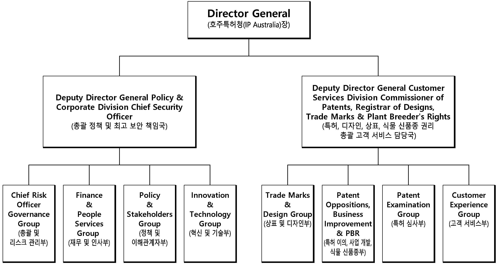
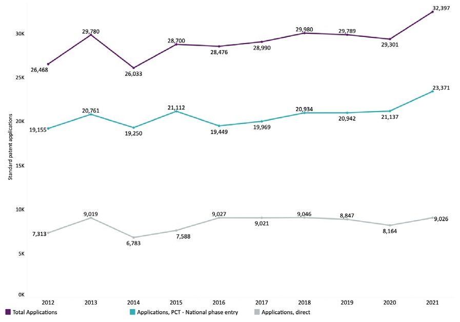
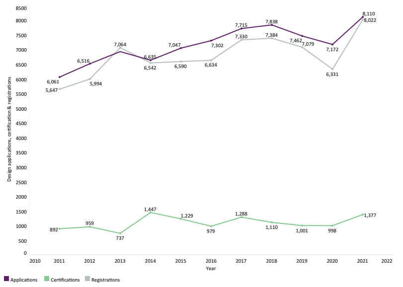
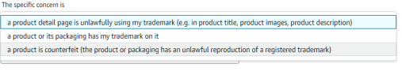
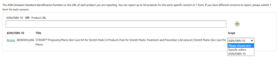
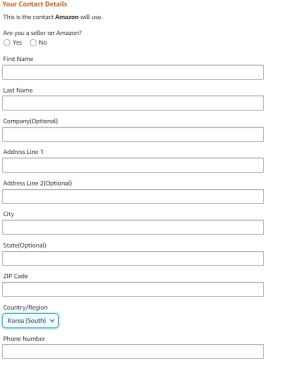
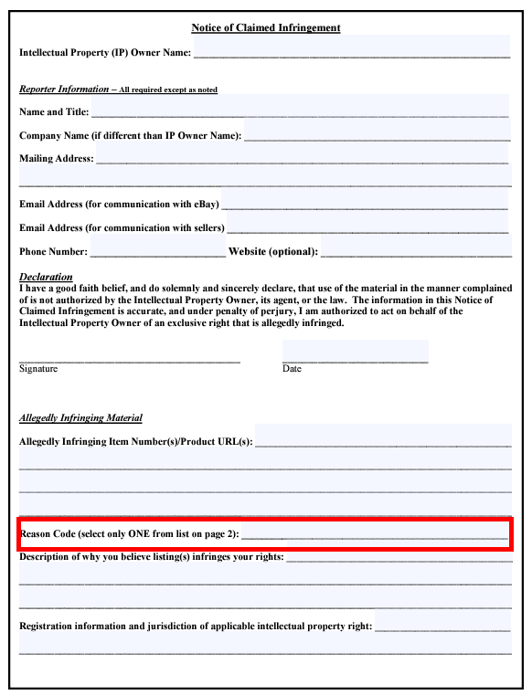
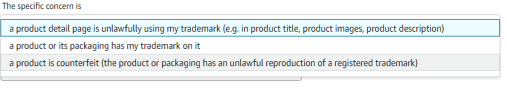
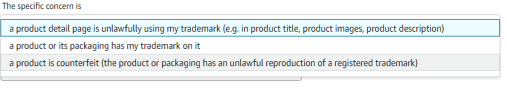

국명 : 호주연방(Commonwealth of Australia(Australia))
•수도 : 캔버라(Canberra) ※ 인구 약36만
•인구 : 2564만명
•면적 : 769만㎢ (한반도의 35배)
•언어 : 영어
•종교 : 기독교 67%, 무교 26%, 기타(불교, 이슬람교 등) 7%
•민족 : 앵글로색슨 80%, 기타 유럽 및 아시아계 17.3%, 원주민 2.7%
정치현황
정부형태 : 입헌군주제(내각책임제)
- 영국 여왕이 국가원수
- 총독이 대리
•주요인사
-총독 : David Hurley(19.7)
-총리 : Anthony Norman Albanese(22.5)
-상원의장 : Slade Brockman(21.10)
-하원의장 : Andrew Wallace(21.11)
-외교장관 : Penny Wong(22.5)
-통상장관 : Dan Tehan(20.12)
•의회구성 : 양원제
-상원 : 76석, 하원 : 151석
경제현황
(2021년 기준,
IMF 추정치)
GDP : 1조 6331억$ (2021)
•1인당 GDP : 5만 7541$ (2021)
•경제성장률 : 4.7% (2021)
•교역 : 8,916억 호불(호주 외교통상부)
•수출액 : 3,447억$
•수입액 : 2,477억$
•주요산업 :
-1차산업(농업, 광업) 및 3차 산업(금융, 서비스) 비중이 큰 전형적인 선진국형 산업구조, 제조업 취약
[표 3] 호주 경제지표 현황
*자료원 :IMF, OECD, World Bank, CEIC, 호주 통계청, 호주 준비은행, 호주 재무부, Economist Intelligence Unit, Global Trade Atlas, UNCTAD Stat, KOTRA
경제지표
2017
2018
2019
2020
2021
경제성장률(%)
2.4
2.8
1.9
-2.4
4.7
명목 GDP( 십억$)
1,385.20
1,421.30
1,391.50
1,359.30
1,633.10
1인당 GDP(PPP, $)
49,616
51,734
53,359
53,316
57,541
1인당 명목 GDP($)
55,914.69
56,465.24
54,464.06
52,824.82
60,057.57
정부부채(% of GDP)
41.1
41.7
47.5
63.1
72.4
물가상승률(%)
1.9
1.8
1.8
0.9
3.4
실업률(%)
5.6
5.3
5.2
6.5
5.1
수출액(백만$)
231,130.83
257,097.52
270,982.08
250,795.70
344,724
수입액(백만$)
221,368
227,012
213,750
203,170
247,706
무역수지(백만$)
9,762.83
30,085.52
57,232.08
47,625.70
97,018
외환 보유고(백만$)
66,573
53,874
58,741
43,007
58,640
이자율(%)
1.5
1.5
0.75
0.1
0.1
환율 (자국통화)
1.28
1.42
1.46
1.29
1.38
가. 경제 전망
2020년 코로나19 대유행 이후 호주 정부의 강력한 대응으로 호주 경제는 점진적 회복세를 보였으나 2021년 델타 변이 바이러스 확산으로 다시 둔화되는 양상을 보임. 특히 호주 최대 도시인 시드니와 멜버른에서 강력한 봉쇄 정책을 시행하면서 내수 소비 시장은 크게 위축 되었으며, 많은 중소규모의 사업체들이 문을 닫기도 함
그러나 백신 접종의 확대와 호주 정부의 적극적인 경기 부양책으로 2022년 호주 경제는 회복세로 전환되었음
- 백신 접종 확대에 따른 봉쇄 규제 완화로, 2022년 중반 이후에는 팬데믹 이전의 경기 회복 속도를 되찾을 것으로 기대됨
[그림 1] 호주의 코로나19 백신 접종 현황
*출처 : 호주 보건부
(1) GDP 성장률
2021년 11월 호주준비은행은 2022년 호주의 GDP 성장률을 5.5%로 전망함. 이는 지난 8월 예측한 4.3%보다 높은 수치로 코로나19 백신 접종의 확대로 소비 기회 확대 및 가계 소비의 증가가 예상되며 코로나19 이전 진행되었던 건설 부문의 투자 및 시공 활동도 빠르게 회복될 전망임. 한편, IMF, OECD 등 국외 기관은 호주의 GDP 성장률을 3~4% 정도로 예상함
[표 4] 호주준비은행의 호주 GDP 성장률 전망
출처: 호주준비은행(2021.11.3. 기준)
구분
2021.6.
2021.12.
2022.6.
2022.12.
2023.6.
2023.12.
GDP 성장률(%)
9.6
3
4
5.5
3.25
2.5
[표 5] 국내외 기관별 2022년 호주 GDP 성장률 전망
출처: 기관별 홈페이지(연평균 통계)
기관명
IMF
OECD
호주준비은행
NAB(호주 4대 은행)
GDP 성장률(%)
4.1 ('21.10.)
3.3 (‘21.9.)
5.5 (’21.11.)
4.3 (’21.10.)
(2) 물가 상승률
호주 준비은행에 따르면 2020년 2분기 -0.3%였던 호주 물가상승률은 2021년 2분기 3.8%로 급증하였으며, 4분기엔 3.25%를 기록함. 이는 2020년 하반기부터 시작된 유류 가격 상승 및 자동차 수요의 증가, 신규 주택 건설 비용 상승 등이 기인한 것으로 보임. 2022년 3분기 현재 물가상승률은 7.3%를 기록하였고, 2022년 4분기에 8.0%를 기록할 것으로 예상됨. 이후에도 점진적으로 물가상승률이 낮아질 것으로 예상됨
(3) 금리
2022년 호주 금리는 현 0.1%를 유지할 것으로 전망됨. 호주준비은행은 2020년 시장유동성 확대를 위해 세 차례 금리 인하를 단행하였으며, 2020년 11월에는 기준 금리를 기존 0.25%에서 역대 최저 수준인 0.1%로 인하함. 그러나 2022년 5월부터 호주 준비은행은 금리인상을 단행해서, 2022년 11월 현재 기준금리 2.85%이며 앞으로 2~3차례 더 인상해서 3.6~4% 선에서 기준금리가 정점을 찍을 것으로 것으로 예상됨
(4) 환율
글로벌 경기 회복 및 미국 달러 가치 하락이 예상됨에 따라 호주 달러는 상승할 것으로 보임. 호주의 주요 교역국 경기가 회복세로 전환하며 원자재 수요가 크게 증가하고 미국 연방정부의 기준 금리 동결 및 유동성 공급 확대 정책 유지 기조로 미국 달러 가치가 하락하며 호주 환율은 최대 0.80선까지 상승할 것으로 전망됨
(5) 투자
공공 및 민간 기관의 대규모 파이프라인 프로젝트 및 국가 인프라 산업 지원으로 활성화로 2022년 호주 국내 투자 시장은 긍정적임. 저금리 및 세제 혜택, 정부 보조금에 따른 부동산 시장 활성화로 건설 경기가 빠르게 회복될 전망이며 이에 따른 기계 및 장비 부문에 대한 투자 증가가 예상됨
한편, 호주의 해외투자 유치는 중국과의 갈등 기조가 유지됨에 따라 유럽, 영국, 및 아시아권(중국 제외)의 비중이 증가하는 추세임. 중국의 대호주 투자는 2019년 26억 호주 달러에서 2020년 10억 호주 달러로 61% 감소한 반면에 2020년 EU(13%), 영국(7.3%), 일본(8.4%), 아세안(5.5%)의 투자는 증가함. 대호주 최대 투자국인 미국은(2020년 호주 전체 투자금액의 23% 차지) 다자간 경제 협력 및 동맹 강화 정책 기조의 바이든 행정부가 집권함에 따라 미·호 간 협력 중심 산업인 방산업, 우주산업, ICT, 의료산업 등을 중심으로 투자가 증가할 것으로 기대됨. 또한 대호주 아시아 최대 투자국인 일본은 수소 산업을 주요 국가 성장 산업으로 선정한 바, 향후 호주 수소 산업에 대한 투자 규모 확대 전망됨
(6) 교역
글로벌 경기회복의 수혜로 향후 교역 재활성화가 기대됨. 호주의 최대 무역국인 중국과는 갈등 고조에도 자원 중심 교역 관계를 유지 중이며, 지난 6월 영국과의 FTA 협상이 마무리 단계로 접어듦에 따라 호주의 수출입 시장은 더욱 활기를 띨 것으로 기대됨
2021년 1-9월 기준 호주의 상위 교역국은 중국, 일본, 미국 한국 순이며 최대 교역국인 중국의 교역액은 지난해 동기 대비 38.3% 상승함. 한국은 호주 전체 교역의 6% 가량을 차지하고 있으며 2021년 1-9월까지의 총 수출입 규모는 전년 동기 대비 60% 가량 상승한 251억 달러임
[표 7] 호주 주요 교역국(단위: 억 달러, %)
출처: Global Trade Atlas
순위
국가
수입
수출
총 교역액
1
중국
481
1,091
1,572
2
일본
113
318
431
3
미국
193
91
284
4
한국
65
186
251
전체
1,803
2,576
4,379
2022년에도 호주는 철광석, 석탄, 석유가스, 금 등 자원 중심의 수출을 이어갈 전망이며 경기 회복을 위한 산업 활동이 재개되면서 광물성 연료, 자동차, 화물차, 기계 등의 수입이 증가할 것으로 전망됨
[표 8] 호주 주요 수출입 품목(단위: 억 달러, %)
주: 순위 및 증감률 2021.1-9월 기준, 증감률 전년 동기 대비
출처: Global Trade Atlas
순위
수출
수입
품목
2020
2021.1-9
증감률
품목
2020
2021.1-9
증감률
1
광물
937
1,113
72.4
핵반응 기계
308
272
24.4
2
광물성 연료
612
590
24.7
자동차
241
255
61
3
귀금속류
196
156
14.7
전자기계
242
193
14.6
4
육류
100
80
8
광물성 연료
159
179
48.1
5
곡류
51
75
188.5
의약품
88
77
17.1
총계
2,508
2,756
42.5
총계
2,032
1,803
24.8
(7) 산업
호주의 에너지 전환에 따른 신재생 및 수소 에너지 산업이 부상할 것으로 전망되며, 2030년까지 세계 3대 수소 수출 국가로 부상하기 위한 호주 정부의 수소 부문 지원 확대가 기대됨에 따라 수소 모빌리티, 연료전지 및 충전소와 같은 인프라의 성장이 예상됨
- 2021년 2월 기준 호주의 우선순위 인프라 계획은 분류 기준에 따라 우선순위 투자사업 23개 및 사업구상 157개가 포함되며, 이는 590억 호주 달러 규모에 달함. 인구 증가 대비 열악한 인프라를 보유한 지역 사회의 경쟁력 강화를 위해 호주 정부는 꾸준히 인프라 산업에 힘을 쏟고 있으며, 2021년 해외투자자들의 약 91%가 대호주 투자의 주요 요인으로 꾸준한 인프라 산업의 발전을 지목한 만큼 향후도 해당 산업의 지속적 성장이 기대됨. 한편, 호주 정부의 제조업 부문에 대한 투자 확대로 신기술 도입 및 혁신의 가속화가 기대됨
3. 지식재산권 분야 정보
2022년 4월 발간된 호주 지식재산 보고서 2022(Australian Intellectual Property Report 2022)에 의하면 2021년 호주 내 특허, 상표, 디자인의 출원건수는 역대 가장 높은 수치를 기록하였음. 특허분야에서는 원격 업무 및 커뮤니케이션 관련 기술 출원의 증가가 눈에 띄며, 상표 및 디자인과 관련해서는 팬데믹 이후 주요 업무형태로 자리 잡은 재택근무의 영향으로 거주공간의 개선을 위한 장비분야 및 가정용품 관련 디자인 및 브랜드확보 활동이 증가함
2021년 호주 내 지식재산권 출원건수의 괄목한 만한 증가는 호주 경제가 COVID-19팬데믹 위기상황을 잘 극복해 나가고 있으며 외국인들에게도 호주가 매력적인 시장으로 인식되어 지속적인 투자와 관심이 이어진다는 방증이며, 수치상으로만 본다면 팬데믹 이전의 증가세를 완전히 회복하여 특허, 상표, 디자인 출원 건수 모두 사상 최고치를 기록함
COVID-19 의 직접적인 영향을 받은 의약품이나 의료기기뿐만 아니라 원격통신, 사무기기, 가정용품 관련 지식재산권 확보 노력이 급격히 증가하였다는 점은 최근 산업지형이 어떻게 변화하고 있는지 읽을 수 있는 대목임
미국과 중국의 경우 전년도와 마찬가지로 특허, 상표, 디자인 전 분야에서 호주 내 다출원 국가순 1, 2위를 차지하였는데, 한풀 꺾인 중국기업의 증가세를 미국기업이 되찾은 모양새임. 호주와 중국 간 정치적인 긴장상태와 무역분쟁의 여파가 중국기업들의 호주 내 지식재산권 확보 노력에 제동을 걸었고, 일반적으로 지식재산권 확보가 기업이 해당 국가에 진출하기 2-3년 전에 이루어지는 것을 감안한다면 향후 호주와 중국 간 통상지형에도 영향을 미칠 것으로 보임
호주는 역내포괄적경제동반자협정 RCEP(Regional Comprehensive Economic Partnership) 협정국으로 2022년 1월 1일부터 효력이 발효됨
- 저작권·특허·상표·디자인 등 지재권 전반에 걸쳐 WTO 무역 관련 지식재산권에 관한 협정(TRIPs) 이상의 보호 규범을 마련
- 지식재산 장에서는 저작권, 특허, 상표, 디자인 등 지식재산권 전반을 아우르는 포괄적인 보호규범 및 침해 시 구제수단을 마련하였음.
- 저작권, 상표, 지리적 표시, 디자인, 특허 등을 대상으로 지식재산권의 취득과 행사(민사 및 형사상의 권리 행사 및 디지털 환경에서도 적용) 등 WTO TRIPS 협정을 상회하는 보호 등을 포함
- WTO TRIPS 협정을 상회하는 규정으로, 구체적으로는
① 유명 상표임을 결정하는 조건으로서 자국 또는 타국에 등록되어 있는지 등을 요구하는 것을 금지하는 의무
② 자국의 법령에 따라 상표등록 출원이 악의로 행해진 경우 자국의 담당 기관이 해당 출원을 거절하거나 그 등록을 취소할 권한을 가지고 있음을 규정할 의무
③ 물품의 일부에 구체화된 디자인 또는 물품의 전체와의 관계에서 해당 물품의 일부에 특별히 고려된 디자인이 디자인으로서 보호 대상이 되는 것 등을 포함
④ TRIPS 협정과 공중보건에 관한 도하 선언에서 인정된 유연성을 충분히 이용할 권리를 확인하고, 유전자원, 전통 지식 및 민간전승에 관한 규정도 포함
제2절 현지 유관기관 정보
1. 산업재산권 기관
가. 호주(오스트레일리아) 특허청(IP Australia)
1904년 이전 호주에서의 특허, 상표 및 저작권 각각의 개별적인 권리는 정부의 등록 형태로 이루어지다가, Patent Act가 제정되면서 1904년 2월 13일에 특허청이 설립되었음. 초기에는 특허에 대한 업무를 수행하다 1933년에 상표와 디자인권에 관한 법을 제정하고 이에 관련된 업무를 수행하게 되었음
오늘날에는 특허청의 업무영역이 확대되어 특허, 상표와 디자인 및 식물 육종가 권리에 관한 법률을 제정하여 이에 관한 업무를 수행하고 있음. 대외적으로 호주 특허청은 Asia-Pacific Economic Cooperation(APEC) Bilateral/Multilateral agreements, Vancouver Group, Single Economic Market와 관련하여 업무를 수행하고 있음
(1) 호주 특허청의 주된 업무
- 출원된 특허 검토, 심사 및 등록
- 특허 및 특허 제도와 관련된 정보를 일반인 및 발명자에게 제공
- 선행기술 조사
- 중소기업, 수출업체, 직업교육 부문과 학교 등에 초청 강연 및 특허 교육
(2) 호주 특허청의 조직도
아래 호주 특허청의 조직 구조를 보면 청장 아래 크게 6가지 부서로 나뉘어져 있는데 사업개발 및 전략 그룹, 비즈니스 및 정보 관리 솔루션 그룹, 고객 운영 그룹, 기업 서비스 그룹, 특허, 육종가 권리(plant breeder’s right)상표 및 디자인 그룹으로 나뉘어져 있음
[그림 ] 호주 특허청 조직도

*출처 : 특허청, KOTRA
- 사업개발 및 전략 그룹(Business Development and Strategy Group)은 특허 정책에 관한 방향을 개발하며 입법과정과 의회 관계에서 특허청의 의견을 대변하고, 출원인, 이해관계인, 국제기구 및 기타 특허 사무소와의 관계를 조율함. 비즈니스 및 정보 관리 솔루션 그룹(Business and Information Management Solutions Group)에서는 기술의 전달 및 관리를 담당하고 있음
- 고객운영그룹(Customer Operations Group)에서는 고객들에게 정보를 제공하고 고객 관리 센터를 운영하는 등의 서비스를 제공하고 등록신청과 등록유지신청 등을 전담
- 상표 및 디자인 그룹(Trade Marks and Designs Group)에서는 상표, 디자인 출원 건을 심사하고 권리를 부여하며, 거절과 관련된 분쟁에 대해 결정을 내리게 됨
나. 지적 재산권에 관한 자문 위원회(ACIP, The Advisory Council on Intellectual Property)
지적 재산권에 관한 자문위원회 (ACIP)는 정부에 의해 1994년에 설립된 독립적인 기구이며, 지적재산권 문제와 호주 특허청의 전략적 관리에 대한 산업, 과학 및 연구를 위한 자문기구의 역할을 하고 있음. 위원회의 회원은 지적 재산권 제도의 이해 관계자와 크고 작은 기업에서 개인, 법률 및 변호사 직업과 학계의 인사를 포함하게 됨
다. 호주 행정 항소 재판소(Administrative Appeals Tribunal, AAT)
행정 항소 재판소(AAT)는 호주 연방 정부의 행정 결정의 준 사법적 검토를 위해 존재하는 호주 준 사법체계의 일부임. 행정 항소 재판소(AAT)는 호주 정부 및 일부 비정부 기관에 의한 행정 결정의 다양한 범위의 독립적인 검토를 받을 수 있음. AAT은 법원과 같은 사법기관에 비해 가능한 간소한 형식과 전문적이며 공정하고 공평하게, 높은 품질의 신속한 검토를 제공받을 수 있다는 것이 장점임. 개인과 정부 기관 모두 AAT의 서비스를 이용할 수 있음. 호주 법원 계층 구조의 일부인 법원은 아니나 재판소의 결정은 호주의 연방법원에 의해 검토될 수 있음. AAT는 우리나라의 행정심판소와 같은 역할을 하는 것으로 호주의 지식재산권과 관련하여 심사관, 등록관 등의 결정에 대해서는 연방법원에 항소하나 행정적인 절차에 관한 불복의 경우에는 행정 심판소에 하게 됨. AAT는 행정적인 결정에 대해 검토를 할 일반적인 권한은 없으나 일반인 또는 장관의 지위에서 AAT에 행정심판을 제기하는 경우 해당 처분을 받은 행정결정에 대해 관할권을 부여받게 됨
2. 그 외 지식재산권 유관기관
가. 소송절차
호주 세관 및 국경 보호(이하 관세청)는 호주 국경의 보안과 안전성을 전담하는 기관임. 여기서는 국경을 넘어온 불법 상품 및 사람들의 불법 이동을 감시하고 방지하기 위해 호주 연방 경찰, 호주 검역 및 조사관, 이민 및 시민권의 부와 국방부가 다른 정부 및 국제기구와 긴밀하게 상호작용하고 있음. 세관 및 국경 보호를 통해 호주 지역 사회, 정부, 산업, 여행 및 기타 정부 기관과 호주 시민들이 보호를 받고 있음
- 조직으로는 국경보호위원회(Border Protection Service)와 호주 관세부(Australian Customs)를 총괄한 최고집행임원으로서 수장인 CEO가 있고 각각의 부에 대하여 부수장(Deputy Chief Executive Officers(DCEOs))을 두고 있음
- Australian Customs and Border Protection Service는 호주에 반입, 반출되는 물품과 입출국자들에 대해 관세를 매기고 규제하는 기관이므로 수입되는 물품이 지식재산권을 침해하는 경우 압류를 할 수 있으며 상표, 저작권을 침해하는 물품의 경우에 수입이의신청을 통해 일정 기간동안 수입금지 명령을 내릴 수도 있음
나. 사법기관
호주는 웨스턴오스트레일리아, 사우스오스트레일리아, 퀸즐랜드, 노던 준주, 빅토리아, 뉴사우스웨일스의 주로 이루어진 연방제 국가임. 연방제 국가이므로 각 주의 자치 하에 행정, 사법 업무가 처리되며 각 주마다 법도 조금씩 다름
- 기본적으로 호주의 법률구조는 연방 정부와 주(州) 정부가 함께 관장하고 있는 구조이며 호주의 헌법이 연방정부와 주정부의 소관 분야를 별도로 구성하고 있기 때문에 연방의회가 제정한 연방법을 다루는 연방법정(Federal Courts)과 주 의회가 제정한 주법을 다루는 주법정(State Courts)으로 나누어져 있음. 호주의 법률 시스템은 영국에서 발달된 관습법의 법률 체계를 근간으로 함
법정이 부여받은 법적 권한의 범위가 있어 이것을 재판권(Jurisdiction)이라고 하고 이 재판권의 범위에 따라 법정의 위계(Hierarchy)가 생김
- 연방법정은 두 개의 위계가 있는데 호주 연방법원(Federal Court)과 대법원(High Court)임. 연방법원 중 특별 사건을 다루는 법원으로 가정 법원(Family Court)이 있음. 그리고 주법정의 최고법원, 고등법원, 호주연방법원 그리고 가정법원 위에 군림하는 최고의 법정이 대법원(High Court)임. 연방법원에 불복하는 경우 연방법원의 합의체에 항소하며 경우에 따라 최고법원인 대법원에 항소하게 됨. 연방법원의 합의체는 3인을 Full Court라고 합의체 판결을 하며 특별한 경우 5인의 합의체를 구성하기도 함. 연방법원은 대법원의 판결에 구속되는데 대법원은 7명의 판사로 이루어져 있음
(1) 연방법원(Federal Court)
기초 연방법정은 특수한 연방법에 따른 특수 연방법원(Special Federal Courts)을 포함하며 이 위에 보다 중요한 연방법과 관련된 사건을 다루는 호주연방법원(Federal Court of Australia)이 있음. 또 연방법정에 소속되면서도 가정법에 의거한 가정법원(Family Court)이 별도로 있음. 연방지방법원은 이혼, 자녀부양과 같은 가정법 관련 비교적 단순한 소송과 행정소송을 다룸
- 호주 연방법원은 노사분쟁, 거래행위법상의 소송, 그리고 파산에 관한 사항 등을 다루며 먼저 1명의 판사에 의해 판결이 난 후 판결에 불복할 경우 3명의 판사에 의한 항소도 다룸. 구체적으로 연방지방법원은 배상청구법원, 국제 거래 법원 및 파산 법원 등 전속 관할권을 행사하는 특수법원을 제외하고는 연방사법관할권에 속하는 모든 민사, 형사를 다루게 되는 제1심 법원임
- 판결에 대해 불복할 때에는 연방법원 합의체에 상소할 수 있으며 special leave가 인정되는 경우에는 연방대법원으로 직접 상소할 수도 있음. 그러나 연방법원이 주법원보다 모든 법 문제에 있어서 우위에 있는 법원은 아니며 연방문제에 관한 관할권 등 주법원으로부터의 상소사건에 대해 연방법원이 관할권을 갖고 있는 경우가 있지만 그것은 연방국가적 구조에 기인하는 것이고 그 외의 점에 있어서는 본질적으로 양자는 별개의 차원이라고 볼 수 있음
연방대법원(High Court)은 각주의 최고법원(Supreme Court)의 판결에 불복하여 항소하는 사건을 맡으며 우리나라 대법원이 대법원장 1명 포함 14명의 대법관이 있는 데에 반해 호주의 대법원에는 주법관(chief justice) 1명 포함 7명의 대법관이 있음
(2) 주법원(State Court)
각 주는 주 헌법과 주 의회가 제정한 법률에 따라 독자적인 주법원을 가지고 있기에 각 주마다 조직, 권한, 명칭 등에 차이가 있음. 주법정은 3단계의 법원으로 나누어져 있음. 하급 법원의 명칭은 주마다 약간씩 다른데 대개 Magistrates Courts, Local Courts, Courts of Petty Sessions라고 불리며 비교적 경미한 형사 사건과 사소한 민사사건을 취급함
- 1심법원은 일반적으로 1명의 판사가 배심원과 함께 또는 단독으로 모든 사건을 심리하게 되는데 다만 가사, 소년범죄, 유언집행 등에 관해서는 특별법원이나 부가 설치되기도 함
- 중급법원은 하급법원에서 올라오는 민사사건의 항소심과 민사사건 중 고액이 관련된 사건과 무장 강도 등 중한 형사범을 직접 다룸. 고등법원은 주법정의 최고 법정으로 하급법원, 중급법원에서 올라오는 항소재판을 취급하고 살인이나 강간 같은 중범의 형사 사건을 다룸. 1심에 불복할 경우에는 항소법원에 항소를 제기하며 이에 불복할 경우에는 최고 법원으로 항소하게 됨
3. 지식재산권 관련 조약 현황
호주가 가입한 주요한 국제 조약으로는 내국인 대우 원칙, 최소한의 보호, 무방식주의, 소급 보호 등을 기본원칙으로 하여 예술적 저작물을 대상으로 하는 저작권 등 지식재산권에 관한 베른협약(1928)과, 미생물의 보호에 관한 부다페스트 협정(1990), 상표권의 국제적 보호를 꾀하는 마드리드 의정서(2001), 특허권의 국제적 보호를 위해 하나의 출원으로 다수국에 출원할 수 있도록 한 특허협력조약(PCT, 1970), 특허법 절차 통일을 위한 PLT 등 다수의 협약, 협정에 가입되어 있음
[표 9] 호주가 가입한 지식재산권 관련 조약 현황
출처: WIPO
조약명
발효연도
Paris Convention
1925
Berne Convention
1928
Nice Agreement
1961
WIPO Convention
1972
Phonograms Convention
1974
Strasbourg Agreement
1975
Patent Cooperation Treaty
1970
Budapest Treaty
1990
UPOV Convention
1989
Brussels Convention
1990
Rome Convention
1992
Trademark Law Treaty
1998
Madrid Protocol
2001
WIPO Copyright Treaty
2007
WIPO Performances and Phonograms Treaty
2007
Patent Law Treaty
2009
제3절 지식재산권 지원 사업 현황
[표 10] 지식재산권 지원 사업 목록
사업분류
사업명
주요내용
세부정보(링크)
비고
1. 지식재산창출
IP기반 해외진출 지원
수출(예정) 중소기업 대상 최대 3년간 IP 서비스(해외권리화 지원 등)를 제공하여 글로벌 강소기업으로 육성
※ 사업분류 1,2,3은 특허청 산하 사업임
※ 위 자료는 2022년 기준으로 작성되었으며, 세부 지원 기준 등 자세한 사항은 각 홈페이지 링크를 통해 확인이 필요함
PARTII 지식재산권
제1절 개요
1. 법률체계 및 지식재산권 관련 법률
가. 특허
특허란 어떠한 새롭고 진보적이며, 유용한 기기, 물질, 방법, 과정 등에 의해 권리를 부여하는 것임. 특허는 독점배타권을 부여하게 되며 이는 법적으로 구속력이 있음. 호주에서 특허권을 취득하게 되면, 특허권자의 허락 없이 호주에서 특허 발명을 실시하는 자의 사용을 금지시킬 수 있고 그에 따른 법적 조치를 취할 수 있으며 타인에게 실시할 수 있는 권원을 부여할 수도 있음
그러나 특허를 받는 것이 항상 최선의 선택은 아니며 이를 영업비밀이나 노하우로 관리할 수도 있음. 왜냐면 특허제도는 신규한 발명의 공개의 대가로 독점권이 주어지는 것이므로 발명을 공개해야 하기 때문임. 발명을 공개할 경우 발명을 도용할 수도 있고 약간의 개량을 통해 타인이 특허권을 받을 수도 있음. 이러한 타인의 특허권 발생을 방지하기 위해서는 자신의 발명을 공개하여 특허권 발생을 저지할 수도 있음. 또한 특허를 유지하기 위해서는 일정 금액의 수수료를 납부해야 하고 이를 유지 관리하는데 시간이 소요되며 제3자가 자신의 특허를 침해하는지 여부에 대한 검토 및 감시가 필요함. 따라서 자신의 발명을 특허권으로 보호하는 것이 적절한지는 상황에 맞게 유동적으로 대처하는 것이 권장됨
(1) 특허발명의 범위
호주 특허법 1990에는 발명의 정의 규정을 따로 두고 있지는 않음. 그러나 특허법의 법 목적상 전통적으로 특허가 부여되었던 제품, 기기, 장치 등과 같은 발명뿐만 아니라 그 보호의 필요성에 따라 컴퓨터 관련 발명(computer related invention), 사업 방법(business method, BM), 생물학적 발명(biological invention), 미생물과 다른 생물학적 물질(micro-organisms and other biological materials)도 특허의 대상이 됨. 그러나 인간이나 인간으로부터 나온 것을 생물학적으로 처리한 것, 예술작품, 수학적 모델, 계획, 또는 다른 순수하게 정신적인 과정이나 생각은 특허를 받을 수 없음
■ 컴퓨터 관련 발명에 대한 특허
호주에서는 컴퓨터 관련 지적 재산권에 대해 세 가지 주요 형태로 보호하고 있는데 특허, 저작권, 회로 배치에 관한 권리(circuit layout rights)가 이에 해당함. 그러나 이들이 보호하는 영역은 조금씩 다른데 회로 배치에 관한 권리는 전자 회로의 모양으로 디자인 및 레이아웃을 보호하는 것이고 저작권은 복사되는 컴퓨터 프로그램의 코드를 보호함. 특허는 프로그램이 컴퓨터 작업을 만드는 방법을 보호함. 따라서 특허로 보호받는 경우에는 컴퓨터 작업결과를 보호하는 것이므로 컴퓨터 프로그램이나 코드가 다르더라도 같은 방식으로 프로그램을 구현하는 경우에는 같은 발명으로 봄. 컴퓨터와 관련하여 특허로 하드웨어와 소프트웨어 모두 보호가 가능한데 특히 소프트웨어의 경우에는 산업상 이용가능 해야 하며 단순히 수학적인 문제의 주어진 유형을 해결하기 위한 절차에 불과한 경우에는 특허받을 수 없음. 하드웨어 같은 경우는 이전의 기기에 비해 향상된 방법으로 작업을 수행하는 경우에는 특허 받을 수 있는데 컴퓨터 메모리나 디스크 드라이브 버스 구조(bus architecture), 모니터 같은 경우가 그 대상임. 반면 컴퓨터의 소스코드, 실행코드, 데이터뱅크 같은 경우는 저작권이 컴퓨터 프로그램의 특정 코드를 보호하는 것이므로 저작권으로 보호 받는 것이 타당함. 혹은 집적회로(IC)의 배치를 보호받고 싶으면 집적회로를 만드는 능동, 수동 소자 및 이들의 3차원 interconnection과 이들의 레이아웃을 보호하는 회로배치에 관한 법률로서 보호받으면 됨
■ 비즈니스 방법(business method)
BM 발명이란 컴퓨터, 통신, 인터넷 기술을 기초로 영업을 하는 방법에 관한 아이디어가 산업상 이용 가능하도록 구체적인 기술 수단으로 구현된 영업방법과 관련된 발명임. 즉 사업 아이디어에 정보 시스템에 결합된 형태의 발명으로, 온라인상의 사업 방식이 구체적인 기술 수단을 통해 실현된 형태의 발명임. 호주 특허청에서 요구하는 조건으로는 우연적인 것이 아닌 실질적으로 ‘유용한 물건’을 만드는데 직접적으로 관련되어야 하며, 따라서 방법을 구현하는 시스템이나 프로세스의 특정 동작이 충분히 상세하게 묘사되어야 함
■ 생물학적 발명에 대한 특허
일반특허는 미생물, 세포, 잡종세포, 관련 생물학적 물질과 그들의 사용, 유전자 조작 생물에 대해 얻을 수 있음
■ 미생물에 대한 특허
미생물에 관한 특허의 경우에는 미생물에 대한 반복가능성을 보장하기 위해 입수가 어려운 경우에는 기탁을 요구하고 있음. 호주 특허법에서는 미생물 기탁 관련 규정을 특허법 시행령에서 두고 있는 우리나라와는 달리 sec41, 42 규정에서 명세서 작성 시 미생물에 관한 규정을 두고 있음. 당해 기술 분야에서 숙련된 자가 사용 가능할 것이라고 합리적으로 기대할 수 없는 경우에는 기탁과 함께 명세서에 설명할 것을 요구하고 있음
나. 디자인 제도
(1) 디자인 범위
디자인이란 물품과 관련하여, 그 물품의 하나 이상의 시각 특징으로부터 야기되는 모든 외관을 말함. 디자인법상 물품이란 공업적으로 제조되거나 수작업으로 만들어진 것을 말하여, 물품의 구성요소라도 그 물품과 독립하여 존재할 수 있는 경우 물품으로 볼 수 있음. 시각적 특징이란 물품과 관련한 물품의 형상, 구성, 패턴, 장식을 포함하나 이에 한정되지는 않음. 그러나 호주 디자인법은 촉감, 재료, 표면, 색은 시각적 특징에서 제외하고 있는데 우리나라는 물품의 형상, 모양, 색채를 디자인으로 보고 있어 색채의 디자인법상 지위 면에서 차이가 있음
다. 상표 제도
(1) 상표 출원 종류
상표출원의 경우 크게 통상의 호주의 상표등록출원이 있고, 마드리드 의정서에 의한 국제상표등록출원이 있음. 전자는 호주의 등록요건을 만족하여 등록이 되면 호주 내에서 상표로 보호받고 후자는 국제 상표등록 출원으로 출원하면, 마드리드 의정서에 의해 기초출원 또는 등록의 출원일이 진입국에서의 출원일로 인정되면서 국제적 보호를 받게 되는 것임
- 호주에서는 영어, 스페인어, 프랑스어 중 하나의 언어로 출원해야 함. 호주 특허청(IP Australia)을 지정국 관청으로 하여 출원하여 국제 출원의 요건을 만족했는지 심사받게 되고, WIPO의 국제 사무국에서 출원서가 송부되면 국제 공개가 되며 국제조사기구에 의해 형식적 요건을 심사받게 됨. 승인받은 상표는 국제 공개가 되어 이의 신청을 받게 됨
표장의 종류는 지리적 표시, 증명표장, 단체표장, 소리, 냄새, 상표 등 여러 종류가 있지만 이를 출원하는 방법은 통상의 상표등록 출원의 형식에 따름. 다만 각 상표출원의 형식에 따라 특별히 더 요구사항이 있는 경우가 있는데 증명표장의 경우라면 CTM의 기준에 대한 사본을 제출해야 하고, 조건을 만족시키는지를 심사하게 되며 아울러 호주의 ACCC의 승인도 받아야 함. 지리적 표시는 증명표장으로 보호하기 때문에 증명표장의 요건을 만족하면 됨. 다만 호주는 포도주의 주산지이기 때문에 Wine Australia Corporation에 의해 보호받을 수도 있음
(2) 상표의 정의
호주 상표법 sec17에서는 상표에 관한 정의 규정을 두고 있음. “상표”란 사업을 영위하는 자가 업으로서 거래하거나 제공하는 상품 또는 서비스를 다른 사람이 사업으로 거래 또는 제공하는 상품 또는 서비스와 식별하기 위해 사용하거나 사용하려는 표장임. 즉 상표는 자신의 업무와 관련된 상품 등을 타인의 업무와 관련된 상품 등과 구별하기 위해서 ‘사용하는 것’이므로 사용의사 있어야 하며, 사용의사 없이 출원하는 경우에는 거절이유에는 해당되지 않더라도 후에 불사용 상표등록 말소 신청의 대상이 됨. 또한 자신의 상표와 타인의 상표와 ‘구별’하기 위한 것이므로’ 타인의 표장과 동일 유사한 것은 원칙적으로 등록받을 수 없음. 자신의 업무에 관련된 ‘상품 및/ 또는 서비스’와 관련된 표장이므로 상품 및/또는 서비스를 상품류 구분에 따라서 1류 이상을 지정하여 출원해야 함. 또한 상품 등에 관련한 ‘표장’이므로 상표법에서 허용하는 표장의 요건을 만족해야 함. 상표법에서는 눈으로 식별 가능해야 한다고 기본적으로 규정하고 있지만, 소리, 냄새 상표 등도 허용하고 있어 표장의 종류에는 크게 제한을 두고 있지 않음
(3) 상표의 종류
상표는 자신의 상품 등을 타인의 업무에 관련된 상품 등과 구별하기 위한 표장이고 표장은 전통적으로 어떠한 글자, 이름, 표시, 숫자, 기기, 브랜드, 라벨, 티켓 등의 조합에 의해 이루어진 것임(sec6). 1995년 상표법에서는 이러한 전통적인 표장의 정의에 새로운, 형태(shape), 소리(sound), 냄새(scent)를 추가하였음
- 대다수의 출원을 차지하는 일반적인 표장은 글자 또는 숫자의 조합으로 이루어진 형태이나 정의 규정에서 소극적으로 규정해 놓은 것이 아닌 만큼, 열거한 것에 대해서만 표장으로 인정되는 것이 아니라 잠정적으로 식별 표지로 사용 할 수 있는 것이면 모두 상표로 가능하다는 것을 내포하고 있음
- 3차원 입체상표의 경우에는 1995년 이전의 상표법에 의할 경우 등록 될 수 없었음. 이는 상표가 물품과 분리하여 존재하는 것으로 생각되었기 때문임. 현재는 코카콜라의 병 모양과 같은 입체 상표도 등록이 가능하게 되었음
호주 상표법에서는 특유의 제도로서 단체표장(Collective trademarks, Act part15), 방어 표장(defensive trademarks, Act part16), 증명 표장(certification trademarks, Act part17)을 별도 규정을 두어 규정하고 있음
- 단체 표장의 경우에는 해당 조합원이 제공하는 상품 또는 서비스와 타단체의 조합원이 제공하는 상품 또는 서비스와 구별하기 위해 사용 또는 사용할 의도로 사용하는 표장임. 단체 표장의 출원에 있어서는 보통의 상표 등록 출원과 다른 점이 없어 통상의 상표 등록 출원으로 출원하면 됨
- 증명 표장의 출원인은 법인 또는 비법인 단체이어야 하며 단체 표장에 관한 규정은 항상 복수인 members로 표현되므로 이는 그 단체의 구성원이 반드시 한 명 이상이어야 하는 것을 뜻함. sec163(1)에 의해, 단체표장 등록 출원은 통상의 상표 등록 출원과 같이 취급하며, sec163(2)에 의해 이 법의 목적에 따라 구성원 중 어느 누구의 사용이라도 단체표장 출원인의 사용으로 봄
- 방어 표장의 경우에는 원칙적으로 상표는 자타 상품 식별 표지로 사용하기 위해 출원하여 등록받는 것이나, 방어 상표의 경우에는 상표의 사용 의사가 없어도 가능함. 원칙적으로 등록 상표의 권리 범위는 등록 상표를 지정 상품 및/또는 서비스에 대하여 사용하는 경우까지 미치므로 이 범위에서 침해가 성립함. 그러나 타인이 다른 상품, 서비스에 사용할 경우. 상기 정의에 의하면 침해가 성립하지 않아 권리자로서는 침해책임을 묻기 위해서 모든 지정 상품에 대해 등록을 받아야 하는 곤란함이 있음
방어 표장으로 등록받기 위해서는 등록 상표의 지정 상품의 전부 또는 일부와 관련하여 어느 정도 사용하였기 때문에 다른 상품 또는 서비스에 관련한 상표의 사용도 연관성을 가져, 그 또한 등록 상표권자의 사용으로 볼 수 있는 경우로서 그 다른 상품 또는 서비스에 대하여 방어 표장으로 등록받을 수 있음.(sec185(1)) 이러한 방어 표장은 등록 상표가 출원인의 명의로 특정 상품 또는 서비스에 대한 방어 표장 이외의 상표로 이미 등록되어 있는 경우에도, 해당 상품 또는 서비스에 대한 방어 표장으로 등록받을 수 있음
증명표장이란 상품 또는 서비스를 거래하는 데 있어 그 상품 또는 서비스의 기원 물질, 생산 방법을 포함한 품질, 정확성, 그 외에 다른 특성을 증명표장권자 또는 그자로부터 권한을 부여받은 자가 증명해주기 위해 사용하는 표장을 말함. 증명표장의 경우에는 1995년 상표법에 의해서 대부분의 상표규정이 증명표장의 경우에도 적용되므로 증명표장의 출원은 통상의 상표 등록 출원으로 출원하면 됨.(sec170). 증명 표장의 특유한 요건으로 증명 표장 등록 출원을 한 자는 규칙에 따라 증명 표장의 사용을 관리하는 규약의 사본을 sec27(2)에 규정된 서류와 함께 제출하여야 함
- 규칙에는 상품 및/또는 서비스가 증명표장을 사용하기 위해, 증명 표장이 사용되기 위해 상품 및/또는 서비스가 충족시켜야 할 요구사항(“인증 요구 사항”), 상품 및/또는 서비스가 인증 요구 사항을 충족하는지 여부를 결정하기 위한 과정 및, 상품 및/또는 서비스가 인증 요구 사항을 충족하는지 여부를 평가하는 것이 승인된 자(“승인 인증 자”)가 되기 위한 특성 및, 증명표장권자 또는 사용권자가 상품 및/또는 서비스에 대한 증명 표장을 사용하기 위해 충족해야 하는 요구사항 및 증명표장권자 또는 사용권자의 증명 표장 사용에 대한 추가 요구 사항 및 상품 및/또는 서비스가 인증 요구 사항을 충족하는지 여부에 관한 분쟁 해결 절차 및, 증명 표장 관련 기타 문제에 대한 분쟁 해결 절차에 관한 사항이 기재되어야 함
2. 최근 개정사항 및 동향 소개
가. 2018년 지식재산법률 개정안
2018년 호주 정부는 생산성 위원회(Productivity Commission)의 권고 사항을 바탕으로 2011년 이후 가장 대대적인 호주 지식재산법률 개정안을 발표함
(1) 진정상품(genuine products, 진품)의 병행수입 제도 관련
- 그간 병행수입에 관한 판례의 애매모호한 태도에 대해 명확한 규정을 요구하던 여론을 반영한 듯, 저작권법의 유명무실하던 조항을 삭제하고 상표법에 새로운 조항(제122A항)을 추가함
- 신설된 상표법 제122A항은 호주 국내외를 막론하고 상표권자의 ‘(포괄적) 동의’를 받아 진정상품에 해당 상표를 사용했다면 이를 호주로 수입할 경우, 호주 내 해당 상표의 등록권자의 권리를 침해하지 않는다고 규정함. 기존에는 현실적으로 병행수입업자가 일일이 호주 내 상표 사용등록 여부 또는 상표권자의 동의를 얻는 것이 어렵다는 문제가 있었는데, 본 조항을 통해 수입업자가 ‘합리적’으로 관련 내용에 대해 조사하여 결론에 도달한 것이라면 상표에 대한 권리를 침해하지 않으면서 해당 상품을 합법적으로 수입할 수 있는 길이 열림
- 얼핏 보기에 위 병행수입 관련 조항이 호주 총판권자 등 기존에 호주 내 해당 상표에 대해 배타적 권리를 갖고 있었던 권리자들에게는 불리하면서 병행수입업자들에게 마냥 희소식인 것처럼 여겨질 수 있으나, 위 조항이 요구하는 조건이 다소 까다로우므로 병행수입업자의 경우, 해당 조항의 적용을 받으려면 가능 여부를 수입 전부터 꼼꼼하게 검토하여야 함
상표 불사용 취소 신청과 관련한 유예기간이 단축
- 현행 법령은 상표 출원 후 5년 이상 사용하고 있지 않은 경우, 제3자가 해당 상표에 대해 취소 신청을 할 수 있다고 되어 있으나, 이 5년의 유예기간이 과도하게 길다는 지적이 받아들여져 3년으로 단축됨. 그렇지만 개정법의 3년 기산 시점은 상표 출원일이 아닌 ‘상표 등록일’이기 때문에, 만약 출원 상표의 심사기간이 2년 이상으로 길어질 경우엔 결론적으로 현행과 큰 차이가 없을듯함
(2) 의약 특허와 관련된 특허법 조항
2018년 8월 24일부터는 특허권자가 의약특허의 존속기간을 연장하고자 할 경우, 보건부에 관련 내용을 보고할 필요가 없어짐. 이는 해당 내용을 연구개발 관련 세금공제 또는 호주 국세청 자료 등으로 충분히 조회할 수 있으므로 굳이 특허권자에게 불필요한 보고 의무를 지울 필요가 없어졌기 때문임
이번 개정안에는 호주 정부와 뉴질랜드 정부가 함께 추진하던 특허 단일 출원·단일 심사 제도가 뉴질랜드 정부의 반대로 무산된 것이 반영됨. 그간 호주 정부는 단일 출원·단일 심사 절차를 위해 관련 제도를 정비해오고 있었으나, 최종적으로 뉴질랜드 정부가 각종 비용 및 자원 부족 등을 이유로 이 제도 시행을 거부하자 호주 정부 역시 이번에 호주 특허법에 잔존하던 관련 조항들을 공식적으로 폐기함
(3) 지식재산권 침해물품의 세관 압류 절차와 관련
기존 서면으로 당사자에게 압류 사실에 대해 통지하던 의무가 삭제되고 이메일 등과 같은 전자 송달 수단을 통해 통지문을 송부하는 것이 가능해짐. 그러므로 세관에서 보내는 중요한 서류를 놓치지 않으려면 세관 신고서에 자주 사용하는 이메일 주소로 기재할 것을 권함
*출처 : IP Australia, H&H Lawyers
나. 혁신특허(Innovation Patent) 제도 폐지
2020년 2월 27일, 호주 지식재산청(IP Australia)은 지식재산권법 개정법(Intellectual Property Laws Amendment Act 2020)이 26일 왕실의 승인을 받았으며 이에 따라 2021년 8월부터 혁신특허(Innovation Patent) 제도를 폐지한다고 발표함
- 이번 지식재산권법 개정에는 1990년 특허법, 1995년 상표법을 비롯한 2003년 디자인법의 개정에 이르기까지 전반적인 지식재산권법 개정의 내용을 다루고 있음
(주요내용) 지식재산권법 개정법의 주요 개정내용은 다음과 같음
- (특허법의 목적) 특허제도의 근본적인 목적을 명확히 하고자 목적 조항을 도입하여 향후 특허제도가 적절하고 적합하게 유지되도록 하는 원칙을 제공할 수 있도록 함
- (혁신특허제도의 폐지) 혁신특허는 2021년 8월 26일부터 출원이 불가능하며 한편 동 개정의 시행일 전에 출원된 기존 혁신특허는 만료일까지 계속 효력을 유지함
- 호주의 혁신 특허는 실체심사 시 진보성이 아닌 혁신성 요건을 판단하여 8년의 존속기간을 부여하는 특허권으로 일반 특허(Standard Patent)와 비교하여 등록기간이 훨씬 더 짧고, 판단기준이 낮아 개인이나 중소기업의 발명 장려를 위해 활용되어 왔음
- 그러나 혁신특허제도는 너무 쉽게 특허권이 부여되고 이로 인해 낮은 수준의 특허권을 양산하고 공정한 경쟁을 저해한다는 우려가 지속적으로 제기되어 동 제도의 폐지가 이루어짐
- (국가사무) 특허권과 디자인권의 국가사무(Crown use)를 위한 사용에 있어서 투명성과 책임을 강화하고자 국가사무가 발동될 수 있는 상황을 명확히 하고 감독 절차 등을 도입함
- (강제실시권) 강제실시에 관한 요건을 기존 ‘공공의 합리적인 요구(reasonable requirement of the public)’에서 ‘공익(public interest)’으로 변경하여 특허권자와 대중의 이익 균형을 개선함
다. 산업디자인 제도 전면 개편
2021년 9월 13일, 호주 지식재산청(IP Australia)은 산업디자인 제도를 전면 개편하였다고 발표함
(주요내용) 디자인 개정법(Designs Amendment(Advisory Council on Intellectual Property Response) Act 2021)은 2021년 9월 10일에 호주 의회에서 통과되어 2022년 3월 10일 발효되며, 주요내용은 다음과 같음
- (디자인 신규성 상실의 예외) 디자인 공개 후 12개월 이내 등록하면 공지된 디자인 등에 해당하지 않음
- (선사용에 따른 통상실시권) 제3자가 어떤 디자인이 출원․등록된 사실을 모르고 해당 디자인의 등록일 이전에 사용하는 경우에 침해를 인정하지 않고 실시권을 행사할 수 있음
- (디자인 등록 절차 간소화) 디자인 출원 후 6개월이 경과하면 권리가 자동 등록되므로, 디자인 등록을 원하지 않는 경우에 출원을 철회해야 함
- (전용실시권자의 소제기 권리) 전용실시권자에게 침해 소송을 제기할 수 있는 권리를 부여함
- (관련내용) 호주 지식재산청은 2021년 9월 14일 유럽 지식재산청(EUIPO)의 디자인 검색 시스템인 디자인뷰(Designview)에 가입하며 약 22만 건의 디자인 권리 정보를 제공하였으며, 디자인뷰에 수록된 약 180건에 달하는 외국 디자인 출원․등록 정보에 접근할 수 있게 되었다고 밝힘
라. 컴퓨터 소프트웨어 관련 특허 심사지침 업데이트 및 규칙 재정비
2016년 7월 12일, 호주 특허청(IP Australia)은 컴퓨터 소프트웨어 관련 특허 심사지침을 업데이트하고, 관련 규칙을 재정비하였다고 발표
- 2015년 연방 대법원 판결(Commissioner of Patents v RPL Central Pty Ltd, 이하 ‘RPL 판결’이라고 함)에 따라 심사지침을 개정하고 제조방법과 영업방법, 컴퓨터 소프트웨어와 관련된 규칙을 재정비하게 됨
(주요내용) 특허 심사지침 업데이트와 제법 관련 규칙 재정비는 다음과 같음
(1) 특허 심사지침 업데이트
- RPL 판결 요지를 특허 심사지침에 반영하였으며, 이에 따라 일관성 있게 법을 이해하고 적용할 수 있도록 특허 심사관을 대상으로 관련 연수를 실시함
- 동 연수는 영업방법과 컴퓨터 소프트웨어뿐 아니라 생명공학, 화학, 의약품 등의 분야 출원에 관련된 심사관을 대상으로 실시함
- 향후 품질 검토 제도 등을 통해 지속적으로 심사를 모니터링할 예정임
(2) 제조방법 및 영업방법, 컴퓨터 소프트웨어 관련 규칙 재정비
- 특허적격성의 구분은 판결을 통해 법적 요건이 해석되며, RPL 판결로 인해 금융, 비즈니스 전략, 추상적 아이디어 등에 대해서는 청구항에서 방법이나 소프트웨어 상품, 어플리케이션을 포함하고 있어도 특허적격성을 인정하지 않는다는 규칙이 정립되었다고 할 수 있음
- 그러나 발명이 컴퓨터의 운용을 개선하거나 컴퓨터를 통한 비즈니스 절차의 이행에 대한 기술적 해결에 관한 것인 경우에는 특허적격성이 인정됨
3. 한페이지로 보는 지재권 제도
혁신특허 제도가 폐지되어 더 이상 신규 혁신특허의 출원이 허용되지 않음
2022년부터 디자인 신규성 상실 예외주장이 가능해짐(다만 2022. 3. 10. 이후 공지가 이루어져야하고 출원은 공지일로부터 12개월 이내에 이루어져야함)
호주 디자인 검색은 ‘디자인뷰(DesignView)웹사이트 (https://www.tmdn.org/tmdsview-web/)에서 할 수 있음 (2021년에 호주 가입)
우리나라 1디자인 1출원주의를 원칙으로 채택하고 있으나, 호주는 동일 물품 분류에 속하는 물품이면 여러 물품 대한 여러 개의 디자인 출원 가능함 (1출원시 같은 분류 내 디자인 물품은 개수의 제한 없음)
호주에서는 형식 심사만으로 디자인권 획득할 수 있으나 권리행사 (ex. 타인의 디자인권 침해에 대한 소송)를 하기 위해서는 유효심사확인을 받아야 함
호주에 상표를 출원하기 전, 호주 특허청이 제공하는 TM Headstart 제도를 통해 간단하게 상표등록가능성 알아볼 수 있음
미등록상표라 하더라도 상품 또는 서비스를 공급하는 업자의 신용을 보호하는 passing off나 공정경쟁 및 소비자보호법에 의해 보호받을 수 있음
상표 불사용취소심판은 상표 출원 후 ‘3년’이상 사용하고 있지 않은 경우 제기할 수 있음 (다만, 3년 기산 시점은 상표 출원일이 아닌 상표등록일)
호주의 세관은 전자송달 방식으로 통지문을 송부하므로, 세관에 정보 등록 시 자주 사용하는 이메일 주소를 기재해야함
제2절 주요 지식재산권별 비교표
1. 특허
가. 특허법 연혁
[표 ] 호주 특허법 개정 연혁
연혁
특허제도
의의
1952년
호주 특허법 제정
(Patent Act 1952)
-
1990년
호주 특허법 전면 개정
(Patent Act 1990)
현재 유효한 특허법
2003년
일부 개정
petty patent 제도를 폐지하고 innovation patent 도입
2012년
일부 개정
특허성 판단 기준 정립
2018년
일부 개정
뉴질랜드와 변리사 제도 통합
2020년
일부 개정
혁신특허 폐지
호주의 특허법은 우리나라가 대륙법계인 것과는 달리 영미법계를 따르고 있어 미국, 영국 특허법 특히 영국법과 유사한 점이 많음. 하지만 오랜 시간이 경과하였고 그에 따른 많은 개정을 통해 세계적인 지식재산권법 보호의 통일을 꾀하는 추세와 호주의 독자적인 지식재산권 보호 사이에서 균형을 이루고 있음
나. 최근 특허법 주요 개정 사항
(1) 특허성 판단 기준상 개정 사항
다음 변경 사항은 2013년 4월 15일 이후에 이루어진 일반 특허 출원, 2013년 4월 15일 이후에 심사 요청이 이루어진 일반 특허에 적용됨
- 명세서는 관련 기술 분야의 숙련자가 발명을 수행할 수 있을 만큼 충분히 명확하고 완전한 방식으로 발명을 공개해야 함
- 우선일을 확보하기 위해 요구되는 공개는 관련 기술분야의 통상의 지식을 가진 자가 수행할 수 있을 만큼 충분히 명확하고 완전해야 함
- 설명에 의해 주장이 뒷받침되어야 한다는 요건으로 공정한 근거를 대체함
- 명세서는 발명에 대한 구체적이고 실질적이며 신뢰할 수 있는 용도를 공개해야 함
- 진보적 단계와 혁신적 단계로의 변화
- 일반적인 일반 지식에 대한 현재의 지리적 제한(호주만 해당)이 제거됨. 이는 전 세계 어디에서나 관련 기술 전문 지식이 통상의 일반 지식을 구성한다는 것을 의미함
- 진보성에 대한 선행 기술 문서가 해당 기술 분야의 숙련자에 의해 "관련된 것으로 확인, 이해 및 간주"되어야 하는 현재 요건이 제거됨
(2) 특허 심사 절차상 개정 사항
특허 심사 변경은 부여된 특허의 품질을 높이기 위한 것임. 이는 호주특허 표준을 국제특허 표준과 보다 밀접하게 일치시키고 혁신가가 호주 및 기타 관할 구역에서 특허를 신청할 때 더 확실한 확신을 줄 것임. IP 개혁의 결과로 다음을 포함하여 특허성 표준 및 특허 심사에 다양한 변경 사항이 적용됨
- '확률의 균형' 표준은 2013년 4월 15일 또는 그 이후에 심사 요청이 있는 일반 특허 출원 또는 2013년 4월 15일 또는 그 이후에 이루어진 일반 출원에 적용됨
- 행위(예를 들어, 사전 사용)를 수행하여 발생하는 유용성 및 공개 정보는 해당 특허 출원을 검토할 때 고려될 수 있음
- 수정된 심사는 더 이상 사용할 수 없음
- 관리상의 오류가 발생하는 경우 수정 사항의 수락, 인증 및 허용이 취소될 수 있음
- 재심사에는 신청이 언제 제출되었거나 특허가 부여되었는지에 관계없이 2013년 4월 15일부터 대부분의 실질적인 심사 근거가 포함됨
다. 호주와 한국 특허법 비교
기본적으로는 호주와 우리나라 모두 WIPO, 특허 협력조약의 가입국이기 때문에 특허발명의 전 세계적 보호를 꾀하는 입장에서 절차와 심사의 통일이라는 추세에 따라 큰 틀에 있어서는 유사하나, 주요한 차이점으로는 우리나라가 실용실안과 특허제도로서 고안, 발명을 보호하는데 비해 호주는 그러한 대상이 진보의 정도에 따라 혁신특허와 일반특허로 구별되도록 하였음. 여기서 우리나라가 고안은 물품의 구조 등에 관한 것으로 한정하는 반면 호주는 특별히 제안을 두고 있지 않음. 심사에 있어서도 우리나라는 이전 실용실안이 무심사에서 현재 심사주의를 채택한 것과는 달리 호주는 혁신특허에 관해 간단한 형식적인 검사(formality check)만을 하여 권리를 부여하였음 (다만 혁신특허 제도는 2020년에 폐지됨)
또한 호주는 가출원 제도가 있어 완전한 명세서를 제출하지 않더라도 우선일을 먼저 획득할 수 있음. 우리나라 또한 특허 청구범위를 유예한 채 출원하여 우선일을 획득할 수 있는바 제도의 형식에 있어서는 차이가 있으나 제도에서 보호하고자 하는 내용은 유사하다고 볼 수 있음
심사에 있어서 등록요건을 비교해 보면 우리나라는 특허 요건으로서 신규성, 진보성, 확대된 선출원주의, 선출원주의 등의 요건을 만족하도록 하고 있음. 호주도 기본적으로 선출원주의를 취하고 있는 국가로서 신규성, 진보성, 특허 받을 수 있는 발명일 것을 요구하며 우리나라와 다른 점은 확대된 선출원주의의 규정을 따로 두고 있지는 않고 신규성의 인용참증 문헌으로서 당해 출원일 전 출원되어 당해 출원 후에 공개된 명세서를 두고 있어 형식은 다르나 같은 취지의 규정을 두고 있는 것을 볼 수 있음.
이후 심사관에 의한 심사가 통과되면 승인(accept)을 받게 되고 우선일로부터 18개월이 지나면 출원공개가 됨. 승인을 받은 후에 공개가 되면 공중에 의한 심사로서 이의신청을 받게 됨. 우리나라는 기존에 이의신청제도가 존재하였으나 특허는 이의신청제도의 활용률이 낮아 이를 폐지하고 대신 설정등록 후 3개월 동안 누구나 무효심판을 제기할 수 있도록 하여 당사자적격으로서 이해관계 여부를 따지지 않게 하였음. 그러나 호주는 우리나라와는 달리 사적인 권리구제로서의 특허요건, 예를 들면 특허를 받을 수 있는 자의 출원이 아닌 경우 정당한 권리자의 출원 등은 자력구제의 차원에서 이의신청의 요건으로 하고 있으므로, 정당한 권리자로서는 특허를 받을 수 없다는 취지의 이의신청을 하여 보호를 받을 수 있으며, 기타 거절이유에 대해서 모두 이의신청 사유가 됨. 이의신청이 없는 경우 또는 이의신청이 있으나 이유가 없는 경우에는 특허권이 허여(grant)됨. 이제 권리자로서 특허 발명에 대해 독점 배타적으로 사용할 수 있으며 특허침해 소송을 할 수 있음. 이때, 호주는 우리나라와 달리 특허 심판원과 특허법원을 따로 두고 있지 않으므로 우리나라의 심판에 해당하는 것을 특허청 또는 연방법원, 기타 관할권이 있는 법원에 일임하고 있음. 심사관의 결정, 예를 들면 등록 거절이나, 보정에 관련된 사항 등에 불복하는 경우에는 연방법원이나 기타 관할권 있는 법원에 항소하면 되고, 권리범위 확인 심판이나, 특허무효 심판의 경우 특허청에 비침해 선언 신청, 특허 무효의 신청을 하면 됨. 존속기간에 있어서도 우리나라와 호주 모두 20년인 것은 동일하나 호주는 특허일을 따로 규정하고 그로부터 20년이라고 하고 있는데 특허일이라는 것은 완전한 명세서가 제출된 날로, 출원단계에서부터 보호하는 것이 우리나라와 다름. 출원인으로서는 호주 가출원 제도를 이용하면 발명에 대한 완전한 명세서 없이도 출원일을 확보할 수 있음. 호주에 출원되는 출원의 대부분이 가출원 제도를 이용함. 또한 일반 특허 출원을 했더라도 출원일로부터 12개월 이전이면 가출원으로 전환이 가능하며 보완할 수 있음. 또한 호주는 한정심사 청구제도를 두고 있음
이는 다른 나라에서 동일한 출원이 출원되어 등록된 경우 비교적 간단한 형식에 따라 호주에서의 출원을 심사하는 제도로서 출원인은 일반심사와 한정심사 중에서 선택이 가능함. 또한 이와 별개로 특허 심사 하이웨이제도를 두고 있음. 이러한 점이 호주 출원제도의 장점으로 출원인은 이를 적극 활용할 필요가 있음. 반면 출원인 입장에서의 단점은 특허 출원에 대하여 수리 후 이의신청제도를 두고 있어 출원인은 심사관에 의한 심사 이외에도 공중에 의한 심사로 거절될 수 있다는 부담을 안고 있음
[표 11] 호주와 한국 특허법의 비교
항목
호주
한국
가출원제도
존재함(이후 12개월 이내 요건을 갖춰 출원해야 정규출원이 됨 )
없음. 대신 특허 청구범위 제출 유예가 가능함
출원제도
일반특허
특허, 실용실안
등록요건
신규성, 진보성, 선출원주의, 불특허 발명이 아닐 것(우리나라와 크게 유사하나 확대된 선출
원주의에 해당하는 규정이 신규성에 포함)
신규성, 진보성, 선출원주의, 불특허 발명, 확대된 선출원 주의
이의신청제도
있음(사적인 권리의 구제는 이의신청으로, 이의 신청사유는 거절이유와 기본적으로 동일하나 추가됨)
폐지(무효심판의 청구인 적격을 누구나 할 수 있는 것으로 개정)
존속기간
특허일로부터 20년(혁신 특허의 경우는 8년)
설정등록 후 출원일로부터 20년
무효심판, 권리범위 확인 심판
소송에서 특허 무효 신청, 비침해 선언의 신청 형식, 또는 특허청의 결정 형식으로 함
특허 심판원에서 담당
불복
연방법원이나 기타 관할권 있는 법원
특허 심판원, 특허 법원
2. 디자인
가. 디자인법 연혁
[표 12 ] 호주 디자인법 개정 연혁
연도
개정법
내용
1906년
호주 디자인 보호법(Australia Design Act) 제정 Act No. 4 of 1906
호주 최초의 디자인 보호법 제정
2003년
Australia Design Act 2003 전면 개정
현재의 디자인 보호법, 심사와 무심사의 중간 제도(2022년 )
2006년, 2009년,
2010년, 2012년
약간의 개정이 있었고 현재(2012.7월 30일 기준) 유효한 법은 2012년 1월 1일자로 발효된 법임
호주에서 디자인이 보호되기 시작한 것은 1781년부터임. 매년 5000여건의 디자인이 신규 출원되고 있으며 이중 약 50%가 외국 출원임. 호주 특허청의 경우 특허심사 부문과 별도로 상표․디자인 심사 부문이 독립되어 있으며, 상표 심사관 및 디자인 심사관간 보직 변경이 이루어짐. 호주는 Design Act 2003의 시행(2004.6.17)에 따라, 기존의 실체심사 후 등록제도에서 형식적 요건 심사(formalities check) 후 등록제도로 디자인 등록 제도를 변경하였음. 호주의 경우 심사제도 및 무심사제도 각각의 단점을 극복하고자 양자를 혼합한 “half-way approach”방식을 채택한 것임
나. 최근 디자인보호법 주요 개정 사항
2022년 3월 10일자로 발효된 호주 디자인법 (Designs Act 2003 (Cth))은 그동안 업계에서 꾸준히 요구되어 온 신규성 상실의 예외 주장제도를 도입하고 전용실시권자에게도 소 제기 권한을 부여하는 등 전체적으로 융통성 있는 방향으로 개정되었다는 평가를 받고 있음
(1) 디자인 신규성 상실의 예외 주장제도 도입
그동안 호주에서는 디자인에 대한 신규성 상실의 예외 주장이 불가능하여 출원 전 디자인이 공지되었을 경우 신규성을 상실하게 되어 구제받을 방법이 없었음. 하지만 이번 개정법을 통해 출원 전 디자인이 공지되었다 하더라도 해당 공지일로부터 12개월 이내 출원이 이루어지고 신규성 상실 예외주장을 거친다면 심사시 해당 디자인이 우선일 전 공지되지 않은 것으로 간주하도록 변경됨
- 새롭게 도입된 신규성 상실 예외주장을 하기 위해서는 해당 디자인의 공지가 반드시 2022년 3월 10일 또는 그 이후에 이루어지고, 출원일은 해당 공지일로부터 12개월 이내가 되어야 함. 적법한 공지의 주체는 디자이너, 출원인 또는 해당 등록디자인에 권리가 있는 자 모두 해당되어 이 혜택의 누릴 수 있지만, 외국의 지식재산청 또는 WIPO 사무국에 의해 공지된 디자인의 경우 신규성 상실 예외주장을 할 수 없음
(2) 선 사용자의 침해면제
신규성 상실의 예외 주장제도가 도입됨에 따라 이 제도를 활용해 등록된 디자인의 우선일 이전 이미 해당 디자인을 사용했던 제3자는 디자인 침해의 예외로 인정되어야 할 필요성이 있음. 따라서, 개정법에서는 위와 같은 선 사용자의 침해 예외를 명문화함
(3) 선의의 침해자의 책임 경감
호주 디자인은 출원 후 등록되기 전까지는 비공개 상태를 유지하기 때문에 이 비공개 기간동안 제3자의 디자인 사용이 있었다면 추후 출원디자인의 등록 후 본의 아니게 등록디자인의 권리를 침해한 상황에 놓이게 됨. 이에 대한 구제방안으로 침해자가 디자인 사용당시 출원인의 디자인 출원 여부를 인지하지 못했고 이를 알 수 있는 합리적인 수단도 없었으며, 디자인 등록 여부를 확인하기 위한 적절한 조치를 취했다는 것을 증명한다면 ‘선의의 침해자’로 인정받아 법원으로부터 배상금 지급 면제 또는 감면 등을 받을 수 있도록 입법화함
(4) 전용실시권자에 침해의 소 제기 권한 부여
개정법 이전 호주에서는 디자인 침해 소송은 디자인등록권자만이 제기할 수 있어 상당수의 호주 디자인등록권자가 호주 외 국가에 거주하고 호주 내 전용실시권자의 요청에 의해 호주에서 소를 제기하는 것을 꺼려하는 경우가 많았으나, 이번 법 개정을 통해 디자인 전용실시권자에게도 침해의 소 제기 권한을 부여하여 침해상황 발생시 등록권자의 개입없이 단독으로도 권리행사가 가능해짐
(5) 디자인 공개요청 옵션 삭제 및 자동 방식심사 개시
호주 디자인의 등록출원시 기존에는 ‘등록요청’과 ‘공개요청’ 중 선택하도록 되어 있었음. ‘공개요청’은 해당 디자인의 등록은 원하지 않으면서 디자인을 고의로 특허청 공보에 공지시켜 추후 제3자의 동일 또는 유사한 디자인 또는 특허출원시 등록을 막도록 하는 방어적 용도였음. 하지만 이 공개요청 옵션이 실제 사용되는 사례가 극히 적었고 개인 출원인에게 용어관련 혼동을 주어 이번 개정법에서는 폐지됨
또한 기존에는 출원일로부터 6개월 안에 디자인의 ‘등록요청’이 없었을 경우 해당 출원이 자동으로 소멸처분되었으나 이번 개정법을 통해 6개월 동안 출원인으로부터 ‘등록요청’이 없을 경우 자동으로 방식심사가 개시되도록 변경됨
(6) 등록갱신 유예기간 내 권리 존속 인정
디자인 존속기간 만료 후 갱신료를 납부할 수 있는 6개월의 유예기간 동안 디자인권의 존속여부가 불분명하다는 지적에 따라, 유예기간 내 갱신료가 납부될 경우 디자인권이 존속됨을 명문화시켜 해당 기간 내 침해가 발생했을 경우 권리행사가 가능함이 명확해짐
(7) 침해 판단 테스트 완화
호주에서 디자인 침해 판단시 법원에서는 해당 물품과 관련된 ‘informed user’(정통한 사용자) 관점에서 디자인의 동일성과 전체 관찰시 본질적 유사성을 판단해왔으나, ‘informed user’라는 단어는 반드시 해당 디자인 물품을 사용해 본 사람으로 국한된다는 지적에 따라, 개정법에서는 실제로 해당 사용해 본 사람일 필요는 없고 해당 물품에 ‘familiar person’ (친숙한 자)로 용어가 변경되어 테스트 기준이 완화됨
(8) 법원의 관할
개정된 디자인보호법은 연방 치안 법원에게 디자인 문제를 심리하고 결정할 관할권을 부여함
(9) 특허청 하위 사무소 및 디자인 관련 서류 제출 관련
각 주에 특허청의 하위 사무소가 있어야 한다는 요건이 삭제되었음. 이는 e-비즈니스 채널이 충분히 신뢰할 수 있을 때 레지스트라가 향후 하위 사무소를 중단할 수 있는 유연성을 제공함
- 반드시 하위 사무실이 있을 필요는 없다는 것을 명확히 하는 주요 개정 사항이 있었음
다. 호주와 한국 디자인법 비교
우리나라와 호주 모두 디자인에 대하여 디자인법(Design Act)으로서 보호하고 있으며 디자인에 관련한 업무는 호주 특허청 내부 Design Office에서 전담하여 별도로 심사과를 두고 있었는데 2005년에는 디자인 심사관이 5명의 규모임. 디자인 관련 법의 체계로는 디자인법(Design Act2003) 있고 하위규정으로 디자인 법령(Design Regulation 2004)이 있음. 또한 심사 기준으로 Examination manual을 두고 있어 법에 요건이 자세히 실시되어 있지 않거나 판단이 어려워 예시를 보고자 하는 경우에는 심사기준을 참고할 수 있음. 심사기준에는 해당 조문과 관련하여 문제가 되었던 사안의 판례도 일부 수록해 놓고 있음
우리나라는 심사, 무심사 제도를 병행하여 운용하고 있는 반면, 호주는 그 중간단계라는 점에 있어 호주와 우리나라의 디자인제도에 큰 차이점이 있음. 따라서 호주에 디자인 출원하고자 하는 자는 디자인 등록이 우리나라보다 간소하고 신속할 수 있으나 후에 제3자의 심사 청구에 의해서 언제든지 등록이 철회될 수 있다는 것과 타인의 디자인권 침해에 대해 침해 소송을 하기 위해서는 심사 청구를 하여 유효 심사 확인을 받아야 한다는 점을 유념해야 함. 출원시에는 무심사 등록 제도의 특성상 같은 분류내에 속하는 여러 개의 물품을 한 번에 출원할 수 있는데 이는 우리나라가 무심사 등록대상 물품에 한하여 20개 이내에 복수디자인 등록 출원으로 출원하도록 한 것과 차이가 있음. 또한 우리나라가 출원인 이익의 보호를 위해 비밀 디자인 제도를 두고 있는 것과는 달리, 호주의 경우는 디자인에 관한 사항을 일정기간 공개를 유보하는 별도의 제도는 두고 있지 않음. 그러나 출원 디자인의 공개는 출원인의 신청이 있어야 공개가 된다는 점에서, 우리나라의 디자인보호법에서도 출원공개는 출원인의 신청에 의한다는 규정의 취지와 유사함. 디자인은 유행에 민감하고 모방이 용이하여 출원의 공개가 출원인에게 불의의 피해를 줄 수 있기 때문임. 이러한 호주 디자인 제도의 장점으로는 호주는 무심사 주의를 기본으로 하므로 출원인은 실질심사에 비해 부담이 적은 형식심사를 거치면 디자인권을 획득할 수 있음. 반면 권리의 획득은 간편하고 쉬울 수 있으나, 실질적인 권리행사를 위해서는 유효심사확인을 받아야 하는 번거로움이 있음
[표 12] 호주와 한국 디자인법의 비교
항목
한국
호주
디자인 등록의 대상
물품의 외관
물품의 외관
물품류 구분
한국분류(로카르노 분류병기)
로카르노 분류
심사형태
무심사 대상 물품에 대해서는 무심사 등록출원, 그 외에는 심사등록 출원
심사와 무심사의 중간형태
1디자인 1출원 주의
적용(예외적으로 복수 디자인 등록출원, 한 벌 물품 디자인 출원 인정)
1물품에 대한 1디자인은 물론 다 물품에 대한 여러 디자인도 가능
존속 기간
15년
출원일로부터 5년 (1회 한해서 5년 갱신가능, 최대 10년 존속가능)
존속기간 연장
없음
있음
특유제도
유사디자인제도, 비밀디자인제도, 글자체 디자인, 화상디자인
강제실시권 존재
1출원 디자인의 물품
복수디자인의 경우20개 까지
같은 분류 내 제한 없음
3. 상표
가. 상표법 연혁
[표 13] 호주 상표법 개정 연혁
연혁
상표제도
의의
1955년
Act No.20 of 1955. Trade Marks Act1955 제정
호주 최초의 상표법 제정
1994년
Act No.156 of 1994 Trade Marks Act 1994 전면개정
1995년
Trade Marks Act 1995 전면개정
현재 호주의 상표법
2000년
Act No.117 of 2000 Trade Marks Act 2000
마드리드 의정서 반영 개정안
2006년
일부 개정
간단한 사항은 전화를 통하여도 처리가능하며, 등록에 관한 규정에 새로운 이의 신청 사유를 추가함
2012년
일부 개정
이의신청 기간 단축
2018년
일부 개정
병행수입 용이
상표 불사용 취소 신청 유예기간 단축
상표란 자신의 업무에 관련된 상품을 타인의 업무에 관련된 상품등과 구별하기 위한 표시를 말함. 최초의 상표 보호법은 1266년에 영국 의회에서 제정된 Baker’s Marking Law임. 이 법은 모든 제과업자는 자신이 구운 빵에 표기를 의무화함. 그리고 호주에서는 1955년 상표법이 최초로 제정되어 여러번의 개정과정을 거치면서 현재의 1995년 상표법에 이르렀음
나. 최근 상표법 주요 개정 사항
(1) 상표 이의신청 개정 사항
이의신청 기간이 2개월로 단축됨
- 2013년 4월 15일부터 이의신청 통지서에는 두 가지 구성 요소가 있음: 이의신청 표시, 이의신청의 근거 및 세부사항 진술
- 방어 의향 통지서는 2013년 4월 15일 이후에 시작된 이의신청 절차에 대해 소개됨
- 2013년 4월 15일 이후에 시작된 이의 제기 절차에 대해 냉각 기간이 도입됨
- 이의 제기 절차와 관련된 기간 연장 사유에 대한 평가는 더욱 엄격해질 것임
- 회신 증거 제출 기간은 2013년 4월 15일 이후에 시작된 이의 제기 절차에 대해 2개월로 단축됨
- 추가 증거와 관련된 조항 및 수수료는 2013년 4월 15일 이후에 시작된 이의 제기 절차에 대해 삭제됨
(2) 상표 심사 절차상 개정 사항
- 새로운 하위 섹션 41(1)은 상표가 출원인의 지정된 상품 또는 서비스를 다른 사람의 상품 또는 서비스와 구별할 수 없는 경우 상표 등록 신청을 거부해야 한다고 명시함
다. 호주와 한국 상표법 비교
호주는 마드리드 의정서 가입국이기 때문에 우리나라와 마찬가지로 국제 상표등록출원을 하는 방법은 각 나라의 상표법에 따라 개별국 출원을 하거나 마드리드 의정서에 의한 국제 상표 등록 출원을 할 수 있음. 출원의 형식과 상품류 구분(국제 상품분류(NICE)), 주체적 요건을 만족하여 출원을 하면 등록관(registrar)에 의한 심사(examine)를 받게 되고 거절 이유가 없는 경우는 출원서가 수리(acceptance)가 됨. 이 출원은 출원 공개 공보(Official Journal)에 개제되며 출원에 흠결이 있는 경우에는 13주 내에 심사 보고서(examine report)를 받게 됨. 심사관은 거절이유가 있는 경우는 이에 대한 보고서를 작성하며 거절이유를 명시해야 함. (sec31 (a),(b)) 거절이유가 있는 경우에는 15개월 이내에 이에 대한 대응을 마쳐야 하는데, 출원인은 답변서, 보정서를 내어 거절이유에 대응하게 되고 심사관은 이를 다시 고려하여 심사함. 보정은 출원 공보 발행 전후로 가능하며 Part6에서 보정에 관한 사항을 규정하고 있음
이러한 과정을 거쳐서도 거절 이유를 극복하지 못하면 심사관은 출원인에게 의견청취 기회를 줌. 거절이유가 없는 경우에는 승인(acceptance) 결정 후 출원공보에 공개되고, 공보에 발행된 후 3개월 동안은 공중의 열람에 제공되는데 누구라도 출원상표가 등록되어서는 안 된다는 취지의 이의신청(opposition)을 할 수 있음. 이의 신청에 대해서는 part5에서 다루고 있는데 이 중 이의신청사유는 Division2-Ground for opposing registration의 sec57부터 sec62A까지 규정하고 있음. 이의 신청 사유는 기본적으로는 거절이유와 같으나(sec57) 이의신청에만 해당되는 사유로는 출원인이 무권리자 이거나(sec58), 이의신청인이 유사 표장의 선사용자이거나(sec58A), 출원인이 상표사용 의사가 없거나(sec59), 출원 표장이 호주에서 주지, 저명한 상표(trade mark that has acquired a reputation)와 유사하거나(sec60), 잘못된 지리적 표시를 포함하고 있는 경우(sec61), 출원에 기타 흠결이 있는 경우(sec62). 부정한 의도(bad faith)로 출원된 경우(sec62A)가 이에 해당함
- 이의 신청이 있는 경우에, 심사관은 이의신청에 대한 판단을 하여 이의신청사유가 타당하다고 생각되는 경우 의견 청취 기회를 부여한 후 거절결정을 내리거나 이의신청사유가 타당하지 않다고 생각되는 경우에는 등록결정(Registration)을 할 수 있음. 등록결정을 하면 상표등록공고(sec71의 Official Journal)에 게재되며 출원인은 등록료를 납부하면 상표권자가 됨
또한 호주에서는 sec10에 상표의 유사개념이란 상표가 거의 유사하여 오인, 혼동을 일으킬 가능성이 있는 것이라고 정의하고 있고, sec14에서는 유사상품, 서비스에 대해서 정의하고 있어 우리나라 상표법에서 상표와 상품의 유사개념을 정의하지 않아 판례와 심사기준이 대립하고 있는 것과 대비됨. 실체심사에서 우리나라는 표장의 식별력(제6조)에 대응하는 것이 호주 상표법에 sec41, 상표등록을 받을 수 없는 표장(제7조 제1항)에서 규정하고 있는데 이는 호주 상표법의 sec39, sec42, sec43, sec44에 해당 규정이 있음. 그러나 우리나라 상표법에서 열거적으로 오인, 혼동우려가 있는 경우를 분설한 것과는 달리 호주 상표법에서는 sec43에서 오인혼동의 우려가 있는 표장이라고만 표현되어 있음. 대신 우리나라 상표법의 경우 이의신청사유나 거절이유가 동일한데 반해 호주의 경우는 우리나라 상표법 제7조 제1항에 해당하는 부분 중 거절이유에 빠진 부분은 이의신청사유의 특유한 부분으로 공중의 심사에 맡기는 점이 큰 차이점이라고 할 수 있음. 즉 저명 상표 보호 규정과 같은 사익적 성격이 강한 규정은 당사자 스스로의 권리 구제에 의해 해결하는 것이 타당하다는 태도로 보임
크게 보면 우리나라와 호주 모두 마드리드 의정서의 체결국이며 앞에서 설명한 바와 같이 요건과 방식을 갖추어 적법하게 출원하며 방식심사와 상표의 실체적인 요건을 심사하여 심사관에 의한 심사가 통과되면 공중에 의해 한 번 더 검증을 받게 되고 최종적으로 상표등록을 받는다는 점에서 큰 틀은 동일하다고 볼 수 있음. 또한 상표권자는 등록상표로 독점 배타의 권리행사가 가능하며, 상표권의 특성상 무한이 존속기간 연장이 가능함. 그러나 상표 등록 요건에서 우리나라가 식별력 없는 표장을 비롯하여, 제7조에서 상표등록을 받을 수 없는 표장 등 따라서 상표 자체의 거절 이유를 삼고 있는데, 호주는 식별력 없는 표장에 대해서 우리나라와 같이 거절 이유로 하였으나, 주지, 저명한 상표의 보호에 대해서는 거절이유로 규정하는 대신에 이의 신청 사유로 하여 권리자 또는 이해관계인의 권리, 이익 보호는 자력구제에 의하도록 한 것이 가장 큰 차이점임. 이의 신청 기간도 우리나라가 출원 공고일로부터 2개월에 한하는데 비해 호주는 위와 같은 이유에서 3개월로 더 긴 것을 보아 이의 신청 제도가 활발히 이용될 것이라 예상할 수 있음. 또한 호주는 우리나라와 달리 특허 심판원이 없고 등록관의 결정 등에 대해서는 연방법원에 의하도록 하고 있으므로 우리나라의 상표등록 무효 심판이나, 불사용 취소심판의 경우에는 각각 연방법원 또는 불사용 등록 말소 신청에 의하고 있음
또한 진정상품 병행수입의 허용 여부에 대해서 우리나라는 판례에 의하고 있는데 호주는 이에 관한 규정에 대해 따로 법에서 규정하고 있음. 그러나 크게 보면 호주에 상표출원을 할 경우에는 우리나라와 체계는 비슷하다고 생각하고 아래와 같이 특히 차이점을 유의하여 상표출원 및 관리에 주의하면 될 것임. 호주 상표 제도의 장점으로 크게 TM headstart 제도와 상표 존속기간 만료 공지제도를 들 수 있음. 상표의 경우 등록 가능성을 10일 이내에 저렴한 가격에 미리 알아볼 수 있고 의견교환도 가능한 이러한 TM Headstart 제도를 두고 있어 출원인은 출원 거절의 위험부담을 줄이고 간이한 방법으로 등록 가능성을 알아 볼 수 있음. 출원인이 원하는 경우 바로 본 출원으로 전환됨. 또한, 존속기간이 만료되기 전에 일정기간 내에 연장 등록의 신청이 없는 경우 등록관이 이러한 내용에 대해 상표권자에게 통지를 해 주도록 하고 있음
[표 14] 호주와 한국 상표법의 비교
항목
한국
호주
지정상품류 구분
NICE분류
NICE분류 10th ed
등록요건
제6조, 제7조 제8조 유의
sec39에서 sec44
이의신청사유
거절이유와 동일
이의신청사유가 더 넓음
이의 신청 기간
출원 공고 후 2개월
출원공고 후 3개월
이의신청에 불복
불가
연방법원에 가능
보정
출원공고 전, 후(제14, 15조)
출원공고 전, 후(sec64, 65)
존속기간
설정등록 후 10년
출원일로부터 10년
수입이의신청제도
-
상표법에서 규정
4. 기타
가. 영업비밀
호주의 경우 영업비밀을 보호하는 단독법이 없으나, 국제협약에서의 근거, 타 법에서의 규정, 관습법(common law), 비공개 계약(Non-Disclosure Agreements, NDA) 등을 토대로 영업비밀과 관련한 규정을 두고 있음
- 전체로서 또는 그 구성요소의 정밀한 배열 및 조합의 형태로서 당해 정보의 종류를 통상적으로 다루고 있는 업계의 사람들에게 일반적으로 알려져 있지 않거나 쉽게 접근될 수 없다는 의미에서 비밀인 것
- 비밀이기 때문에 상업적 가치를 갖는 것, 그리고
- 적법하게 동 정보를 통제하고 있는 자에 의해서 비밀로 유지하기 위한, 그 상황 하에서 합리적인 조치의 대상이 되는 것
나. 경쟁 및 소비자법
호주에도 우리나라와 마찬가지로 부정경쟁방지법에 해당하는 법이 있는데 경쟁 및 소비자법(the Competition and Comsumer Act2010)임. 기존의 무역관행법(Trade Practice1974)을 기초로 하여 전면 개정되면서 지금의 경쟁 및 소비자법이 되었음. 기존의 Trade Practice1974법에 Comsumer Act 관련 규정이 도입되어 카르텔 형성, 독점과 관련한 규정 이외에도 중재, 압류에 관한 규정과 오인을 일으키는 행위, 기만적인 행위, 잘못된 표시나 거짓된 표시, 비양심적 행위에 대한 규제와 벌칙 등이 규정되어 있음
다. 저작권
호주에서는 Copyright Act 1968에 의하여 저작권의 라이선스와 권리를 인정받게 됨. 원본 자료를 무단 복제하는 것은 법적인 제재를 받게 되나 일부를 복사하는 것은 Fair dealing Provision에 의하여 허용되고 있음. 작품의 성격 및 출판 여부에 따라서 저작권 보호기간의 제한이 있음
라. 식물신품종
식물 다양성 권리(plant variety rights, PVR)로 알려진 식물 육종가 권리(PBR)는, 권리자에게 번식(종자, 절단, 분할, 조직배양을 포함하는) 조절에 관한 발명 등에 독점적인 권리를 부여하고 수년 동안 그 발명을 수확할 권리를 부여함. 이러한 권리를 통해 그 변종에 대해 시장을 배타적으로 선택할 권리를 가지며 타인에게 그 변종에 대해 라이선스를 부여할 수 있음. 배타적 권리를 받을 자격을 갖추려면 변종은 신규(new)해야 하고, 구별(distinct)되어야 하며 균일성(uniform)이 있어야 하고 안정적(stable)이어야 함
- 새로운 변종이 보호를 부여 받고 있는 나라에서 1년 이상 상업화되지 않았다면 그 변종은 신규로 인정
- 또한 구별성이란 식물특성의 중요 부분(길이, 성숙도, 색깔 등) 중 하나 이상이 이미 알려진 변종과 구별된다면 구별성을 만족
- 변종이 균일성이 있다는 것은 그 변종에 나타나는 특성이 일관된다는 의미
- 변종이 안정하다는 것은 대를 걸쳐 해당 세대와 그 다음 세대 그 이하에서 동일한 유전자가 고정되어 그 변종이 계속하여 나타나는 것을 의미
일반적으로 식물 다양성 권리는 심사 후, 국가 기관에 의해 부여됨. 심사를 통과하는 경우, 독점적인 권리는 20년 동안 부여되며 권리를 유지하기 위해 연간 갱신수수료를 납부하면 됨
PARTIII 특허
제1절 주요제도 및 등록요건
1. 출원현황 통계
2022년 4월 발간된 호주 지식재산 보고서 2022 (Australian Intellectual Property Report 2022)에 의하면 지난해 호주 내 특허 출원건수는 역대 가장 높은 수치를 기록하였음. 특허 분야에서는 원격 업무 및 커뮤니케이션 관련 기술 출원의 증가가 눈에 띔
2021년 호주 특허 출원건수는 총 31,397건으로 전년도 대비 약 11%가 증가하였음. 지난 2014~2020년 사이의 더딘 증가율을 고려하면 2021년의 특허 출원건수 증가치는 괄목할 만한데, COVID-19 팬데믹으로 주춤했던 전년도 실적에서 크게 반등하였음
이 중 특허 협력 조약(PCT: Patent Cooperation Treaty)을 통해 출원된 건수는 전체 출원 중 약 72%(23,371건)를 기록하였고, 호주 특허청에 직접 출원(Direct Application)된 건수는 약 28%인 9,026건으로 집계됨

[그림 3] 2011~2021년 호주 특허출원건수
*출처: Australian Intellectual Property Report 2022
전체 특허 출원 건수 중 여전히 외국인에 의해 출원된 비율이 91%(29,401건)로 다수를 차지한 반면 호주 내국인에 의한 출원건수 비율은 9%(2,996건)에 그쳐 외국인 주도의 특허권 확보 활동이 이어졌음을 알 수 있음
- 특허를 출원한 외국인의 거주 국가를 살펴보면, 미국이 14,582건으로 전체의 45%를 차지하였고, 중국(2,358건), 일본(1,546건), 독일(1,400건), 영국(1,386건) 순으로 조사됨
[그림 4] 호주 특허 출원 내국인 및 외국인 현황
*출처: Australian Intellectual Property Report 2022
호주 내 다출원기업 순위에서는 Aristocrat가 1위이며, 연구기관인 CSIRO, New South Innovations, ResMed, Breville이 순서대로 5위 안에 랭크됨
다출원 외국기업 순위 5위 안에는 LG전자, Huawei, Oppo Mobile, Nestle, Apple이 들었으며, LG전자가 총 259건으로 호주기업과 외국기업 통틀어 전체 특허 출원건수 1위를 차지함
Commonwealth Scientific and Industrial Research Organisation
52
2
Huawei Technologies
255
3
NewSouth Innovations Pty
29
3
Guangdong Oppo Mobile Telecommunications Corp
197
4
ResMed
28
4
Nestle SA
157
5
Breville Pty
27
5
Apple
151
팬데믹의 영향으로 인해 의약품 분야의 특허 출원이 무려 27%나 증가한 3,982건으로 집계되었으며, 의료기술 분야 또한 3,912건으로 전년대비 6% 증가하였음. 또한 생명과학 분야의 특허 출원 건수도 3,120건으로 9% 증가를 기록하였고 그밖에 유기정밀화학과 컴퓨터 기술 분야도 각각 1%, 27%씩 증가하였음
* 참고 : Australian Intellectual Property Report 2022, H&H Lawyers
2. 주요제도
우리나라 특허법의 경우는 일본 특허법의 많은 부분을 수입하고 이를 근간으로 우리나라의 실정에 맞게 고쳐 나가며 발전해 왔음. 우리 특허법의 많은 영향을 준 일본의 경우는 독일의 특허법을 즉 대륙법계에 기본을 두고 있는 법을 수입한 후에 발전된 것으로 우리나라의 특허법 역시 그 근간은 대륙법계 법을 근간으로 했다는 것을 알 수 있음
반면 호주의 특허 시스템은 원래의 영국의 특허 시스템에 기초하여 대륙법과 대립되는 영미법계 체계로 이루어졌음. 따라서 영미법과 같이 판례에 의한 판례법이 잘 정립되어 있다고 할 수 있음. 그러나 현재는 많은 개정 과정을 거쳐 영국법과의 절차상의 유사점은 그리 크지 않음
가. 특허요건
호주 특허법에서는 특허 성립성에 대하여 part3, division1, sec 18(특허받을 있는 발명 : patentable invention)에서 규정하고 있음. 호주특허의 종류는 그 개량 진보의 정도에 따라 일반특허와 혁신특허로 나뉘었으나, 최근 혁신특허 제도가 폐지되며 일반특허만 존재함
- (a) 독점규제법 제6조에 따른 생산방법으로 청구되고, (b) 선행기술에 비해 신규성, 진보성이 있으며, (c) 유용하고 비밀사용이 되지 않았을 것을 요구함
(1) 성립성
호주 특허법의 특허 받을 수 있는 발명에서는 sec18(a)에서 the Statute of Monopolies 에 해당하는 생산방법이며 sec18(c)에서 유용할(useful)할 것을 요구하고 있음. sec18(a)는 일반적인 불편함(general inconvenient)으로 표현되기도 하는데 이에 대한 명확한 가이드라인이 존재하지 않기 때문에 심사 기준에 의하면 심사관은 이러한 거절이유를 내는 것을 지양함
- 예를 들면, 새로운 제조방법이 발견된 경우 이러한 방법이 법에 반하거나 일반적인 불편함을 야기하여 해를 끼치는 경우 특허받을 수 없음
sec18(c)에서는 유용할 것(useful)이 요구되며 이는 utility(유용성)으로 표현되기도 함. 심사관은 sec18(c)를 거절 이유로 해서는 안 되는데 이는 sec45(심사) 조항에서 거절이유로서 sec18을 언급할 때에 sec18(c)에 관한 규정은 빠져 있기 때문임. 1990년 특허법에 유용성을 요구한 것은 연방법과 주법에 규정된 ‘성립성 불비(invalidity)에 근거한 것으로서 청구항의 발명이 반드시 이 조항을 만족시킬 필요는 없음. 그러나 심사관들은 발명이 어떻게 사용될 것인지의 관점에서 유용성을 고려해야 하는데, 이는 단순히 과학적인 호기심을 해결하는데 불과하거나, 발견 또는 단순한 구상의 경우에 특허가 되는 것을 방지하기 위함임
따라서 발명이 충분히 표현되지 않아서 발명이 어디에 사용되는지 알 수 없는 경우에는 명세서 기재요건을 만족하지 못할 뿐만 아니라(sec40(2)(a)) 본 조항의 요건도 위배됨. 대부분의 발명의 유용한 용도는 자명하거나 명세서에 표현되어 있는 경우에(예를 들면 자동차와 같이)는 용도에 대한 별도의 형식적인 언급은 불필요함. 그러나 그러한 용도에 대한 언급이 있더라도 이것이 너무 광범위해 발명이 무엇에 관한 것인지를 밝힐 수 벗을 정도로 광범위한 경우에는 앞에서 언급하였듯이 거절되어야 함
(2) 신규성
발명은 신규한 것에 대해서만 독점적인 권리를 가질 수 있음. 이는 특허권의 목적이 발명을 공개한 대가로 주어지는 독점 배타권이기 때문에 신규하지 않은 발명에 대해서는 공개의 여지가 없어 특허권으로의 보호 대상이 되지 않음
호주 특허법에서는 특허받을 수 있는 발명의 요건으로 sec 18(b)(ⅰ)신규성(novelty)을 요구하고 있으며 sec7에서 신규성은 하위규정의 정보로부터 새로울 것이 없는 경우가 아니면 인정된다고 하였음. 하위규정의 정보는 하나의 문헌 또는 둘 이상의 문헌인 경우, 당해 기술 분야에서 숙련된 자가 보아 하나의 정보라고 인정되는 경우이며 이들 정보는 각각 인용참증이 되어야 하지 조합해서 판단해서는 안 됨
■ 신규성 판단방법
1. 출원 발명과 선행문헌의 발명 추출
2. 청구항과 인용문헌의 발명 사이에 차이점이 있는가
3. 차이점이 있는 경우 청구항에서 추출된 발명의 주요한 구조인가
4. 불확실성이 명세서에서의 충돌 때문인가
5. 그 구조가 필수적인 것이라고 가정
호주 특허청의 심사 기준에 의하면 발명의 신규성 판단은 “역 침해 테스트(reverse infringement test)”에 의하는데 이는 미국과 마찬가지로 만일 출원 발명을 실시하였을 때 기존 특허발명의 침해를 구성하면 신규성이 없는 것이라는 이론임. 이는 호주 판례법에 의해 정착된 것으로 침해에 대해 권리범위 판단에 대한 기준을 정립한 판례인 Rodi and Wienenberger AG v Henry Showell Ltd, (1969)에 의하면 ‘청구항의 침해는 그 청구항의 필수 구성요소가 모두 취해졌을 경우 발생한다(each and every one of the essential integers)’고 하였음. 종합해 보면, 출원발명에 선행특허발명의 필수 구성요소가 포함되어 출원발명에 특허를 허여할 경우 선행 특허의 침해가 이루어지는 경우 신규성이 상실된 것이며, 이는 신규성 판단 시 구성요소 별로 비교하는 우리나라의 심사기준의 태도와도 유사함
■ Whole of content
선출원의 명세서에 포함되어 있는 내용이 후에 출원 공개되는 경우 우리나라 특허법에서는 이를 강학상 확대된 선출원주의(제29조 제3항)라 하여 별도의 조항으로 규정하고 있지만, 호주법에서는 신규성 상실의 확장으로 거절하고 있음. 원칙적으로는 우선일 이전에 국내외에서 공개된 문헌에 기재된 발명과 동일한 발명이 청구되면 신규성이 상실되는데 이 때 인용문헌은 상대적인 우선일 이전에 공개된 문헌에 의해 인용되는 것임. 그러나 그 인용문헌이 호주의 특허출원이나 호주를 지정국으로 하는 특허 출원인 경우에 신규성상실의 거절이유는 인용문헌이 공개되지 않았더라도 특정한 상황에서 발생할 수 있는데, 이러한 상황을 ‘Whole of content’라고 함. Whole of content 거절이유의 근거는 선행기술 문헌의 정의로부터 유래하는데 이는 신규성을 추구하는 목적을 고려해 볼 때 선행기술은 다음의 요건을 만족해야 한다고 규정하고 있음
a 현재 고려중인 청구항의 우선일보다 앞서는 명세서에 청구항과 관련된 정보가 있고
b 현재 고려중인 청구항의 우선일 이후에 명세서가 공개되었고
c 출원일 또는 그것이 공개 된 때에 그 정보가 명세서에 포함되어 있어야 함
완전한 명세서를 제출하여 공개된 명세서에 포함된 문서의 정보가 a, b, c 와 같은 요건을 만족한다면, 이는 신규성이 상실되었다고 말할 수 있음
이는 선출원인이 권리화하고자 하는 발명은 아니나, 출원 공고 시에 공고되어 공중이 이용가능하게 된 발명에 대해서는 등록을 불허하는 것이 타당하고, 또한 선출원과의 관계에서도 후에 출원한 발명자가 등록을 받게 되는 것을 타당하지 않으므로 이러한 규정을 두었음
(3) 진보성
진보성이란 출원된 특허가 공지 등이 된 발명으로부터 당해 기술 분야에 숙련된 자를 기준으로 자명하지 않는 것을 말함. 즉, 특허는 공지 등이 된 발명을 보고 그 기술 분야에서 통상의 지식을 가진 자가 쉽게 생각할 수 없는 것이 아닌 경우로서 노력과 시간을 투자한 보호가치가 있는 발명에 대해서만 특허권을 허여하고 있음
진보성의 인용참증은 신규성의 인용참증과 원칙적으로 같음. 호주 국내, 국외에서 공개되어 공중이 이용 가능하게 된 하나의 문헌 또는 행위, 둘 이상의 경우에는 당해 기술 분야의 숙련된 기술자가 보아 하나의 정보로 볼 수 있는 경우에는 진보성 판단의 인용참증이 됨. 다만 차이점은 “whole of content(우리나라의 확대된 선출원주의)”를 판단하기 위한 인용참증인 출원 후 공개된 명세서에 포함되어 있는 발명의 경우에는 판단의 근거로 삼지 않음. 여기서 말하는 공지된 기술은 위의 신규성과는 조금 달리 sec7(1)의 (a),(b)는 포함되나 (c)는 포함되지 않아, 자신의 출원일 전에 출원되고 자신의 출원 후 출원 공개된 타인의 출원에 기재된 사항에 대해서는 진보성 판단에서는 공지기술이 될 수 없음을 유의할 필요가 있음. 이 선행정보들은 단독으로 또는 조합하여 고려가 가능함. 반면 판단에 있어서 호주에서 통상의 지식을 가진 자를 기준으로 명백하지 않은지를 판단하게 되는데 이는 지역적인 제한이 없는 신규성과 큰 차이점임
진보성의 판단은 당해 분야의 숙련된 기술자를 기준으로 판단하게 되는데 구체적으로는 소송과정에서는 해당분야의 기술자의 증언으로, 심사 과정에서는 심사관이 판단하게 됨. 따라서 심사관은 출원일 이전에 당업자의 지식수준을 고려해야 하기 때문에 사후적 고찰(ex post facto analysis)을 경계해야 하며, 발명의 장점이나 발명의 동기, 발명의 결과보다 발명의 과정을 고려하는 것, 관련 분야에서 통상의 지식의 단계를 잘못 설정하는 것 등을 주의해야 함. 호주에서는 ‘문제해결의 방법’이라는 심사의 방법을 사용하는데 당업자가 어떠한 문제에 직면했을 때 그 문제를 해결하기 위한 출원발명이 얼마나 진보적인지를 보는 것임. 따라서 기술적 동등성, 작업의 개선, 당해 분야 통상의 지식의 단순한 조합, 해결과정에서 어려운 문제를 해결하는 데 실질적 기여 여부, 해당 분야에서 오랫동안 필요성이 있었는지, 상업적 성공 등을 고려하게 됨
(4) 특허를 받을 수 없는 발명
특허의 요건은 성립성, 신규성, 진보성의 요건을 구비한 경우에 한해서 특허권을 받을 수 있으나, 그러나 공공의 이익, 복지 및 산업상 이용 가능한 형태가 되지 않는 경우에 있어서는 특허를 받을 수 없는 발명으로 봄. 호주 특허법은 이를 명문으로 규정하여 특허를 받을 수 없음을 명시적으로 규정하고 있음. 이하는 호주에서 특허를 받을 수 없는 사항에 대해서 열거한 것임
- 인간 및 그 생산(generation)을 위한 생물학적인 방법은 특허 받을 수 없는 발명임
- 혁신 특허 목적에 비추어 볼 때 식물과 동물, 그리고 이들의 발생을 위한 생물학적인 방법은 특허받을 수 없는 발명임
- 그러나 발명이 미생물적 처리과정이거나 그 과정에서의 부산물인 경우에는 적용되지 않음
제2절 출원 및 심사절차
1. 특허 출원 절차
특허 출원은 요식행위로서 서면으로 출원서를 특허청에 제출해야 되며 이로서 출원 절차가 시작됨. 출원하고자 하는 자는 직접 또는 임의 대리인인 변리사로 하여금 출원업무를 수행하게 할 수 있으며 인터넷 통신의 발전으로 전자출원도 간편하게 가능함. 출원과정에서 권리화하고자 하는 발명을 기재한 명세서, 청구범위, 도면 등을 제출하게 되며 제출한 서류를 바탕으로 심사관은 심사를 하고, 출원 공개가 되며 이의신청을 받음
한국에서 호주로 들어오는 특허출원의 대부분은 PCT출원을 기초로 한 호주 국내 단계진입 출원임. 호주의 경우도 한국과 마찬가지로 우선일로부터 31개월 이내에 국내단계 진입 출원을 하면 됨. 파리조약에 의한 우선권 주장을 하는 경우에는 최초 한국 출원일로부터 12개월 이내에 호주에 출원하면 됨. 이러한 기한은 특별한 사정이 없는 한 연장이 불가능함. 외국에서 호주로 들어오는 특허출원을 할 때 필요한 서류는 영문으로 된 출원인 및 발명자 인적사항, 우선권 관련 정보 및 명세서 영문번역문임. 다른 나라의 경우와는 달리 위임장 (power of attorney)이나 우선권 증빙서류는 필요하지 않음
가. 가출원 제도(Provisional Application)
호주의 특허제도는 우리나라와는 달리 가출원 제도를 두고 있는데 초기 발명에 대하여 빠른 출원일을 얻고자 하는 사람은 이를 이용 할 수 있음. 가출원제도는 출원인의 특허출원에 대해서 특허권을 부여하는 것은 아니지만 특히 기술 발전이 빠른 분야에서는 빠른 우선일을 취득할 수 있으므로 유용함
- 제품수출이나 논문 발표 전에 그 기술을 보호받기 위해 특허를 가출원하여 출원일자를 선점해 두었다가 1년 내에 정규 출원을 하게 되면 그 날은 출원일(filing date)이라 하며, 특허의 우선권은 최초 가출원 한 날은 우선일(priority date)이라 하여 특허의 우선권 기준일로 인정받는 제도임
- 또한 가출원을 하면 출원인으로서는 출원을 계속 진행할지를 결정할 수 있는 시간으로 12개월을 부여하기 때문에 만일 특허를 받기 위해 시간, 비용을 들일 가치가 있다면 이 기간 내에 일반 특허의 출원서를 제출하거나 또는 이를 기초로 PCT 출원도 할 수 있음
가출원은 비교적 간단한 절차로 출원한다고 알려져 있는데 특히 발명의 선행기술을 더 조사할 필요가 있는 경우, 발명의 시장성을 조사하고자 하는 경우, 좀 더 개량된 발명을 출원하고자 하는 경우에 활용 가능함
가출원은 온라인 신청서 또는 가출원 신청 용지양식, 가출원 명세서와 수수료를 제출하면 됨. 온라인 신청서에는 이름 등 출원인의 정보, 발명의 명칭, 명세서를 첨부해야 하며 호주 특허청에서 지정한 언어는 영어이므로 모든 서류는 영어로 기재 되어야 함. 또한 기타 정보로 발명가의 이름과 도면을 첨부하게 됨. 가출원의 명세서는 가능한 한 출원인의 발명을 완전하게 표현하여야 하며 신중하게 초안을 작성해야 하나 청구항을 기재할 필요는 없음. 이러한 면에서 유사한 것이 우리나라의 특허청구 범위 제출 유예제도라고 볼 수 있음
- 가출원이란 말 자체로 인해 많은 출원인이 발명의 단순요약이나 개념만을 명세서에 기재하는 경우가 있는데, 정규출원 시 심사관의 특허심사의 초점은 청구항이며 가출원에서는 청구항을 기재하지 않아도 되지만 가출원의 명세서 내용이 정규출원의 청구항을 충분히 뒷받침하지 못하면 가출원의 우선일은 소급되지 못함을 유의해야 함
나. 특허 출원 시 필요한 사항
절차법적인 성격을 가진 특허법은 절차의 명확화와 안정성을 중시하여 특허출원에 있어 양식주의를 취하고 있음. 따라서 모든 출원인이 동등한 지위에서 특허의 허부를 심사받도록 하기 위하여 특허출원은 일정한 양식에 따라 제출하도록 하고 있음. 즉, 출원서, 명세서 등의 특허출원 서류는 소정의 양식으로 작성해야 하며, 구두에 의한 설명이나 발명품 등의 제출에 의하여 대신하는 것은 인정되지 않음. 단, 온라인 출원은 가능함
출원서 기재사항으로는,
- 출원인의 성명과 주소
- 대리인에 관한 정보
- 발명의 명칭
- 실제 발명자의 이름
- 가출원, 분할 출원에 관한 사항
- 발명의 내용이 포함된 명세서를 제출하여야 하며 명세서에는 하나 또는 그 이상의 청구항이 있어서 배타적인 권리를 받고자 하는 사항을 쉽게 찾을 수 있도록 기재함
호주에 특허 출원을 하고자 하는 경우, 위와 같은 사항을 기재하여 출원해야 함. 또한 위의 사항을 기재할 때에는 호주의 특허법 규칙에 따른 일정한 형식을 지켜서 작성하여야 하며 수수료를 납부하여야 함. 출원서 작성에 있어서는 출원서를 영어로 작성하여야 함
(1) 출원일의 인정
절차법적인 성질을 가진 특허법은 절차의 명확화와 안정성을 중시
- 특허청에 대해 일정한 절차를 밟고자 하는 자가 특허법에서 정한 양식에 따라 서류를 작성하여 출원서를 제출한 날이 특허 출원일로 인정됨. 그러나 절차법으로서 형식에 맞는 절차를 중요시하기 때문에 출원 서류에 하자가 있는 경우에는 하자가 치유되어 보완된 날을 출원일로 인정함
호주의 경우에는 가출원 제도를 두고 있기 때문에 우선일(priority date)과 출원일(filing date)이 있음. 가출원한 날을 우선일이라고 하고 우선일로부터 12개월 이내에 청구항을 완성하여 출원을 완성시킨 전체 출원(complete application)을 하면 이 날을 출원일이라고 하며 가출원의 우선일로 소급되어 출원일이 우선일이 됨
호주 특허법에서 출원일에 관한 규정은 sec30에서 ‘특허출원은 규칙에 따른 출원일에 출원이 있었던 것으로 본다.’고 하여 절차법적인 면을 잘 나타내고 있음
(2) 특허 출원일과 우선권 주장
호주도 공업소유권의 보호를 위한 파리협약(1883)의 회원국으로서 PCT에 의한 조약우선권 주장을 인정하고 있음. 조약우선권 주장 출원이란, 조약국을 제1국으로 출원한 출원인이 동일 발명에 대하여 동일한 출원인이 일정기간 내에 제2국에 조약 우선권을 주장하여 출원하는 경우에는 제2국 출원 발명에 대하여 특허 요건을 판단함에 있어서 판단시점을 제1국의 출원일로 소급하여 주는 제도를 말함
- 호주에서도 sec94, 95, 96 규정을 두어 조약우선권 주장 출원(Convention Application)을 인정하고 있음. sec94에 의하면 조약국에 출원한 출원인은 소정의 기간 내에 이를 기초 출원으로 하여 조약우선권 주장 출원을 할 수 있고, 여기서 말하는 소정의 기간이란 조약국에 출원한 날로부터 12개월을 말함
- sec95(1)에서는 조약 우선권 주장 출원은 통상의 출원과 동일하게 취급해야 한다고 하였는데 이는 곧 출원이 정규 출원과 마찬가지로 완전한 서류를 제출해야 한다는 것을 의미함. 조약 우선권 주장은 일반특허나 혁신 특허에 대해서 모두 할 수 있으며 조약우선권의 혜택을 누리고자 하는 자는 특허 출원서에 제1국가명, 기초출원의 번호와 날짜, reg8.6(2)에 따라 특정한 경우에는 기초출원의 명세서 그리고 영어 번역본을 제출해야 함. 조약우선권 주장이 적법할 경우 효과는 출원인의 조약국인 1국에서 출원하였던 출원에 대하여 출원인의 권리를 유지하고 인정해 주는 것으로서 등록요건 판단 시 판단 시점이 소급하게 됨
(3) 호주를 지정국으로 하는 PCT 출원으로
호주도 특허 협력 조약(PCT) 가입국이므로 호주에서 제 외국으로의 국제 출원이 가능하고 우리나라에서 국제 출원한 경우 호주로의 진입이 가능함. 호주 특허법 chaper8. Part1에서는 PCT출원에 대해 규정하고 있음. sec88에 따라 PCT 출원은 이 법에 의한 일반특허의 전체 출원으로 취급되어야 하며, 출원일은 국제 출원일로 인정됨
- sec89에서는 PCT출원에 적용되는 법에 대해 명시하고 있는데 일단 국제 출원이 호주에 진입하기 위해서는 영어로 작성되어야 하며 규정된 서류와 소정의 수수료를 냄. 영어로 출원하지 않은 경우에는 영어 번역문을 제출함. 우리나라와 마찬가지로 PCT 19조, 34조에 의한 보정이 인정되며 국제출원의 보정이 있었던 날에 보정이 된 것으로 봄
2. 특허 심사 절차
출원인이 양식에 맞게 소정의 수수료와 함께 특허 출원서와 명세서를 특허청에 제출하면 형식적 요건을 먼저 판단하여 특허 출원을 수리하고, 특허청에서 형식적인 요건이 만족되면 가장 빠른 우선일로부터 18개월 이후에 Official Journal에 공개가 됨. 심사는 심사청구가 있는 경우에 할 수 있는데 심사청구는 누구나 우선일로부터 5년 이내이면 언제든 가능함. 이 기간 이내에 출원을 하지 않으면 출원이 취하되므로 일정기간, 대개는 최초의 우선일로부터 4년이 지나도록 심사청구를 하지 않으면 이러한 취지를 출원인에게 알리게 됨
- 심사 청구기간의 무한한 연장을 방지하기 위해 전체명세서를 제출해야 하는 기간을 정하고 있는데 우리나라와 같이, 호주 특허 규칙 reg3.15 Prescribed period and form of request for examination에 의하면 출원일로부터 5년 이내에 소정의 전체 명세서를 제출해야 하며 sec44(2)의 소정의 근거와 기간은 규칙 reg3.16에 규정되어 있음
- 등록관(registrar)은 해당 출원 발명이 특허요건을 갖추었는지 심사를 하게됨. 심사 청구를 하고 특허요건을 갖추지 못하게 되면 첫 번째 보고서가 대략 12개월 이내에 발행됨. 모든 거절이유는 처음 보고서를 받은 날로부터 21개월 이내에 모두 극복되어야 함
[그림 5] 호주 특허출원 절차도 (출처 : 호주특허청)
가. 심사절차
(1) 심사청구
일반특허출원에 대한 심사청구는 호주 출원일 (PCT에 의한 호주 국내 단계진입 출원의 경우에는 국제출원일)로부터 5년 이내에 또는 특허청으로부터 일정기간내에 심사청구를 하라는 안내(direction)가 나오는 경우에는 이 기간내에 하여야 함. 심사가 이미 진행된 출원을 기초로 하여 분할 출원을 한 경우에는 출원 후 이 분할출원에 대하여 심사청구를 하라는 특허청의 안내가 분할출원 후 몇 주내에 나옴
빠른 심사결과가 필요한 경우에는 일반 우선심사청구를 하거나 특허심사 하이웨이 (Patent Prosecution Highway (PPH) 또는 PCT-PPH)를 이용한 우선심사청구를 할 수 있음. 일반 우선심사청구의 경우 상업적으로 중요하다거나 소송과 관련되어있다는 등의 우선심사청구 사유를 적시하여야 함. 호주의 일반 우선심사청구는 한국의 우선심사청구와는 달리 우선심사가 필요한 이유에 대한 증빙자료의 제출이나 우선심사에 따른 추가 비용의 납부를 요하지 않는다. 특허심사하이웨이를 이용하는 경우에는 청구항을 해당국에서 등록결정을 받은 청구항에 맞추어 보정하여야 한다는 등의 요건을 만족하여야 함. 비용 및 업무 처리의 신속성을 고려하면 특허심사하이웨이에 의한 우선심사청구보다 일반 우선심사청구를 하는 것이 출원인에게 유리하다고 판단됨
심사청구시에 납부하여야 하는 심사청구료가 청구항의 숫자가 많아질수록 증가하는 한국 실무와는 달리 호주에서는 청구항의 숫자에 상관없이 일정한 심사청구료가 적용됨. 따라서 비용에 대한 부담없이 많은 숫자의 청구항에 대하여 특허가능한지 여부를 심사받아 보고 이 가운데 원하는 청구항으로 등록결정을 받을 수 있음
호주에서는 특허출원에 대한 심사청구를 할 때 등록결정 보류신청 (Postponement of Acceptance)를 함께 하는 것이 일반적임. 등록결정 보류신청을 하는 이유 가운데 하나는 별도의 거절이유 없이 바로 등록결정이 되는 것을 방지하기 위한 것인데 등록결정 (Acceptance)이 되면 청구항의 범위를 확대하는 보정할 수 있는 기회를 잃게 됨. 또한 등록결정을 받을 때 청구항 숫자가 20개를 넘게 되면 1항 추가마다 AUD100이상의 초과청구항 수수료가 발생하는데 일단 등록결정이 되면 이 청구항 숫자를 감축하여 초과청구항 수수료를 줄이는 것이 허용되지 않음
(2) 심사보고서
심사청구후 첫번째 심사결과가 나오는 기간은 우선심사청구인지 일반심사청구인지에 따라 차이가 있음. 우선심사청구의 경우는 심사 청구후 보통 3내지 4주 정도면 첫번째 심사 결과가 나옴. 일반심사청구의 경우 보통 8개월 내지 12개월 이면 첫번째 심사결과가 나오게 됨
호주특허청의 특허출원에 대한 첫번째 심사보고서는 자체 검색을 하지 않고 국제조사보고서나 국제예비심사보고서를 원용하는 것이 대부분임. 이는 호주 특허출원의 90% 이상이 외국에서 호주로 들어오는 특허출원으로 이 가운데 대부분이 PCT에 의한 국제출원의 호주 국내단계 진입 출원임을 반영함. 또한 심사인력의 효율적인 운영이라는 면에서 별도의 검색없이 첫번째 심사보고서를 발행하는 것으로 보임
첫번째 심사보고서 나오면 그 발행일로부터 12개월이내에 답변서를 제출하여 등록결정 (Acceptance)을 받아야 함. 이 기한내에 제출되기만 한다면 답변서 제출 횟수에는 제한이 없음. 다만 유의할 점은 이 기한은 답변서 제출기한이 아니라 거절이유를 전부 해소하여 등록결정을 받아야 하는 기한으로 천재지변 또는 대리인의 실수 등의 특별한 사정을 제외하고는 기간연장이 허용되지 않음. 따라서 심사관이 해당 답변서를 보고 심사를 진행하여 등록 결정을 할 수 있도록 이 기한의 최소 1개월 전에는 답변서를 제출하는 것이 바람직함
첫번째 심사보고서에 신규성 또는 진보성 같은 특별한 거절이유가 없는 경우 빠른시일내에 이에 대한 답변서를 제출하여 등록결정을 받는 것이 유리함. 왜냐하면 등록결정을 받아야 하는 기한인 첫번째 심사보고서 발행후 12개월에 근접하여 답변서를 제출하는 경우 이 기간동안 다른 국가 특히 미국이나 유럽에서 동일한 출원에 대한 심사가 진행되어 신규 인용문헌이 나오는 경우 호주 심사관이 이를 원용하는 경우가 종종 있기 때문임. 또한 이러한 인용문헌이 없더라도 호주 심사관이 자체적으로 특허검색을 하여 신규 인용문헌을 찾아내어 새로운 거절이유를 내는 경우도 있음
(3) 명세서보정
거절이유에 대한 답변서를 제출하면서 이와 함께 명세서를 보정하는 것이 일반적이나 해당 출원이 등록 결정을 받기 전에는 언제나 보정을 할 수 있음. 다만 보정의 범위는 최초 명세서에 기재된 범위내에서 하여야 함. 등록결정을 받은 후에도 명세서의 보정을 할 수는 있으나 보정의 범위에 대한 추가제한이 따름. 이 추가제한은 보정 후 청구항의 범위가 보정하기 전 청구항의 범위를 실질적으로 초과할 수 없다는 것임. 따라서, 명세서에 기재되어 있으나 청구항에 기재되지 않았던 사항을 새로운 청구항으로 잡는 것은 등록결정을 받은 후에는 허용되지 않음. 다만 잘못된 기재의 정정이나 명백한 실수를 고치는 보정의 경우는 이러한 시기 제한 없이 허용됨. 호주에서 등록결정 후 보정제도는 한국의 정정심판제도에 갈음한다고 볼 수 있음
(4) 등록결정 (Acceptance)
호주 특허출원에 대한 실체심사를 진행하여 거절이유가 없거나 거절이유가 모두 해소된 경우 호주특허청은 해당 특허에 대하여 등록 결정을 하게 되는데 이를 Acceptance 라고 함. 특허출원의 Acceptance 를 기준으로 하여 여러가지 절차가 제한되기도 하고 시작되기도 함. 정보제공, 이의신청, 재심사, 보정 및Acceptance 에 따른 관랍료 납부가 이러한 절차에 해당함
(5) 이의신청
이의신청제도가 무효심판제도에 흡수되어 더 이상 존재하지 않는 한국실무와는 달리 호주는 등록결정후 이의신청제도를 취함. 일반특허출원의 경우 등록결정이 있는날로부터 해당 등록결정이 특허청 공보에 공표된 후 3개월이 되는 날까지 누구든지 특허등록결정의 취소를 요구하는 이의신청을 할 수 있음
나. 방식심사
방식심사는 특허 출원서가 출원서의 형식에 맞게 기재되었는지 여부를 심사하는 것임. 우선 출원한 출원서와 명세서가 규칙에서 정하고 있는 서류의 형식에 맞게 작성되어야 하며 필요적 기재사항을 모두 기재하여야 함. 또한 일정기간의 제한이 있는 경우 그 기간 내에 행위를 하지 않는 경우 예를 들면 서류의 제출이나 수수료, 지속료의 납부 등이 소정의 기간 내에 이루어지지 않으면 출원이 취하된 것으로 봄. 이러한 방식심사는 심사의 처음에만 이루어지는 것이 아니라 출원과정 전반에 걸쳐 이루어지며 만족하지 않는 경우에는 취하(lapse)됨
그 외에도 일반특허 출원의 경우에는 특허청장이 판단하기에 명백하게 18(1)(b)의 요건을 만족하지 않거나 이 이외의 거절이유가 있는지를 고려하고(sec48) 그 외 sec50에서 규정하고 있는 기타 사유(식품이나 제약에 사용되는 경우, 단순히 공지 물질의 조합에 해당하는 경우, 청구항에 사람의 이름이 포함된 경우 등)에는 해당 출원의 승인을 거절할 수 있음
다. 출원공개
특허 출원서와 명세서가 일정 요건을 갖추어 출원하여 형식적 요건을 만족하는 경우에는 우선일로부터 18개월 이후에 출원이 공개됨. 이는 심사관에 의한 심사뿐만이 아니라 공중의 심사를 위한 열람에 제공되어 부실권리 생성을 방지하여 정당한 권리를 가진 자의 자력구제를 도모하고 제3자의 불측의 피해를 방지하기 위함임
- 공중에게 공개되는 자료는 당해 출원의 명세서 및 소정의 다른 서류가 공개되는데 수리 또는 특허 허여의 전후를 불문하고 출원 또는 특허와 관련하여 제출된 모든 서류, 특허권이 만료되거나 파기, 취소된 경우 그 전 특허와 관련하여 제출된 모든 서류, 특허청장이 출원인, 특허권자 이전 출원인 또는 이전 특허권자에게 교부한 출원서 또는 특허와 관련된 모든 서류를 제공하게 됨
출원 공개의 효과로는 우리나라의 보상금 청구권과 같이 출원을 보호하는 효과가 발생하는데, 일반특허출원에 관련된 전체 명세서가 공개된 후 특허출원에 대해 특허 승인을 받기 전까지 출원인은 명세서가 공개된 날에 발명에 대한 특허를 받았었더라면 가졌을 것과 같은 권리를 가짐
- 이는 출원인에게 타인의 행위와 관련하여 소송할 권원을 주는 것은 아니고 권리만 발생되는 것으로, 권리의 행사를 위해선 출원에 관하여 특허가 승인된 후에 상대방이 당시 특허를 받은 경우에 그러한 행위가 행해져서 해당 명세서의 청구범위에 침해를 구성하는 행위였다면, 권리 취득 후 이에 대하여 보상을 받을 수 있음
출원이 공개가 되면 출원인에게 이러한 권리가 발생하는 대신에 이의신청을 받을 확률도 높아지고, 출원이 공개가 되어 누구나 열람할 수 있게 되면 관련 발명에 대해 이해관계가 있는 사람들 또는 누구나 해당 발명이 등록될 수 없다는 취지의 정보를 제공할 가능성도 높아지기 때문에 출원인에게 불리한 면도 있음
라. 보정(amendment)
(1) 보정의 요건(주체적, 시기적)
기본적으로 자진보정은 sec104(출원인 또는 특허권자에 의한 보정)에서 다루고 있는데 본 조에서 규정하고 있는 자진보정의 경우는 심사청구 전이나 후, 심사 중, 승인 후를 불문하고 보정이 허용됨. 보정에 관한 일반조항은 sec104인데 이에 따르면 특허권자 또는 출원인은 특허출원서 또는 전체출원서, 기타 서류에 대해서 법정 거절이유나 오기, 명백한 착오를 수정하기 위해서 보정을 할 수 있다고 규정하고 있음. 따라서 보정할 수 있는 자는 출원의 경우에는 출원인, 특허의 경우에는 특허권자가 가능함
- 특허권에 저당권이 설정되어 있거나 배타적 실시권이 설정되어 있는 경우에는 저당권자 또는 실시권자의 동의가 있어야 보정이 가능한데 이는 보정에 의해서 권리내용이 달라지면 이에 대해 이해관계를 갖는 자이기 때문임. 그러나 타당한 이유 없이 불합리하게 보정을 거절하는 경우에는 특허청장이 저당권자 또는 실시권자의 동의를 얻지 않고도 보정을 허용할 수 있음.(sec103 (2))
(2) 보정의 범위
보정이 허용되지 않는 경우는 보정을 한 결과가 제출된 원명세서에서 실질적으로 공개되지 않는 사항에 대해 청구하고 있는 것으로 되는 경우, 즉 신규사항 추가인 경우에는 보정이 허용되지 않음. 이는 우리나라 특허법 제47조 제2항의 명세서 또는 도면의 보정은 특허출원서에 최초로 첨부된 명세서 또는 도면에 기재된 상항의 범위 안에서 이를 할 수 있다고 한 규정과 같은 취지임
- 보정의 소급효로 인해 우선일부터 보정된 명세서로 출원한 것으로 인정된다면 후출원은 변경된 명세서로 인해 불의의 피해를 입을 수 있기 때문
- sec102에서 보정 범위의 일반을 명시하고 있다면, sec104에서는 자진보정, sec105, 106, 107에서는 지시에 의한 보정을 명시하고 있음. 지시에 의한 보정은 특허권자 또는 특허 출원인의 의사와 무관한 보정이므로 특허청장이 보정의 지시를 할 때는 반드시 당사자에게 의견 청취 기회를 부여한 후여야 함
(3) 분할 출원
분할 출원이란 하나의 특허출원에 2 이상의 발명이 포함된 경우 그 중 일부 발명을 별개의 특허출원으로 분리하여 새로이 출원하는 것임. 분할 출원은 원출원 중 일부 발명을 분할하여 독립된 출원으로 하는 절차이므로 분할출원이 행해지더라도 원출원은 계속 존속함. 또한 분할 출원은 원출원에 포함되고 있는 2이상의 발명 중 일부 발명을 분할하는 것이기 때문에, 분할은 당연히 독립적인 발명을 대상으로 하여야 하며 특허청구 범위의 청구항의 발명의 구성을 분할하는 개념은 아님
- 호주특허법 sec79B, sec79C에서 분할출원에 대해 규정하고 있는데 79B에서는 일반특허출원의 분할출원을 79C에서는 혁신특허출원의 분할출원을 규정하고 있음. 분할출원의 기초가 되는 출원을 모출원(parent application)이라고 하며 일반특허출원, 혁신특허출원을 모출원으로 하는 분할출원이 모두 가능
- 모출원의 요건으로는 모출원이 되는 일반특허출원 또는 혁신특허출원이 분할출원일을 기준으로 유효한 출원이어야 하며 국제특허출원도 모출원이 될 수 있음. 또한 둘 이상의 모출원으로부터 하나의 분할출원을 하는 것도 가능하나, 가출원은 모출원이 될 수 없음. 모출원이 수인의 공동출원인에 의한 경우에는 전체가 분할 출원인이 되어야 하며, 타 공동 출원인의 경우를 받은 경우에도 가능
분할 출원이 시기적 요건을 만족하지 못하면 분할출원의 지위를 갖지 못하게 되는데 sec79(B)(1)(b)에 따르면 출원에 적용되는 시기적 요건은 다음과 같음
- 일반특허출원의 경우에 분할 출원은 특허출원의 수리가 출원공개에 공고된 날부터 3개월이 되는 날까지 가능하고 분할출원의 범위는 모출원이 승인되고 있는 범위 내에서 가능
- 혁신특허 출원의 경우에는 특허를 허여(grant)받고 난 후에 가능함. 혁신 특허출원 자체가 분할 출원인 경우에도 특허 허여 이전에 분할 출원이 불가능함. 이는 허여된 혁신특허로부터 일반특허 출원으로 분할출원 하는 경우에 혁신 특허출원이 바로 일반특허출원으로 변경하는 것을 방지하기 위함임
이러한 분할출원의 적법요건을 만족하게 되면 분할출원의 우선일이 모출원의 우선일로 소급하게 됨
(4) 추가출원(patent of addition)
출원되거나 허여된 특허의 발명(주 발명)에 대하여 출원인 또는 특허권자가 추가특허출원을 하거나, 개선시키거나(improvement), 변형시킨(modified) 경우에 추가출원은 추가 또는 변형특허로서 허여받을 수 있음. sec80은 혁신 특허에 대해서는 적용되지 않으며, 출원인은 추가출원이라는 취지와 모출원의 상태 또는 특허번호를 기재하여 출원하여야 하며 모출원이나 모특허는 유효하게 존속하고 있어야 함
- 추가 출원에 대한 특이사항으로, 추가출원은 모출원의 명세서에서 공개되고 있는 발명내용에 대한 것을 청구해서는 안 되는데 이는 모출원에 대해 신규성이 상실된 것이기 때문임. 그러나 모출원에 대한 진보성을 판단하지 않음
마. 한정심사
다른 나라에서 동일한 출원이 출원되어 등록된 경우 비교적 간단한 형식에 따라 호주에서의 출원 심사하는 제도로서 출원인은 일반심사와 한정심사 중에서 선택이 가능함. 또한 이와 별개로 특허 심사 하이웨이제도를 두고 있음. 이러한 점이 호주 출원제도의 장점으로 출원인은 이를 적극 활용할 필요가 있음. 반면 출원인 입장에서의 단점은 특허 출원에 대하여 수리 후 이의신청제도를 두고 있어 출원인은 심사관에 의한 심사 이외에도 공중에 의한 심사로 거절될 수 있다는 부담을 안고 있음을
*자문 : 오대웅 변리사(FB Rice 소속)
3. 이의/심판 절차
특허 요건을 갖추지 못한 경우에는 거절이유 통지를 하며 출원인은 이를 극복하기 위한 다양한 조치를 취하게 됨. 출원공개가 된 경우에는 어느 누구라도 해당 출원이 등록이 되어서는 안 된다는 취지의 이의신청을 할 수 있는데, 우리나라의 경우에는 상표를 제외하고는 이의 신청률이 높지 않으나 호주의 경우에는 발명에 관한 요건을 제외한 주체적 요건 같이 사익적 성격이 강한 경우에는 이의신청을 통해 권리 구제를 하도록 했기 때문에 이의신청 제도가 활발함
[그림 5] 이의신청, 무효․취소 심판 절차도
가. 이의신청
심사관에 의한 심사가 통과되면 승인(accept)을 받게 되고 우선일로부터 18개월이 지나면 출원공개가 됨. 승인을 받은 후에 공개가 되면 공중에 의한 심사로서 이의신청을 받게 됨
- 호주는 사적인 권리구제로서의 특허요건, 예를 들면 특허를 받을 수 있는 자의 출원이 아닌 경우 정당권리자의 출원 등은 자력구제의 차원에서 이의신청의 요건으로 하고 있으므로 정당권리자로서는 특허를 받을 수 없다는 취지의 이의신청을 하여 보호를 받을 수 있으며, 기타 거절이유에 대해서 모두 이의신청 사유가 됨. 이의신청이 없는 경우 또는 이의신청이 있으나 이유가 없는 경우에는 특허권이 허여(grant)됨
나. 무효 심판
특허가 등록되면 권리자로서 특허 발명에 대해 독점 배타적으로 사용할 수 있으며 특허침해 소송을 할 수 있음. 이때, 호주는 우리나라와 달리 특허 심판원과 특허 법원을 따로 두고 있지 않으므로 우리나라의 심판에 해당하는 것을 특허청 또는 연방법원, 기타 관할권이 있는 법원에 일임하고 있음. 심사관의 결정, 예를 들면 등록 거절이나, 보정에 관련된 사항 등에 불복하는 경우에는 연방법원이나 기타 관할권 있는 법원에 항소하면 되고, 권리범위 확인 심판이나, 특허무효 심판의 경우 특허청에 비침해 선언 신청, 특허 무효의 신청을 하면 됨
다. 재심사(Re-examination)
특허청장은 일반특허에 한하여, 출원하여 승인되었으나 특허는 허여되지 않은 경우, 또는 특허가 허여되고 이에 대한 재심사의 청구가 있는 경우 재심사를 해야 함. 또한 특허성에 논란이 있어 법원에 소송이 계류 중인 경우 법원도 재심사를 하도록 특허청장에게 지시할 수 있음. 그러나 특허권 관련 소송이 계류 중인 경우에는 재심사는 불가능함
- 재심사는 특허청장이 판단하기에 신규성이나 진보성을 흠결한 경우에는 재심사에 대한 불리한 보고서를 작성하게 되는데 이 때 출원인 또는 특허권자는 그 보고서에 언급된 사항의 전체 또는 일부에 대해 보정을 할 수 있고 의견서를 제출할 수 있음
- 재심사에서 특허청장이 불리한 보고서를 작성한 후에 출원을 거절하거나 특허권을 취소할 수 있는데 반드시 출원인 또는 특허권자에게 합리적인 의견 청취 및 보정의 기회를 주어야 함. 출원인 또는 특허권자가 해당 조항에 따른 특허청장의 결정에 불복하는 경우에는 연방 법원에 항소할 수 있음
제3절 등록 및 활용
1. 등록 및 유지
특허의 요건을 구비하여 특허 출원을 한 후 특허의 등록가능성 여부를 심사받아 특허가 등록 가능성이 인정된 경우라면 일정액의 수수료를 내고 출원인은 특허를 허여받을 수 있음. 이렇게 등록받은 특허권은 무체 재산권으로서 타인이 자신의 발명과 동일한 발명을 실시하는 경우에는 특허권에 기한 침해 금지 청구 또는 손해 배상 등을 청구할 수 있음
가. 특허권의 존속기간
우리나라는 설정등록일로부터 출원일 이후 20년이 되는 날까지로 규정하고 있는데 반해 호주는 특허일(Date of Patent)을 규정하고 특허일로부터 20년이 되는 날까지를 일반특허의 존속기간으로 하고 있음. 이는 우리나라는 실질적인 보호가 이루어지는 것이 설정등록일부터이고 설정등록 이전에는 등록을 전제로 하여 출원인에 의한 경고 등의 요건을 갖춘 경우에 보상금 청구권으로서 보호를 꾀하고 있으나 호주는 등록이 된 경우 소급하여 특허권의 존속기간으로 보호를 받을 수 있는 점이 우리나라와 다름. 따라서 권리기간의 인정을 위해 명확한 권리범위를 특정하기 위한 전체 명세서가 제출된 날을 특허일로 따로 규정하고 있음
나. 특허권의 존속기간의 연장
특허발명이 타법에서 요구하는 시험, 허가 등에 의해 특허권을 허여받았음에도 불구하고 특허 발명을 실시할 수 없다면 특허권의 존속기간을 보장받을 수 없는 것이므로 특허권자에게 불합리한 바, 호주와 우리나라에서는 허가 등을 받는데 소요되는 기간으로서 최대 5년의 기간에 대해서 존속기간을 연장하는 존속기간 연장등록을 인정하고 있음
- 우리나라와 호주의 존속기간 연장신청, 출원에 대해 공통적으로 인정되는 것은 의약품을 대상으로 한다는 점임. 의약품의 경우 대개의 나라에서 안정성 시험을 거칠 것을 요구하며 이에 임상시험 등 많은 시간이 소요되는 시험이 수반됨. 따라서 우리나라는 농약과 의약품에 대해서, 호주는 의약물질, 의약물질을 포함하거나 구성된 제품에 대해서 인정됨. 그러나 존속기간이 연장되는 이유는 해당 물질에 관련된 것인 만큼, 우리나라는 허가 등을 받아야 하는 물질에 대해서만 존속기간이 연장되며 호주에서는 그러한 물질이 명세서, 청구범위에 직접적으로 표현되어 있어야 함
- 또한 호주에서는 이의신청제도가 있기 때문에 존속기간 연장 신청이 있는 경우에 통상의 출원과 마찬가지로 요건을 만족하였는지 심사하고 공중에 의한 심사인 이의신청제도를 거치게 됨. 요건을 만족하고 이의신청이 없는 경우, 있더라도 극복된 경우는 존속기간 연장이 되며 특허청장은 이를 등록 원부에 기입하며 공고에 게재해야 함. sec71에서는 존속기간 연장 신청의 요건을 명시하고 있으며 (1)에 의해 규칙에 부합하는 서류를 제출해야 하고 (2)의 기간 내에, 즉 특허가 허여 된 날과 식약청에 의한 허가를 받은 날로부터 6월 이내에 신청을 해야 함. 존속기간 연장 등록이 허여 된 경우 연장된 기간은 특허권이 허여된 날로부터 sec70(2)에서 말하는 의약품에 관한 첫 번째 규제에 대한 승인이 이루어진 날의 기간으로서 5년을 초과하지 않는 범위 내에서 연장이 됨
2. 효력 및 활용
sec13에서 특허를 받은 자는 특허권을 실시할 독점 배타적 권리를 갖고 타인에게 사용권을 설정해 줄 수 있다고 규정함. 이러한 독점 배타적 권리는 개인의 재산권이며 법에 따라 타인에게 양도의 자유가 보장됨
- 특허권은 또한 무형의 재산권이기 때문에 권리범위의 해석에 있어 곤란한 점이 있음. 그래서 호주의 특허법에는 자신의 발명의 실시가 타인의 특허권의 침해를 구성하는지 권리범위를 판단받기 위해 ‘비침해 선언’ 신청을 할 수 있음
특허권의 효력은 sec61의 특허의 허여에 의해 발생되며, 혁신특허는 sec62의 특허권 허여에 의해 발생함. 혁신 특허도 일반특허와 같이 심사와 등록에 의해 발생하나 형식적인 심사를 거치게 되므로 혁신 특허의 권리행사를 위해서는 유효심사의 확인(certification)을 받아야 권리행사가 가능함
가. 특허의 종료
(1) 포기 등에 의한 종료
특허권은 sec13에 따르면 본질적으로 개인의 재산권이기 때문에 처분이 가능하며 따라서 포기도 가능함. 특허권의 포기란 특허권의 의사에 의하여 특허권을 소멸시키는 것을 말함. 또한 sec143, sec143A에 의하면 일반특허와 혁신특허는 각각 규정된 기간 이내에 특허료를 납부하지 않는 경우, 규정된 기간 이내에 지정된 서류를 내지 않는 경우에 특허권이 소멸(cease)됨
(2) 무효(revocation) 신청에 의한 종료
유효하게 발생한 특허권에 법정한 무효사유에 해당되는 경우 당해 특허권에 무효사유가 존재함을 이유로 이해관계인은 특허 무효의 신청을 할 수 있음. 특허법 sec138에서는 특허의 무효(revocation)에 대해 규정하고 있는데 장관 또는 특허권, 특허에 관한 배타적 실시권 등 이해관계를 주장하는 자는 소정의 법원에 특허 무효를 요구하는 신청을 할 수 있음
- 법원은 심리를 하여 관련 청구항이 (a)특허권자가 정당권리자가 아닌 경우, (b)상기 발명이 특허를 받을 수 있는 발명이 아닌 경우, (c)삭제, (d)상기 특허가 사기, 거짓된 제안 또는 오해에 의해 얻어진 경우, (e)특허 출원서 또는 완전 명세서의 보정이 사기, 거짓된 제안 또는 오해에 의해 이루어지거나 얻어진 경우, (f)명세서가 sec40(2) 또는 (3)에 부합되지 않는 경우의 이유 중 하나 이상에 해당되는 경우에는 특허의 전체 또는 일부에 대하여 명령으로서 특허의 취소를 명할 수 있음
- 반면, 누구나 권리를 무효로 할 수 있게 하는 경우 특허권자로서는 파상공격에 시달릴 위험이 있어 타당하지 않으므로 이해관계인의 경우 소제기가 가능하도록 한정함
(3) 존속기간 만료에 의한 종료
특허권은 존속기간을 일반특허의 경우 특허일로부터 20년으로 정하고 있음. 특허권은 특허 발명에 대하여 새로운 발명을 공개한 대가로 일정기간 독점적, 배타적으로 실시할 수 있는 권리를 부여하고 있지만 그 기간이 종료되면 누구나 사용 할 수 있도록 하여 공중의 연구개발과 이용을 도모함으로서 산업발전에 이바지하고자 하는 법 목적을 달성하도록 하고 있음
- 특허는 제한된 기간 이내에 의약품에 관한 존속기간 연장 등록이라는 특별한 경우를 제외하고는 존속기간이 만료되면 특허권이 소멸하는 것으로 되어 있어 모든 특허권은 일정기간 후 공중의 재산으로 환원됨. 따라서 이후에는 누구나 자유롭게 해당 발명을 실시할 수 있음
나. 선사용권
우리나라의 경우에는 특허출원 전에 실시한 자에 대하여 선사용권으로서 발명을 실시할 정당권원을 취득한 것으로 취급하지만 호주는 앞의 효력제한 사유와 같이 특허권 침해에 관한 예외규정으로 선사용을 두고 있음
다. 특허권의 효력 제한
우리나라에서는 제96조에서 특허권의 효력이 미치지 아니하는 범위에 대해서 규정하고 있으며 이는 호주 특허법 sec119 등의 규정에 해당됨. 호주에서는 일정한 경우 특허권이 제한되는 것이 특허권의 침해가 구성되지 않는 것으로 해석하여 특허권의 효력 제한 규정이 침해파트에 규정되어 있음(Part 1—Infringement and infringement proceedings). 또한 호주에서는 우리나라에 비해 특허권의 효력이 제한되는 경우를 상세하게 규정하고 있음
[표 16] 호주 특허권의 효력제한
제118조 특허권의 침해가 되지 않는 경우 : 외국 국적 선박, 항공기 또는 차량에 사용
제119A조 특허권의 침해가 되지 않는 경우 : 의약품의 규제 승인을 얻기 위한 실시
제119C조 특허권의 침해가 되지 않는 경우 : 실험적 목적을 위한 실시
라. 실시권 및 이전
(1) 실시권 설정
호주에서 실시권을 설정하는 경우 배타적 실시권(exclusive licence), 비 배타적 실시권(Non-exclusive licence)을 설정할 수 있음
비 배타적 실시권이 설정되는 경우에는 특허권자가 실시권자의 특허 사용에 대해서 침해가 성립한다고 하여 소송을 할 수 없게 됨. 그러나 비 배타적 실시권은 사용 권한을 보장해줄 뿐이고 타인의 사용을 배제할 권한은 갖지 못하는 독점성이 없는 실시권임
- 실시권은 특허권자의 동의하에 특허권을 사용하고 상업화 할 수 있는 권한을 얻는 것이며 사용권자는 그 대가로 특허권자에게 로열티를 지불함. 특허권자가 비 배타적 실시권를 설정하는 경우에는 그 실시권과 동일한 내용의 실시권을 중복적으로 설정할 수 있음. 비배타적 라이센스는 어떠한 보호를 보장해주지는 않기 때문에 실시권설정자로서는 특허 침해, 특허의 포기 또는 기타 실시권의 관련 권리에 대해 비 배타적 실시권 사용자의 이익을 보호해줄 의무가 없게 됨
배타적 실시권 하에서는 특허권자는 특허라는 명목을 제외하고는 특허권에 대한 모든 권리를 실시권자에게 넘겨주는 것임. 특허권자로서는 특허 침해에 대해 소송을 제기할 권리를 포함하여 특허에 관해 수반되는 권리를 포기하는 셈임. 또한 배타적 실시권자는 하위 실시권(sublicense)를 설정할 권한도 가짐
- 배타적 실시권자는 매년 일정 최소 로열티를 지불해야 함. 특허법 제187조 제1항 및 제2항에 의해 mortgage와 실시권 기타 특허권에 관한 이익에 대하여 등록부에 기재하며(reg19.1(1)(a)) 또한 특허권자 또는 라이선스권자 또는 공유 특허권자 또는 공유라이선스권자가 변경된 경우에도 기록하여야 함.(reg19.1(1)(b))
(2) 이전
특허권은 재산권의 하나로서 이전할 수 있음. 특허권의 이전이라 함은 특허권이 종래의 권리주체를 떠나 새로운 권리주체로 귀속되는 주체의 변경을 말함. 특허권의 이전은 sec14에서 규정하고 있으며 재산권의 특성상 자유롭게 처분이 가능함
- 특허권은 형태가 없기 때문에 특별히 직접 양도 등을 하지 않아도 되나 권리가 다수자에게 공유될 수 있는 특성상 타인의 동의가 요구됨. 특허권의 이전은 서면으로 하여 서명을 해야 하며 일정 지역, 특허권의 일정 부분에 한하여 양도계약을 할 수도 있음
- 권리의 양도가 있는 경우에는 이러한 주체의 변경에 대하여 IP Australia에 알려야 함. 이는 deed of assignment, merger document, sale agreement와 같은 양도서류를 제출함으로써 할 수 있음
마. 특허 양도, 전용실시권 설정 등의 정부기관 등록여부
(1) 양도 신청
특허권의 양도가 있는 경우에는 이러한 주체의 변경에 대하여 IP Australia에 알려야 함. 이는 deed of assignment, merger document, sale agreement와 같은 양도 서류를 제출함으로서 할 수 있음. 이 서류에는 현재 소유자의 정확한 이름, 새 소유자의 이름, 양도가 행해진 날짜, 관련된 등록특허의 등록 번호, 양 당사자의 서명 또는 최소한 현재 소유자의 서명이 필요함. 공동 권리자의 경우에는 전원의 서명을 요함
(2) 실시권설정 등록 여부
특허법 규칙19.1에서는 등록원부에 등록되어야 할 사항에 대해 규정하고 있음. 특허법 제187조 제1항 및 제2항에 의해 mortgage와 실시권 기타 특허권에 관한 이익에 대하여 등록부에 기재하며(reg19.1(1)(a)) 또한 특허권자 또는 라이선스권자 또는 공유 특허권자 또는 공유라이선스권자가 변경된 경우에도 기록하여야 함(reg19.1(1)(b))
제4절 비용
1. 출원, 심사 비용
[표 16] 호주 특허 출원 비용
항목
관납료(온라인)
관납료(기타 제출)
임시 특허 출원
$110
$210
일반 특허 출원
$370
$570
국내단계 진입
$370
$570
[표 17] 호주 특허 심사 및 검색 비용
예비 조사
관납료
일반 특허 심사 청구
$950
재심사 청구
$490
국내단계 진입
$800
[표 18] 호주 특허 자진보정 비용
항목
관납료
심사 전 또는 등록 결정 전 일반 특허 보정
$250
청구항 추가 및 20항 초과
$250 / 청구항
[표 19] 호주 특허 이의신청 비용
항목
관납료
이의 신청 제출
$600
구술심리 참석
$1000 / 일
서면 제출
$600
2. 등록. 연차료
[표 20] 호주 특허 등록 비용
항목
관납료
일반 특허 등록
$250
청구항 개수 20항 초과
$125 / 청구항 (20항 초과 30항 이하)
$250 / 청구항 (30항 초과)
[표 21] 호주 특허 연차료
항목
관납료(온라인)
관납료(기타 제출)
4년차
$300
$350
5년차
$315
$365
6년차
$335
$385
7년차
$360
$410
8년차
$390
$440
9년차
$425
$475
10년차
$490
$540
11년차
$585
$635
12년차
$710
$760
13년차
$865
$915
14년차
$1050
$1100
15년차
$1280
$1330
16년차
$1555
$1605
17년차
$1875
$1925
18년차
$2240
$2290
19년차
$2650
$2700
20년차 (의약특허)
$4000
$4050
21년차 (의약특허)
$5000
$5050
22년차 (의약특허)
$6000
$6050
23년차 (의약특허)
$7000
$7050
24년차 (의약특허)
$8000
$8050
갱신료 지연
$100 / 월 (최대 6개월)
PARTIV 디자인
제1절 주요제도 및 등록요건
1. 출원현황 통계
2022년 4월 발간된 호주 지식재산 보고서 2022(Australian Intellectual Property Report 2022)에 의하면 지난해 호주 내 디자인 출원건수는 역대 가장 높은 수치를 기록하였음. 디자인과 관련해서는 팬데믹 이후 주요 업무형태로 자리 잡은 재택근무의 영향으로 거주공간의 개선을 위한 장비분야 및 가정용품 관련 디자인 확보 활동이 증가하였음
2021년 호주 내 디자인 출원 건수는 전년 대비 약 13% 상승한 8,110건으로 역대 최대치를 기록하였으며, 디자인 출원건수의 증가는 외국인이 주도하였는데 외국인의 출원건수는 5,515건으로 21% 증가하였고, 내국인의 출원건수는 2,595건으로 전년대비 1% 감소함
- 외국인 다출원 국가는 미국(2,024건), 중국(783건), 영국(287건), 독일(264건) 그리고 일본(241건) 순임

[그림 6] 2011~2021년 호주 디자인 출원, 심사인증 및 등록건수
*출처: Australian Intellectual Property Report 2022
개별 산업분야별로는 운송기기 등이 속한 제12류, 통신장비 등이 속한 제14류, 의료 및 실험실 장비 등이 속한 제24류, 포장용기 등이 속한 제9류 등이 다출원 디자인으로 확인됨
호주 내 디자인 다출원기업 순위에서는 Zimmermann Wear Pty가 1위이며, Phoenix Industries Pty, Vuly Property Pty, Frankie4 IP 1 Pty, With Jean Pty이 순서대로 5위 안에 랭크되었음
다출원 외국기업으로는 Pjilips, Xiaomi, Apple 등 전자기기 분야 기업들의 출원이 다수로 조사됨
[표 23] 2021년 호주 내 디자인 다출원인(호주기업, 외국기업)
출처: Australian Intellectual Property Report 2022
호주기업
외국기업
순위
출원인
출원건수
순위
출원인
출원건수
1
Zimmermann Wear Pty
61
1
Koninklijke Philips
152
2
Phoenix Industries Pty
40
2
Beijing Xiaomi Mobile Software
97
3
Vuly Property Pty
36
3
Apple
95
4
Frankie4 IP 1 Pty
29
4
Aussie Union Group Hongkong
62
5
With Jean Pty
28
5
Fisher & Paykel Healthcare
61
*참고 : Australian Intellectual Property Report 2022, H&H Lawyers
2. 주요제도
가. 보호의 대상
호주의 경우 디자인이란 물품과 관련한 시각 특징이라 정의하고 있음. 호주는 우리나라와는 달리 디자인법에서 물품의 정의 규정을 두고 있는데, 공업적으로 제조되거나 수작업으로 만들어진 것을 물품이라 하여 광범위하게 설정하고 있음. 우리나라의 경우는 물품이란 심사기준에 의하면 물품은 독립성 있는 구체적 물품으로서 유체동산을 말함
나. 출원제도
호주는 디자인 법(Design Act2003)의 시행에 따라 종래 실체적 심사를 거친 후 등록하는 심사에서 우리나라의 무심사 등록에 해당하는 요건을 가미하여 심사주의와 무심사주의의 중간단계에 있음. 따라서 형식적 요건을 심사하여 등록한 후 심사 청구가 있는 경우에 한하여 실질적 요건에 대해 심사를 하고 있음. 호주에서는 디자인 등록을 받을 수 있는 디자인에 대해 적극적으로 그리고 소극적으로 규정해 놓고 있음
다. 디자인 등록 가능한 디자인
(1) 신규성
신규성이 있는 디자인이란 해당 디자인이 속하는 분야의 선행 디자인과 비교하여 그 디자인이 신규한 경우인데 해당 디자인이 속하는 분야의 선행 디자인이란, 호주에서 공개적으로 사용되는 디자인(sec15(2)(a)), 호주 내외에서 공개된 디자인(sec15(2)(b)), 지정 디자인에 우선일이 선행하지만 그 지정 디자인이 기재된 디자인 출원의 우선일 또는 그 후에 공개된 디자인(sec15(2)(c))이 이에 해당함
(2) 창작성(distinctiveness)
호주의 경우에는 디자인이 그 디자인이 속하는 분야의 선행 디자인의 일부를 형성하는 디자인과 전체적인 미감에서 실질적으로 유사하지 않으면 창작성이 있다고 규정하고 있음. 이러한 전체적인 미감의 실질적 유사성 판단시 중점적으로 sec19(1)에서 ‘실질적인 유사 여부를 판단하고자 하는 경우, 두 디자인 사이의 차이점 보다는 유사성에 더 비중을 두어야 하며’ 고려사항으로서는 “그 디자인이 속하는 분야의 선행 디자인의 발전 정도, 신규하고 창작성이 있는 것으로 인식되는 디자인의 임의적 특성, 실질적으로 유사한 경우에는 그 디자인에 관련된 그 부분의 전체적인 양, 질 및 중요도, 그리고 혁신적인 그 디자인 창작자의 자유(freedom of the creator of the design to innovate)”를 고려하게 됨
- 디자인법 sec16(2)에 의하면 디자인은 선행디자인과 비교하여 전반적인 외관이 실질적으로 유사하지 않은 경우에는 창작성이 인정된다고 하였음. 디자인의 심사에서 창작성을 고려함에 있어 창작성은 객관적인 기준이 존재하는 것이 아니라 주관적 판단에 의한 것이므로 호주 법 개정 위원회(ALRC)는 심사에 객관성을 기하고자 심사기준에서 몇 가지 기준을 제시하도록 하였음. 이는 크게 디자인이 주는 인상(impression), 전반적인 인상(Overall Impression), 유사성(Similar), 실질적인 유사성(Substantially similar)이라는 법조문의 해석에 대한 것으로 나뉨
전반적인 인상이란 디자인의 시각적 특징을 파악할 때 특정분야의 특징을 고려할 것이 아니라 우선적으로 디자인이 화체된 물품 전체로서 파악해야 한다는 것임. 예를 들면 큰 물건에 있어 작은 부분의 세부사항은 디자인의 전체적인 인상에 큰 영향을 주지 않는 것과 마찬가지임. 또한 LED Technologies v Elecspess [2008] FCA 1941에서 제시한 디자인의 창작성 판단에 의하면 출원 디자인이 다수의 디자인 형태의 결합으로 이루어 진 경우, 각각의 형태가 선행 디자인 각각으로부터 유래된 것이라 하더라도 그 전체가 선행디자인과 동일하지 않는 한 신규성과 창작성이 인정된다고 하였음
(3) 공업상 이용가능성
법조문상에서는 공업상이용 가능성을 규정하고 있지는 않으나 신규성과 창작성은 디자인의 성질인 것이고, 해당 출원된 디자인이 물품에 관한 것이 아니거나 시각적으로 볼 수 없는 경우에는 애초에 디자인이 성립하지 않는 것이므로 신규성과 창작성의 판단이 불가능함. 따라서 디자인의 성립성이 없는 것을 우회적으로 거절할 수 있음
(4) 선출원 주의
호주 디자인 법에서는 출원일 또는 우선일이 같은 경우 또는 선행하는 경우에 대한 규정은 직접적으로 두고 있지는 않고 공개를 전제로 한 경우만 판단하고 있는데 sec15(2)에서 디자인 등록 출원에서 디자인이 공개되었고, 당해 출원된 디자인보다 우선일이 앞서고, 당해 출원의 우선일 후에 sec60에 의해 공중에게 출원공개가 된 경우 이러한 3가지 요건을 만족하는 경우 디자인의 인용 참증으로 할 수 있다고 함. 이는 우리나라의 디자인 보호법 제5조 제3항의 확대된 선출원주의 규정과 유사함
(5) 디자인 등록 출원은 1이상의 디자인에 관한 것일 수 있음
단일 디자인 등록 출원은 1물품에 관한 1디자인, 1물품 이상에 관하여 공통되는 1디자인, 1물품 이상에 관한 1이상의 디자인, 1물품 이상에 관한 1이상의 디자인(단, 각 물품은 동일한 로카르노 협정 분류에 속하여야 함)이어야 함
- 우리나라 디자인보호법에서는 디자인 등록 출원은 1디자인에 관한 출원이어야 한다고 하여 1디자인 1출원주의를 명시하고 있음에 반해 호주의 디자인법에서는 동일 물품분류에 속하는 물품이면 다 물품에 관한 여러 개의 디자인이 가능함
라. 디자인으로 보호 받을 수 없는 대상
등록받을 수 없는 디자인은 sec43, 규칙 reg4.06에 의해
- 1987년 올림픽 표장보호법의 제18조에 의해 그 디자인의 등록을 불허하는 경우(sec43(1)(b))
- 1989년 회로배치법(circuit layouts act1989)이 정의하는 집적회로나, 그러한 집적회로의 일부, 그러한 집적 회로를 형성하는데 사용되는 마스크(mask)에 해당하는 물품인 경우
- 메달(medals, reg4.06(a))-보통 디스크, 별, 십자가, 또는 같은 모양의 금속의 평면 조각, 사람, 행동이나 사건을 기념하기 위해 발행하거나 치하하기 위해서 보상의 역할을 하는 것
- Anzac regulation 2(4)에 따라 보호되는 단어(protection of word ‘Anzac’ Regulation), Anzac은 제1차 대전 때의 오스트레일리아와 뉴질랜드 연합군단을 말함
- 종이 지폐(reg4.05)
- 공서양속에 반하는 디자인(scandalous designs)
- 호주와 호주의 주, 영토, 도시, 지방, 공공기관, 기관 또는 다른 나라의 그것에 대한 무기, 국가, 봉인(arms, flag or seal of Australia, state, territory, city, town, public authority, institution, or another country. Reg4.06 (e), (f), (g))
- 등록관이 공개된 디자인에 관하여 sec41의 통지를 하였으나 출원인이 해당 출원과 관련 하여 sec39, 40에서 규정하는 방식으로 출원을 보정하지 않고, 보정이 필요하지 않다고 출원인이 생각하는 이유에 대한 서면의 응답(의견서)도 하지 않아 등록관이 sec42에 따라 거절해야 하는 경우
마. 디자인 등록을 받을 수 있는 자
다음 하나에 해당하는 경우에는 디자인 등록을 받을 수 있음
1. 디자인을 창작한자(창작자)
2. 창작자가 재직 중이거나, 또는 타인 또는 그 이외의 자 외 계약으로 디자인을 창작하고, 창작자 및 그 타인 이외의 자가 반대의사를 표시하지 않는 경우의 타인
3. 상기 1, 2에 언급한 자로부터 디자인에 관한 권리를 양수 받은 자(양도인)
4. 디자인의 등록에 관하여 양도된 디자인에서 배타권을 부여 받은 자
5. 제1호 내지 제4호에 언급한 사망인의 법적 대표자(상속인 등)
그러나 위의 경우에도 불구하고 디자인에 관한 모든 권리를 타인에게 양도한 자는 그 디자인에 관한 등록권자로 등록원부에 기재될 수 없음
바. 저작권과의 관계
디자인권이나 저작권은 모두가 인간의 정신적 창작활동의 성과에 의하여 얻어진 지적 산물을 보호 대상으로 한다는 점에서 동일하나, 그 제도적 목적이나 보호대상 등에 차이가 있음. 저작권법과의 관계에서는 특히 캐릭터, 글자체 등이 중복보호의 문제가 있음. 따라서 디자인권과 저작권의 권리보호대상이 중복되는 경우가 발생하여 권리간의 저촉, 이용이 발생되는 경우가 있는데 우리나라 디자인 보호법에서는 별도의 규정을 두어 이를 조정하고 있음
제2절 출원 및 심사절차
1. 디자인 출원 절차
가. 출원과 출원 서류
호주에서의 디자인 등록출원은 팩스, 우편, 직접 특허청을 방문하여 출원이 가능함.(Applying by Fax, Post or in Person) 서면에 의한 출원을 해야 하는데 출원서에 기재되어야 하는 사항은 다음과 같음
- 출원인의 이름과 주소
- 대리인이 있는 경우에는 그에 관한 사항
- 물품의 명칭
- 신규성과 창작성에 관한 언급(의무는 아님)
- 조약우선권 주장이 있는 경우에는 그에 관한 사항(제1국 출원일자, 해당국 출원번호, 우선권의 기초 출원국)
- 디자인 창작자의 이름
- 레프레젠테이션- 도면, 사진, 그림, 견본
호주의 분류체계는 로카르노 협정에 근거한 ‘공업디자인에 관한 국제분류(international classification for industrial designs(IDC)’, 즉 로카르노 분류(Locarno Classification)에 따라 분류체계를 두고 있음. 호주에서 디자인등록 출원을 하기 위해서는 물품을 물품류 구분에 맞게 기재하여 출원해야 하는데 분류는 유사성에 근거하여 같은 group 또는 classes로 분류해 놓았음. 모든 디자인은 물품에 관련 되어 있기 때문에 디자인에 따른 분류가 아니라 물품에 따른 분류로 되어 있음
나. 우선권 주장
호주는 공업소유권 보호에 의한 파리협약의 조약국이기 때문에 이 조약에 따라 조약국 중 어느 당사국에 출원을 한 출원인은 그 최초출원일로부터 6개월 이내에 호주에 출원하여 그 출원서에 조약우선권 주장의 취지를 하면서 출원하면 조약국에서 출원한 날에 호주에서 출원한 것과 같은 우선일을 주장할 수 있음. Reg3.06에 의하면 조약우선권 주장은 출원인, 그 출원인의 법적 대표자가 할 수 있으며 출원서에 제1국의 출원날짜, 출원번호, 기초출원이 이루어진 조약국명을 기재해 출원해야 함
- 호주의 경우 우리나라와 마찬가지로 파리조약 체결국이므로 파리조약에 의한 우선권주장이 가능함. 다만 법 규정으로 조건을 명시하지는 않고 효과에 대한 규정만 두고 있음. Reg3.06에서는 조약우선권 출원을 하기 위한 요건이 명시되어 있는데 조약우선권 주장을 하기 위해서 조약국들 중에 출원일이 인정되어 있어야 하고 조약국 출원일부터 6월 이내에 동일 발명에 대해 호주에 출원하여야 함. 해당 요건을 만족하는 경우에는 호주의 출원일이 조약국의 우선일로 인정됨
2. 디자인 심사 절차
가. 심사 절차
호주의 경우에는 sec21에 의해 디자인등록출원 할 수 있는 자가 sec21(2)에 의해 출원서와 해당 디자인의 도면(presentation)을 갖추어 법령에서 정하는 바에 따라 최소출원 요건을 갖추어 출원하면 됨. 출원은 우리나라가 1디자인 1출원을 원칙으로 하는 것과는 달리 복수디자인 출원이 인정되며 그 수에 제한이 없음. 디자인 등록 출원이 최소디자인 출원 요건을 충족시키는 경우 디자인 등록 출원은 출원일이 부여되며, 그 출원서에 기재된 각각의 디자인은 우선일을 획득함. 우선일이 인정된 디자인 등록출원에 대해서는 보정을 할 수 있으며 디자인 출원이 진행됨. 출원이 진행되면 형식적 요건에 대한 심사가 이루어지며 sec39, 40의 요건을 만족하면 디자인이 등록됨. 등록디자인이 공개되면 누구나 등록디자인에 대한 심사 청구를 할 수 있으며 이 때 신규성, 창작성 기타 법령에 정한 요건에 대해 심사하게 됨. 요건을 만족하는 경우 디자인등록 유효심사확인이 되며, 만족하지 못하는 경우에 디자인 등록은 철회가 됨
나. 형식 심사(formalities check)
(1) 출원일의 인정
호주에 디자인 출원하는 자는 sec21에서 규정하고 있는 요건을 만족해야 하는데 하나는 출원서에 기재된 디자인의 도면에 관하여 법령으로 정한 요건을 만족해야 하고 두 번째는 그 법령으로 정한 다른 요건을 만족해야 함. 이는 최소출원 요건으로 이를 만족시키는 디자인 출원에 대해서는 디자인 출원의 최소출원 요건을 만족하였다는 취지와 인정된 출원일, 출원서에 기재된 각 디자인의 등록 또는 공개 요구가 없는 경우 sec35에 따라 그 요구가 행해질 수 있다는 사실을 기재한 서면을 출원인에게 통지하여야 함
(2) 형식 심사(formalities check)
호주의 디자인 제도는 무심사주의와 심사주의의 중간 단계를 취하고 있어 sec39, 40에서 형식 심사로 규정하고 있는 하에 형식적인 요건을 만족하면 일단 등록이 되지만 후에 누구든지 등록 디자인에 대해 심사청구를 할 수 있고 심사청구가 있는 경우 신규성, 창작성을 판단하게 됨
형식심사는 제1절 sec39(formalities check)에서 1디자인 만에 대한 출원의 형식요건 심사에 대해 규정과 sec40(formalities check)에서 1이상의 디자인에 대한 출원의 형식요건을 따로 두고 있음
우선, 디자인이 출원서에 기재된 유일한 디자인인 경우, 출원인이 그 디자인의 등록을 요구한 경우에는 해당 디자인 출원이 법령으로 정한 형식 요건 심사를 충족시킨 경우, 디자인이 하나 이상의 물건에 대하여 각각의 물건에 대해 일반적인 디자인인 경우, 등록관이 sec43의 규정에 의하여 그 디자인의 등록을 거절하여서는 아니되는 경우에는 심사가 완료되고 그 디자인은 등록이 됨
그리고 1 이상의 디자인에 관한 출원의 경우, 즉 1 이상의 디자인이 디자인 출원서에 기재된 경우, 출원이 1 이상의 디자인 등록을 요구한 경우에는 등록관은 각 하위규정에서 규정하고 있는 규정을 만족하는 경우에는 등록해야 하는데 디자인 출원이 동일한 로카르노 협정 분류에 속하는 1 이상의 물품에 관한 1 이상의 디자인에 관한 것인 경우, 디자인 출원이 그 디자인의 각 물품에 관련된 공통 디자인으로서 1 이상의 물품에 관한 공통 디자인에 관한 취지를 기재한 경우, 디자인 출원 법령으로 정한 형식 요건 심사를 충족시킨 경우, 등록관이 sec43(1)의 규정에 의하여 그 디자인 중 하나라도 등록을 거절하여서는 안 되는 경우, 각 디자인의 대상이 되는 물품이 그 물품과 관련하여 일반적인 디자인인 경우가 그 하위규정에 해당함
다. 디자인의 심사
디자인 출원은 기본적으로 형식적인 사항만을 만족하는 경우 디자인권이 허여되며 등록 후 누구든지 등록 디자인 또는 등록되었다가 소멸된 디자인에 대하여 심사를 청구할 수 있음. 이는 조기 권리화와 심사의 간소화를 위해 무심사등록의 형식심사만을 하지만 권리의 안정성과 제3자의 피해를 줄이기 위해 심사청구가 있는 경우에 한해 신규성 및 창작성과 관련하여 실질적인 심사를 받도록 하는 것임. 따라서 청구가 있는 경우에는 등록관은 해당 디자인에 대하여 심사를 하여야 함. 심사의 결과, 등록 가능한 디자인이 아닌 경우, 법령으로 정한 다른 이유가 있는 경우에는 해당 디자인 등록은 철회(revocation)되어야 함. 그러나 규정에 따라 심사 없이 등록된 권리가 심사로 인해 일방적으로 박탈된다면 권리자에게 가혹하므로 보정제도를 두어 권리자 구제에 힘쓰고 있음
디자인에 대한 철회의 이유가 개시되었으나 소정의 방식으로 등록원부를 정정하면 그 철회이유를 극복할 수 있는 경우에는 정정을 허용하여 등록이 됨. 다만 원 디자인이 등록된 권리범위를 벗어나는 경우는 허용되지 않음. 철회에 관한 근거가 타당하지 않은 경우에는 디자인 등록 유효심사 확인서를 발행함
3. 이의/심판 절차
호주 디자인제도의 가장 큰 특징은디자인출원이 방식심사만을 거쳐서 3-4주 내에 디자인 등록을 받는 무심사선등록제도라는 점임. 한국의 디자인제도와는 달리 호주에서는디자인의 대상이 되는 물품에 상관 없이 전 물품에 걸쳐서 무심사선등록제도를 취함. 다만 호주에서 디자인권의 권리행사를 하려고 하는 경우에는 실체심사과정을 거쳐서 인증을 받아야 함. 뉴질랜드 디자인제도의 경우는 호주와 정반대로 디자인 출원이 실체심사를 거쳐서 디자인 등록을 받음
호주 디자인의 경우 디자인 출원 또는 등록디자인에 대한 이의신청제도가 존재하지 않음. 이러한 점은 호주 특허제도에 특허등록전 이의신청제도가 존재한다는 점에 비추어 봤을 때 특이함. 다만, 무심사 선등록된 호주디자인에 대하여 제삼자가 실체심사청구를 할 수 있으므로 등록디자인에 대한 제삼자 심사청구제도가 호주 특허출원의 이의신청제도와 어느 정도 유사한 역할을 한다고 볼 수 있음
제3절 등록 및 활용
1. 등록 및 유지
디자인 등록출원이 취하되거나 거절되지 않는 경우, 또는 형식적 거절이유가 발생하였으나 이를 보정한 경우 디자인 등록의 요건을 만족한 것으로 보아 출원디자인은 등록디자인이 되며 출원인은 디자인권자가 됨. 디자인은 그 디자인 출원이 처음 기재된 디자인 출원서의 출원일로부터 5년 동안 권리가 존속하며, 1회에 한하여 5년의 존속기간 갱신이 허용됨
2. 효력 및 활용
가. 디자인권의 존속기간
디자인권의 존속기간은 2003년 이전 16년이었으나 호주 Design Act 2003 시행 전 등록디자인의 5%만이 16년까지 권리의 존속기간을 연장하고 있는 실정이었음. 따라서 호주 특허청은 이러한 실정을 반영하면서 WTO TRIPs 규정이 10년 이상의 보호를 규정하고 있는 것을 준수하여 현재는 존속기간이 출원일로부터 5년이고 갱신 등록하는 경우에는 10년까지로 단축하였음
나. 디자인권 갱신절차
세계 지적재산권 기구는 산업재산권의 최소 존속기간을 10년으로 권고하고 있으므로 이에 따라 호주에서 디자인권을 5년 이상 유지하고자 하는 등록 디자인에 관한 등록권자는 그 디자인의 등록에 관한 갱신출원을 할 수 있음. 그 출원은 그 디자인이 기재된 디자인의 출원일 후 5년 이내에 해야함. 등록관은 그 출원이 법령으로 정한 방식으로 되어 있는 경우에는 그 디자인의 등록을 갱신해야 함(sec47).
다. 디자인권의 효력 및 보호 범위
등록 디자인의 디자인권자는 존속기간 중에는 디자인이 등록된 물품과 관련하여 디자인에 관한 물품의 생산, 판매를 위한 호주로의 물품 수입 또는 양도 또는 사업을 위한 사용, 물품의 판매 또는 임대, 물품의 판매 또는 임대의 청약, 호주로의 수입, 판매, 임대, 그 청약을 하기 위한 보관, 타인에게 위의 실시행위에 해당하는 실시권의 허여할 수 있는 독점, 배타적 권리를 가짐. 호주는 침해 여부를 판단할 때 침해주장을 받는 디자인이 등록 디자인과 전체적인 미감에 있어서 실질적으로 유사한지 여부를 고려하고 있음. 호주의 디자인 법에서는 침해에 대한 정의 규정을 따로 두고 있는데 sec71에서는 그 디자인의 등록권자의 허락 또는 동의 없이 디자인의 등록 기간에 다음에 해당하는 행위를 한 자는 등록 디자인을 침해하는 것으로 봄. 특히,
- 등록 디자인과 동일 또는 전체적인 미감에 있어서 실질적으로 유사한 디자인에 관한 물품의 생산
- 판매 또는 거래의 목적으로 사용하기 위하여 호주로 그 물품의 수입
- 그 물품의 판매 또는 임대 또는 그 목적으로 제공 또는 보관
- 그 물품을 판매 또는 거래의 목적으로 사용하는 것
- 위에 언급한 판매 또는 거래하거나 그러한 목적으로 사용하기 위해 보관하는 것
의 경우에는 디자인권의 침해에 해당하며 이때 법원은 등록 디자인과 전체적인 미감에 있어서 실질적으로 유사한 디자인의 침해 여부 판단 시에 sec19에 의한 사항을 고려해야 함
디자인권자는 등록 디자인을 침해한 자에 대하여 소송을 제기할 수 있음(sec73). 침해소송은 그 소송에 관하여 관할권이 있는 법원에 제기할 수 있음. 당해 침해소송의 소멸 시효는 6년으로, 침해라고 주장되는 일이 일어난 날로부터 6년 이내에 소를 제기해야 함
라. 디자인권의 효력이 미치지 아니하는 범위
sec71(2), sec72에서는 침해에 해당하지 않는 경우를 규정하고 있음. sec71(2)에서는 등록디자인과의 관계에서 등록 디자인과 전체적인 미감에 있어 동일하거나 실질적으로 유사한 부분을 포함하는 물품을 수입하는 경우라도, 그러한 디자인을 포함한 물품에 대하여 디자인권자로부터 실시권을 설정 받았거나 권한을 부여 받은 경우에는 침해를 구성하지 않음. 침해가 성립하기 위해서는 정당권원이 없는 자의 등록 디자인 사용이어야 하는데 정당권원을 획득하였으므로 침해가 성립하지 않는 것임. 등록 디자인에 대하여 전체적인 미감을 고려할 때 등록 디자인과 동일하거나 실질적으로 유사한 경우 그러한 물건을 사용하거나, 다른 사람에게 사용권한을 주는 경우 sec71에도 불구하고 그 물건이 복합물의 구성요소이고 사용 또는 사용권한의 부여가 전체 또는 부분적으로 복합물을 복구하기 위한 수리목적인 경우 침해를 구성하지 않음. 디자인에 대한 실시권은 해당 물품의 사용을 위한 수리, 복구를 포함하는 것으로 보는 것이 타당하기 때문임
마. 디자인권의 이전
디자인권은 개인의 재산권으로서 법으로 이전할 수 있는데(sec10(2)), 디자인권자는 처분의 자유에 따라 그 디자인에 관한 권리의 전부 또는 일부를 서면으로 양도할 수 있음. 디자인권의 이전은 양도 또는 상속기타 일반승계에 의하여 행해지는 것이 일반적이며 이러한 양도는 양도인 및 양수인에 의하여, 또는 대리하여 서명이 되어야 함(sec11)
바. 실시권
(1) 실시권의 종류
디자인법에서의 실시권 종류에는 계약에 의한 실시권과 법정 실시권이 있는데 계약에 의한 실시권으로는 배타적 실시권(exclusive licence), 독점적 통상실시권(sole licence), 비 배타적 실시권(non-exclusive licence)이 있음. 법정 실시권으로는 sec90에서 규정하고 있는 강제 실시권(compulsory licence)이 있음
배타적 실시권이란 실시권자를 제외하고는 실시권 설정자를 포함하여 누구도 해당 디자인에 대해서 상용화할 권리를 갖지 못하는 것임. 호주에서 대부분의 실시권은 배타적 근거로 부여되고 있음
- 실시권 설정자로서는 배타적 실시권을 부여하고 실시권자로부터 그에 상응하는 대가를 받으며 자신이 직접 상용화를 하였을 때 위험부담을 안지 않아도 된다는 장점이 있음. 그러나 배타적 실시권이라도 제품, 지역, 분야에 대해서 제한을 둘 수도 있고, 디자인권자가 판매를 하고 싶은 경우 생산에 대한 실시권을 설정하는 등의 실시행위 별로 실시권 설정을 하는 것도 계약자유의 원칙에 따라 유효함
(2) 실시권 설정
실시권 설정행위는 디자인권에 하위 권리를 설정하는 것으로서 등록권자는 처분의 자유가 있으므로 계약 기타 사유로 인해 적법한 경우 실시권이 설정됨. 강제 실시권의 경우 해당 디자인을 실시하고자 하는 청구인은 sec90에 의해서 소정기간의 경과 후에 디자인의 등록에 관한 물품의 생산 또는 양도(sec10(1)(a)에 해당하는 행위)에 관한 실시권을 청구권자에게 허락해 줄 것을 등록 디자인권자에게 요구하는 명령을 법정 법원에 청구할 수 있음. 그러나 이러한 청구는 유효심사의 확인이 이루어지기 전까지는 요청할 수 없으며 다음의 요건을 만족해야 함
- 디자인에 대한 물품이 합리적인 이유 없이 호주에서 생산되지 않고
- 등록 디자인의 디자인권자가 만족스러운 이유 없이 해당 디자인에 대한 독점적 권리를 행사하지 못하고 있고
- 신청인이 합리적인 기간 동안 디자인권자에게 합리적인 조건과 기간 동안 sec10(1)(a)에서부터 (e)에 해당하는 행위에 대하여 실시권을 설정받고자 하였으나 실패한 경우
이 경우 법원은 청구를 심리한 후에 요건을 충족시킨 경우에는 그러한 명령을 할 수 있음. 강제실시권의 내용은 실시권자에게 디자인에 대한 배타권을 부여하지 않으며 실시권은 실시권의 사용에 관련된 기업 또는 업무와 함께 이전한 경우에만 이전 가능하고 명령에서 특정하는 다른 조건을 부여하여 실시권을 허여할 수 있음
(3) 디자인권 양도 등의 정부기관 등록 여부
디자인권의 양도가 있는 경우에는 이러한 주체의 변경에 대하여 IP Australia에 알려야 함. 이는 deed of assignment, merger document, sale agreement와 같은 양도서류를 제출함으로서 할 수 있음. 이 서류에는 현재 소유자의 정확한 이름, 새 소유자의 이름, 양도가 행해진 날짜, 관련된 등록 디자인의 등록 번호, 양 당사자의 서명 또는 최소한 현재 소유자의 서명이 필요함. 공동 권리자의 경우에는 전원의 서명을 요함
사. 호주 디자인제도 활용가이드
디자인 경우, 호주는 무심사 주의를 기본으로 하므로 출원인은 실질심사에 비해 부담이 적은 형식 심사를 거치면 디자인권을 획득할 수 있음. 다만, 권리의 획득은 간편하고 쉬울 수 있으나, 실질적인 권리행사를 위해서는 유효심사확인을 받아야 하는 번거로움이 있음
제4절 비용
1. 출원, 심사 비용
[표 24] 호주 디자인 출원 비용
항목
관납료(온라인)
관납료(기타 제출)
출원 당시 출원서에서 확인된 최초의 디자인에 대한 출원비
$250
$450
출원 당시 출원에서 확인된 모든 후속 디자인에 대한 수수료
$200 / 디자인
$400 / 디자인
[표 25] 호주 디자인 추가 관납료
항목
관납료(온라인)
관납료(기타 제출)
형식 심사 중에 확인된 추가 디자인에 대한 수수료
$250
$450
[표 26] 호주 디자인 심사 및 검색 비용
항목
관납료
등록디자인 심사청구 - 등록된 소유자
$420
등록디자인 심사 제3자 청구(출원인 지불)
$210
등록디자인 심사 제3자 청구(제3자 지불)
$210
2. 등록. 연차료
[표 27] 호주 디자인 등록 및 갱신 비용
항목
관납료(온라인)
관납료(기타 제출)
등록 갱신 – 추가 5년
$400
$450
갱신료 지연
$100 / 월 (최대 6개월)
PARTV 상표
제1절 주요제도 및 등록요건
1. 출원현황 통계
2022년 4월 발간된 호주 지식재산 보고서 2022 (Australian Intellectual Property Report 2022)에 의하면 지난해 호주 내 상표 출원건수는 역대 가장 높은 수치를 기록하였음. 디자인과 관련해서는 팬데믹 이후 주요 업무형태로 자리 잡은 재택근무의 영향으로 거주공간의 개선을 위한 장비분야 및 가정용품 관련 브랜드 확보 활동이 증가하였음
2021년 호주 상표 총 출원건수는 88,725건으로 전년도 대비 약 9%가 증가하였음. 이 중 내국인의 출원 건수가 3% 증가한 53,339건을 기록하였고 외국인의 출원 건수도 18% 증가한 35,386건을 기록하였음. 상표 출원 건수는 2020년에 전년 대비 8% 증가에 이어 2021년에도 전년대비 9%의 증가를 보였는데 이는 호주에서 새로운 브랜드 런칭 및 창업활동이 지속적으로 증가하고 있다는 점을 시사함
- 상표 다출원 국가로는 특허와 마찬가지로 미국(11,128건)과 중국(5,597건)이 나란히 1, 2위를 차지하였고 그 뒤를 영국(2,615건), 독일(1,921) 그리고 뉴질랜드(1,329건) 순으로 글로벌 탑2 국가와 영연방 국가들이 호주 내 상표 출원이 활발하게 이루어지고 있음. 또한 호주는 53,339건의 상표 출원을 한 것으로 조사됨
[그림 7] 2011~2021년 호주 상표출원 및 등록건수
*출처: Australian Intellectual Property Report 2022
상품/서비스 분류를 살펴보면, 전자기기, 휴대폰 등이 속한 제9류(16,352건), 광고·도소매업 등이 속한 제35류(16,192건), 교육·컨설팅·엔터테인먼트 분야가 속한 제41류(3,120건), 과학기술 서비스 등이 속한 제42류(1,840건), 의류 등이 속한 제25류(1,799건)가 순서대로 1위에서 5위를 차지하였음. 또한 주방기기가 속한 제21류 및 통신분야인 제38류의 지정 건수가 각각 25%씩 대폭 증가하여 재택근무 트렌드를 반영한 신제품/서비스의 출시가 증가하고 있음을 짐작할 수 있음
[표 28] 호주 내 특허 다출원 5위 산업분야별 현황
출처: Australian Intellectual Property Report 2022
구분
전기기기
광고
교육, 연예
과학기술 서비스
의류, 신발, 모자 등
출원건수
16,352
16,192
12,240
11,816
8,405
전년대비 증가율
+17%
+14%
+14%
+22%
+18%
호주 내 상표 다출원기업 순위에서는 Aristocrat Technologies가 1위이며, Endeavour Group, Coles Group, Aldi Foods Pty, Southcorp Brands Pty이 순서대로 5위 안에 랭크되었음
*참조 : Australian Intellectual Property Report 2022, H&H Lawyers
2. 주요제도
호주의 경우 호주법의 영역이 미치는 구역은 각 외부 자치주, 대륙붕, 대륙붕 너머의 영해, 호주, 각 외부 자치주 및 대륙붕 영공에 미치게 됨. 우리나라가 대륙법의 영향을 받은 것과는 달리 호주는 영미법, 구체적으로는 영국의 법의 영향을 많이 받았기 때문에 판례법이 많은 영향을 미치게 됨
가. 상표등록 대상
우리나라와 호주는 상표법에 의해 등록을 받을 수 있는 표장에 대한 정의 규정을 두고 있음. 우리나라는 상표법 제2조 1항에서 “상표”란 상품을 생산ㆍ가공 또는 판매하는 것을 업으로 영위하는 자가 자기의 업무에 관련된 상품을 타인의 상품과 식별되도록 하기 위하여 사용하는 표장을 말한다고 규정하고 있고 호주 상표법 sec17에서는 “상표”란 사업을 영위하는 자가 업으로서 거래하거나 제공하는 상품 또는 서비스를 다른 사람이 업으로서 거래 또는 제공하는 상품 또는 서비스와 식별하는 데 사용하거나 사용하기 위한 표장이라고 규정하고 있어 같은 것을 등록대상으로 함을 볼 수 있음
그러나 상표의 정의 규정자체는 등록요건으로 하지 않으며 등록받을 수 있는 상표와 상표부등록 사유를 규정하여 이를 심사한 후 요건을 만족하는 경우 등록을 허여하고 있음. 또한 호주에서도 서비스표에 대한 규정을 두고 있는데 sec 19 (1)(a)(b)(c)에서 상품(goods), 서비스(service), 상품과 서비스(both goods and services)에 대해서 규정하고 있으므로 서비스표도 등록이 가능함. 호주에 출원할 수 있는 표장은 글자(letter), 숫자(number), 단어(word), 구절(phrase), 소리(sound), 냄새(smell), 문양(shape), 로고(logo), 그림(picture), 또는 이들의 조합을 상표로 하여 출원할 수 있음. 호주의 상표는 크게 다섯 가지로 분류될 수 있는데 일반 우리나라의 상표에 해당하는 일반 상표(standard trademark), 방어적 표장(defensive trade mark), 증명 표장(certification trade mark), 단체 표장(collective trade mark), 관련 표장(series trade mark)이 있음
- 호주의 특이한 제도는 방어표장, 일련의 표장이 있고방어 표장은 호주 소비자들에게 현저하게 인식된 표장의 경우에 상표의 사용의사가 없더라도 방어적으로 타인의 상표사용을 금지하기 위해 등록할 수 있는 표장이고, 일련의 표장은 서로 밀접연관성이 있는 표장의 경우에는 엄격한 기준을 만족하면 하나의 출원으로 다수의 표장을 등록받을 수 있는 제도임
나. 상표로 보호받을 수 없는 표장
(1) 특정한 표시를 포함 등을 하고 있는 상표 등(sec39, sec42, sec43)
특히 단어로 된 표장(word marks)은 찬미적인(laudatory), 중상적인(scandalous), 외설적인(absence), 공격적인(offensive) 단어를 포함하는 표장은 거절이유에 해당함.(sec 42(a)) 또한 호주법에서 특별히 금하고 있는 특정한 단어로 된 표장의 경우(sec39)와 상표가 공서양속에 반하거나 그 표장의 사용이 법에 반하는 경우에도 등록받을 수 없음(sec42). 상표 또는 상표 표현의 암시적인 의미 때문에 그 상표를 특정 제품 또는 서비스에 사용할 될 때 사기 또는 혼동을 발생시킬 우려가 있는 경우에는 상기 제품 또는 서비스에 대한 상표 등록출원은 거절되어야 함
(2) 식별력(distinctiveness)이 없는 경우(sec41)
상표는 본질적으로 자신의 업무에 관련된 상품, 서비스와 타인의 업무에 관련된 상품, 서비스를 식별하는데 그 목적을 두고 있으므로 호주 상표법 sec41 등에서는 식별력이 없는 상표는 등록받을 수 없음을 규정하고 있음. sec41(2)에서 ‘출원 상표가 출원인의 지정 상품 또는 서비스와 타인의 상품 또는 서비스를 식별시키지 못하는 상표’에 대해 등록받을 수 없음을 규정하고 있는데 식별력의 유무를 판단함에 있어 우선적으로 출원 상표가 지정 상품 또는 서비스와 관련하여 타인의 상품 또는 서비스와 식별하는 데 본질적으로 적합한 정도를 고려해야 함.(sec41(3))
등록관이 여전히 출원 상표가 식별하는 데 있어 본질적으로 적합한지를 판단하기 어려운 경우에는 그 정도에 따라 어느 정도 식별력이 있다고 인정되는 경우 또는 식별력이 전혀 없다고 인정되는 경우로 나뉨. 식별력이 어느 정도 있다고 인정되는 경우에는 당해 출원상표가 식별력이 있다고 인정되는 정도, 상표 출원인의 사용상태 또는 사용의사, 기타 환경을 조합하여 식별력이 있는지 여부를 결정하게 됨. 따라서 출원인으로서는ⅰ)상표를 지정 상품 또는 서비스를 식별하는데 본질적으로 적합하다는 증거, ⅱ)출원인에 의한 상표의 사용 현황이나 사용의도에 대한 증거, ⅲ)기타 관련된 정보나 현황을 입증해야 함
- 구체적으로는 상표가 호주 내에서의 사용에 의해 호주 내에서 어느 정도의 식별력을 갖추었는지를 보여야 하며, 출원 전에 사용되었어야 하며, 최소한 5년 이상의 상표 사용기간을 증명해야 함. 상당한 정도의 식별력을 요구하며 상표사용기간이 짧을수록 높은 정도의 식별력을 요구함. 본질적으로 식별하기에 적합한(inherently adapted to distinguish) 정도는 그 판단기준이 모호하므로 sec41에서 ‘(a) 제품 또는 서비스의 종류, 품질, 양, 용도, 가격, 원산지 또는 기타 또는 (b) 제품의 생산시기 또는 서비스의 제공시기’만으로 이루어진 표장이라고 예를 들고 있음
그 외에 이러한 식별력이 문제가 되는 상표에 해당하는 것은 단어 표장(word marks), 슬로건(slogans), 지리적 표현(Geographic References), 성(surname), 문자/숫자의 조합(letter/number combination), 새로운 표장(nontraditional marks) 등이 있음
(3) 동일한 상표 등이 있는 경우
호주의 상표법 또한 선출원주의에 의하기 때문에 출원인의 지정상품과 동일, 유사한 상표에 대하여 타인의 권리가 있는 경우에는 등록받을 수 없음. sec44(1),(2)에 의하면 출원인의 상표 또는 서비스표가 타인의 상표 또는 서비스에 관련된 표장과 동일, 실질적으로 동일, 기만적으로 유사한 경우, 해당 출원 상품과 밀접관련성이 있는 타인의 서비스, 해당 서비스 출원과 밀접 관련성이 있는 타인의 상품 있는 경우, 타인의 등록상표의 존재 또는 타인의 등록을 제3자가 찾은 경우이며 타출원의 우선일 보다 앞서지 않은 경우에는 당해 출원 상표 또는 서비스표는 거절되어야 함
- 그러나 등록관은 2개의 상표가 선의로 동시에 사용되고 있었고, 또는 다른 정황을 이유로 그렇게 하는 것이 적절하다는 것을 인정한 경우 등록관은 적절하다고 생각하는 조건 또는 제한을 붙여 출원인의 상표등록출원을 승인할 수 있음
- 출원인의 상표가 특정한 지역에서만 사용되는 경우에는 그 제한은 특정한 지역에 제한을 포함할 수 있음. (sec44(3)) 반면 타 등록 상표의 우선일 이전에 사용하고 있었던 경우는 선사용자로서 보호하고 있는데, 등록관은 출원인 또는 출원인의 전임자가 동일 상품 또는 밀접관련성이 있는 서비스, 동일 서비스 또는 밀접관련성이 있는 상품에 대하여 타 등록 상표의 우선일 이전부터 사용하기 시작하여 타인의 출원일까지의 기간 내에 연속적으로 사용하고 있었던 경우에는 타 등록 상표의 존재로 인해 해당 상표등록 출원을 거절하지 않을 수 있음
호주의 상표법 또한 우리나라의 상표법과 같이 등록 배제효에 대해서는 동일 또는 유사 범위를 규정하고 있음. 구체적으로는 실질적으로 동일하거나 기만적으로 유사한 경우로 설정하고 있는데, 출원 상표가 이러한 선등록, 선출원 상표와 ‘상당히 동일하거나(substantially identical with) 또는 기만적으로 유사한 경우(deceptively similar to)’에는 상대적 거절이유로 거절됨.(sec44) 동일 또는 유사에 대한 판단의 경우는 호주 상표법 chapter2에서 규정하고 있음. 이하 상표와 상품의 동일 유사에 대해 규정하고 있는 것을 살펴봄
(상표) 호주 상표법에서의 상표의 동일 유사는 상당한 동일성과 기만적인 유사성(substantially identical and deceptively similarity)을 그 기준으로 함. 상당한 동일성이란 시각적인 표현에 있어 약간의 차이가 있으나 전체적으로는 거의 동일한 것을 말하며, 기만적인 유사성이란 시각(visually), 콘셉트(conceptually), 소리(발음)(phonetically)의 측면에서 유사하여 두 상표의 요부(net impression)가 매우 비슷하여 소비자로 하여금 오인 혼동을 일으키게 하는 것임
(상품 또는 서비스) 상표법에서는 ‘similar goods and services’의 표현을 사용하고 있는데 이는 상품 또는 서비스가 동일하거나 유사한 것을 의미함
또한 호주 특허청에서는 상품과 서비스가 유사하다 함은‘closely related’, 즉 밀접 불가분성이 있는 경우에 유사하다고 함. 심사기준에서는‘컴퓨터 소프트웨어’ 상품과 ‘컴퓨터 소프트웨어 디자인’의 서비스는 유사하다고 볼 수 있다고 예시하고 있음
제2절 출원 및 심사절차
1. 상표 출원 절차
가. 출원절차
호주에서 상표등록을 받고자 하는 자는 등록받으려는 상표와 해당 지정 상품에 대하여 출원서를 작성하여 제출해야 함. 출원은 sec27에서 규정하는 바에 따르면, 상표의 소유자라고 주장하는 자가, 그 자가 당해 상표를 해당 상품 및/또는 서비스에 실제로 사용하고 있거나 사용 할 의사가 있는 경우, 또는 그 자가 당해 상표를 해당 상품 및/또는 서비스에 대한 사용권한을 다른 자에게 부여하고 있거나 부여할 의사가 있는 경우, 또는 그 자가 설립이 예정되어있는 법인에 대하여 그 법인이 해당 상표를 그 상품 및/또는 서비스에 사용할 것이라 보고 해당 상표를 양도할 의사가 있는 경우에 할 수 있음
출원서는 규칙에 따라, 규칙에 언급된 서류와 제출하여야 하며, 법인격이 있는 자가 출원해야 하나 단체표장의 경우에는 법인격이 없더라도 인정됨.(sec27(2)) 출원서에는 상표 표시를 포함하여야 하며, 또한 규칙에 따라 상표 등록을 요구하는 상품 및/또는 서비스를 지정하여 제출하면 됨
- 호주는 상품분류 체계로서 ‘Nice Classification System(NICE)’ 분류 체계를 사용하고 있으며 여기에는 45class 분류가 있음. 상표 출원하고자 하는 자는 이 분류에 따라 1개 이상의 류에 있는 다수의 상품을 지정하여 출원할 수 있음. 호주 특허청(www.ipaustralia.gov.au)은 상품명을 입력하면 상품류 구분을 찾아주는 사이트를 운영중
- 주체적 요건으로서는 1인 또는 공동 출원인으로 출원이 가능
- 호주는 마드리드 의정서(Madrid Protocol)가입국이므로 국제 상표등록 출원하고자 하는 출원인은 개별국가로 국제 출원을 하거나, 마드리드 의정서에 의한 국제 출원을 할 수 있음
나. 통상의 호주 출원
호주에 상표등록 출원을 하는 경우 대리인을 통한 출원 시 위임장을 요하지 않으며 출원시에는 AUD250, 등록 시에는 AUD300의 관납료를 납부함. 출원에서 등록까지 소요되는 기간은 8개월에서 1년이며, 이의 신청기간은 우리나라가 등록공고일로부터 2개월인 것과는 달리 등록공고로부터 3개월임. 존속기간은 우리나라와 마찬가지로 10년이며, 무한이 갱신등록이 가능함
- 상표 출원 전에는 자신의 상표등록에 영향을 미칠만한 다른 상표권자의 상표등록이 있는지를 미리 조사해야 함. 이러한 조사는 상표조사 전문가나 호주 특허청에서 제공하는 Headstart 서비스를 이용하여 할 수 있음. online database를 이용하는 방법으로는 호주 특허청 홈페이지 atmoss를 통한 등록상표 검색도 가능함
- 일단 출원하여 그 정보가 공개가 된 후에는 상표의 실질적인 부분을 수정하거나, 상품, 서비스의 분류를 수정하는 것은 거의 불가능하기 때문에 신중히 하는 것이 중요함. 호주에서의 상표등록 출원은 online으로 하거나 서류상(paper application form)으로 가능함. 호주 특허청(IP Australia)에 출원하게 되면 특허청에서는 선행상표에 저촉되지 않는지 등의 등록요건을 상표법에 의거해 심사하게 됨. 그 결과로서 심사보고서(Examination report)가 나오기까지 13주가 소요됨
심사보고서에는 호주 특허청의 등록관에 의한 심사결과가 발행되는데 만일 상표출원이 특별한 거절이유가 없다고 판단되는 경우에 당해출원은 수리되어 출원공고 됨. 그러나 상표출원에 거절이유가 존재하는 경우에는 보고서에 거절이유가 기재되며 출원인은 기재사항에 대하여 15개월 이내에 문제가 되는 사유를 극복해야 한다는 취지가 기재된 보고서를 받게 됨. 이는 출원료의 일부에 해당되므로 추가 금액을 납부할 필요는 없음
상표출원이 수리된(accepted) 경우에는 상표공보(Official Journal of Trade Marks)에 3개월 동안 공고되며 이 기간 내 제3자는 해당 출원에 대하여 등록되어서는 안 된다는 취지의 의견을 제출할 수 있음. 이의신청이 없는 경우에는 이의신청기간이 종료하면 설정등록이 되나 이의신청이 있는 경우 등록관은 이를 출원인에게 통지하며 출원인은 출원의 이의신청사유를 극복해야 등록받을 수 있음. 이렇게 약 21개월의 과정이 거치면 상표등록이 가능함. 등록상표는 존속기간이 무한히 연장 가능한데 한번에 10년씩 연장이 가능하며 매 10년의 존속기간이 만료되는 전후로 다시 연장신청을 해야 함
다. TM Headstart 제도
호주 특허청에서는 특허, 디자인과는 달리 상표등록 출원에 대해서는 출원에 앞서 상표가 등록 가능한지 여부를 간략하게 판단 받아볼 수 있는“TM Headstart”제도를 운영하고 있음. 출원인의 선택에 의해 제도를 활용할 수 있으며 10일(working day 기준)이면 결과를 알 수 있는데, 이 결과에 대한 법적인 구속력은 없음. TM Headstart를 신청하면 호주 특허청에서는 저촉되는 선행 상표가 있는지, 상표법에 위반되는 사항이 없는지, 결론적으로 등록가능한지 여부를 간단하게 판단해 주는데 이는 등록여부를 보장하는 것은 아니나 좋은 참고 자료가 됨
- 이 결과를 통해 출원인의 출원 상표가 상표등록 요건을 만족하지 못한다는 첫 번째 보고서(initial report)를 받은 후에는 상표, 상품의 주요부에 대하여도 수정이 가능하며 재평가를 받으려면 추가요금을 납부하면 됨. 이 후 출원인은 5일 내에 출원할 것인지 출원하지 않을 것인지를 결정하게 되는데 상표 출원을 할 경우에는 출원료에 대해 할인이 적용되며, 출원하지 않는 경우에는 간단한 보고서를 받게 됨
라. 국제 상표등록출원(International Trademark)
마드리드 의정서는 국제 상표등록에 관한 협정으로 국제 지적재산권기구(WIPO : World Intellectual Property)의 국제 사무국(IB : International Bureau)에서 해당 업무를 담당하고 있음. 마드리드 의정서라 함은 호주 상표법에서 규정하는 1989년 6월 28일에 마드리드에서 서명된 “표장의 국제 등록에 관한 마드리드 협정에 의한 의정서”를 말하며 구체적인 보호 내용은 제 189A조 마드리드 의정서 시행 규칙에 의해 제정된 규칙에 의함. 하나의 기초출원으로 다수의 국가에서 등록을 받을 수가 있으며 영어/스페인어/프랑스어 중 한 언어로 출원하면 됨. 국제 상표등록 출원은 호주에 적절한 절차를 통해 진입한 경우 이 법에 따른 국내 일반상표등록출원으로 취급함
마. 우선권 주장
호주 또한 공업소유권 보호에 대한 파리협정의 조약국이므로 상표에 대해서도 조약 우선권 주장을 인정하고 있음. 호주 상표법에서는 sec29에 상표 등록 출원에 대한 조약 우선권 주장을 규정하고 있는데, 하나 이상의 조약국에 상표등록 출원을 한 자가, 그 출원에 대하여 호주에 출원을 한 경우에는 그 최초의 출원일로부터 6개월 이내에 1국 출원의 상표에 대한 지정 상품 및/또는 서비스의 전부 또는 일부에 대하여 호주에 조약우선권 주장을 하면서 출원할 수 있음. 주체적 요건은 제1국 출원과 동일인 이거나 명목상 승계자이어야 함. 특허가 12개월의 기간 내에 우선권 주장 출원을 할 것을 요구한데 반해 상표와 디자인은 6개월로 그 기간이 짧음을 유의해야 함
2. 상표 심사 절차
가. 방식 심사
특허청에 접수된 출원서류에 대해서는 실체심사에 앞서 먼저 접수한 출원서류를 수리하는 것이 타당한지 아닌지, 이어서 수리하는 것이 타당하다고 인정되는 것에 대하여 상표법, 규칙에서 정하는 방식에 위반되고 있는지 아닌지에 대한 방식심사를 함. 특히 상표에 관한 방식심사에서는 상품, 서비스가 올바른 분류로 표시되었는지를 심사함. 출원을 위해 필요한 정보는 이름, 주소, 발송받을 주소, 표장의 종료(일반, 단체, 방어, 증명표장인지 여부), 일련의 상표출원인 경우에는 그에 관한 사항, 분할 출원인 경우에는 모출원의 출원번호와 지정상품, 우선권주장 출원인 경우에는 우선일, 출원국, 1국 출원의 출원번호, 상표, 표장의 종류(모양, 소리, 냄새, 색채 등), 지정상품 또는 서비스의 특정, 류구분, 영어가 아닌 경우에는 번역문을 제출해야 함. 이러한 최소 필요요건을 충족시키지 못하는 경우에는 출원일이 인정되지 않으며 심사관은 14일 이내에 출원인에게 통지하여 송달받은 날로부터 2개월 이내에 흠결을 치유하도록 함. 흠결이 치유되지 않으면 출원은 없었던 것으로 보며, 관납료는 출원인에게 돌려줌
나. 실체 심사
상표출원이 있으면, 등록관은 출원서에 대한 방식심사를 진행함. 출원서의 기재에 불비가 있거나 수수료를 납부하지 않은 경우 출원인에게 이를 통지하고 2월 이내의 기간을 주어 보정하도록 함. 출원인이 이를 보정하지 않은 경우 출원은 취하한 것으로 봄
나. 등록가능성 심사
(1) 식별력(distinctiveness)
상표는 본질적으로 자신의 업무에 관련된 상품, 서비스와 타인의 업무에 관련된 상품, 서비스를 식별하는데 그 목적을 두고 있으므로 호주 상표법 sec41등에서는 식별력이 없는 상표는 등록받을 수 없는 경우 부등록 사유로 규정하고 있음. sec41에서는 우선 (2)에서 ‘출원 상표가 출원인의 상품 또는 서비스와 타인의 등록 상표에 관한 상품 또는 서비스를 식별시키지 못하는 상표’에 대해 등록받을 수 없음을 규정하고 있고 이 규정의 적용이 모호한 경우에는 이하 (3)에서 ‘출원 상표가 지정상품, 서비스와 관련하여 본질적으로 식별력을 주는 데 적합한 정도를 고려해야 한다.’고 하고 있음
이러한 식별력이 문제가 되는 상표에 해당하는 것은 단어 표장(word marks), 슬로건(slogans), 지리적 표현(Geographic References), 성(surname), 문자/숫자의 조합(letter/number combination), 새로운 표장(nontraditional marks)등이 있음. 특히 단어로 된 표장(word marks)은 찬미적인(laudatory), 중상적인(scandalous), 외설적인(absence), 공격적인(offensive) 단어의 표장은 거절이유가 되도록 하고 있음(sec 42(a)). 또한 호주법에서 특별히 금하고 있는 특정한 단어로 된 표장의 경우도 거절됨(sec 39)
(2) 식별시키는데 본질적으로 어느 정도 적합성이 있는 경우
본질적으로 식별력 없는 상표는 거절되어야 하므로 심사관은 절대적 식별력에 대한 판단 이외에도 sec41(3)에서 ‘출원 상표가 지정 상품, 서비스와 관련하여 본질적으로 식별력을 주는데 적합한 정도’을 고려하여 거절 결정을 할 수 있음. 이러한 경우에 출원인은 sec41(5)(a)에서 규정하고 있는 ⅰ)상표를 지정 상품 또는 서비스를 식별하는데 본질적으로 적합하다는 증거, ⅱ)출원인에 의한 상표의 사용 현황이나 사용의도에 대한 증거, ⅲ)기타 관련된 정보나 현황을 입증하면 됨
(3) 식별시키는데 본질적으로 적합성이 없는 경우
만일 표장이 자타상품을 식별시키는 데 그 정도를 불문하고 본질적으로 적합하지 않다고 인정되는 경우에는 출원인은 상표 사용 사실을 입증하여 사실상 식별력을 갖는다는 것을 입증하여 거절이유를 극복할 수 있음. 이를 위해 출원인은 구체적으로 상표가 호주 내에서의 사용에 의해 어느 정도의 식별력을 갖추었는지를 입증해야 하며, 출원 전에 사용되었어야 하고, 최소한 5년 이상의 상표 사용 기간을 증명해야 함. 상당한 정도의 식별력을 요구하며 상표사용기간이 짧을수록 높은 정도의 식별력을 요구함
(4) 저촉되는 선행권리
식별력을 판단한 후에는 심사관은 동일 또는 유사한 선등록상표, 출원계속 중인 선출원 상표가 있는지를 검색함. 출원 상표가 이러한 선등록, 선출원 상표와‘상당히 동일하거나(substantially identical with) 또는 기만적으로 유사한 경우(deceptively similar to)’에는 상대적 거절이유로 거절됨(sec44). 동일 또는 유사에 대한 판단기준은 호주 상표법 chapter2에서 규정하고 있으며 이하와 같음
- (상표) 호주 상표법에서의 상표의 동일 유사는 상당한 동일성과 기만적인 유사성(substantially identical and deceptively similarity)을 그 기준으로 함. 상당한 동일성이란 시각적인 표현에 있어 약간의 차이가 있으나 전체적으로는 거의 동일한 것을 말하며, 기만적인 유사성이란 시각(visually), 콘셉트(conceptually), 소리(발음, phonetically)의 측면에서 유사하여 두 상표의 요부(net impression)가 매우 비슷하여 소비자로 하여금 오인 혼동을 일으키게 하는 것임
- (상품 또는 서비스) 상표법에서는‘similar goods and services’의 표현을 사용하고 있는데 이는 상품 또는 서비스가 동일하거나 유사한 것을 의미함
다. 출원인 이익제도
(1) 보정
등록관은 출원인 또는 그 대리인의 요구가 있는 경우에는 sec64, sec65, sec65A에 따라 그 상표 등록 출원을 보정할 수 있음. 또한 출원인이 상표 등록 출원의 출원을 보정할 것을 요청하지 않는 경우에도 등록관은 등록관 자신의 제안에 따라 규칙에 부합하는 범위 내에서 상표 등록출원이 sec65에 따라 보정할 수 있고, 거절이유를 극복하기 위한 목적으로, 이 법에 부합하는 범위 내에서 보정이 가능함
우리나라의 상표법과 마찬가지로 호주의 상표법도 출원공고 전의 보정과 출원공고 후의 보정으로 크게 나뉘는데 sec64가 출원공고 전의 보정이고 sec65, sec65A가 출원공고 후의 보정에 해당함. 양자는 그 내용에 있어서 다소 차이가 있는데, 출원 명세서가 공고되기 전의 보정은 sec30에 따른 출원 명세서가 공고되지 않은 경우에 소정의 기간 내에 보정 청구를 하여, 오기 또는 명백한 오류 정정을 보정할 수 있도록 하였음
- 출원공고 후의 보정은 하위규정에서 열거하고 있는 사항에 대해 보정을 할 수 있는데, 그 경우로는 상표는 그 보정이 출원공고 시 공고된 상표의 동일성에 영향을 미치지 않는 범위 내에서, sec51이 적용되는 다수의 출원의 경우에는 하나 또는 여러 개의 상표를 출원에서 제거하기 위한 보정이며, 출원된 지정 상품 또는 서비스에 대한 분류상의 오류를 정정하기 위해서, 등록관이 모든 상황을 고려해 봤을 때, 그렇게 하는 것이 공정하고 합리적인 것으로 판단되는 경우에는 출원된 상품 또는 서비스와 류구분이 다른 상품 또는 서비스에 대하여 이를 추가하는 보정을 할 수 있음
또한 우리나라의 경우에는 출원의 종류를 변경하는 변경출원제도를 두고 있는데 호주에서는 이를 보정의 일종으로 보아 허용하고 있음. 증명표장에 대한 상표등록 출원을 단체표장에 대한 상표등록 출원으로 변경하는 경우 등이 그 예임. 또한 이러한 보정들은 상표등록출원인의 출원이 등록이 되었다고 가정했을 때 권리 범위에 영향을 주지 않는 범위 내에서 허용되어야 함
출원 공고가 이루어진 경우라도 해당 보정이 sec65에 따른 보정이 아닌 경우에는 보정신청을 공고하는 조건으로 sec64와 같은 보정을 할 수 있도록 허용하고 있음. 따라서 sec65A에 해당하는 경우에는 출원명세서가 sec30에 따라 공고되었고, 하려는 보정이 sec65에 따라 할 수 있는 보정이 아닌 경우, 등록관이 모든 상황을 고려해 봤을 때 공정하고 합리적이라고 생각하는 경우에는 출원의 오기 또는 명백한 오류를 수정하는 보정을 할 수 있으며 이를 공보에 공고하여야 함. 이에 대해서는 어느 누구라도 이의 신청을 할 수 있음
(2) 분할 출원
상표등록 출원은 하나의 상표에 대하여 다수의 상품 또는 서비스를 지정하여 출원 할 수 있으므로, 그 중 일부에 거절이유가 있는 경우 또는 일부만을 권리화하고자 하는 경우에는 그에 대해 분할하여 별개의 출원으로 할 수 있는데 이를 분할 출원이라 함. 지정 상품 및/또는 서비스를 지정하여 단독의 상표등록 출원이 진행되고 있는 경우(모출원)에 출원인은 모출원에 관련된 상품 및/또는 서비스에 한하여 일부를 또 다른 출원(분할 출원)으로 할 수 있음(sec45). 또한 모출원 자신이 분할 출원일 수도 있음(sec45(2))
분할 출원은 모출원과 관련된 출원 상표를 등록 받는 것을 목적으로 하므로 그 상표와 관련된 지정 상품 및/또는 서비스를 지정해야 하며, 모출원에 남아있는 상품 및/또는 서비스를 지정해야 함(sec46(1)). 분할출원이 적법하기 위한 요건으로는 출원 상표가 모출원과 동일해야 하고, 출원인이 모출원의 출원인과 동일인이어야 하며, 모출원은 단독의 출원이고, 분할출원이 출원될 때 모출원은 출원계속 중이어야 함. 또한 일부에 대해 분할 출원을 하면 원출원에도 동일한 지정 상품 및/또는 서비스에 대한 상표 등록 출원이 있는 것이므로, 등록관은 모출원이 취하되지 않는 한 분할 출원한 지정상품 등에 대해서는 삭제하는 조치를 취해야 함(sec46(2)). 분할 출원이 적법한 경우에는 분할 출원의 취지상 모출원의 우선일에 분할 출원이 출원한 것으로 되며 분할 출원이 부적법한 경우에는 출원일에게 분할 출원의 출원일이 모출원의 출원일로 소급되지 않고 당해 분할출원의 실제 출원일이 우선일이 됨
3. 이의/심판 절차
가. 이의 신청 절차
등록관이 상표등록출원에 대하여 거절이유를 발견할 수 없는 경우에는 당해 출원을 수리(accept)하며, 수리된 출원에 대해서는 누구라도 해당 상표등록출원이 등록될 수 없다는 취지의 이의신청을 할 수 있음(sec52(1)). 이의신청은 출원의 승인이 reg5.1에 의한 공보(Official Journal)에 공개된 날로부터 3개월 이내에 할 수 있음. 이의 신청은 위의 소정의 기간 내에만 가능하며 연장되는 경우에는 그 연장된 날까지 가능함
나. 이의 신청 사유
누구든지 상표의 등록이 상표 등록에 관련된 규정을 위반한다고 생각되면, 상표 등록의 공고일로부터 3개월 내에 이의신청을 할 수 있음(제48조 제1항). 매달 1일에 공고된 상표 등록에 대한 이의신청 기간은 해당 월의 1일부터 세 번째 월의 말일까지임. 매달 16일에 공고된 상표 등록에 대한 이의신청 기간은 해당 월의 16일부터 세 번째 월의 15일까지임. 만일 위반 사항이 등록 상표에 대해 지정된 상품 또는 서비스의 일부에만 존재한다면, 이의신청은 해당 상품 또는 서비스의 일부에 대해서만 이루어질 수 있음(제48조 제2항)
• 신청서
• 이의신청인의 신원을 증명하는 자료(사업자 등록증 사본, 신분증의 전면과 배면 각각의 사본, 국적 증명서 또는 법인 증명서)
• 대리인이 임명된 경우, 위임장(위임장이 외국어로 된 경우, 번역문 제출)
• 이의신청 신청서의 사본 1개와 관련 증거 사본 2개(나중에 제출되는 이유 진술서 및 보충 증거의 복사본 역시 필요함)
(1) 주체적 사유의 이의신청
출원인이 권리자가 아닌 경우(sec58), 이의 신청인이 유사상표의 선사용자인 경우(sec58A), 출원인이 상표의 사용 의도가 없는 경우(sec59)가 이에 해당함
- 출원인이 상표의 소유자가 아닌 경우에는 무권리자로서 상표 등록을 받을 수 없으며(sec58), 출원인이 호주에서 상표를 사용할 의도가 없는 경우, 즉 상표를 사용하거나 타인에게 사용을 허락할 의도가 없고, 법인에게도 사용권을 수여할 의도가 없는 경우가 이에 해당함(sec59)
(2) 객체적 사유의 이의 신청
상표등록 출원한 상표가 호주에서 이미 명성을 취득한 경우(sec60), 상표가 잘못된 지리적 표시를 포함하거나 구성된 경우(sec61), 출원에 흠결이 있는 경우(sec62), 출원에 악한 의도가 있는 경우(sec62A)임. 당해 상표 출원의 출원일 이전에 이미 호주에서 해당 출원의 지정 상품 또는 서비스에 대하여 명성을 획득한 상표가 있고, 그 명성으로 인해 출원 상표의 사용이 기만적이거나 혼란을 일으킬 우려가 있는 경우에는 명성을 획득한 상표사용자를 보호하고, 수요자들을 오인 혼동으로부터 보호하기 위한 공익적 이유로 이의신청사유로 하고 있음(sec60)
- 출원에 흠결이 있는 경우, 출원 또는 출원 내용을 뒷받침하기 위해 제출한 서류가 본 법에 위반하여 보정된 경우, 등록관이 잘못된 근거 또는 특정 자료의 오류가 있는 표현에 근거하여 상표 등록 출원에 대해 승인한 경우에는 승인의 근거에 잘못이 있었던 것이므로 그러한 승인은 타당하지 않은바 이의신청 사유가 됨(sec62)
- 악의(bad faith)에 의한 출원도 이의 신청 사유가 됨. 심사기준에서 제시하는 예를 보면, 어떤 사람이 해외에서는 사용되고 있으나 아직 호주에서는 사용되지 않은 상표에 대해 출원하고 등록을 받아 해외에서 원래 그 상표를 사용하고 있던 자에게 상표권을 팔고자 하는 목적, 타 등록상표를 고의적으로 수정하여 등록받기 위해 출원한 경력이 있는 경우 등이 이에 해당함
방어표장의 경우에는 sec41과 sec59가 적용되지 않는데 이는 방어표장의 성질상 사용할 의도로 출원하는 것이 아니라 법정요건 하에서 타인의 등록 배제를 위해 출원하는 것이기 때문임. 따라서 sec59는 사용하지 않거나 사용할 의도가 없는 표장임을 이유로 이의신청이 되는 것을 제외함. 대신, sec187에 의하면 출원인의 이름으로 상표 등록이 되지 않는 경우 또는 방어 표장의 등록과 관련하여 지정 상품 또는 서비스와 관련한 상표의 사용이 지정 상품 또는 서비스와 등록 권리자의 관계를 나타내어 주지 않는 경우에는 방어표장의 거절이유가 될 뿐만 아니라 이의 신청사유가 됨
또한 출원상표가 잘못된 지리적 표시를 포함하거나 그로 구성되는 경우에는 이의 신청 사유가 됨(sec61). 이의신청을 하고자 하는 자는 지리적 표시에 관련된 상품이 지리적 표시로 표시된 국가, 또는 그 국가의 지역, 지방을 원산지로 하지 않는 경우, 또는 원산지가 해당 국가는 바로 표기되었으나 원산지로서 그 국가의 지방, 또는 지역이 잘못 표시된 경우임을 이유로 이의 신청을 할 수 있음
그러나 출원인이 sec61(2)에 따라 관련 상품이 해당국가, 지방 또는 지역을 원산지로 한다는 것 등을 입증하는 경우에는 이의 신청은 성립하지 않음
다. 심판제도
호주에서는 특허심판원 및 특허법원을 따로 두고 있지 않고 등록관의 결정, 명령, 지시 등에 대해서 불복하는 경우에 연방법원(the Federal Court)이 관할권을 갖는 것으로 하고 있음
연방법원의 단독판사의 판결에 불복하는 경우에는 연방법원의 허가가 있는 때 합의체(Full
Court)에 불복할 수 있으며, 특별한 이유(special leave)가 인정되면 대법원에도 항소가 가능함
상표 불사용 취소심판이나 무효심판, 권리범위확인심판 같은 경우에는 특허청에 신청의 형식으로 가능함
제3절 등록 및 활용
1. 등록 및 유지
상표 등록 출원에 대해 거절이유가 없는 경우, 이의신청이 없는 경우, 이의 신청이 있더라도 이유가 없거나 이의신청 사유를 극복한 경우 등록관은 당해 상표등록 출원을 등록을 허여하게 됨. 소정의 등록료를 납부하면, 등록관은 규칙에 따라 소정의 기간 내에 등록원부에 상표 등록을 하며 등록시에는 등록상표의 식별을 위해 등록번호를 부여하게 됨
가. 상표권의 존속기간
상표권의 존속기간은 상표 등록이 중도에 취소되거나 또는 등록원부에서 말소되는 경우를 제외하고는 그 등록 출원의 출원일로부터 10년이 경과하면 존속기간이 만료됨(sec72). 여기서 출원일이라 함은 우선권 주장을 하지 않은 경우에는 호주에서의 출원일이 되고, 조약 우선권 주장을 한 경우에는, 하나의 조약국에서만 출원하여 그에 따른 우선권 주장을 한 경우 그 우선일, 또는 2개 이상의 조약국에서 우선권 주장을 한 경우에는 최초의 조약국 출원에 대한 우선일을 출원일로 함
그러나 상표권의 특성상 무한히 존속기간의 갱신이 가능하므로 계속 등록상표를 사용하고자 하는 상표권자는 상표등록 갱신료를 납부하면서 존속기간 만료일 전, 후로 하여 갱신 등록 신청을 하면 됨
나. 상표권의 보호범위
등록 상표권자는 지정상품 또는 서비스에 대하여 등록 상표를 사용할 독점 배타적 권리를 가짐. 타인의 사용 금지효는 지정 상품 및/또는 서비스와 동일 또는 유사한 상품 또는 서비스에 대하여 동일 또는 유사한 상표를 사용하는 데까지 그 보호범위가 미치므로, sec120에서는 누구든지 등록 상표와 실질적으로 동일하거나 또는 기만적으로 유사한 표지를 그 등록 상표에 관련된 상품 또는 서비스에 상표로 사용하는 경우 당해 상표권을 침해한다고 규정하고 있음. 또한 상품과 서비스가 밀접한 관련성이 있는 경우에는 당해 등록 상표가 상품에 관한 것인 경우에도 서비스에 대해 등록 상표를 사용하는 것이 침해가 될 수 있음. 그러나 그 사람이 자기의 표장을 사용하는 것이 상표권자 상표와의 관계에서 사기 또는 혼동을 발생시킬 우려가 없는 것을 입증한 경우에는 상기 상표를 침해하는 것으로 보지 아니함
반면, 상표의 사용이 밀접 관련성이 없거나 유사하지 않은 상품 또는 서비스에 대해 사용하는 경우에도 침해가 성립할 수 있음. 등록 상표가 호주에서 잘 알려져 있고, 그 상표와 실질적으로 동일하거나 또는 기만적으로 유사한 표지를 상표를 그 상표 등록에 관련된 제품과 동종이 아닌, 또는 그 상표 등록에 관계된 서비스와 밀접관련성이 없는 상품 또는 등록 서비스와 동종이 아니거나 등록 상품과 밀접관련성이 없는 서비스에 대하여 사용하더라도, 그 상표가 주지이기 때문에 상표권자의 상품 또는 서비스와 관련이 있는 것으로 암시될 우려가 있는 경우로서 이러한 사용이 등록 상표권자의 이해에 악영향을 미칠 우려가 있는 경우에는 침해가 성립함
2. 효력 및 활용
가. 상표권의 효력
상표권자의 권리에 대해서는 sec20에서 규정하고 있음. 상표가 등록이 되면 설정등록 일부터 등록 상표권자는 이 법에 따라서 지정 상품 및/또는 서비스에 대하여 등록 상표를 배타적으로 사용할 권리를 가지며, 타인에게 상표를 사용할 수 있는 권리를 위임할 수도 있음. 또한 타인이 등록상표를 침해 시 구원을 받을 권리도 명문으로 규정하고 있어 이는 침해소송의 법적인 근거가 됨. 또한 본질적으로 등록 상표는 개인의 재산권이므로 이에 따른 처분의 자유가 주어지며 집행이 가능함
상표권은 무체재산권인 만큼 하나의 상표에 대해서 다수의 권리가 발생할 수도 있는데 상표는 지정 상품, 서비스와 관련한 표장을 심사 대상으로 하는 것이기 때문에 동일, 유사한 상표에 대해서 지정 상품이 다른 경우 각각 권리가 독립적으로 발생할 수 있음. 이 경우에 지정 상품 및/또는 서비스가 동일한지 여부를 불문하고 실질적으로 동일하거나 기만적으로 유사한 상표에 대하여 각각 권리가 발생한 경우 각 권리자는 타 권리자에 대해서 배타권을 행사할 수 없고 등록에 의해 자신에게 발생한 권리만을 행사할 수 있음(sec23)
또한 상표권은 산업재산권이기 때문에 산업발전에 이바지하고자 하는 법 목적 달성을 위해 일정한 경우 권리를 제한할 수도 있음. 이 경우는 sec24에 의해 해당 등록 표장이 관련 업계에서 물건이나 물질, 서비스를 표현하는 일반적인 이름이나 기술적 의미를 갖는 표장이 되었다면, 이를 특정인의 독점 배타적인 상표로 유지하기에는 관련 업자와 수요자들이 큰 불편을 겪게 되므로 상표권자의 권리를 제한하여 누구나 사용할 수 있게 하였음
나. 상표권의 효력이 미치지 아니하는 범위
일반적으로 상표권의 침해라 함은 정당한 권원이 없는 자가 등록상표의 권리범위 내에서 상표를 사용하는 경우를 말함. 그러나 이러한 침해의 요건 중 일부의 불비로 인해 상표권의 침해에 해당하는 행위임에도 침해가 성립하지 않는 경우가 있음. 그러한 예로는 선의로 자신의 이름을 사용하는 경우 등(sec122), 권리자의 동의를 얻어 사용하는 경우(sec123), 선사용자인 경우(sec124)가 있음
- sec122에 해당하기 위해서는 선의로 자기의 이름 또는 자신의 영업소의 명칭을 사용하는 경우, 또는 선의로 상품 또는 서비스의 종류, 품질, 수량, 용도, 가격, 원산지 또는 기타 특징, 또는 제품의 생산시기 또는 서비스의 제공시기를 표시하는 표장을 사용하는 경우, 또는 상표를 상품(특히 부속품 또는 부품) 또는 서비스의 용도를 표시하기 위해 선의로 사용하는 경우가 이에 해당함
- sec123에 해당하는 경우에는 sec120에도 불구하고 등록상표에 관련된 상품과 유사한 상품에 그 등록 상표를 사용하는 자가 상표권자의 동의를 얻거나 상표권자에 의한 상품에 상표를 사용하거나 상표가 상표권자에 의한 상품과 관련된 경우로서 이는 상표권을 침해하는 것이 아님. 등록상표권자의 사용은 정당한 사용이고, 그의 동의를 얻은 사용은 정당한 권원을 얻어 사용하는 것이기 때문임
- sec124에 해당하는 경우는 등록상표와 실질적으로 동일하거나 기만적으로 유사한 미등록 상표를 그 대상이 되는 상표의 상표 등록에 관련된 상품에 유사한 상품 또는 그 상품과 밀접한 관련성이 있는 서비스, 또는 지정 서비스와 유사한 서비스나 그 서비스와 밀접한 관련성이 있는 상품에 대하여 미등록 상표사용자 또는 그 전임자가 당해 등록상표의 출원일 등의 전부터 사용한 경우에는 선사용권이 인정되어 상표권의 침해에 해당되지 않음. 출원일 전부터 사용하고 있어야 하며, 그 사용이 호주 내의 특정 지역에 한정되는 경우 선사용권은 해당 지역에서만 침해를 구성하지 않음
반면 침해행위에 해당하여 침해소송을 한 경우에도 원고가 손해배상을 받을 수 없는 경우도 있음
- 특정 제품 또는 서비스에 대한 등록상표 침해 소송에서 피고가 당해 상표를 침해했다고 법원이 인정한 경우, 그리고 sec92의 불사용 등록 말소 신청으로 피고가 법원에 불사용 등록말소 신청을 함에 따라 법원에 등록관으로 하여금 당해 등록부에 있는 지정상품 또는 서비스에 대해 등록을 말소할 것을 명령하기를 요청한 경우 또는 불사용 등록 말소에 따라 등록관에게 상기 상품 또는 서비스에 대해 등록상표를 말소해 줄 것을 요청한 경우, 그 사항이 sec94에 따라 법원에 회부된 경우, 이 두 경우 중 어느 하나에 해당하고 법원이 이에 대해 이유가 있다고 인정한 경우임
또한 상표권의 침해에 해당하더라도 아예 침해소송을 할 수 없는 경우도 있는데, 이에 해당하는 행위로는 우선 상표권의 침해행위가 성립하였고, 그 침해행위는 상표권의 갱신 신청이 존속기간 만료일 이후에 이루어진 경우, 존속기간 만료일로부터 갱신등록이 이루어지기 전까지의 행위에 대해서는 이를 근거로 침해 소송을 제기할 수 없음
- 이에 해당하는 존속기간 만료 후 갱신 신청이 가능한 경우는 두 가지가 있는데 sec79에 따라 존속기간 만료 후 6개월 이내에 추가료를 납부하고 갱신 신청을 하는 경우이고, 다른 한 가지는 소정의 기간 종료 후 10개월 이내 sec80G에 따라 갱신하는 경우임
다. 존속기간 연장
(1) 존속기간연장
상표권은 특정인의 업무에 관련한 상품 등을 식별하기 위해 사용하는 표장이므로 그 상표의 지속적 사용으로 발생한 수요자들의 신뢰와 상표권자의 표장의 사용을 보장해 주기 위해 상표권을 유한한 권리로 하지 않고 필요한 경우에는 영구히 존속기간을 갱신할 수 있게 하였음. 호주 상표법에서는 존속기간을 출원일로부터 10년으로 하고 있으나 갱신 신청을 하는 경우 10년씩 연장이 가능함
- 존속기간 갱신 신청은 우리나라와는 달리 누구나 등록 상표에 대하여 갱신 신청을 할 수 있으며 연장신청 기간 내에 연장 신청이 없는 경우 등록관이 이러한 사실에 대해 상표권자에게 공지 해 주도록 규정(sec76)
- 갱신등록이 되지 않은 상표에 대해서는 존속기간이 만료한 날로부터 권리가 소멸하며, 존속기간 만료 후의 갱신에 의해 권리가 회복된 경우, 즉 효력제한 기간 내에는 sec128에 의해 권리 만료일로부터 다시 갱신 신청이 이루어진 날 사이의 기간에 대해서는 침해가 성립하지 않음을 규정
(2) 존속기간 연장신청기간
존속기간 갱신 신청은 원칙적으로는 존속기간의 만료일 전에 해야 함. sec75에서 명시하고 있는 소정의 기간 내에 해당 규종에 부합하게 존속기간의 갱신 신청이 이루어졌다면 등록관은 갱신 신청이 되지 않았다면 존속기간이 만료하였을 날로부터 10년의 기간에 대해 등록을 갱신해야 함. 소정의 기간이란 존속기간 만료일로부터 12개월 이전을 말하며(reg7.3), 존속기간 만료일로부터 2개월전까지 갱신 신청이 없는 경우에는 등록관은 갱신 신청에 관련된 이러한 사항을 포함하여 상표권자에게 갱신기간의 만료일을 공지해야 함(sec76, reg7.4). 또한 제3자에 의하여 갱신이 이루어진 경우에 상표권자는 이를 알 수 없으므로 등록관은 규칙에 따라 상표등록 소유자에게 갱신의 공지를 해야 함(sec77). 갱신되지 않는 경우에는 상표 등록은 효력을 잃고 sec79에 따라 등록이 갱신되지 않은 경우에는 등록관은 등록이 만료하는 날로부터 6개월 이후에 등록부에서 그 상표 등록을 말소해야 함
- 그러나 상표권자의 권리 구제를 위해 존속기간이 만료된 후 6개월 이내에 갱신 신청을 하는 경우에도 갱신이 될 수 있음(sec79). 다만, 만료 후 갱신 신청을 하는 경우에는 늦어지는 기간에 따라 추가 요금이 들며 연체료 이외에는 늦은 갱신 신청에 대한 추가적인 요구사항은 없음. 이 6개월의 기간은 연장이 불가능함
(3) 갱신 등록의 효과
갱신 등록이 되면 갱신 신청을 하지 않았더라면 당해 등록의 존속기간이 만료될 날의 다음날부터 존속기간이 10년씩 갱신된 것으로 봄
라. 사용권
(1) 사용권의 종류
상표법에서 사용권이란 등록상표권자, 배타적 사용권자 등이 자신의 권리범위 내에서 타인에게 등록 상표를 사용할 권리를 부여하는 것을 말함. 배타적 사용권은 가장 상업으로 일반적인 형태의 사용권으로서 그 형태는 상업화를 실현하는 다른 방법임. 상표권자로서는 상황에 따라 exclusive license, sole license, non-exclusive license를 설정할 수 있으며 이외에도 양방향의 cross license도 설정할 수 있음
- exclusive는 배타적 사용권으로 사용권자만이 그 상표를 사용할 수 있고 사용권 설정자를 포함한 타인의 사용을 배제하는 사용권
- non-exclusive는 사용권자도 해당 상표를 사용할 수 있지만 상표권자를 포함한 일정 범위의 타인도 상표를 사용할 수 있고, 또 다른 사람에게도 non-exclusive 사용권을 설정하여 중복되는 범위 내에서 실시하게 할 수 있는 사용권
- 호주에는 sole license로 독점적 통상사용권도 인정되는데 이는 어느 한 사용권자에게만 사용권이 부여되어 권리자가 제3자에게 사용권을 설정하는 것을 배제하는 권리지만 권리자 자신의 표장사용은 배제하지 않는 사용권을 의미
(2) 양도
등록 상표와 사용권은 개인의 재산권이고 따라서 처분의 자유가 있으므로 본 조에 따라 양도 또는 이전할 수 있으며 그 범위를 제한하여 할 수도 있음. 이때 양도 또는 이전은 등록 또는 등록을 요구하고 있는 상표에 관련된 상품 및 / 또는 서비스에 대해서 지정 할 수 있지만 특정지역에서의 상표사용으로 한정하는 것은 허용되지 않음. 또한 양도 또는 이전은 관련 제품 및 / 또는 서비스에 대한 사업을 동반하는지와 무관하게 할 수 있음
(3) 사용권의 설정
호주 상표법은 상표권자에게 타인에게 상표사용을 허락하는 것을 승인하고 있음. 상표법 sec8에 의하면 ‘authorized user’란 상표권자의 통제 아래서 지정상품 또는 서비스에 대해서 등록 상표를 사용할 수 있는 자를 말함
- 호주의 상표법에서는 사용권을 등록하도록 강제하고 있지는 않지만 상표법은 상표 등록에 대하여 하위 권리를 등록하는 것은 허용하고 있으며 그러한 권리의 등록은 등록권리자와 이해관계를 갖는 자 양측에 의해 이루어져야 함
(4) 사용권자의 권리
상표권자로부터 승인을 받은 사용권 사용자(authorized user)의 권리도 상표권자의 권리와 함께 규정되어 있음.(sec26) 사용권 사용자는 계약 자유의 원칙에 따라 상표권자와 사용자의 계약 간에 규정하고 있는 바에 의해 등록 상표의 지정 상품 및/또는 서비스를 사용할 권리를 가지며 등록 당시에 조건 또는 제약이 부과되어 있는 경우에는 이에 제한됨
또한 사용자는 침해 소송도 제기할 수 있는데 상표권자의 동의가 있는 경우에는 언제든지, 동의하지 않고 특정 사건과 관련하여 규정된 기간 내에 상표권자가 침해소송을 하기를 거부한 경우에는 권리행사를 거부한 것으로 보아 동일한 그 기간 내에 사용권자가 침해 소송을 할 수 있음. 반면 소정기간 동안에 상표권자가 침해 소송을 하려 했으나 실패한 경우에는 권리행사의 의지가 있던 것이므로 그 소정의 기간이 종료한 뒤에 침해 소송을 할 수 있음. 또한 침해를 방지하기 위한 취지의 표시를 상품, 상품의 포장, 포장용기에 할 수 있음
(5) 상표 양도 등의 정부 기관 등록 여부
상표권의 양도가 있는 경우에는 이러한 주체의 변경에 대하여 IP Australia에 알려야 함. 이는 deed of assignment, merger document, sale agreement와 같은 양도서류를 제출함으로서 할 수 있음. 이 서류에는 현재 소유자의 정확한 이름, 새 소유자의 이름, 양도가 행해진 날짜, 관련된 등록상표의 등록 번호, 양 당사자의 서명 또는 최소한 현재 소유자의 서명이 필요함. 공동 권리자의 경우에는 전원의 서명을 요함
마. 상표권의 취소 및 권리의 소멸
(1) 상표권의 자발적 취소
sec84에서는 상표등록의 자발적 취소(cancellation)에 대해 규정하고 있음. 상표권은 기본적으로 개인의 권리이며 처분 가능하므로 상표권자가 상표등록을 취소하여 권리를 소멸시키고 싶을 때는 소멸신청을 하며, 등록관은 이에 따라야 함(sec84)
- 상표등록의 취소신청은 서면으로 신청하며, 상표등록의 취소는 자유로이 할 수 있음이 원칙이나 그로 인해 타인의 이익을 해쳐서는 아니되므로 등록관은 상표 등록을 취소하기 전에 그 등록상표에 대해 이해관계 또는 권리를 주장하는 자가 있는 경우 그 자에게 취소신청에 대한 사실을 알려야 함
(2) 상표등록의 무효(revocation)
또한 상표등록을 자발적으로 취소하는 것 외에도 등록관이 상표 등록을 허여한 경우 법정 무효사유에 해당되는 경우 상표등록결정을 무효로 할 수도 있음. 무효사유로는 sec84A, sec84B가 있는데 전자는 재량이고 후자는 기속임
- sec84A에 의하면 등록관은 상표권자의 상표 등록이 상표등록이 된 때의 모든 상황을 고려하였을 때 상표등록이 되지 않았어야 했고, 모든 상황을 고려하였을 때 상표등록결정을 무효로 하는 것이 타당하다고 인정되는 경우에는 상표등록을 무효로 할 수 있음
- sec84B의 사유는 등록과정에서 등록관이 이의 신청을 누락한 경우로서 그 이의신청을 판단하여 타당한 경우, 상표등록 결정은 무효로 되어야 함. 이에 따라 상표 등록결정이 무효된 경우 불복하고자 할 때는 sec84D에 따라 연방법원에 항소함
(3) 상표권의 불사용 말소 신청(chapter 9)
상표등록은 특허, 디자인과는 달리, 발명 또는 창작의 문제가 아니라 표지 선택의 문제이므로 사용하지 않는 표장에 대해서는 그 상표를 사용하고자 하는 자라면 그 상표를 사용할 수 있도록 불사용 상표등록 말소 신청을 할 수 있는 규정을 두고 있음
- 우리나라의 불사용 취소 심판은 일단 부여한 권리에 대해 권리자의 잘못된 권리행사에 대한 제제인데 반해 호주는 등록된 권리뿐만 아니라 일정한 경우 미등록권리에 대해서도 불사용 신청을 할 수 있고 이때는 사용 의사를 요건으로 한다는 점이 우리나라와 차이가 있음
호주의 불사용 등록 말소 신청은 등록관 또는 해당 상표에 관한 소송중인 경우 법원에 하게 되며, 등록 또는 등록 예정중인 상표의 지정 상품, 서비스의 전부 또는 일부에 대해 신청할 수 있음(sec92(1)(2)). 상표 불사용 등록 말소 이유는 두 가지가 있는데 sec92(4)(a) sec92(4)(b)에서 각각 규정하고 있음. (a)는 사용 의사에 관한 것으로서 등록상표와 미등록 상표 모두에 대해 신청이 가능하나, (b)의 경우는 일정기간의 불사용을 이유로 신청하는 것으로서 등록상표에 한하여 신청이 가능함
또한 상표 등록 말소 신청은 출원일로부터 어느 때나 가능하지만 (b)에 의한 경우 5년이 경과해야 함. 구체적으로, sec92(4)(a)에서 규정하고 있는 등록 말소 사유는
- 등록 예정, 또는 등록된 상표의 상표권자가
- 호주에서 해당 상표를 사용하거나 타인 또는 법인에게 사용을 허락 할 선의의 의도도 없으며,
- 불사용 등록 말소 신청이 있는 날 이전에 한 달 동안 불사용 신청된 상품 및/또는 서비스에 대하여 사용한 적이 없는 경우임
반면 s92(4)(b)에서 규정하고 있는 등록 말소 사유는
- 등록된 상표가
- 불사용 등록 말소 신청이 있기 한 달 전에 연속하여 3년 동안 해당 상표에 대하여 등록권리자가 등록 말소 신청이 된 상품 및/또는 서비스에 대하여
- 호주에서 사용하지 않았거나, 선의로 사용하지 않은 경우이며
- 이는 출원일로 5년이 경과하기 전까지는 신청 할 수 없음(sec93)
이에 따라 상표 등록 말소신청이 있는 경우에 이에 반대하는 자는 상표등록 말소신청에 대해 이의 신청을 할 수 있으며 sec100에서 규정하고 있는 사유에 대해 입증 책임을 부담함. 만일 등록 말소의 이의신청이 없는 경우에는 상표등록은 말소됨(sec97)
바. 기타
(1) 불복 (Appeal)
호주에서는 특허 심판원 및 특허법원을 따로 두고 있지 않고 등록관의 결정, 명령, 지시 등에 대해서 불복하는 경우에 연방법원(the Federal Court)이 관할권을 가지고 있으며, 연방법원의 단독판사의 판결에 불복하는 경우에는 연방법원의 허가가 있는 때 합의체(Full Court)에 불복할 수 있음. 또한 특별한 이유(special leave)가 인정되면 대법원에도 항소가 가능함. 이러한 항소로 인해 등록관의 결정이 번복되는 경우에는 등록관은 더 상위법원에 항소 할 수 있는 길이 열려 있음
- 본 법에 의한 항소는 일반적으로 해당 결정등본이 송달된 때로부터 21일 이내에 해야 하며 불복이 가능한 경우는 상표법에 규정되어 있는데 sec35, sec56, sec67, sec84D, sec104가 이에 해당함. sec35의 경우에는 등록관의 거절 결정에 대한 불복은 연방법원에 항소가 가능함을, sec56의 경우에는 이의신청인 또는 출원인이 등록관의 이의신청 결정에 대해 연방법원에 항소가 가능함을, sec67의 경우에는 보정 등에 따른 등록관의 결정에 대해 연방법원에 항소가 가능함을, sec84D에서는 sec84A에 따른 상표등록의 번복에 대한 등록관의 결정에 불복하는 경우 연방법원에 항소가 가능함을, sec104의 경우에는 불사용 취소신청에 대한 등록관의 결정에 대해 연방법원에 항소가 가능함을 규정하고 있음
(2) 침해품의 수입
상표법에서는 상표권을 침해하는 상표를 부착한 물품을 수입하는 것을 규제하기 위한 규정을 별도로 두고 있음. 상표는 특허발명에 비해 침해의 판단이 용이하고 타인의 저명상표를 부착한 모조상품이 국경을 넘어 수입되는 경우가 많기 때문에 호주에 반입되기 전에 세관에서 법원의 판결 없이도 상표권자등의 신청에 의해 바로 압류할 수 있도록 한 것임. sec131에 의하면 수입 침해물품으로부터 등록 상표를 보호하기 위하여 관세청장에게 등록상표를 침해하거나 침해할 것으로 보이는 상품의 반입금지, 압류하는 것을 허용하고 호주에 수입되는 물품에 대해 등록상표에 대해 침해를 이루거나 이룰 가능성이 있는 물품을 처분할 권한을 부여한다고 하여 세관에 권한을 위임하고 있음
- 다만, 무분별한 이의신청으로 유행성이 강하고 라이프 사이클이 짧은 비 침해 물품의 경우에도 불의의 타격을 줄 수 있으므로 압류에 신뢰성을 부여하고 신중한 결정을 위해 압류한 날로부터 2주 이내에 침해 소송을 제기하지 않으면 압류는 해제되고 물건은 소유자에게 돌아가도록 하고 있음
이의 신청이 있으면 대개의 경우 침해자와 상표권자의 합의하에 상표권자에게 물품이 양도되지만 침해자가 이 경고를 무시하는 경우에는 결국 법원에 의해 판결을 받게 됨. 판결이 내려지는 경우에는 금지명령을 받거나 연방에 몰수될 수도 있음
제4절 비용
1. 출원, 심사 비용
[표 30] TM Headstart를 이용한 상표출원 비용
항목
관납료
TM Headstart 신규 요청
$200 / 류
TM Headstart 류(class) 추가 요청
$200 / 류
[표 31] 온라인 표준출원서비스를 이용한 상표출원 비용
항목
관납료
상표 출원 (상품 목록 포함)
$250 / 류
상표 출원 (상품 목록 없음)
$400 / 류
시리즈 상표 출원 (상품 목록 포함)
$400 / 류
시리즈 상표 출원 (상품 목록 없음)
$550 / 류
[표 32] 온라인 외 다른 방법의 상표출원 비용
항목
관납료
상표 출원
$450 / 류
시리즈 상표 출원
$600 / 류
[표 33] 상품 또는 서비스의 추가류 포함 청구비용
항목
관납료
상표 출원
$450 / 개
T시리즈 상표 출원
$600 / 개
2. 등록. 연차료
[표 34] 호주 상표 등록 비용
항목
관납료
(2016년10월10일 이전 출원)
관납료
(2016년10월10일 이후 출원)
단일류 등록
$300
$0
추가류 등록
$300
$0
[표 35] 호주 상표 갱신 비용
항목
관납료(온라인)
관납료(기타 수단)
단일류 등록 갱신
$400
$450
추가류 등록 갱신
$400
$450
존속기간 만료 후 6개월 내 갱신 신청
$100 / 월
$100 / 월
PARTVI 신지식재산권
제1절 영업비밀
1. 정의
호주의 경우 영업비밀을 보호하는 단독법이 없으며, 단 국제협약에서의 근거, 타 법에서의 규정, 관습법(common law), 비공개 계약(Non-Disclosure Agreements, NDA) 등을 토대로 영업비밀과 관련한 조항을 확인할 수 있음
영업비밀을 단순한 기밀정보의 한 형태로 간주하나 명확한 법적용어로 존재하지 아니함. 단, 호주가 가입한 TRIPS 협정에 의하여 영업비밀에 해당하는 ‘비공개 정보’를 해석할 수 있음
- 전체로서 또는 그 구성요소의 정밀한 배열 및 조합의 형태로서 당해 정보의 종류를 통상적으로 다루고 있는 업계의 사람들에게 일반적으로 알려져 있지 않거나 쉽게 접근될 수 없다는 의미에서 비밀인 것
- 비밀이기 때문에 상업적 가치를 갖는 것, 그리고
- 적법하게 동 정보를 통제하고 있는 자에 의해서 비밀로 유지하기 위한, 그 상황 하에서 합리적인 조치의 대상이 되는 것
2. 보호
(영업비밀의 공개) 영업비밀을 보호하는 단독 법률은 없으나, 특성별 기밀 의무를 부과함으로써 기밀 정보의 공개를 방지하는 다양한 법규가 존재
[표 36] 호주의 영업비밀 관련 사항을 규정한 법률
법령
주요내용
법인법 2001 (The Corporations Act 2001)
∙회사의 이사 또는 기타 임원, 직원의 지위를 통하여 정보를 얻은 자는 a) 자신이나 다른 사람을 위해 이익을 얻거나, b) 회사에 손해를 끼치기 위해 정보를 부적절하게 사용해서는 안 된다는 조항을 명시
∙상기 조항은 회사의 임원이나 직원의 지위가 종료되어도 계속적으로 의무가 부과
개인정보보호법 1988 (The Privacy Act 1988)
∙민간부문 조직 및 영연방기관에 적용되는 법률로, 개인정보의 수집, 저장, 보안, 사용 및 공개와 같은 광범위한 개인정보문제와 관련된 원칙을 설정
∙프라이버시 커미셔너는 행위 또는 관행에 대한 조사 후 보고서에 기밀상업정보의 부당한 공개를 방지할 필요성을 고려해야 한다는 조항을 보유
∙개인정보보호법 위반으로 이의를 제기한 사람은 개인정보보호위원회에 보상 또는 접근금지 명령을 구하는 이의를 제기할 수 있음
정보의 자유에 관한 법률 1982, (FOI법) (Under the Freedom of Information Act 1982)
∙기밀 위반에 대한 조치가 발견되는 경우 법령에 따라 해당 문서의 공개가 금지됨
∙법령에서 기밀을 정의하고 있지는 않은 바, 기밀사항 여부를 결정하는 것은 호주연방법원 및 항소법원에 의해 이루어짐
∙FOI법에 따라 경쟁업체로부터 영업비밀을 보호할 수 있음
(기밀정보의 계약적 보호) 상업적 관계의 당사자는 정보가 당사자간의 비밀로 취급되어야 한다는 것을 구체적으로 설정하는 계약조건을 통해 기밀정보를 보호할 수 있으며, 이를 통해 기밀정보 공개가 허용되는 경우, 기밀 유지 의무의 성격과 범위를 설정할 수 있음. 통상 고용계약에서 당사자간의 계약관계가 존재하는 직원에 대하여 신뢰의무를 부가
3. 침해구제
(기밀위반에 대한 조치) 기밀정보에 대한 보호자 전혀없거나 기밀정보를 보호하려는 계약이 불명확한 경우, 기밀정보의 보호 조건의 부적절하게 좁은 범위를 규정한 경우, 기밀 위반에 대하여 공평한 조치를 취할 수 있다고 해석, 공평한 조치와 관련하여서는 판례를 통하여 확인할 수 있음
※ Smith Kline and French Laboratories (Aust) Ltd v Secretary, Department of Community Services and Health
① 원고는 사건에서 기밀정보라고 하는 것을 단순히 전체적인 용어로 사용하는 것이 아니라 구체적으로 식별할 수 있어야 하며, 이를 물리적으로 보여줄 수 있어야 함
② 기밀정보가 되기 위해서는 질적 수준을 판단할 수 있음(예를들어 일반 또는 대중의 지식이 아닐 것)
③ 기밀정보라고 해석되는 상황에서 피고인(침해자)가 받은 정보가 무엇인지 식별하여야 함
④ 원고의 동의없이 해당 정보의 실제적 또는 위협적인 오용이 있어야 함
(기타) 관습법(common law)은 영업비밀의 침해, 기밀 유지 계약 위반 및 상표위조에 대한 보호를 제공하고 있으나, 관습법에 따라 기밀유지 위반을 입증하는 것은 복잡할 수 있으며, 등록된 권리를 방어하는 것보다 잠재적으로 더 많은 비용이 소요될 수 있음
*참조 : Rohit Dighe･Lynne Lewis, An overview and update on the protection of trade secrets in Australia, 2020. 9
제2절 경쟁 및 소비자법
1. 정의
가. 경쟁 및 소비자법 연혁
[표 37] 호주 경쟁 및 소비자법 개정 연혁
연도
개정법
내용
1974년
Trade Practice Act1974(거래관행법)제정
Trade Practice Act1974(거래관행법)제정
거래, 경쟁에 관한 법률제정
2010년
Competition and Consumer Act 2010 전면개정
소비자 보호법 등의 내용이 포함되어 전면개정 됨
36년 동안 호주 기업의 경쟁력과 소비자 보호를 담당했던 무역관행법(Trade Practices Act 1974(Cth) (TPA))이 경쟁 및 소비자법(Competition and Consumer Act 2010 (Cth) (CCA))로 개정, 변경됨. 2010년 7월에 소비자계약의 표준 형태에 관련된 불공정약관을 규제 조항에 도입하는 것에 이어 호주는 이제 다양한 competition code 1995를 도입한 이래 최초로 호주내의 모든 주와 지역에 대하여 균일하게 적용되는 소비자 보호 법률을 채택함
나. 경쟁 및 소비자법
호주에도 우리나라와 마찬가지로 부정경쟁방지법에 해당하는 법이 있는데 경쟁 및 소비자법(the Competition and Comsumer Act2010)임. 기존의 무역관행법(Trade Practice1974)을 기초로 하여 전면 개정되면서 지금의 경쟁 및 소비자법이 되었음. 기존의 Trade Practice1974법에 Comsumer Act 관련 규정이 도입되어 카르텔 형성, 독점과 관련한 규정 이외에도 중재, 압류에 관한 규정과 오인을 일으키는 행위, 기만적인 행위, 잘못된 표시나 거짓된 표시, 비양심적 행위에 대한 규제와 벌칙 등이 규정되어 있음
2. 보호
호주의 경쟁 및 소비자법은 크게 vol1, vol2, vol3, 의 세 가지 부분으로 나뉨
- volume1에서는 호주 경쟁 및 소비자 위원회(The Australian Competition and Consumer Commission), 국가 경쟁위원회(The National Competition Council), 호주 경쟁재판소(The Australian Competition Tribunal), 호주 에너지 규제국(The Australian Energy Regulator (AER))과 같은 단체에 대한 규정과, 중재(Arbitration)의 과정이나, 거래규제법(Restrictive trade practices), 산업분류 코드(Industry codes), 오인이나 기만적인 행위에 대한 비례책임제도(Proportionate liability for misleading and deceptive conduct), 사망 또는 부상에 대한 손해배상 청구(Claims for damages or compensation for death or personal injury), 가격감시(Prices surveillance), 소매가격유지(Resale price maintenance)에 대해서 규정함
- volume2에서는 국제 선박물류(International liner cargo shipping), 호주 소비자 법의 연방법으로서의 적용(Application of the Australian Consumer Law as a law of the Commonwealth), 호주 소비자 법의 주법, 영토법으로서의 적용(Application of the Australian Consumer Law as a law of a State or Territory), 콤페티션 코드(The Competition Code), 통신산업(The Telecommunications Industry), 반 경쟁행위와 기록 보존 규칙(Anti‑competitive conduct and record‑keeping rules), 통신 체제 접근(Telecommunications access regime), 수색 및 압류(Search and seizure)에 대해서 규정함
- volume3에서는 소비자 보호 관련 규정이 많이 포함되어 있는데 카르텔을 규제하는 카르텔 행위(Cartel conduct)와, 호주 소비자법으로서 일반적인 보호(General protections)와 세부적인 보호(Specific protections)로 나누어 명시하고 있음. 일반적인 보호로는 오인을 줄 염려가 있거나 기만적인 행위(Misleading or deceptive conduct), 비양심적인 행위(Unconscionable conduct), 불공정 거래 계약(Unfair contract terms)에 대한 일반을 규정하며 세부적인 보호에서는 이러한 행위가 무엇인지 구체적으로 살펴봄. 이러한 규정에 어긋나게 되면, 불법행위(Offences)가 성립하여 이에 따른 제제를 가하게 됨
경쟁 및 소비자법에서 말하는 상품 또는 서비스에 대해서 잘못된 표현이란, 거래 또는 교역을 함에 있어서 제공되거나 제공될 상품 또는 서비스와 관련하여, 또는 제공되거나 제공될 상품 또는 서비스의 광고와 관련하여 sec151의 각 하위규정에서 언급하는 행위임
(a) 상품의 특정한 표준, 질, 가치, 등급, 구성, 스타일, 모델, 또는 특정한 내력을 가졌거나, 이전 사용에 대한 내용에 대해 잘못되거나 오인을 일으키는 표시를 하는 경우
(b) 서비스의 특정한 표준, 질, 가치, 등급에 대해 잘못되거나 오인을 일으키는 표시를 하는 경우
(c) 상품이 새것이라는 잘못되거나 오인을 일으키는 표시를 하는 경우
(d) 어떤 사람이 상품 또는 서비스를 획득하는데 동의하였다는 잘못되거나 오인을 일으키는 표시
(e) 어떤 사람이 상품 또는 서비스와 관련하여 추천의 말을 하였다고 주장하는 잘못되거나 오인을 일으키는 표시
(f) 다음과 관련된 잘못되거나 오인을 일으키는 표시
(i) 어떠한 사람의 추천의 말
(ii) 상품 또는 서비스와 관련한 추천의 말의 표시
(g) 상품 또는 서비스가 후원자, 승인, 어떤 특성을 수행, 부속품, 용도 또는 이익이 있다고 잘못되거나 오인을 일으키는 표시
(h) 그 표시를 한 사람이 후원, 승인 또는 제휴했다는 잘못되거나 오인을 일으키는 표시
(i) 상품 또는 가격에 대하여 잘못되거나 오인을 일으키는 표시
(j) 상품 또는 상품의 나머지 부분과 관련하여 수리 또는 시설과 관련하여 잘못되거나 오인을 일으키는 표시
(k) 상품의 원산지와 관련하여 잘못되거나 오인을 일으키는 표시
(l) 상품 또는 서비스와 관련한 수요에 대해 잘못되거나 오인을 일으키는 표시에 해당하는 행위가 특히 상표법과 관련된 사항이 됨
우리나라의 부정경쟁방지법에서는 특히 미등록 상표를 보호하는 방안으로서 타인의 저명 상표 등을 모방하는 행위에 대하여 금지하고 있음. 이 때는 상표 보호가 목적이라기 보다는 국내에 널리 알려진 타인의 상표ㆍ상호(商號) 등을 부정하게 사용하는 등의 부정경쟁행위와 타인의 영업비밀을 침해하는 행위를 방지하여 건전한 거래 질서를 유지함을 목적으로 하기 때문에 국내에 널리 알려질 것이 전제로 됨. 그러나 호주의 부정경쟁방지 법에서 위의 ‘잘못된 표현, 오인을 줄 염려가 있는 표현, 비양심적인 행위’에 해당하는 것은 Schedule 2—The Australian Consumer Law에 해당하는 내용으로서 소비자 보호에 많은 비중을 둔 것을 볼 수 있음
3. 침해구제
위와 같이 잘못되거나(false), 오인(misleading)을 줄 수 있는 표현을 사용하는 경우에는 불공정 행위(unfair practice)로서 불법행위가 성립하는데 이에 대한 제제 조치는 Chapter 4-Offences에서 규정하고 있음. 이러한 행위는 앞서 언급한 행위 이외에도 판매에 관하여 잘못되거나 오인을 줄 수 있는 행위, 상품의 성질 등에 관하여 오인을 일으킬 우려가 있는 행위, 서비스의 성질 등에 관하여 오인을 일으킬 우려가 있는 행위, 유인 광고 등이 해당함
부정경쟁방지법을 위반하여 부정행위를 하는 경우, 불법행위에 해당하여 금전적으로는 벌금을 명할 수 있고 이는 그러한 행위를 한 자 뿐만 아니라, 행위를 하도록 유도하거나 공모한자에 대해서도 벌금을 부과할 수 있음. 또한 규제자(regulator)는 이러한 행위가 발생하는 경우 이에 관련한 공중에 대한 경고(Public warning notices)를 할 수도 있음(sec223). 위와 같은 벌금을 명하는 경우에는 해당 사안에 따른 벌금이 표에 명시되어 있는데 예를 들면 part2, part3을 위반한 경우에는 (a) 위반자가 법인인 경우에는 110만 달러($1.1 million) (b) 위반자가 법인이 아닌 경우에는 22만 달러($220,000)까지로 규정하고 있으며 이를 초과해서는 안 됨(sec224(3))
[표 38] 부정경쟁방지법 위반시 부과되는 벌금
해당 조문
액수
1
Part 2‑2의 조항들
(a) 법인의 경우-$1.1million
(b) 법인이 아닌 경우 $220,000
2
Part 3‑1의 조항 (47(1)제외)
(a) 법인의 경우-$5,000
(b) 법인이 아닌 경우 $1,000.
3
sec47(1)
(a) 법인의 경우-$5,000
(b) 법인이 아닌 경우 $1,000.
4
sec47(1)
(a) 법인의 경우-$50,000
(b) 법인이 아닌 경우 $10,000
또한 법원은 적절한 금전적 벌금을 산정하는 데에 있어서 고려해야 할 사항이 더 있는데 (a) 행위나 탈루, 그 행위 또는 탈루의 결과로 발생한 손해 또는 피해의 성질과 정도, (b) 그 행위나 탈루가 발생한 환경 (c) 그 자가 이전에도 법원에 의해서 비슷한 행위 등을 하여 법원에 소송이 있었는지 여부를 고려하여 벌금을 산정함. 그러나 단지 Part2, Part3의 행위(unfair conduct, unconscious conduct)를 하였다는 이유만으로는 형사소송은 할 수 없음.(sec217)
그러나 그 손해를 입은 경우 손해에 대한 보상을 위한 소송은 제기할 수 있는데 (sec236) (a) 원고가 다른 사람의 행위로 인해 손해 또는 피해를 입은 경우 (b) 그 행위가 2장, 3장에 의한 것이면, 원고는 상기의 사람이나 또는 위반에 관련된 사람에 대해 그 손해 또는 피해의 양을 회복하기 위해 소를 제기할 수 있음. 그러나 이 소송은 관련 행위가 발생한 날로부터 6년 이내에 제기되어야 한다고 규정하고 있어 소멸 시효가 6년임을 유의해야 함
제3절 저작권
1. 정의
저작권은 문학, 미술, 음악, 필름, 방송, 멀티미디어와 컴퓨터 등에 적용되는데, 이는 원본을 무료로 무단 복제하는 것으로부터 보호받게 하는 법적 조치임
- 원본 자료는 The Universal Copyright Convention에 의하여 다른 국가에서도 보호받을 수 있으며 호주에서는 Copyright Act 1968에 의하여 저작권의 라이선스와 권리를 인정받게 됨
- 원본 자료를 무단 복제하는 것은 법적인 제재를 받게 되나 일부를 복사하는 것은 Fair dealing Provision에 의하여 허용되고 있음. 작품의 성격 및 출판 여부에 따라서 저작권 보호기간의 제한이 있음
2. 보호
호주 저작권법과 한국 저작권법의 차이는 아래와 같이 요약할 수 있음.
■ 저작권재판소(Copyright Tribunal)의 운영
- 저작권 분쟁 및 침해에 대한 관할권을 갖고 있음
■ 무과실침해(innocent infringement)
- 저작권 침해 시에 피고가 자신의 행위가 저작권 침해라는 사실을 알았거나 합리적으로 알 수 있었을 경우에만 손해배상을 청구할 수 있음. 한국의 고의·과실 원칙과 차이가 있음
■ 저작권 집중관리단체
- 사용료 징수 및 분배를 전담하는 여러 저작권 집중관리단체를 운영하여 저작권자의 이익을 보호함. 호주 저작권법은 영국 저작권법의 영향을 많이 받았음. 1911년 영국저작권법은 1968년 호주 저작권법이 제정되기 전까지 적용되었으며, 1968년 제정된 호주 저작권법은 1969년 5월부터 시행되었음. 이후 8차례의 개정이 있었으며 1980년대부터 저작권법에 대한 다양한 측면에서의 조사·연구 활동이 있었음. 2000년대 초반, 디지털 기술의 발전과 환경 변화에 따른 조항들이 신설되었고, 인격권을 내용으로 하는 저작권법 개정이 있었음. 2004년 호주-미국 FTA 체결에 따라 2006년 저작권법이 개정되었고, 2007년 시행되었음. 주요 내용으로는 저작권 침해 범죄에 대한 처벌 강화, 패러디와 풍자에 대한 예외 조항 및 사적 복제 예외 조항이 신설되었다. 그리고 미국의 요구로 기술적 보호조치의 우회 접근을 통제를 강화하게 되었음
제4절 지리적 표시
1. 정의
지리적 표시(Geographical Indications)란, 상품의 특정 품질, 명성 또는 그 밖의 특성이 본질적으로 지리적 원산지에서 비롯되는 경우, 그 지역 또는 지방을 원산지로 하는 상품임을 명시하는 표시임. 이를테면, 이산화탄소를 함유한 발포성 와인(sparkling wine)을 통칭하는 단어로 곧잘 쓰이는 ‘샴페인(Champagne)’은 프랑스의 샹파뉴(Champagne) 지역에서 생산되는 백포도주에만 붙일 수 있는 지리적 표시임. 지리적 표시는 출처표시기능, 품질보증기능 및 영업상 이익과 관련한 경제적 기능을 갖는 점에서 상표와 유사함. 하지만, 영업출처가 아닌 지리적 출처를 표시하는 점에서 상표와 큰 차이가 있음. 즉, 상표는 상품 또는 서비스를 제공하는 ‘특정 사업주체’를 식별시켜주는 표장인데 반해, 지리적 표시는 상품을 생산하는 사업주체들이 위치하는 ‘특정 지역’을 확인시켜주는 표장임. 때문에 지리적 표시는 상표처럼 한 개인이 다른 경쟁자들의 사용을 배재하면서 절대적‧배타적 사용권을 갖지 않음
2. 보호
호주의 상표법 Trade Marks Act 1995 제41조4항 Note1에 따르면 지리적 표시 (geographical origin)는 원칙적으로 상표로써 식별력을 인정받을 수 없음. 즉, Sydney, Gold Coast, NSW처럼 크고 잘 알려진 지역명, 도시명 등은 다른 식별력 있는 표장과 결합하지 않고서는 그 자체만으로 상표 등록이 어려움. 다만, 잘 알려지지 않은 지역명이나 작은 도시명은 그 명칭이 지정상품 또는 서비스와 관련이 없고 소비자의 혼동이 발생하지 않는 경우에 한해 예외적으로 이 조건이 완화될 수도 있음
한편, 지리적 표시와 관련하여 와인은 호주에서 특별하게 취급됨. 와인과 관련된 지역명은 Wine GI라고 하는 별도의 Register 에서 등록되는데 Australian Grape and Wine Authority Act 2013 (AGWA법) 라는 별도의 법률에 의거 Australian Grape and Wine Authority 라는 기관이 관리함. Wine GI의 경우 해당 와인이 특정 지역에서 독특한 생산 방식을 통해 생산되어 어느 정도 수준의 퀄리티나 명성 등을 획득한 것으로 인정될 때 등록이 가능한데 Hunter Valley나 Barossa 등의 지역명이 Wine GI에 해당됨. 와인을 포함한 주류의 생산지 표시에 있어 소비자를 오인하거나 혼동하게 하는 라벨 (예를 들어 다른 지역에서 생산되었음에도 Hunter Valley라는 지역명을 쓴 경우)을 사용하는 경우 AGWA법상 offence에 해당되어 벌금형이나 최대 2년의 징역형에 처해질 수도 있음
■ 와인․브랜디조합법(1980) : 지리적표시에 대한 공식적인 등록절차규정
- 지리적표시위원회는 상표소유자가 지리적표시등록을 허락하지 않으면 상표와 동일한 와인에 대한 지리적표시등록을 허락하지 않음
2015년부터 2021년까지 호주의 특허 분쟁 건수를 살펴보면 아래의 표와 같음
- 2015년 64건에서 점차 감소하는 동향을 보여 2021년 32건으로 조사됨
[그림 8] 호주의 특허분쟁 건수
*출처: Lexis Advance patent disputes from year to year
나. 상표분쟁
2015년부터 2021년까지 호주의 상표 분쟁 건수를 살펴보면 아래의 표와 같음
- 2015년 94건에서 점차 증가하는 동향을 보여 2020년 112건을 기록하였으며, 최근 연도인 2021년에 66건으로 감소함
[그림 9] 호주의 상표분쟁 건수
*출처: Lexis Advance patent disputes from year to year
제2절 분쟁제도
1. 사법적 분쟁 해결 제도
가. 소송 관련 제도
권리자의 권리가 침해를 받고 있다고 판단되는 경우에 취할 수 있는 여러 가지 조치들이 있음. 많은 경우에 있어서 변리사와 같은 IP분야의 전문가를 통해 도움을 받게 되는데 우선적으로 권리자의 변리사나 변호사에 의한 요청문(demand letter) 또는 경고문(warning letter)을 발송하게 됨. 또한 법정 밖에서 대체 분쟁 해결(Alternative Dispute Resolution)을 요청 할 수 있으며 세관에게 침해 상품의 수입 상품 또는 제품을 10일 동안 압류하도록 요청할 수 있음. 그러나 특허권의 권리범위 판단과 침해 판단은 권리의 특성상 판단하기가 어려우므로 전문가의 조언을 얻는 것이 필요함
지식재산권의 행사로서 침해에 관한 소송 관련 구제방법으로는 크게 두 가지가 있음. 크게 나누면 일시적인 구제와 영구적인 구제가 됨
- 일시적인 구제는 간단한 심리 또는 당사자가 참여하지 않은 심리를 거쳐 빠른 시일 내에 결정이 됨. 이러한 일시적인 구제로는 크게 3가지로 Anton Pilar Order, Interim injunction 또는 Interlocutory injunction, Mareva injunction이 있음
- 영구적인 구제절차는 소송의 종료로 판결이 난 경우 최종적인 처분에 해당하는 것으로 또한 크게 3가지로 손해배상(damages), 부당이득 반환(account of profits), final injuncion가 있음
특허권의 행사로서 소송이 제기될 확률은 상대적으로 낮지만 특허권자의 특허권 행사의 대상이 되는 경우는 치명적일 수 있음. 이는 특허권에 의한 집행이 되지 않도록 하는 방법이 가장 좋음을 의미함. 따라서 권리자는 평소에 권리행사를 하려는 의지를 적극적으로 보이고 특허상품에 대해 표시를 하며, 실시자는 자신의 실시발명이 침해가 되지 않는지 정기적으로 판단하며, 침해경고를 받은 경우에는 실시를 중단하거나 권리자에게 정당한 권원을 얻는 것이 저렴하고 간단한 방안임
(1) Anton Piller order
영국법에서 유래된 호주법은 영국의 Anton Piller order라는 제도를 도입하고 있는데 이 제도는 사전 경고 없이 수색하고 증거를 잡을 수 있는 권리를 부여하는 법원의 명령으로 특히 상표, 저작권, 특허의 침해와 관련하여 해당 증거를 인멸하려는 것을 방지하기 위함임. 현재는 영국, 호주, 뉴질랜드 정도에서 실시되고 있는데 이는 권리자의 권리 구제에 있어 증거확보를 위해 매우 강력한 제도이나 침해혐의를 받고 있는 상대방의 입장에서는 불의의 증거 수집을 당하는 것이므로 불공평할 수 있다는 문제가 있음. 따라서 Anton Piller order는 예외적인 상황에서만 인정되며 아래와 같은 세 가지 단계를 만족시켜야만 인정될 수 있음
- 우선 침해에 대한 일응의 추정이 인정되며,
- 그로 인한 실질적 또는 잠재적인 피해가 신청인에게 매우 심각한 것이며,
- 피신청자가 관련된 증거 서류를 가지고 있고 침해소송 전에 그 증거물들을 인멸할 실제 가능성이 있을 경우 분명한 증거가 있어야 함
이는 종종 경쟁업체로 이전한 이전의 고용자나 사업 경쟁자를 대상으로 침해 소송하는 경우에 많이 사용됨
(2) 예비발견 신청(Application for preliminary discovery)
권리자는 특허 침해 여부를 확인하기 위해서 자신의 소유가 아닌 서류와 정보 등에 관하여 접근하기 위해 자료 요청을 할 수 있음. 예비발견 신청(Application for preliminary discovery)은 침해자가 관련된 정보를 원고에게 제공하도록 하는 제도임. 관련된 인물은 피고가 될 자가 아닐 수도 있으며 관련 정보 또는 서류를 가지고 있는 자이면 족함. 우리나라의 증거개시제도와 유사한 제도임
(3) 임시 금지 명령 신청(Application for interim injunction)
지식 재산권에 관한 사건은 그 성질상, 손해 또는 이익을 양으로 환산하기 어렵고 신용이나 명성에 타격을 입은 경우와 같이 회복 불가능한 경우가 종종 있기 때문에 긴급성을 요구하는 경우가 많음. 이러한 이유로 본안에 관한 소송 계류 전, 중으로 임시금지 명령(interim injunction)을 고려하는 것이 매우 중요함
- 임시금지명령 신청이란 기본적으로 어떠한 사람에게 어떠한 행위를 금지하도록 법원에 하는 신청으로 우리나라의 가처분 신청에 해당하는 것으로 차후에 금전적 배상을 하더라도 이미 회복할 수 없는 손해가 발생하는 경우 또는 긴급한 조치가 필요한 경우 본안 판결 전이라도 신청과 법원의 판단에 따라서 임시금지 명령이 내려짐
- 임시금지 명령 신청이 있는 경우 법원은 소송이 될 중요한 사안이고 적절하게 치유가 되지 않는 금전적인 손해 배상이 발생한 경우에는 가처분 신청이 내림. 임시 가처분은 대개 일주일 이내의 빠른 기일 내에 내려지며 임시금지 명령을 받은 자는 침해로 주장되는 행위에 대하여 비록 침해행위인지 엄밀한 입증이 되지 않더라도 중지해야 함. 그리고 양측은 그 후 법정에 출석하여 가처분이 계속될지를 결정하게 되는데 계속 임시금지 명령이 유지 될 수도 있지만 후에 그것이 이유가 없다는 판결이 나는 경우에는 신청인은 그 명령으로 인해 피해를 입은 모든 사람에게 보상을 해야 함
(4) 침해 소송
평화적인 방법으로 해결이 되지 않는 경우 법원에서 해결방법을 찾게 되는데 이는 시간과 비용이 많이 소모됨. 그러나 소송에서 승소할 경우에는 손해에 대해 보상을 받을 수 있고 권리의 유효성까지 다툴 수 있어서 가장 근본적인 해결 방법일 수 있음
특허법 sec120에서는 특허권자 또는 배타적 실시권자는 특허 침해가 있는 경우에 소정의 법원 또는 관할권이 있는 법원에서 특허 침해소송을 제기할 수 있다고 규정하고 있음. 침해 소송도 다른 권리에 관한 소송과 마찬가지로 소멸 시효가 있는데 관련특허가 허여된 날로부터 3년 이내에 또는 침해행위가 종료된 날로부터 6년 이내에 소를 제기해야 함(sec120). 소가 제기된 경우 침해 소송의 피고는 당해 소송에서 반소의 형태로 특허의 취소를 신청할 수 있음. 특허 취소 소송과 관련한 특허법의 조항은 필요한 경우에는 변경하여 반소에 적용함
나. 행정기관 이용방법
(1) 심판에 의한 보호
호주는 우리나라와 달리 따로 특허심판원이라는 특수 행정기관과 특허법원이라는 특수법원을 두고 있지 않음. 따라서 특허법 sec158, 상표법 sec195에서 특허 심판원 및 특허법원을 따로 두지 않는 대신 등록관의 결정, 명령 지시 등에 대해서 불복하는 경우에 연방법원(the Federal Court)이 관할권을 가짐을 규정하고 있음. 또한 연방법원의 단독판사의 판결에 불복하는 경우에는 연방법원의 허가가 있는 때 연방법원 합의체(Full Court)에 의할 수 있음. 또한 특별허가(special leave)가 있는 경우에는 대법원에도 항소가 가능함. 이러한 항소로 인해 등록관의 결정이 번복되는 경우에는 등록관 또한 더 상위법원에 항소할 수 있는 길이 열려 있음. 특허, 상표, 디자인법에 의한 항소는 일반적으로 해당 결정등본이 송달 된 때로부터 21일 이내에 해야함.
특허법의 경우에는 불복(Appeal)에 대해 sec51, sec109에서 규정하고 있는데 sec51에 의한 것은 등록관의 승인(accept)결정에 대하여 승인 결정 또는 거절결정이 있는 경우 이에 대하여 연방법원에 불복하도록 하였고, sec109에서는 보정에 대한 등록관의 결정이 있는 경우에 연방법원에 불복하도록 하고 있음. 연방법원의 관할은 이 법에 따라 발생하는 사항에 대하여 관할권이 있는데 특히, 등록관의 결정, 지시 또는 명령에 대한 불복을 심리하고 결정하는데 배타적인 관할권이 있음. 그러나 몇가지 제한이 있는데 호주 헌법 제75조에 따른 대법원의 관할을 제외하며 불법행위에 대한 기소는 연방법원에서 시작할 수 없음. 따라서 호주에는 무효심판과 거절결정 등록심판은 연방법원에서 등록을 다투는 문제로 귀결되고 보정각하 불복 심판의 경우는 보정에 대한 등록관의 결정을 다루는 문제로 연방법원에서 다투게 되며, 상표권의 취소심판은 상표등록 말소신청제도를 따로 두어 운용하고 있음. 그러나 권리범위 확인 심판에 대응하는 불침해 선언(특허 sec122)을 두고 있고 침해소송에서 특허의 무효를 다투는 반소(counter-claim)를 제기할 수 있으며 등록관의 특허 등록에 이의가 있는 경우 소송을 제기하는 방법이 있음
그러나 특허청의 등록관의 결정에 대한 불복이 아닌 행정업무에 대하여 이의를 제기하고자 하는 경우에는 행정 심판소(appeals from a decision of the Administrative Appeals Tribunal (AAT))에 불복함. 또한 변리사의 잘못된 행위나 비용 청구에 대해 불만이 있는 경우 변리사 징계 재판소(Patent attorney and Trade attorny discipline tribunal)을 두고 있어 이에 불복할 수 있도록 하였음
1. 침해 발생시 주요 단계별 대응 방안
가. 관세제도
호주는 상품류에 따라 관세를 매기고 있는데 그 기준은 1983년 브뤼셀에서 체결된 통일 상품 분류에 대한 국제협약에 따라 1988년 1월부터 국제통일 상품 분류제도(H.S. System)에 의함. 국제 통일 상품 분류체계는 대외 무역거래 상품을 숫자 코드로 분류하여 상품분류 체계를 통일함으로써 관세나 무역 통계, 운송, 보험 등 다양한 목적에 사용되어 국제 분류이므로 호주에서도 관세율 기타 정보를 알고 싶은 경우 이를 입력하여 검색하면 됨. 관세구조는 크게 표준관세(Standard Tariff)와 양허관세(Concessional)로 나눌 수 있으며 표준관세는 다시 일반관세와 특혜관세로 구분됨. 호주의 관세제도는 1995년 관세법에 의거하고 있음. 호주 관세법 1장은 특혜관세에 대한 주요 내용과 특혜세율을 적용받는 개도국 및 최빈국들이 나열되어 있으며, 호주 정부에 의해 정해지는 일반관세에 대한 구체적인 내용 및 적용받는 품목은 관세법 3장에 명시되어 있음
정보통신기기 및 주요 사무용기기 정부조달은 정부로부터 지정된 공급업체로 제한하며 정부에 연간 A$ 1천만∼4천만의 정보기술 장비 및 서비스를 납품하는 외국기업이나 혹은 A$ 4천만 이상을 납품하는 기업은 전자는 호주산업 개발을 위한 프로그램을 4년 이내에 제출해야 하고 후자는 호주기업 제품개발 및 해외시장 개척을 위한 합작사업을 7년 이내에 완수해야 함
기타 비관세장벽으로는 전기제품은 안전규격에 관한 승인, 동식물은 검역, 식료품 및 약품은 품질과 안전성 검토, 통신장비는 주파수 설정에 관한 허가를 받아야 하며 기타 완구류, 선박 등에 대해서도 별도규정을 통해 규제하고 있음. 동식물 수입검역 조건 제정 시 병해충 위험평가(Pest Risk Assessment)를 위한 과학적인 근거자료를 요구하고 지나치게 장기간 관련 산업계 및 학계 등과의 협의절차를 거치게 함으로써 실질적인 수입억제 효과가 있어 수입 검역조건 제정 시 검토기간 단축이 요망됨
나. 호주 세관 국경 및 보호 서비스와 이의 신청의 통지서를 제출
지식재산권의 침해를 구성하는 물품이 호주로 반입되는 것을 방지하기 위해 수입품이 처음으로 거치는 관문으로서의 세관에 압류절차를 두어 지식재산권을 보호할 수 있음. 산업발전을 진흥하고 정보화 사회를 주도하는 지식재산권을 국제적으로 보호하기 위하여 WTO는 TRIPs 협정을 체결하여 지식재산권 보호에 대한 국제적인 통일을 이루고 지식재산권 침해물품의 국제거래를 엄격히 금지하고 있음. 따라서 호주와 우리나라를 포함한 WTP/TRIPs에 가입된 각국은 세관에서의 통관 보호 절차를 거치도록 하고 있음
세관은 특허 침해 물품이라고 주장되는 물품에 대해서 압류를 하며, 호주에서는 수입 상품이 상표권 또는 저작권법을 침해하는 경우에 수입물품을 압류하는 규정을 두고 있음. 일단 상표권과 관련하여 세관의 도움을 얻기 위해서는 세관에 통지서를 제출해야 하고 보증금을 제출해야 하는데 이러한 보증금은 압류로 발생하는 세관의 비용과 수입업자에게 발생하는 일에 대한 비용을 담보하기 위한 것임. 즉, 세관이 압류로 인해 어떠한 손해나 비용으로 문제가 생긴다면 권리의 소유자는 그러한 보증금으로서 되갚을 수 있음을 담보하는 것임. 세관은 그 통지에 포함되는 어떠한 상표권의 침해상품도 압수하게 되는데 권리자나, 배타적 실시권자, 허가 받은 사용자는 그 수입업자에 대항하여 10일 내에 소송을 제기해야 함. 그동안 세관은 물건들을 구금해 놓음. 그러나 소송이 제기되지 않은 경우에는 10일 이후에는 물건의 압류는 해지되고 수입업자에게 되돌아감. 이러한 수입물품에 대한 이의 신청(Objection)은 국경을 통과하는 수입품에 대한 가장 주요한 지식 재산권 보호 방안임
다. 세관에 의한 보호
호주는 상표법, 저작권법, 올림픽표장 등에 관한 법(Copyright Act 1968, Trade Marks Act 1995 and Olympic Insignia Protection Act 1987)에 의한 지식재산권법에 반하여 호주 국내로 유입되는 물건에 대해서는 세관에서 수입에 대한 이의 신청을 받고, 압류의 절차를 행하고 있음
호주 상표법은 우리나라의 상표법과는 달리 상표법에서 상표권을 침해하는 상품의 수입에 관한 규정을 두고 있음. 수입 상품은 세관을 통해 호주 국내로 들어오는 과정을 거치므로 상표법 Part13에서는 수입상품의 압류를 비롯하여 관세청장이 해야 할 행위에 대해 명시하고 있는 규정이 많음. 본 법의 Part13은 그 목적에 따라 등록 상표를 보호하기 위하여 관세청장에게 등록 상표에 대하여 침해하거나 침해할 것으로 보이는 수입품을 압류하는 것을 허용 하고 호주에 수입되는 물품에 대하여 등록 상표에 대해 침해를 이루거나 이룰 가능성이 있는 물품에 대처할 수 있는 권리를 부여하고 있음
(1) 수입에 대한 이의신청(objection)
우선 수입품에 대한 제제는 등록상표에 대한 관련 권리자가 수입에 대한 이의 신청을 함으로서 시작됨. sec132에 의해 상표 등록 소유자는 관세청장에게 서면으로 통지 제출일 이후에 등록 상표를 침해하는 물건에 대한 수입을 반대하는 취지의 통지(notice)를 소정의 서류와 함께 제출하면 됨. 그러나 등록 상표권자가 이의 신청을 하지 않는 경우에는 등록 상표의 사용권자가 상표권자에게 그러한 통지를 하도록 요청하거나, 통지를 하지 않거나 통지에 실패한 경우에는 소정의 기간 내에 또는 소정의 기간 만료 후에 sec132(1)에서 언급한 소정의 서류와 기타의 서류를 첨부하여 관세청장에게 직접 신청을 할 수도 있음
(2) 이의 신청이 유효한 기간
상표 등록 소유자가 제출한 통지는 그것이 등록 소유자가 그전에 중지의 요청을 서면으로 한 경우가 아니면 통지를 제출한 날로부터 4년간 유효함. 즉 신청일로부터 4년간 수입금지 요청이 받아들여지는 경우에는 유효하게 되는 것
(3) 관세청장에 의한 압류
이의 신청이 있는 경우에 관세청장은 수입품을 압류할 수 있는 권한이 있음(sec133). 관세청장이 압류하기 위해서는 호주 외부에서 제작되어 호주에 수입되었고, 관세법에서 규정하고 있는 의미에 따라 관리대상이 되고 있으며, 등록상표의 지정 상품과 관련된 수입품에 대해 등록 상표와 실질적으로 동일하거나 기만적으로 유사한 표장을 사용하여 침해가 성립된다고 이의 신청이 있었고, 관세청장이 판단하기에 침해가 성립되지 않는 특별한 사유가 없는 경우에 그 침해 상품을 압류할 수 있음
- 압류 신청은 사익을 보호하는 것이므로 이의 신청인이 호주 연방이 그 수입품을 압류하는데 드는 비용은 이의 신청인이 부담해야 함. 따라서 이의 신청인이 그 압류 비용을 지불하겠다는 서면을 제출하지 않거나 담보를 요구했을 때 담보를 제공하지 못한 경우에는 관세청장이 압류하지 않겠다는 결정을 내릴 수 있음. 압류 결정이 내려진 경우 압류된 물품은 관세청장이 지시하는 안전한 장소에 보관하게 됨(sec133(4))
압류 결정이 내려진 경우에는 관세청장은 이에 따른 절차를 신속하게 진행해야 하는데 압류대상 물품의 소유자에게는 직접 또는 우편에 의해 압류대상 물품을 밝히고 sec133에 의해 압류되었다는 취지를 통보함. 이의 신청인 또는 복수의 이의신청인의 경우에는 각각에게 압류 대상 물품을 밝히고 sec133에 의해 압류되었다는 취지와 함께 압류대상 물품의 소유자에 대한 정보와 만일 압류통지를 줄 날로부터 근무일 기준 10일 이내에 서면으로 해당 통지된 물품의 상표에 대해 침해 소송을 제기하여 통지를 하지 않는 경우에 압류된 물품은 원 소유자에게 교부된다는 취지를 통보함
- 압류는 침해품에 대한 처분을 금지하는 것이므로 침해소송을 제기하지 않는다면 당해 수입품이 침해품인지 구별할 수 있는 방법이 없고 너무 긴 기간 동안 결론도 없이 수입품을 압류시켜 놓는다면 수입업자에게는 막대한 손해가 될 수 있기 때문에 10일의 기간 이내에 침해 소송을 제기하여 알리도록 한 것임
(4) 제품의 몰수
압류된 상품의 원 소유자는 이의 신청인이 등록 상표에 대해 상표침해소송을 제기하기 전에는 언제든지 관세청장에게 서면으로 당해 상품이 호주 연방에 몰수되는 데에 동의한다는 취지를 관세청장에게 서면으로 통지할 수 있고 그러한 통지를 보냈다면 그 상품은 연방에 몰수됨
(5) 압류물품의 교부
sec133에 따라 침해품이라고 주장 된 물품이 압류되었으나, 침해소송을 제기하지 않았거나 침해 소송을 제기하였더라고 관세청장에게 그 사실에 대해 알리지 않은 경우에는 관세청장은 소송기간이 종료한 경우에는 압류한 물품을 원 소유자에게 교부해야 함. 또는 소송기간이 종료되지 않더라도 이의신청인 또는 복수의 경우 각 이의 신청인이 관세청장에게 그 물품의 교부에 동의하는 경우, 소송 기간이 종료한 경우에는 그 기간 동안에 침해소송을 제기하지 않은 경우, 소를 취하한 경우에 그 물품을 교부함. 또한 관세청장이 물품 압류 후에 알게 된 정보에 따라 상표가 그 압류품의 수입에 따라 침해되었다고 불합리적인 근거가 없고, 이의 신청인 중 어느 누구도 해당 상표에 대해 침해소송을 제기하지 않는 경우에는 권리자의 부당한 권리행사에 의해 수입업자가 피해를 입을 가능성이 크기 때문에 소송기간이 종료하기 전 어느 때라도 원 소유자에게 압류물을 교부해야 함
(6) 압류물품에 사용된 상표에 대한 상표 침해 소송 (sec137)
압류는 침해판단이 내려지기 전에 급박한 경우로서 해당 물품의 처분을 금지하는 것이므로 결과적으로는 침해소송에 의해 침해품인지를 가려야 함. 이의 신청인은 몰수된 상품에 대해 통지한 등록 상표가 침해 되었다는 소송을 제기할 수 있고 이를 관세청장에게 통지할 수 있음. 합리적인 이유가 있는 경우 관세청장에게 그 기간의 연장을 신청할 수는 있으나 일반적으로는 이의신청한 날로부터 10일까지 상표권의 침해 소송을 제기해야 함. 법원은 침해 판단을 하여 수입업자로 하여금 이의 신청인에게 보상을 하도록 명하거나, 법원이 타당하다고 생각하는 경우에는 언제든지 법원이 몰수된 상품을 조건을 부과하여 소유자에게 교부하도록 명하거나 또는 압류된 상품을 호주연방이 몰수하도록 명할 수 있음
- 그러나 법원이 상품의 수입에 의해 상표가 침해되지 않았다고 결정하고, 상품의 원 소유자 또는 다른 피고들이 상품의 압류 때문에 손실 또는 피해를 입었다는 것이 인정되는 경우에는 소송이 제기된 날 이후에 언제의 기간 동안이라도 이로 인해 발생한 손해 또는 손실에 대해 법원이 결정한 액수로 보상을 할 것을 명할 수 있음
이러한 상표권의 침해소송은 상표권자가 할 수 있지만 상표권의 침해로 인한 손해는 사용권자에 대해서 발생하기 때문에 사용권자가 이의 신청을 한 경우에는 상표 등록 소유자가 소송을 제기할 의사가 있는 여부를 먼저 확인하지 않고 소정의 기간 내에 지정상품에 대해 상표 침해 소송을 시작할 수 있음
3. 조정중재 등 대체적 분쟁해결(ADR) 제도
침해소송이 진행 중인 경우 판결로서 소송을 종료할 수도 있지만 당사자의 뜻에 따라 판결 이외의 방법으로도 판결과 같은 효력을 갖게 할 수 있음. 대체분쟁해결(Alternative Dispute Resolution, ADR)에 의한 해결을 꾀하는 것으로서 이러한 대체 분쟁 해결제도에는 중재, 화해, 조정 등이 있음. 일반적으로 법원의 판결에 비해 적은 비용과 시간이 소모되며 당사자 간의 의사반영 비율이 높음. 지식재산권과 같이 무형의 재산권으로서 권리관계가 복잡해질 수 있는 경우는 법에 의한 엄밀한 승패보다는 당사자 간에 합의와 타협에 따라 사안을 해결하는 것이 바람직한 만큼 유용한 제도가 됨. 실제 호주에서도 많은 부분이 당사자 간의 자율적인 분쟁해결을 권고하고 있으며 그렇게 이루어지고 있음
ADR을 통해 분쟁을 해결하는 것은 일률적으로 법원에 소를 제기하는 것과 달리 상황에 따라 당사자 간 또는 제3자의 중재로 또는 전문가를 통해 다양한 해결방안을 모색하는 것으로서 법원과 재판소에 비해 대체로 짧은 시간 내에 적은 비용으로 분쟁의 해결이 가능하여 모든 사람에게 혜택이 돌아갈 수 있음
- ADR의 장점으로는 유연성(flexibility), 개인 정보 보호 및 비밀 유지(Privacy and confidentiality), 자체 감독(Self-directed), 비용(cost), 본인이 더 중요하다고 생각하는데 중점을 둘 수 있고(Focus on what’s important to you), 절차가 덜 형식적이며(Less formal), 결과(outcome)가 더 만족스러울 수 있다는 장점이 있음. 또한 법원과 재판소의 심리와 결정은 일반적으로 공개되고 심리과정에서 드러나는 개인정보도 많기 때문에 ADR의 과정과 결과를 통해 개인적인 비밀이 보장될 수 있음. 이는 특히 특허나 노하우, 영업비밀과 관련한 분쟁에서 큰 장점임. 또한 법원 소송은 심리와 결정에 많은 비용이 요구되고, 몇 년 후에야 그 결과가 나와 시간적인 소모도 많다는 점을 고려하면 대체분쟁 해결에 의한 분쟁해결이 그러한 해결을 하고자 하는 본인뿐만 아니라 상대방, 나아가 관련자들도 모두 이익을 얻을 수 있는 유용한 제도임
이러한 대체분쟁해결을 장려하기 위해 호주에서는 대체분쟁해결을 위한 자문기구를 운영하고 있는데 National Alternative Dispute Resolution Advisory Council가 그러함. ADR의 의미는 양자 사이에 분쟁이 있는 문제를 해결하기 위해 사법기관이 하는 결정뿐만 아니라 편파적이지 않은 사람이 이러한 문제해결을 돕는 것 등의 프로세스에 대한 포괄적 용어임
- 국립 대체 분쟁 해결 자문위원회(NADRA) 홈페이지(http://adrac.org.au)를 방문하면 호주의 대체분쟁제도의 종류와 어떻게 운영되는지, 가이드라인 등의 자료를 볼 수 있음. 그러나 NADRA가 직접 개별사안에 대해 상담을 해주는 것은 아님. 대체 분쟁 제도를 이용하고자 하는 자는 자격을 갖춘 조정자, 중재자 등을 선임하여 자발적으로 또는 법원에 의해서 조정, 중재, 화해를 하게 되며 쌍방 당사자가 이에 대하여 동의한 경우 법적인 효력을 갖게 되며 당사자를 구속함
가. 협상(Negotiation)
지식재산권과 관련된 분쟁을 해결하기 위한 방법으로 협상의 방법을 사용할 수 있음. 협상은 일반적으로 당사자들이 분쟁 해결을 위한 협상테이블에서 대화를 통해 결론을 도출해 내는 것으로 관계자 또한 협의의 과정에서 참여가 가능하나 정해진 형태는 없고 필요에 따라 다양한 형태로 진행하게 됨
나. 조정(Mediation)
알선⋅중개⋅중재와 마찬가지로 재판에 의하지 않고 당사자 간의 분쟁 해결을 도모하는 제도임. 분쟁 당사자 사이에 제3자가 개입하여 화해를 이끌어낸다는 점에서 일상적인 의미로는 중재와 큰 차이가 없으나 법률적으로는 명확하게 구별됨. 즉, 중재의 경우에는 제3자의 판단이 법적인 구속력을 가지며, 당사자는 이에 따라야 함. 이에 비하여, 조정의 경우에는 제3자의 조정안에 대하여 분쟁의 당사자가 승낙하면 화해가 이루어지지만, 그 조정안이 법적인 구속력은 없어 당사자가 이를 수용하지 않을 수도 있음
- 조정에 붙일 것인지의 여부는 원칙적으로 당사자의 임의에 달려있지만, 예외적으로 강제조정이 인정되기도 함. 일반적으로는 분쟁당사자가 제3자(조정자)의 도움으로 분쟁을 해결하고자 할 때 널리 쓰이는 과정임. 조정은 논쟁의 주제를 명확히 하고, 선택사항을 개발하며, 합의에 이르기 위한 대안을 고려하며 합의에 도달하기 위해 노력하는 과정을 포함함. 조정자는 이러한 합의의 도달을 촉진하는 역할을 할 뿐 분쟁 문제에 대한 결정을 하지는 않음. 이는 중재자의 결정이 바로 법적인 효력을 갖는 것과 차이가 있음. 조정자는 당사자의 합의에 따라 정할 수 있는데 호주에서는 이러한 조정을 활성화시키기 위해 국립 조정자 인증 시스템(National Mediator Accreditation System (NMAS))을 2008년 1월 도입하였음. NMAS는 실무에서의 조정자에 대한 인증의 기본 수준을 제공하게 되는데 이러한 국가의 일관된 인증기준은 ADR 서비스에 대한 소비자의 신뢰를 구축하며 일관성 있는 조정에 도움이 됨. 웹 사이트를 참고하면 조정자가 어떻게 조정을 할 것인가에 대한 가이드라인을 제공하며, 조정과정에 대해서도 알 수 있음. Practice standard, Approval standard 두 가지 형태가 소개되어 있는데 적절한 조정자를 찾고자 하는 경우에는 국립 조정자 인증 시스템에 의해 인증을 받은 조정자를 연결해 주는 mediator standard board(http://msb.org.au/)를 방문하면 쉽게 찾을 수 있음
또는 지식재산권 분쟁에 대하여 WIPO를 조정자로 하여 조정을 할 수도 있는데 이에 대해서 WIPO에서는 WIPO Mediation Rules를 두고 있음. 이에 따라 조정을 하고자 하는 자는 국제 사무국(IB)의 산하 기관인 WIPO Arbitration and Mediation Center에 서면으로 조정신청서(Request for Mediation)를 보내고 동시에 상대방에게 그 사본을 발송하면 조정이 시작되게 됨. 조정자는 조정자가 합리적이라고 생각하는 방식으로 조정을 진행하며 이 과정에서 일방 또는 쌍방에 접촉할 수 있음. 조정자는 공정하고 편파적이지 않게 행동해야 하며, 조정자의 조정에 대하여 당사자 쌍방이 동의하면 그에 따라 분쟁이 해결됨
다. 화해(Conciliation)
화해는 분쟁의 당사자가 수락할 수 있는 해결조건을 제시함으로써 분쟁의 해결을 도모하는 것임. 화해는 근본적으로 중재나 조정과는 다른 분쟁당사자 간의 긍정적인 관계를 건설하는 것임
화해자(conciliator)라고 하는 것은 비 편향적인 사람으로서 양 당사자의 협상을 도와주고 만족스러운 합의점에 도달하게 도와주는 사람임. 중재와는 달리 화해는 훨씬 덜 적대적인 과정으로 지식재산권에 있어서는 침해된 권리를 분명히 하고 이상적인 해결책을 찾는데 그 의의가 있음. 분쟁의 실질적인 해결에 있어서 화해자는 상대적으로 직접적인 역할을 하며, 양 당사자에게 해결을 위한 특정한 해결책을 제시함. 화해자는 당사자가 아니라, 종종 해결조건을 발달시키고 제안함. 양 당사자는 화해자에게 조언을 얻기 위해 오며, 당사자는 화해자의 제안에 대해 결정함
- 화해자는 그들이 관심을 갖는데 적절한 최상의 해결책을 찾기 위해 당사자들과 파트너로서 함께 모색해 나감. 화해는 예방적인 차원에서 많이 사용되는데 이는 조정과 중재가 분쟁이 발생하여 심각하게 된 상황에서 분쟁을 종료시키기 위해 도입되는 해결책이라는 점에서 다름. conciliation은 종종 mediation과 유사한 의미로 많이 쓰이기도 함
라. 중재(Arbitration)
지적 재산권에 대한 조정이 자발적이었던 것인 반면, 중재는 당사자의 상호 중재 합의계약에 따라 동의함으로서 효력이 생기며, 중재인은 중재 당사자 모두의 의견과 사실을 청취한 후에 판단을 하여, 이 판단은 법적인 구속력을 가짐. 중재는 호주에서 법적으로 집행 가능한 효력을 가지며, 판결에 의하지 않고도 집행 가능하나 법률서비스에 드는 노력과 시간, 변호사 선임비용등과 관련하여 경제적인 분쟁 해결을 위해 많이 사용되고 있는 제도임. 중재는 조정과는 달리 일정한 형식이 있으며, 중재자는 일정한 법적 지식과 경쟁력을 갖춘 자로 구성되어야 함
- 지식재산권 관련해서는 WIPO에서 ARBITRATION AND MEDIATION CENTER를 두고 있기 때문에 중재를 하고자 하는 자는 WIPO에서 정하는 바에 따라 중재신청을 할 수 있음. WIPO의 중재 규칙에 의하면‘중재 계약은 WIPO 중재 규칙 하에 중재를 위해 제공되는 이러한 규칙들은 그 중재 계약의 일부를 형성하는 것으로 해석되어야 하며 분쟁의 당사자가 달리 동의하지 않는 한 분쟁은 본 규칙에 따라 개시 날짜에 중재의 개시 효과를 가짐
- 중재를 하고자 하는 자는 중재의 개시를 위해 WIPO 중재센터 및 상대방에 대해 중재를 위한 신청서를 제출함으로서 시작됨. 분쟁중재요청의 신청서에는 (i) 분쟁은 WIPO 중재 규칙 하에서 중재될 수 있는 분쟁의 범위 내에서 분쟁에 대한 중재 요청 (ⅱ) 이름, 주소 및 전화, 팩스 기계, 전자 메일 또는 당사자와 원고의 대표자 기타 통신 참조; (ⅲ) 중재 계약의 사본 및 해당되는 경우, 적용되는 법률조항 (ⅳ) 간단한 설명; 권리와 재산 관계와 관련된 모든 기술의 성질의 표시를 포함하여 분쟁의 성격과 상황 (ⅴ)(ⅳ)에 의해 요구되는 약속 또는 관찰 등의 사항을 기재한 신청서를 제출하면 됨
제3절 분쟁 대응 전략
1. 피침해 발생시 주요 단계별 대응 방안
무권리자에 의한 지식재산권의 무단사용으로 인해 자신의 권리를 침해 받은 자는 각 해당 권리에 따른 법에 의해 침해소송을 할 수 있으며 그 침해소송 내에서 손해 배상이나 부당이득 반환 등의 방법으로 권리의 구제를 받을 수 있음
특허법에서는 sec122에서 법원이 특허권의 권리 구제의 방안에 대해 규정하고 있는데 그 권한에는 금지명령이 포함되고, 원고의 선택에 따라 손해 배상이나 부당이득의 반환을 요구할 수 있음. 또한 손해액을 산정함에 있어서 법원은 침해행위의 악함 정도, 유사한 특허침해를 방지할 필요, 특허권자가 특허침해를 하고 있다고 통지하였는지 여부, 특허 침해로 인해 이익액이 발생된 경우, 기타 모든 정황을 고려하여 적절하다고 인정하는 때에는 특허 침해의 손해배상에 있어서 추가 손해배상액을 명할 수 있음. 게다가 호주는 징벌적 손해 배상이 인정되기 때문에 대표적인 침해사례로 관련 분야에서 선례가 될 만한 경우는 추가 손해 배상이 인정될 수 있음
- 침해소송이 가능한 소정의 법원이란 특허법에서 연방법원이라 명시하고 있으며 호주의 연방법원은 시드니(Sydney), 멜버른(Melbourne), 브리즈번(Brisbane), 아델라이드(Adelaide), 캔버라(Canberra)의 5개가 있음. 기타 연방법원 외에도 관할권이 있는 법원에 제소하여 심리, 판결을 받을 수 있음
가. 침해로 보는 행위
(1) 침해 일반
침해란 정당한 권원이 없는 자가 유효한 권리에 대하여 해당 특허 발명, 등록 상표, 등록디자인을 실시하는 것을 말함. 즉 실시하고 있는 자는 특허권, 상표권, 디자인권 또는 그에 부수하여 해당 권리를 사용할 수 있는 권리가 없어야 하며, 권리자가 주장하고 있는 권리는 유효해야 함. 또한 실시하고 있는 자는 특허권, 상표권, 디자인권의 권리 범위 내에서 실시해야 침해가 성립하며 권리 범위는 등록 당시 청구범위에 기재된 발명임
침해에 대응하여 법적인 조치를 취하기 위해서는 권리자의 권리가 유효하다는 것을 분명하게 입증해야 함. 권리자가 입증할 요건으로는
- 권리자라고 주장하는 자가 실제로 권리를 갖고 있거나 정당 권원이 있는가
권리를 행사하는 자는 원칙적으로 특허, 상표, 디자인권을 받은 자이며, 공유인 경우에는 같이 또는 각각 권리행사가 가능함. 특허권의 성질은 특허권 행사의 어려움을 설명해 줌. 특허권은 그 성질상 개연성에 의거한 권리이기 때문에 일단 승인된 특허권이라 할지라도 법원이 그 성립성에 의문을 제기할 때 특허권자는 이를 입증해야 함. 즉, 특허권의 행사는 특허권자가 특허권이 유효함을 입증하고 권리가 특정 행위에 의해 침해되었다는 것을 인정해야 하는 것임. 특허권의 행사가 유효하면, 절차는 신속하고 많은 비용을 요구하지도 않으며 예측 가능함. 이상적인 특허권 행사의 전략은 분쟁 상대방에 대해 정당하고 공정하며 재정적으로는 독립적인 것이 가장 좋음. 복잡하고 비효율적인 특허권의 행사는 사회와 특허권자, 상대방에게 모두 많은 부담을 줌
- 그러한 권리가 분명히 유효하게 존속하고 있는가
상표권을 제외하고는 특허, 디자인권은 모두 존속기간이 유한한 권리이며 권리 존속을 위해서는 일정액의 수수료도 매년 납부해야 함. 이외에도 소송 등의 다양한 이유에 의해 권리가 무효, 포기 등이 될 수 있음. 권리가 소멸된 경우에는 누구나 해당 발명, 또는 디자인을 무료로 사용할 수 있기 때문에 침해 주장을 하기 위해서는 이러한 권리가 유효하게 존속하고 있는지를 먼저 확인해 보아야 함
- 침해자의 생산품이 권리자의 생산품의 일부 또는 전부와 유사한가
특허권자가 실시하고 있는 물건을 실시하더라도 특허를 받은 부분은 그 일부일 수도 있음. 특허권은 특허를 받은 부분에 대해서만 보호를 부여하기 때문에 이외의 부분을 실시하고 있다면 침해를 구성하지 않음. 그러나 상표권의 경우에는 해당 상표의 일부를 실시하더라도 그 일부의 사용으로 인해 수요자들이 오인 혼동을 일으킨다면 이는 침해를 구성하는 것이므로 유의해야 함
- 침해자의 실시가 정당한 권원이 있는가
우리나라의 침해요건인 유효한 권리에 대하여 정당한 권원이 없는 자가 권리의 보호범위 내에서 업으로서 실시해야 하는 것과 유사함
침해소송에 있어서는 입증의 문제가 중요한데 침해를 아무리 주장하더라도 법원이 수용할 만큼 입증을 하지 못하면 인정되지 않기 때문임. 그러나 이를 엄격하게 적용하는 것은 권리자에게 가혹하므로 일정한 경우에는 입증책임을 완화시켜 주기도 함. 대표적으로 특허 침해에 있어서 피고가 침해일 이전에 피고가 그 사실을 몰랐고, 특허의 존재를 알고 있었다고 믿을 근거도 없다는 것을 피고가 입증하여 법원이 인정한 경우에는 법원은 손해의 배상 또는 부당이득의 반환명령을 하기를 거절할 수 있음. 이러한 선사용에 의해 보호되는‘사용’은 선의가 전제가 되어야 하는데 호주에서 특허 받았다는 표시를 분명히 한 특허 물품이 침해일 이전에 특허권이 설정된 지역에서 상당한 정도로 사용되거나 판매된 경우에는 피고는 반대의 입증이 없는 한 그 특허권의 존재를 알고 있었던 것으로 본다고 하여 입증 책임을 피고로 전환해 주고 있음
(2) 특허권의 침해
특허권의 침해에 있어서 침해 일반에 따라 특허 발명에 대하여 정당한 권원이 없는 자가 특허 발명을 실시하는 경우에는 특허권의 침해가 됨. 또한 특허법의 하위 규정 sec 117 Infringement by supply of products(제품의 공급에 의한 특허 침해)에서는 우리나라의 간접침해 규정과 비슷한 규정을 두고 있는데 (1)에서 어떠한 사람의 제품사용이 특허권을 침해한다면, 어느 한사람으로부터 다른 사람에게 침해품을 양도하는 행위는-양도인이 특허권자 또는 특허권의 라이선스를 가진 자가 아니라면-또한 특허권의 침해가 된다고 함. 그리고 (2)에서 (1)에서 말하는 제품사용이라 하면 (a)물품이 그 성질 또는 디자인과 관련하여 하나의 합리적인 용도만을 갖고 있어서 그 용도로 사용하는 경우 즉 전용품인 경우 그 용도의 사용이고, (b)제품이 주요 판매용 상품이 아닌 경우에 소비자가 그러한 용도로 사용하는 것이 공급자로서는 응당 그렇다고 믿어지는 경우, (c) 소비자가 제품의 설명서 또는 공급자 권한에 따라 만들어진 광고에 포함되어 있거나 공급자의 제공에 의해 그러한 용도로 제품을 사용하도록 유도된 경우 그 사용을 말함
따라서 이러한 특정 성질을 갖는 물품, 행위에 대하여 조건을 만족하는 경우 침해를 구성함을 명시해 놓고 있어 특허권자의 보호에 만전을 기하고 있음. 반면 일정한 경우에 있어서는 특허권을 침해하지 않는다는 규정을 두고 있는데 sec118, sec119, sec119A, sec119B, sec119C에 해당하는 내용임
- sec118의 경우에는 호주의 특허권 설정 지역을 통과하거나 우발적으로 정박, 체류하게 된 선박이나 항공기에 사용된 물품 등에 관한 것이고, sec119는 선사용에 관한 것임. sec119A는 의약품등의 발명에 대해 제품의 규제 승인을 얻기 위한 행위의 경우, sec119B는 의약품등의 발명이 아닌 경우에 제품 규제의 승인을 얻기 위한 경우임. sec119C는 특허발명을 실험적 목적으로 사용하는 경우임. 그러한 실험적 목적은 발명의 성질, 관련 발명의 청구항의 범위를 결정, 향상 또는 변형시키기 위한 것 등의 sec119C(2)의 하위규정에서 예시하고 있는 행위 등에 해당함
권리범위를 판단하여 비침해 선언을 하는 제도는 우리나라의 권리범위 확인심판과 유사한 취지의 제도인데 이는 Part2-non-infringement declarations에서 규정하고 있음. sec125에 의하면 특허 발명을 실시하고자 하는 자는 전체 명세서가 공중의 심사에 제공된 후 어느 때나 특허권자가 특허권을 침해하고 있다는 주장을 하는지와는 무관하게 소정의 법원에 해당 발명의 사용은 특정 전체명세서의 청구항을 침해하는 것이 아니라는 선언을 요구하는 신청을 할 수 있음. 그러나 법원의 본 판단은 특허권의 성립성을 판단하는 것은 아님을 분명히 하고 있음
나. 경고장 발송
상표, 특허, 디자인, 저작권에 관하여 분쟁이 있는 경우에 그러한 행위에 대하여 가장 먼저 취할 수 있는 조치는 demand letter(요구서)를 송부하는 것임. 침해로 의심되는 행위가 발견되는 경우에 소송을 제기함에 앞서 요구서(demand letter)나 경고장(warning letter)을 보내는 것은 상대방의 상품 판매나 서비스 제공을 합법적으로 중단시킬 수 있는 매우 효과적인 방법임. 그러나 이러한 문서의 남발은 상대방의 업무영위, 제품개발에 있어 큰 위협이 될 수 있기 때문에 서한을 작성할 때에는 주의 깊게 작성해야 하므로 권리자 본인이 작성하기 보다는 변호사나 변리사에 의하는 것이 좋음. 일반적인 서신은 다음과 같은 사항을 포함함
a. 요구서를 보내는 자가 주장하는 권리
b. 침해 행위에 대한 세부사항
c. 현재 상황을 해결하기 위해 요구서를 보내는 자가 취할 수 있는 조치
d. 요구사항
e. 요구가 만족되어야 하는 기일(deadline)
주의할 것은 호주의 지식재산권 법에서는 요구서, 경고문 남발을 방지하기 위해 수취인으로 하여금 근거 없는 소송제기의 위협(groundless threats of legal proceedings) 또는 정당하지 않은 침해 소송의 위협(unjustified threats of infringement proceedings)을 받은 경우 소를 제기할 수 있도록 하고 있으므로 내용에 신중을 기해야 함. 그러한 근거 없는, 정당화 되지 않는 위협은 구두 또는 서면에 의해 만들어질 수 있는데 단지 요구서에서 지적 재산권의 존재를 알리는 것은 법적 절차의 ‘위협’을 구성하는 것은 아님
특정인의 특허를 침해하고 있다는 ‘중지, 금지요구서’를 받은 경우 이에 대한 대응은 우선 당황하거나 그 서한을 무시하지 말고 변리사나 변호사의 전문 조언을 구해야 함. 이러한 경고장이 곧 침해를 하는 것임을 뜻하는 것은 아니며 특허권 등의 지식재산권은 무형의 권리라는 특성상 권리범위의 설정과 침해여부 판단이 곤란하므로 결국은 침해가 아니라는 결론이 내려지는 경우도 많기 때문임. 또한 침해가 아니라고 판단되거나, 경고가 부당하다고 판단되는 경우에는 근거 없는 침해소송의 위협 등으로 손해배상 등으로 보상을 받을 수 있기 때문에 침착한 대처가 요구됨
다. 침해소송의 진행
소송 진행의 네 가지 주요 단계는 다음과 같음
(1) 소장의 청구취지와 청구 이유(Statement of claim)
이것은 공식적으로 소송을 시작하게 하는 문서임. 권리자 또는 그의 대리인인 변호사가 소장을 작성하여 침해주장을 뒷받침하는 주장과 요구하는 배상의 방법 등을 기재하여 제출하면 됨. 진술을 하는 쪽, 청구서를 작성하는 쪽은 주장을 명확히 하여 진술해야 함. 구체적으로 권리자는 명확하게 권리에 관련된 모든 사항을 진술하고 권리발생사유, 저지사유 등에 대해 입증책임이 있는 사항을 입증해야 함. 그래야 피고인이 원고가 주장하는 주장의 정확한 성격과 범위에 대해 충분히 이해를 하고 제대로 방어할 수 있기 때문임
(2) 방어(Defence)
피고는 원고가 침해를 주장하는 사항에 대하여 법원에 답변서를 제출해야 함. 이 문서는 침해 주장에 대하여 그 주장에 대한 부인, 부지, 항변, 자백의 형태로 이루어지는데 인정하지 않는 것과 부지의 차이는 미묘하기 때문에 차이점에 주의해야 함. 부인의 경우 원고는 그 사실을 증명해야 하지만 피고는 적극적으로 그 사실을 증명할 필요는 없음. 반면에 항변 경우에는 피고는 일반적으로 혐의사실이 사실임을 입증할 증거가 요구됨. 이러한 주장과 입증을 통해 당사자의 행위가 법원에 받아들여지고 판결의 기초가 됨
(3) 증거개시(Discovery)
양당사자는 상대방에게 어떠한 관련서류를 갖고 있는지, 어떠한 방법으로 접근 권한을 갖는지를 알려야 함. 그러한 문서는 지지하는 편이 다르더라도 상대방을 위해 공개되어야 함. 각 당사자는 심리에서 갑작스러운 증거제시로 상대방의 방어권이 침해당하는 것을 방지하기 위하여 이러한 문서에 대해 상대방에게 알려줄 의무가 법으로 규정되어 있음
(4) 진술서(Affidavits)
진술서는 선서를 하는 당사자와 소송관계인에 의해 작성되고 서명됨. 그것은 청구에 의해 관계인들이 알고 있는 모든 사항에 대해 적용됨
(5) 최종 판결에 의한 권리자의 권리 구제
소송에서 승소 판결을 받은 경우에는 권리자의 지식 재산권에 대해 법적으로 완전한 보호받을 수 있는 입장이 된 것임. 권리자는 손해배상(damage), 이익의 계산(account of profit), 침해품의 양도(delivery up), 최종 압류(final injunction)의 형태로 보호받을 수 있음. 지식재산권에 대한 소송에서 법원은 손해액을 산정할 경우 다음과 같은 일반 가이드라인을 따라 해야 함
○ 권리자의 이익을 침해(prejudice to the owner's interests)
○ 권리자에 의한 이익의 손실(loss of profit by the owner)
○ 권리를 침해하여 발생한 침해자의 이익(account of profits made by the infringer)
○ 추정되는 라이선스 비용(presumed licence fee)
○ 손해의 변환 배상 (conversion damage)
대체 배상(conversion damage)의 경우에는 법원이 판단하기에 침해품이 소유자의 재산이었고 침해자가 그것을 강탈한 것으로, 그 손해의 금액은 침해자가 그 상품의 판매로 인해 얻은 금액을 참조로 함. 이익액의 산정(Account of profits)의 경우에는 침해자가 침해물품의 판매로 금전적인 이익을 얻은 경우에는 그 침해자가 권리자의 지식재산권을 사용함으로서 얻은 이익의 총합과 동등한 금액을 배상하도록 명령할 수 있음. 또한 양도 명령(Delivery up)은 저작권 침해의 경우에 적용되는 것으로 저작권자가 그 침해 물품의 소유자인 것으로 봄. 양도명령의 경우에는 침해 물품을 처분하는 대신에 권리의 소유자라고 기재되어 있는 자에게 물품을 양도하는 것으로 함. 최종 압류명령(Final injunction)은 일단 침해가 입증된 경우 가처분, 가압류와는 달리 침해 물품이 더 이상의 침해행위에 사용되지 않도록 일정한 절차에 따라 영구적으로 압류하는 것임. 침해자들은 지식재산권의 소유자의 허여가 없는 한 해당 물품의 처분과 침해에 해당하는 행위를 할 수 없게 됨
손해배상의 경우 침해로 인해 권리자가 피해를 입은 것에 대해 보상을 해주는 것임. 이것은 권리자가 승소하지 않은 경우라면 어떠한 피해도 보상받지 못할 뿐만 아니라 피고의 소송비용을 부담해야 함
- 특정한 지식재산권, 저작권(Copyright Act 1968)과 회로배치에 관한 법률(Circuit Layouts Act 1989)의 경우에는 침해자가 그러한 의심을 받을 여지가 없거나 그것이 침해를 구성한다는 사실을 인지하지 못하였을 때는 손해 발생이 인정되지 않음
- 또한 디자인법(Designs Act 2003)에서도 법규를 위반한자가 법규를 위반하는 행위를 하고 있다는 사실을 인지하지 못하였을 때는 법원은 손해 배상신청이 있는 경우 이를 거절해야 함
라. 금지명령 신청
현재 호주 연방법원에서는 특허 사례에 대해서 금지명령 신청에 대한 허여가 증가하는 경향을 보이고 있는데 이는 침해에 대한 보호방안으로 금지명령을 적극 활용하고자 하는 법원의 방침인 것으로 보임. 특허권자에 의해 침해주장이 인정되면 법원은 침해자에게 침해품이라고 주장되는 물품에 대해 판매, 수입 등의 행위를 제한하게 됨. 잠재적인 침해자는 비침해 주장을 할 것인지 또는 잠재적인 침해에 대한 조치가 취해지기 전에 특허를 무효 시킬 것인지를 고려하게 됨. 특허권자는 법원이 금지명령의 요건으로서 “편익의 균형”에 긍정적인 영향을 주기 위해 다른 사람들이 특허권의 존재를 알도록 하는 것을 고려해야 함
(1) 금지명령의 종류
호주에서의 금지명령은 기준에 따라 시기를 기준으로 하는지 강제하는 행위를 기준으로 하는지에 따라 나눌 수 있는데 시기의 경우 소송 중 처분금지 명령을 할 수도 있고 소송의 결정단계에서 처분금지 명령을 할 수도 있음. 시기에 의하면 소송의 전 단계에서는 처분금지로서 interim 금지명령을 소송이 종료할 때까지의 처분 금지로서 interlocutory 금지명령을 판결에 의한 영구적인 처분금지인 permanent 금지명령이 있는데 일반적으로는 소송의 초기 단계에 발행되어 temporary restraining order의 형태가 됨
- 일시적인 금지명령은 소송 전에도 허용되는데 해당 사안에 대해 어떠한 결정이 내려지기 전에 일시적으로 특정행위를 하게 하거나 하지 않게 하는 일시적인 금지명령(temporary injunction/interim injunction)으로서 해당 사안의 성공 가능성을 크게 높여 주는 것으로 보임. 소송 중 처분금지 신청은 interlocutory injunction으로 이는 소송 중에 해당 침해품의 처분을 방지하기 위해 소송이 계속되는 동안은 처분을 금지하는 것이고, 결정 단계에서 하는 처분금지 명령은 permanent 금지명령으로 판결을 받아 앞으로 계속 해당 물품의 처분을 금지시키는 것임
금지명령은 법에 의해서 집행가능 한 명령이므로 신속하고 간소하게 조치를 취할 수 있다는 장점이 있지만, 금지명령을 당하는 입장에서는 즉각적으로 물품 등의 처분을 금지 당하므로 특히 라이프사이클이 짧은 물품에 대해서는 돌이킬 수 없는 피해를 입을 수 있고, 금지명령이 번복되는 경우 신청인은 이에 대해 배상해야 하는 의무를 지기 때문에 효과적이지만 신중히 고려해야 함. 또한 그 명령의 내용에 따라 나누는 경우는 mandatory injunction 과 prohibited injunction으로 나뉘는데 전자의 경우는 어떠한 행위를 하지 않도록 하는 소극적 명령이고 후자는 어떠한 행위를 강제하도록 하는 적극적 명령임. 법원의 입장에서는 후자가 강한 강제력을 요하기 때문에 금지명령이 간이하게 자주 선고됨
(2) 금지명령 요건
금지명령 결정이 내려지기 위해서는 법원에서 요구하는 요건은 다음과 같음
1. 특허의 침해와 관련한 심각한 문제가 제기되었으며 권리자는 침해로 인해 돌이킬 수 없는 피해를 입었는지
2. 금지명령에 의한 구제를 허용하는 경우 편익의 균형이 이루어지는지
- 금지명령에서 첫 번째 요건으로 특허 등의 지식재산권의 침해가 인정되는가 하는 것인데 이 때 침해의 판단은 금지명령이 침해소송의 본안판결이 내려지기 전 긴급한 상황에 대한 해결책으로서 제기되는 것이므로 침해소송에서의 검증만큼 엄격하지 않음
- 두 번째 요건으로서 편익의 균형이란 대립하고 있는 양 당사자 간에 금지명령이 내려질 경우 양자의 편익에 심각한 불균형이 생기지 않는가 하는 것임. 어느 한쪽이 일방적으로 불법행위를 한 것이라면 고려할 필요가 없겠지만 양자가 어느 정도 상대방에 대해 불법행위를 하였고 그에 대해 일방이 금지명령을 요구하는 경우라면 금지명령에 따라 일방이 입는 피해가 막대하므로 상황에 따른 편익을 고려하여 결정해야 할 것임
마. 형사적 대응방법
(1) 형사적 대응의 대상
특허권이 형사적 규제대상에 해당되는지 여부는 결국 특허권이 순수한 사익적 권리에 해당되어 민사침해소송 절차에 의해 구제받을 것인지 아니면 공권에 해당되어 공중의 이익을 위해 행사권원이 유래되는 것인지의 문제로 귀착됨. 사실 특허는 많은 공적인 성질, 예를 들면 비경쟁적 사용이나 비 점유적 특성을 갖고 있기 때문에 수익을 창출하여 비용을 회복받기 위해 일정기간의 사적 점유로 변화하고 있음. 게다가 형법적 집행은 물리적 재산권에 대한 강탈과 손해에 대한 보호와 오랫동안 관계되어 있음. 실제 특허권이 형사적 규제에 의해 보호받을 수 있을 것인가는 다음의 질문에 해당되는 지와 관련되어 있음
- 특허 침해가 만연해 있는가
- 특허 침해로 인해 국가 경제에 중요한 영향을 미치는가
- 공중의 이익이 특허 침해로 회복될 수 없는 정도인가
- 저지를 필요로 하여 형사적 제제가 구금이 포함되어야 하는가
몇몇의 나라에서는 특정한 지식재산권의 침해와 관련하여 모든 형사적 조치가 취해지도록 하고 있음. 예를 들면, 중국이나 네덜란드, 프랑스, 스페인, 덴마크의 경우는 특허권의 침해 시 모든 형사적 조치를 취할 수 있도록 허용하고 있음. 특허사용자의 경우에는 민사소송을 하는 것 보다 형사소송을 하는 것이 더 유리한데 이는 집행소송비용을 상당 부분 부담하기 때문임
게다가 특히 특허권의 침해가 금전적으로 보상받을 수 없는 경우에는 민사소송보다 징역형을 포함하는 형사소송이 더 강한 제재력이 있음. 그러나 주요한 단점으로 벌금이 국가에 지불되는 경우 특허권자 이익의 손해에 대한 재정적인 보상이 없다는 점임. 따라서 비용을 보상받을 만한 벌금을 물릴 수 없는 경우에 국가는 막대한 비용을 지불하게 됨. 과거에는 the Australian Federal Police와 같은 기관에서 경찰력을 동원하고, 재정적 지원을 받았으나, 거의 이루어지지는 않았는데 이는 다른 범죄에 비하여 지식재산권에 관한 집행이 대개 후순위였기 때문임. 형사적 제제는 특히 개발도상국에서 효과적인데 이러한 형사적 제제의 조항은 개발도상국이 지식재산권에 투자하고 관리하는데 있어 사법적으로 자신감을 부여하기 때문임. 호주의 경우에는 상표법(Trade Marks Act 1995)과 저작권법(the Copyright Act 1968)같은 지적 재산권법에는 형사적 처벌 조항을 마련해두고 있음
특허법(Patents Act1990)의 경우에도 특허에 관한 잘못된 표시를 하고 있는 경우나 특허청장의 서류 또는 문서제출명령에 대해 어떠한 법적인 사유 없이 제출을 하지 않는 경우에 대한 형사적 처벌 규정은 마련되어 있음. 지식재산권과 관련된 형사적 조항은 지식재산권이 특히 형사적 기소의 결과로 인해 공중으로 하여금 지식재산권 침해로 인해 부정적인 인식의 재고를 하게 할 수 있다는 것이 중요함. 형사소송이 가능한 지식재산권은 저작권, 상표법, 육종가 권리에 한함. 특허, 디자인, 회로배치에 관한 법률, 영업비밀과 같은 카테고리의 지식재산권은 민사소송으로만 구제받을 수 있음
(2) 관련 규정
상표권의 침해에 있어서 불법행위에 관한 형사적 처벌은 약식으로 이루어지거나 기소에 의함. 상표법에서 규정하고 있는 형사처벌에 관한 규정은 sec145, sec146, sec148, sec149가 있음. sec145에서는 어떠한 사람이 공급되고 있거나 공급될 예정인 상품 또는 서비스에 대하여 표시되어 있는 상표를 상표권자 또는 라이선스권자의 허락 없이 제거하거나 위조하는 경우에는 불법행위가 성립함을 규정하고 있음. sec146에서는 상표가 등록되어 있는 것을 알면서 공급되거나 공급예정인 상품에 대해서 해당 상표를 무단으로 사용하는 경우임. 즉 불법행위가 성립하여 형사처벌이 되기 위해서는 침해자의 악의가 입증되어야 함
- sec147에서는 침해를 하기 위한 과정을 수행하고 있는 경우에, sec148에서는 잘못된 등록 상표를 부착하여 판매 등을 하는 경우를 규정하고 있음. 이러한 sec145, 146, 147, 148의 행위에 대하여 penalty unit으로 500을 넘지 않는 벌금이나 2년 이하의 징역, 또는 이 둘 모두의 처벌을 내릴 수 있음
2. 타 권리자의 침해 주장 대응
가. 경고장 수령 및 대응 방안
특허 침해 중지 경고장(Patent Infringement Cease and Desist Letters)을 받은 경우 대처 방안을 살펴봄
- `우선적으로 특허 침해의 경고를 받았을 경우에는 특허가 유효한지를 먼저 판단해야 함. 우리나라와는 달리 호주에는 혁신 특허(innovation patent)제도와 일반특허제도가 있고(standard patent) 일반특허의 경우에는 특허 허여(granted, sealed), 혁신특허의 경우에는 특허 허여 후 확인절차(certified)에 의해 침해 주장등의 권리행사가 가능하기 때문에 그렇지 않은 경우에는 유효한 권리가 아니므로 침해를 구성하지 않음. 즉 특허출원만으로는 어떠한 권리가 발생되는 것이 아님. 그러나 특허출원이 후에 승인 또는 확인을 받아 등록이 되는 경우에는 출원시기의 침해에 해당하는 행위도 소급하여 침해를 구성하여 손해배상이나 부당이득 반환을 해야 할 수 때문에 주의해야 함
- 특허가 허여, 확인이 되어있는 경우에 살펴볼 것은 침해주장을 받은 자의 실시행위가 특허권의 권리범위 내에 속하는지에 대한 판단임. 우리나라와 마찬가지로 호주의 청구항도 독립항과 종속항으로 이루어져 있으며 독립항은 다른 항을 인용하지 않는 형태를 기본으로 함. 특허청구항은 명세서의 실시예를 참고하여 해석되게 되며 권리범위를 해석하는 것은 곤란하기 때문에 전문가의 조언을 요함. 실시행위가 청구항에 규정되어 있는 발명과 동일하다면 침해를 구성하게 됨
- 그러나 이 경우에도 특허권의 권리가 제한되는 경우나 사용권원이 존재하는 경우에는 침해가 성립되지 않는데 예를 들면 호주 특허법 s119에서 규정하고 있는 선사용에 의한 실시이면 침해가 성립되지 않음
- 이러한 권원도 없어 침해가 성립되는 경우에는 무효의 항변을 고려해 볼 수도 있음. 권리자가 주장하는 권리를 무효시키게 되면 권리가 소급 소멸하여 침해가 성립되지 않기 때문임
나. 근거 없는 위협에 대응한 소송
다양한 지식재산권 법에서는 법적 소송의 근거 없는 위협(groundless threats of legal proceedings)에 대응한 조치에 대해서도 규정하고 있음. 이것은 요구서를 받은 자가 원고에 대응하여, 원고가 그러한 위협을 할 근거가 없다고 판단되거나, 원고에 의해 법적 소송이 진행될 법적 근거가 없다고 생각되는 경우임. 이러한 경우를 방지하기 위해 근거 없는 위협(Groundless threats of legal proceedings)에 대응하는 규정을 특허법, 상표법, 디자인법에 두어 불의의 피해자가 발생하는 것을 방지하고 있음
근거 없는 법적 소송의 위협에 대한 최근의 연방법원 사례를 보면 Bell v Steele (No 3) FCA 246(16 March 2012)소송에서 Bell은 호주연방법원에 근거 없는 위협을 받았다고 주장하면서, 금적적인 피해와 신뢰성에 입은 손실에 대한 보상을 요구하였음. 이에 대해 법원은 다음과 같이 설시했는데,
근거가 없는 위협이란
1. 요구서를 보내는 자에 의해 법적인 조치를 취할 것이라는 위협이 있었고
2. 그 위협은 호주 법 규정에 근거가 없고
3. 그러한 위협에도 불구하고 아무런 법적조치도 취하지 않았으며 그러한 근거 없는 위협에 대한 조치에 응답도 하지 않음.
와 같은 경우라 하였음. 권리 침해라는 취지의 위협을 하였으나 권리행사의 근거도 없고 권리행사의 의지도 없는 경우를 말함
특허법 sec128, 상표법 sec129, 디자인법 sec77에 따라 특허, 상표, 디자인권의 소유자 또는 허가받은 사용자가 특허, 상표, 디자인권을 침해하였다는 이유로 침해소송을 제기 하겠다는 위협을 가하는 경우에, 위협을 받은 자는 소송을 제기하여 a) 피고가 협박을 하는 이유가 없다는 취지의 선언 및 b) 피고가 협박을 하는 것을 제지하는 금지 명령 c) 원고가 피고의 행위로 인해 입은 손해에 대한 배상을 명해줄 것을 청구할 수 있음. 또한 등록 권리자 또는 허가받은 사용자는 그 등록권리의 침해에 대해 침해소송을 제기할 권한이 있으며 기간 내에 그 위협받은 사람을 피고로 하여 침해소송을 제기하는 경우에는 본 조에 따른 소송을 제기하지 못하거나 제기하더라도 소송의 단계가 진행되지 않을 수 있음. 또한 그 침해소송에서의 피고는 반소의 형태로 특허의 무효를 구할 수 있음
다. 비침해 선언(non-infringement declarations)
침해주장을 받고 있는 자는 자신의 실시가 특허권의 침해에 해당하는지 판단하기 위하여 소정의 법원에 해당 발명의 사용은 특정 전체명세서의 청구항을 침해하는 것이 아니라는 선언을 요구하는 신청을 할 수 있음. 침해 주장을 받았는지가 전제가 되는 것은 아니므로 권리자 또는 허가받은 사용자가 침해 주장을 했는지 여부와는 무관하나 침해주장을 받은 경우 특히 권리 범위에 속하지 않아 침해가 성립하지 않는다는 선언은 비침해의 입증에 매우 유리함. 다만 비침해 선언의 소송에서는 특허의 유효성을 문제 삼을 수 없으며 선언을 신청한 신청인은 법원의 별다른 명령이 없는 이상 소송비용을 부담하게 됨
라. 특허무효 항변의 검토
특허의 무효라 함은 일단 유효하게 설정등록 된 특허권이 법정 무효사유에 해당하는 경우 그 효력을 소멸시키는 것을 말함. 특허권의 침해에 대한 경고를 받은 자는 자신의 실시행위가 특허권자의 권리를 침해하는지의 판단과 무관하게 해당 특허권의 무효사유를 검토할 수 있음. 무효소송에 의해 특허가 무효가 된다면 침해주장을 원천적으로 차단할 수 있고 해당 발명을 자유실시할 수 있게 되므로 가장 근본적인 해결책이라 할 수 있음
- 특허법 sec138에서는 특허의 무효(revocation)에 대해 규정하고 있는데 장관 또는 특허권, 특허에 관한 배타적 실시권 등 이해관계를 주장하는 자는 소정의 법원에 특허 취소를 요구하는 신청을 할 수 있음. 또한 혁신 특허에 대해서는 혁신 특허에 대한 유효심서확인이 된 경우에만 이 신청을 할 수 있음. 무효신청은 당사자 대립구조로서 신청의 심리에 있어서는 신청인이 특허권의 유효성을 다투는 증거를 제출하면 피고는 그에 대한 응답으로 특허권을 지지하는 증거를 제출하기 시작할 수 있음
법원은 심리를 하여 관련 청구항이 (a) 특허권자가 정당한 권리자가 아닌 경우, (b) 상기 발명이 특허를 받을 수 있는 발명이 아닌 경우, (c) 삭제 (d)상기 특허가 사기, 거짓된 제안 또는 오해에 의해 얻어진 경우 (e) 특허 출원서 또는 완전 명세서의 보정이 사기, 거짓된 제안 또는 오해에 의해 이루어지거나 얻어진 경우 (f) 명세서가 sec40 (2) 또는 (3)에 부합되지 않는 경우의 이유 중 하나 이상에 해당되는 경우에는 특허의 전체 또는 일부에 대하여 명령으로서 특허의 취소를 명할 수 있음. 즉 등록 후라도 특허권이 등록받을 수 없는 하자가 있는 경우에는 이해관계인으로 하여금 해당 특허를 없앨 수 있도록 하고 있음. 이는 하자있는 권리를 존속시킴은 그 발명을 쓸 자유를 제한하여 공중에 도움이 되지 않고 권리를 가질 자격이 없는 자에게 권리를 부여함으로서 형평에 어긋나며 나아가 불필요한 보호로 산업발전을 저해하는 요소가 됨. 반면, 누구나 권리를 무효로 할 수 있게 하는 경우 특허권자로서는 파상공격에 시달릴 위험이 있어 타당하지 않으므로 이해관계인의 경우 소제기가 가능하도록 한정하였음
또한 특허무효는 침해 소송에 대한 반소로서 제기되는 것이 일반적이나 소송에서 제기하지 않는 경우에는 특허권에 대한 재심사를 청구하여 특허를 무효로 할 수도 있음. 등록 후에 다시 해당 특허에 관한 특허요건을 심사해줄 것을 청구하는 재심사를 청구하면 특허청장은 그 특허가 성립하지 않는다고 판단되는 경우 해당 특허를 무효로 할 수 있기 때문임
마. 문제특허의 회피설계(circumvent invention) 방안
회피 설계란 해당 제품의 기능 및 성능에는 거의 영향을 주지 않으면서 문제 특허의 권리범위에 속하지 않아 침해가 되지 않도록 설계하는 것을 말함. 회피설계는 특히 자사 제품이 특허를 침해하는 타인의 문제 특허를 발견한 경우, 구성요소 일부의 삭제 또는 치환, 대체가 가능한지 검토하여 해당 특허의 침해를 벗어나기 위해 활용됨
최소한 특허청구 범위의 구성요소 중 하나가 누락되거나, 혹은 다르게 변경되면 특허발명을 실시하지 않게 됨. 그러므로 이러한 회피 설계는 권리범위의 해석과 실질적으로 특허 발명과 유사한 효과를 내면서 구성 등을 달리하는 기술을 개발하는 능력이 모두 필요하므로 객관적으로 특허침해 분석을 할 수 있는 특허전문가와 제품 설계를 자유롭게 할 수 있는 회사 내의 엔지니어가 함께하는 것이 가장 이상적임
- 특허 전문가는 All element rule과 균등론 적용을 고려하여 피해야 할 구성요소에 대해 엔지니어에게 설명하고, 엔지니어는 이를 바탕으로 가능한 회피 설계 방안을 다시 특허 전문가에게 제시하여 침해여부 판단을 받으면 됨. 만일, 이러한 회피 설계가 단순히 특허침해를 피하는 것을 넘어서서 기존의 특허기술에 비해 특허성이 있다고 판단되는 경우에는 해당 회피 설계된 제품의 생산이나 판매전에 특허출원을 하는 것도 좋은 방법
바. 라이선스 계약 시 주의 사항
라이선스는 지식재산권을 상용화 할 수 있는 일반적인 전략으로 기본적인 의미는 지식재산권의 소유자가 타인 또는 타 법인에게 합의된 조건 또는 계약에 따라 지식재산권의 사용을 허락하는 것을 말함. 라이선스에는 여러 가지의 형태가 있는데 프랜차이즈의 형태는 라이선스의 일종이나, 양도의 경우는 지식재산권의 판매와 같은 것이기 때문에 라이선스의 종류에는 해당되지 않음. 지식재산권의 라이선스는 라이선스 사용자에게 저작권, 특허권, 상표권, 디자인권, 기술, 기술노하우, 마케팅 기술의 사용할 권리를 부여 하는 것으로 소유권을 넘겨주는 것과는 차이가 있음. 라이선스를 받은 자들은 소정의 조건에 의해, 규정된 지역 이내에서 합의한 기간이내에 사용할 수 있음. 라이선스는 물건에 관한 대가를 지불하는 것이 아니라 독점권에 접근하는 것에 대한 대가를 지불하는 것임. IP 권리의 가치는 협상에 따라 달라지며 지식재산권의 창작의 정도나 발명에 크게 의존하게 됨
라이선스권자의 입장에서 보면, 타인에게 라이선스를 설정해 주는 것을 지식재산권을 이용하는 유용한 방법이 될 수 있는데 이는 특히 권리자가 자본이 없는 경우 권리자의 상품이나 서비스를 직접 시장에서 개발하고 마케팅하지 않아도 되고 그 위험부담을 안지 않아도 된다는 점에서 그러함. 이 경우는 라이선스를 받은 자는 해당 지식재산권에 대해 상용화할 권리를 얻은 셈임. 그런 권한 이외에도 개발, 제작, 마케팅, 상품의 판매까지 모두 포함할 수도 있음. 이외에도 노하우를 전수받는다든지, 비 배타적 라이선스를 설정하는 방법이 있음. 반면 프랜차이즈도 라이선스의 일종인데 사업을 성공적으로 이룬 사업자가 개발한 자본을 구하지 않고 사업을 확장하는 방법으로 활용됨. 대게는 상표, 로고, 홍보자료, 경영 체계, 각종 프로세스가 계약 내용에 포함되게 됨. 이러한 라이선스 계약을 함에 있어서 전문적인 조언 및 특정지원을 얻고자 한다면 호주와 뉴질랜드의 라이선스 경영진 협의회(The Licensing Executives Society of Australia and New Zealand (LESANZ))와 호주의 프랜차이즈 협의회(Franchise Council of Australia)에서 정보를 얻을 수 있음
라이선스권자는 지식 재산권자에게 그 지식재산권을 사업화하고 사용하는 대가로 일정 로열티를 지불하게 됨. 일반적인 경우 로열티는 상품의 판매가액에 대한 일정 비율로 설정되나 이러한 로열티 비율에 영향을 주는 다른 요소도 많음
- 다양한 산업에 대해 벤치마킹할 수 있는 다양한 비율 또한 존재함. 지식재산권이 어느 정도 상용화가 가능한지에 대해서도 깊숙이 관련되어 있으며 상용화 할 수 있는 개발의 정도가 높을수록 더 많은 로열티를 받을 수 있음
- 판매가액에 대한 어느 비율의 로열티가 지급되어야 하는지에 대한 표준은 없으나 일반적으로 산정의 기본은 청구서에 기재되어 있는 가격을 기초로 하는데, 여기에 세금이나, GST, turnover tax, import or export tax, excise duty, or a customs duty같은 다양한 공제 요소를 고려함. 화물운송과 보험료 등도 때때로 그 요소에 포함되기도 하는데 청구서에 있는 물품가액에 포함될 때도 있고 별도로 산정되기도 하기 때문에 고려해야 함
■ Ramped-up(로열티의 증가)
때때로 로열티는 중간에 오를 수도 있음. 상품의 판매가 일정 정도에 다다르면 로열티 비율이 오르는 것인데 천만 달러 이하의 판매는 5%의 로열티 비율, 천만 달러 이상의 판매는 6%의 로열티 비율과 같이 설정하는 경우가 그러함. 실시권 설정에 따른 로열티 비를 산정하기도 하는데 하위 실시권 설정에 따른 로열티 비란 자신의 권리에 수반되는 라이선스를 설정함으로서 받게 되는 비용임. 또한 방법의 사용에 따른 로열티로서 제품이 등록받은 지식재산권을 이용하여 제조된 경우, 적정한 로열티 지급 비율은 해당 공정을 사용함으로서 지급되는 로열티여야 함
- 공정에 대한 지식재산권의 로열티를 설정하는 일반적인 방법은 그 공정을 사용하여 판매하는 물건의 내수 가격에 근거하여 산정됨. 또한 단계별 목표달성 기술료에 의한 산정도 있는데 단계별 목표달성 기술료란 라이선스 설정자가 상용화의 수행에 따라 발생하는 정의된 Milestone payments, 즉 목표달성을 하게 되면 지불되는 비용임. 예를 들면 그러한 비용을 촉발시키는 목표들은, 제품의 원형(prototype)을 제조하였거나, 생산모델을 완성한 경우 또는 라이선스권자가 하위 라이선스를 설정하거나, 제품의 첫 판매를 시작했다거나, 누적적 수입으로 판매량을 달성했다거나 등에 해당하는 경우임. 이러한 목표 설정으로 인해 상업화 단계가 진보되어 감에 따라 IP의 시장위험성이 감소하게 되고 따라서 IP의 가치가 증가하게 됨
- 호주에서 IP의 일반적인 로열티 계약의 단위는 분기별이나, 반년동안 계약하는 것이 일반적이며 1년 단위로 계약하는 경우는 드묾
3. 악의적 상표 선점 대응 전략
가. 등록결정 취소
상표출원이 등록결정(Acceptance)을 받았으나 이의신청기간내인 경우 이의신청을 하여 각종 부등록 요건을 사유로 하여 해당 등록결정을 취소시킬 수 있음. 이와는 별도록 등록상표가 3년간 불사용 조건을 만족한다면 해당 상표에 대한 취소를 특허청에 청구할 수 있음
나. 무효소송
등록특허, 디자인 또는 상표의 경우 특허청에 재심사 등을 청구하지 않고 법원에 무효의 소를 제기할 수도 있음. 다만 법원에서 진행되는 절차에 많은 비용이 소모되므로 이에 대한 독립된 소를 제기하는 것은 경고장에 대한 대응수단으로 하기에는 부담이 됨. 법원에 신청하는 지식재산권 무효청구는 해당 지식재산권에 대한 침해금지 소송중에 반소의 형태로 제기하는 것이 일반적임
위에 설명한 사항들을 고려하여 해당 지식재산권의 유무효 여부, 침해 여부, 협상여지 여부 등을 종합적으로 판단한여 해당 경고장에 대한 답변서를 준비하는 것이 바람직함. 특허나 상표의 통상실시권자 또는 디자인권의 전용실시권자 등 침해금지청구를 할 수 없는 자에 의하여 작성되었거나, 무효 또는 무효가능성이 높은 지식재산권을 바탕으로 작성된 경고장의 경우, 또는 해당 권리의 침해를 하지 않는 것으로 판단되는 경우에는 이에 대하여 구체적으로 명시된 답변서를 작성하는 것이 바람직함
예를 들어 경고장에 나와있는 침해주장을 철회하지 않을 경우 상대방 특허를 무효화 시키는 재심사청구나 이의신청을 특허청에 할 것이라는 취지 또는 이와 더불어 상대방의 주장은 근거없는 주장으로 이에 대한 금지청구를 법원에 하겠다라는 취지의 답변서를 발송하여 상대방을 압박할 수 있음
다. 침해소송
경고장에 나와 있는 침해주장이 타당한 것으로 판단된 경우에는 침해를 인정하고 경고장 발송인이 원하는 조건을 구체적으로 알고 싶다는 내용의 답변서를 발송하여 분쟁을 초기에 해결하도록 노력하는 것이 바람직함
호주연방법원에서 진행되는 특허침해소송의 경우 소제기부터 1심 판결이 나올때까지 1-2년의 기간이 걸리고 소송비용으로 오십만불에서 백만불 정도가 들어가는 것이 보통임. 또한 전부 승소한다고 하더라도 실제로 소요된 총소송비용의 60-70% 정도만을 패소자로 부터 받아낼 수 있음. 이러한 소송기간과 소송비용은 특히 침해에 대한 배상액을 많이 기대할 수 없는 경우에 침해금지의 소를 제기하는 쪽에서 상당한 부담으로 작용함. 따라서, 답변서 작성시 이러한 점 또한 고려하여 적절한 조건을 제시하고 상대방과의 협상을 유도하는 방향으로 답변서를 작성할 수 있음
보통의 경우 경고장에 2 내지3주의 기간을 정하여 답변서를 보내줄 것을 요구하는 바 경고장 수령 후 빠른 시일내에 호주 현지대리인을 선임하여 해당 경고장에 나와있는 주장이 타당한지 검토하고 이를 바탕으로 답변서를 준비하는 것이 바람직함
4. 소송 소요 기간 및 비용
가. 개요
일반적으로 소송은 많은 시간과 비용이 소모되나 분쟁 해결에 있어 최종적인 판단을 얻기 위해 종종 이용됨. 일반적인 지식재산권 소송에 있어서 구할 수 있는 판결로 금전적인 측면에서는 손해배상과 부당이득 반환의 두 가지를 들 수 있으며 둘 다 청구하는 것은 불가능함. 다른 나라의 일반 법원과 같이 호주에서도 소송에서 패하는 쪽이 승소한 쪽의 소송비용을 부담하게 되고 그 소송의 비용은 청구항의 수에 따라 달라지며, 또 일부 승소한 경우에는 승소비율에 따라 달라지기도 하므로 사안에 따라 소송비용은 천차만별임. 그러나 승소했다 하여 소송비용 전체를 보상받는 것은 드물고, 일반적으로 승소자는 30%~70%의 비율로 보상받게 됨. 또한 침해소송이 제기된 경우 피고는 원고인 특허권자가 해외기업이거나 호주에서의 자산이 충분하지 않다고 판단될 때 소송초기에 원고가 패소한 경우의 소송비용을 담보하고자 ‘security for costs’라 하여 법원의 명령을 신청할 수 있음. 판결의 주문에 Costs 항목에 이에 관한 사항을 명시함. 그러나 사안에 따라서 그 비율은 법원의 결정에 따름. 소송비용은 법과 법원의 규칙에 의해서 정해지는 것이고 대리인이 변경할 수 있는 것은 아님
소송비용의 경우 호주에서 집행 비용에 대해 호주 법 개혁위원회(ALRC)에 의해 출판된 1999 보고서에서 조사한 적이 있는데 이 보고서에 의하면 호주 연방법원에 제소할 경우 그에 따른 비용을 나타내고 있음. 응답자는 법률 실무가이며, 그 결과는 지식재산권 관련 소송에 대하여 원고의 경우 $8,000-400,000의 범위 내에서 평균적으로 $76,900의 소송비용이 들었으며 피고는 $2,100-280,000의 범위 내에서 $36,100의 비용이 평균적으로 소요되었음. 또한 징수료는 원고의 경우 $4500-200,000의 범위에서 $19,700가 평균적으로 들었으며, 피고의 경우 $10-14,300의 범위에서 $2,400의 비용이 평균적으로 소요되었음. 특허 집해의 비용에 있어서 많은 부분을 차지하는 것은 특허의 유효성(validity)에 대한 테스트 비용이므로 특허권자들의 권리행사에 있어서 걸림돌이 되고 있음. 이러한 소송비용에 큰 부담을 덜어 주기 위해 patent litigation insurance(특허권 소송 보험)이라는 제도가 운영되고 있는데 그 보장되는 비용에 따라 Patent enforcement litigation insurance의 경우 특허권을 행사하고 보호 받기 위한 소송을 하는 범위에서 보장을 받을 수 있고 Patent infringement liability insurance의 경우에는 특허 침해를 받은 청구항을 방어하는데 관련한 비용과 법적 책임을 져야 하는 경우 그에 대한 보상까지 보장받을 수 있음. Intellectual property litigation insurance의 경우에는 지적재산권-즉 특허, 상표, 디자인, 저작권, 컴퓨터 소프트웨어에 관한 권리 등을 포함-을 행사하는 데 드는 비용까지 보장됨
호주에서 소제기로부터 마지막 심리까지 걸리는 기간은 대개 12-18개월 정도임. 그러나 법원이 판결적체 현상을 해소하고자 소송절차를 신속히 진행하는 방안을 모색 중이므로 그렇게 되면 6개월에서 9개월 사이로 시간이 단축되리라 예상됨. 또한 판결은 최종 심리로부터 3-12개월 이내에 내려짐
나. 소송기간 및 비용 요약
IP 침해금지청구 소송은 호주 연방법원(the Federal Court of Australia)에 함. 소제기전에 소송당사자간에 해당 IP침해여부에 대한 협의를 하려는 노력(예를 들어 침해금지경고장 발송 및 이에 대한 응답여부)이 있었고 협의가 이루어지지 않아서 소제기를 했다는 사유를 소제기시에 소명해야 함
호주특허소송관련 비용은 다음과 같으며 상표권 또는 디자인권 침해 관련 소송은 특허소송에 비해 상대적으로 적게 소요됨. 상표권 침해소송은 특허소송 비용의 반이하 정도라고 보면 됨
■ The Federal Court by Single judge (1심: 호주연방법원 단독판사)
초심 종료 후 6개월에서 12개월에 걸쳐 선고된 구체적인 판결문과 함께 개시절차 후 최소 12~18개월이 소요될 예정이며, 총 비용은 문제의 복잡성에 따라 대략 100만-150만 호주달러 이상이 될 것으로 예상함
■ The Full Federal Court constituted by 3 Judges (2심: 호주연방법원전원합의체)
소송 기간은 보통 약 0.5~1년이 소요되며, 비용은 사건의 복잡성에 따라 200,000~400,000 호주 달러가 될 것으로 예상함
■ The High Court of Australia (3심: 호주최고법원)
항소인은 항소하기 위해 '특별 휴가'를 구해야 하며 이는 일반적으로 인정되지 않음. 그러므로 전체 연방 법원의 결정은 최종적인 경우가 많음
■ Regarding any other costs(기타 비용)
If a party succeeds in the proceedings then the losing party is usually ordered to pay the winning party's costs on the Court scale (which is a proportion of your actual costs). However, the Court is able to make different costs orders where appropriate formal offers of compromise are made or where, for example, the proceedings were commenced or continued in wilful disregard of known facts or clearly established law.
당사자가 소송절차에 성공할 경우 패소 당사자는 일반적으로 승소 당사자의 비용을 법원 규모(실제 비용의 비율)로 지불하라는 명령을 받음. 그러나 법원은 적절한 공식적인 타협 제안이 이루어지는 경우 또는 예를 들어 알려진 사실이나 명확하게 확립된 법률을 의도적으로 무시하고 절차를 시작하거나 계속하는 경우 다른 비용 명령을 내릴 수 있음
다. 한국과의 차이점
침해금지소송 진행중 특허의 무효를 주장하는 반소를 법원에 제기할 수 있음. 특허무효를 주장하는 반소가 제기되면 법원에 특허무효 여부를 먼저 심리하는 경향이 있음
한국법원에서 진행되는 소송과 호주에서 진행되는 IP소송의 큰 차이점은 호주의 경우 법정변호사 (barristers)가 법원에 출석하여 소송당사자를 대리하고 일반변호사 (Solicitor) 및 변리사 (patent attorney)가 법정변호사에게 사건개요 및 쟁점을 사전에 설명 (briefing) 하는 역할을 한다는 점임. 호주에서 변리사 (patent attorney)는 법원에서 소송당사자를 대리할 수 없음. 또한 특허소송에서 비용이 다른 소송보다 많이 들어가는 이유 중 하나는 전문가 증인 (Expert witness)을 활용하는 경우가 많이 때문임
(1) 디스커버리 제도
호주에서의 디스커버리는 주로 문서를 의미함. 호주에는 녹취 절차가 없음. 일반적으로 당사자들은 훨씬 더 광범위한 '일반적인 발견' 개념보다는 특정 범주의 문서를 참조하여 발견하도록 지시받을 것임. 디스커버리에는 호주 밖에서 수행된 침해 프로세스의 공개가 포함될 수 있음. 상기 사항을 고려하여 법원이 발부한 실제 명령에 따라 달라질 것임
(2) 침해가액의 계산 (calculation of damage)
통상 침해소송에서 승소한 특허권자에게 수여하는 손해배상액은 침해행위가 발생하지 않았다면 특허권자가 처한 상황과 최대한 같은 위치에 놓이도록 결정됨(정상 손해)
2006년 9월 28일 이후에 발생하는 정상적인 손해와 더불어 법원이 이를 판결하는 것이 적절하다고 판단하면 모범적인 손해의 가능성이 있음. 추가 손해배상을 할 것인지 여부를 결정함에 있어서 법원은 반드시 (a) 침해의 저해요인, (b) 유사한 특허 침해를 막을 필요성, 그리고 (c) 침해를 구성하는 행위 이후에 발생한 특허를 침해한 당사자의 행위, (d) 침해로 인해 당사자에게 발생한 것으로 보이는 이익, (e) 기타 관련 사항
(3) 호주특허청에서 특허무효신청 가능 여부
호주특허청에는 한국의 특허심판원 같은 제도가 없음. 다만 호주특허청에 등록특허의 재심사(re-examination)를 청구할 수는 있음. 특허청에 재심사청구를 하는 비용은 법원에서 특허무효청구소송을 하는 것보다 훨씬 저렴해서 AU$5,000-15,000선에서 가능함. 신규성 또는 진보성에 관한 선행기술이 확실하다면 특허청에 재심사를 요청하는 것이 법원에 특허무효청구의 소를 제기하는 것보다 훨씬 더 유리함
*참조 : Australia Law Reform Commision
제4절 주요 판례 및 사례
1. 주요 판례
가. AI의 발명가 지위를 인정한 최초 판례, 호주 연방법원(Federal Court of Australia) 판결
출처: 한국지식재산보호원 IP-NAVI
당사자
원고: Thaler
피고: Commissioner of Patents
사건번호
[2021] FCA 879
사건의 경과
본 사안은 전 세계에서 최초로 특허 출원에 있어 인공지능(AI)의 발명자 지위를 인정한 판례임. 미국의 Stephen Thaler 박사는 그가 가진 인공지능인 DABUS(Device for the Autonomous Bootstrapping of Unified Sentience)가 스스로 두 개의 발명품을 발명했다며 한국, 미국, 유럽, 영국을 비롯한 총 16개 국가에 국제특허출원을 통한 특허출원서를 제출하였음. 그러나 한국, 미국, 유럽, 영국을 포함한 여러 국가에서 특허 출원을 거절하였음. 호주에서 Thaler 박사는 2020년 9월 9일, 특허출원번호 제2019363177호 아래에 프랙탈(fractal) 디자인을 이용한 식품 보관 용기와 시선을 끌 수 있는 깜빡이는 장치(devices and methods for attracting enhanced attention)을 특허 출원하였고 제출된 특허출원서에 따르면 발명가(inventor)는 인공지능 DABUS이었음
2020년 9월 21일, 호주 특허청(Australian Patent Office)은 특허규정(Patents Regulations 1991) 3.2C가 요구하는 조건에 따라 발명가는 자연인(natural person)이어야 하는데 Thaler 박사의 특허출원서는 이 형식에 부합하지 않는다고 특허출원서 수정을 요구하였음. 그러나 Thaler 박사는 특허규정 3.2C(2)(aa) 하에 DABUS만이 본 발명의 기여자이기 때문에 발명가로 인정받아야 한다고 답함. 2021년 2월 9일, 호주 특허청은 특허 출원을 거절하였고 이에 불복한 원고는 호주 연방법원(Federal Court of Australia)에 소송을 제기하였음
쟁점
인공지능의 발명가 지위를 인정할지 여부
판시사항
호주 연방법원은 Stephen Thaler 박사가 자신이 소유한 인공지능 DABUS의 발명가 지위를 인정해달라고 제기한 소에 원고 승소 판결을 내림. 재판부는 특허법의 목적과 시대 흐름상 발명가 개념의 확장이 필요하고, inventor에서 –or은 인간을 나타내는 접미사가 아닌 동작주 명사라는 것, 인공지능의 발명가 지위를 인정하지 않을 시 나타나는 비논리적인 결과들을 근거로 들었음. 또 DABUS는 자율성이 있기에 그 발명가 지위를 인정하는 게 옳다고 판시함. 나아가 법원은 특허법 §§ 15(1)(b)와 15(1)(c)에 대해 특허청과는 다른 해석을 내놓음. § 15(1)(b)는 특허권을 양도받은 양수인은 특허권자가 될 수 있다고 규정하는데, 법원은 본 사건에서 Thaler 박사와 DABUS의 관계는 마치 고용인-피고용인 관계와 같아서 DABUS의 발명품에 대한 권한이 박사에게 양도되었다고 보았음. § 15(1)(c)은 발명품에 대한 소유권을 얻은(derive) 사람은 특허권자가 될 수 있다고 규정했는데, 재판부는 “derive”라는 개념은 어떤 권한이 A에게서 B로 이동하는 방식을 뛰어넘는 것으로 본 사건에서 Thaler 박사는 DABUS를 소유하고 관리함으로써 인공지능이 결과물을 만들어내는 즉시 그 소유권을 얻은 것이라고 해석함
시사점
본 판례는 최초로 인공지능의 발명가 지위를 인정하였다는 점에 있어 의의가 있음. 그러나 이를 뒷받침하는 법원의 논리가 완벽하지는 않음. 법원은 특허법 § 15(1)(b) 적용에 있어 소유와 고용의 개념이 다름에도 불구하고 다른 근거 없이 Thaler 박사와 DABUS의 관계를 고용 관계로 설명함. 그리고 § 15(1)(c)를 해석함에 있어 인공지능은 발명가라는 결론을 전제함. 나아가 사물은 권리를 가질 수 없으며, 사람은 자신이 가진 권한에 한해서만 다른 사람에게 줄 수 있다는 물권법의 기본 원칙들을 위협하면서, 소유권이 애초에 발명가에게 없을 때에도 발명가에게서 파생될 수 있다고 적시함. 세계 16개국에서 동일한 원고, 사실관계, 특허, 쟁점을 바탕으로 소송이 진행되었기 때문에 각국의 판결을 비교해볼 수 있음. 유럽연합, 영국, 미국, 한국의 공통된 결론은 자연인만이 발명가가 될 수 있기 때문에 원고의 특허출원서는 형식상 문제가 있다는 것임. 특별히 미국 특허상표청은 발명가 적격성(inventorship)과 소유권을 구별하였음. 그러나 자신의 인공지능도 스스로 구상하여 발명을 했기에 적격성이 있다는 원고의 주장에 대해서는 아직 누가 또는 무엇이 실제 발명을 할 수 있는지에 대해서는 정해진 바 없다며 판단을 보류하였음. 해당 결정에 대한 이의제기는 버지니아 주 연방 동부지방법원에서 심리 중임. 4차 산업현명의 중심에는 인공지능이 있음. 그리고 향후 인공지능은 직간접적으로 연관이 있는 법에 더 많은 변화를 요구할 것임. 특허법이 인공지능을 어떻게 이해하는지에 따라 미래의 논의도 영향을 받을 것이기에 본 쟁점에 대한 심도 깊은 논의와 신중한 결정이 필요함
나. 컴퓨터소프트웨어 관련 발명의 특허성에 대한 2022년 8월 호주 최고법원인 High Court of Australia의 판례
출처 : claytonutz
당사자
원고: Aristocrat Technologies Australia Pty Ltd
피고: Commissioner of Patents
사건번호
[2022] HCA 29
사건의 경과
호주특허청은 출원인 Aristocrat이 출원한 컴퓨터도박게임에 관련한 특허출원을 특허를 받을 수 없는 추상적 아이디어에 불과하다는 이유로 거절하였음. 이에 출원인은 연방법원 (단독판사) (Federal Court of Australia (Single Judge) 에 항소하였고 이 단독판사는 해당 발명은 특허를 받을 수 있는 ‘manner of manufacture’에 해당하므로 출원인의 항소를 인용하였음. 이에 호주특허청은 연방법원 전원합의체 (Federal Court of Australia(Full Court))에 다시 항소하였음
쟁점
컴퓨터소프트웨어 관련 발명이 특허를 받을 수 있는 발명에 해당하는지 여부
판시사항
연방법원 전원합의체는 해당발명은 추상적인 아이디어로 특허를 받을 수 없는 발명이고 특허를 받을 수 있는 컴퓨터 기술의 발전에는 해당되지 않는다고 판시하여 호주특허청의 항소를 인용하였음
이에 출원인은 호주 최고법원인 High Court of Australia에 다시 항소하였음. 호주 최고법원은 컴퓨터 관련 발명으로서 특허를 받으려면 "artificial state of affairs" 및 "useful result"를 만들어야 하며 단순히 추상적아이디어에 관한것은 특허를 받을 수 없다고 판시하였음. 다만 해당 특허출원의 구체적 사실관계에 있어서 최고법원판사간에 3:3으로 의견이 갈렸다. 3명의 판사는 해당 특허출원에 기재된 발명은 단순히 추상적 아이디어에 불과하다고 판단하였고 반면 다른 3명의 판사는 해당 특허출원에 기재된 발명은 artificial state of affairs" 및 "useful result"를 만들기 때문에 특허를 받을 수 있는 발명에 해당한다고 판단하였음
시사점
호주 최고법원의 의견이 3:3으로 나뉘어졌기 때문에 호주절차법상 (s23 of the Judiciary Act 1903 (Cth)) 항소의 대상이 된 판결, 즉 연방법원전원합의체의 해당 특허출원의 발명은 특허를 받을 수 없는 추상적 아이디어에 불과하여 거절되는 것이 맞다는 판결, 이 그대로 인용되는 결과를 가져옴
시사점: 호주에서 컴퓨터 소프트웨어 관련 발명에 특허를 받으려면 “manner of manufacture” 에 해당하여야 하고 “manner of manufacture” 에 해당하려면 "artificial state of affairs" 및 "useful result"를 만들어야 하며 단순히 추상적아이디어에 관한 것은 특허를 받을 수 없다는 점임
본 사건의 교차 항소인 In-N-Out Burgers, Inc.(이하 “INO”)는 미국에 본사를 둔 햄버거 체인으로 1948년도에 처음 운영을 시작했으며 현재 미 서부를 중심으로 300개 이상의 지점이 운영되고 있음. 항소인 Hashtag Burgers Pty Ltd (이하 “Hashtag”)는 호주에서 2017년도에 설립된 신생 햄버거 회사임
INO은 호주에 아직 진출하지는 않았으나 IN-N-OUT BURGER 로고 (아래 INO 상표 1), ‘IN-N-OUT BURGER’, 자사의 시그니처 메뉴명인 ‘ANIMAL STYLE’, ‘PROTEIN STYLE’과 같은 문자표장을 이미 호주 특허청을 통해 등록완료 하였음. Hashtag도 햄버거 판매를 위해서 아래 그림과 같이 자체 상표 ‘DOWN-N-OUT’을 등록했고 홍보 과정에서 “animal style”과 “protein style” 같은 문구를 사용하였음
쟁점
국내에 진출하지 않은 해외 유명상표도 사칭 통용과 기만적 행위에 의한 피해를 주장할 수 있는지 여부
판결요지
호주 연방법원 합의부는 아직 호주에 진출하지 않은 미국의 In-N-Out 버거도 호주 내 주지상표로 간주될 수 있으며 이에 따라 사칭 통용과 기만적 행위에 의한 피해를 주장할 수 있다고 판단함
시사점
본 사건에서 다루어진 미국의 In-N-Out 버거는 국내에 아직 진출하지 않았으나 현지 체류 및 방문자와 미디어 보도를 통해 젊은 층을 중심으로 상당한 인지도를 자랑함. 이미 국내에서도 상표 등록출원을 마쳤으며 2014년, 2016년, 2019년에 팝업 이벤트를 개최하며 불사용 취소심판에 대비하고 있는데 이와 관련된 내용이 제59회 변리사 2차 시험에 문제로 제출되기도 함. 해당 판결은 비록 국내에 진출하지 않은 해외 유명상표라도 다양한 경로를 통해 주지상표로 인정받을 수 있으며 이러한 유명 상표에 ‘영감’을 받은 상표가 동일한 종류의 상품이나 서비스에 사용될 경우 제한 및 처벌이 따른다는 점, 또한 회사 이사진이 상표 사용과 관련하여 공동불법행위자로 상표권 침해에 대해 연대책임을 질 수 있다는 점을 다시 한 번 강조한다는 측면에서 의미가 있음
라. 서술 용어에 대한 상표 등록시 특수성 확보 필요에 대한 판결
출처 : austlii
당사자
원고: Bendigo and Adelaide Bank
피고: Community First Credit Union
사건번호
[2021] FCAFC 62
사건의 경과
벤디고와 애들레이드는 다양한 은행 및 금융 서비스 관련 3개의 상표권 등록함
2013년 3월, 커뮤니티 퍼스트 크레디트 유니온(CFCU)은 클래스 36 서비스에 대해 "커뮤니티 퍼스트 뱅크"와 "커뮤니티 퍼스트 뮤추얼 뱅크"라는 두 개의 마크를 등록하는 것을 신청함. 그러나, 벤디고는 1995년 상표법(Cth)의 44조에 근거하여, CFCU의 상표 등록을 반대하였음. 이에, CFCU는 충분한 특수성과 미사용을 이유로 벤디고의 커뮤니티 뱅크 상표를 취소하라는 소송을 신청함
쟁점
벤디고와 애들레이드 은행이 호주에서 COMMUNITY BANK를 사용하는 것에 의미를 부여했는지, 충분한 구별성을 가지고 있어 다른 거래자들이 합법적으로 사용하는 것을 원하지 않을 충분한 평판을 상표에서 확립했는지 여부.
판결요지
벤디고와 애들레이드 은행은 커뮤니티 뱅크에서 명성을 확립하지 못했고, 그 상표는 본질적으로 다른 경쟁자들과 구별하는 데 적응하지 못했기 때문에 거래원으로서 직접적으로 제휴되는 중요한 의미를 갖지 않음
시사점
이번 결정은 등록이 되어도 '커뮤니티 뱅크'와 같은 서술 용어에 대한 독점권 확보의 복잡성을 잘 보여줌. 따라서 기술용어를 기업의 주요 브랜드로 선택한 경우 기술용어의 소유자는 일반적인 의미를 초월하는 것을 사용해야 함
마. 상표의 제품 출처 기능을 확인한 판결
출처 : Jade
당사자
원고: Allergan Australia PTY
피고: Self Care IP Holdings PTY
사건번호
[2021] FCAFC 163
사건의 경과
Alergan 주식회사(Alergan)는 3등급의 방어마크를 포함한 '의약제제'를 위해 5등급에 등록된 2개의 보톡스 마크를 포함한 여러 개의 보톡스 상표의 등록 소유자임. 그러나 셀프케어 IP홀딩스 PTY Ltd와 셀프케어 주식회사 PTY(셀프케어)는 '보톡스®의 효과를 연장할 수 있다는 것이 실증적으로 입증됐다'는 등의 단어를 마케팅하고 포장했는데, 앨러건은 이 사용이 상표권 침해에 해당한다고 주장함. 이들의 주장은 PROTOX 마크가 보톡스 마크와 셀프케어의 마케팅 포장, 제품, 광고 전략과 기만적으로 유사하다는 것임
쟁점
소비자들이 표시나 제품 자체의 혼동이 아니라 두 제품이 같은 출처에서 나온 것인지 궁금해할 가능성이 과연 있는지 여부임
판결요지
법원이 '보톡스®대안'이라는 문구가 알레건의 제품과 어떻게 다른지 설명하기 위해 이 용어를 사용하고 있지 않다고 판단했기 때문에 셀프케어의 상표권 사용에 대한 언급은 오해의 소지가 있었음. 따라서, 이 문구는 알레간의 상품과의 무역원 관계를 나타내기 위해 사용되었으며, 오해의 소지가 있다고 판결함
시사점
이 사례는 두 표시가 기만적으로 유사한지 여부를 결정하는 데 문맥적 혼란이 중요하다는 것을 강조함. 중요한 요인은 소비자들이 표시 자체의 혼란보다는 제품의 출처에 대해 혼란스러워하는지 여부임. 마지막으로, 이러한 판단은 잘 알려진 상표에 대한 방어적 상표 등록은 미사용에 대해 이의를 제기할 수 없으므로 그 효력과 중요성을 강조하였음
Amazon, eBay, Alibaba와 같은 주요 해외 전자상거래 플랫폼은 주로 IP 보호 플랫폼(ex.IPP)과 소유자 권리 인증 프로그램(ex. VeRo Program)등 약관 내외에 지식재산정책을 두어 지식재산분쟁 예방을 위한 가이드라인을 제공하고 있음
[표 13] 해외 전자상거래 플랫폼 주요 지식재산정책
출처 : 한국지식재산연구원
구분
내용
Amazon
● 판매자에 대한 지식재산정책 보유 (권리침해신고 프로세스 보유)
● 권리자에 대한 지식재산정책 보유 (권리침해신고 프로세스 보유)
eBay
● 소유자 권리 인증 프로그램 운영(VeRO Program)
● 침해청구 통지서(NOCI)를 플랫폼에 송부할 수 있음
Alibaba
● 소비자 약관과 별도로 지식재산정책을 보유
● 알리바바 그룹 산하 플랫폼(타오바오, 티몰, 1688, 알리익스프레스, 알리바바 인터내셔널, 라자다)을 포괄하는 지식재산 보호 플랫폼(IPP)을 통해 권리침해 신고 가능
2021년 한국은 싱가포르와 디지털동반자협정(KSDPA)을 체결하였고, 해당 협장에는 전자상거래의 온라인 소비자 보호와 관련된 조항이 포함됨. 전자상거래 플랫폼에서 일어나는 사기적이고 기만적인 상업활동과 불공정한 계약 조건 및 부당행위로부터 온라인 소비자를 보호하기 위하여, 온라인 플랫폼상 지식재산침해상품(불법콘텐츠, 위조상품) 규제가 더욱 두터워질 것으로 예상됨
제2절 아마존 (Amazon)
1. 현황
미국 전자상거래 업체인 아마존은 2017년 호주에 진출하여, 2021년 1년 동안 17억 5500만 달러의 매출을 기록하여 전년대비 57% 성장함
- 호주 우체국에 따르면 코로나19 봉쇄가 시작된 2020년 3월부터 8월 사이 90만 가구 이상이 처음으로 온라인 쇼핑을 시작함. 이는 전년 동기 대비 35.4%가 증가한 수치로 2020년 약 900만 가구가 온라인으로 물건을 구매했으며, 특히 이베이, 아마존 등 글로벌 마켓플레이스를 중심으로 이커머스 시장이 성장함
- 아마존은 1995년 온라인 서점 서비스 개시 이래로 평균 34% 매출 신장률을 보이며 미국 뿐 아니라 세계적인 인터넷서점 돌풍을 일으킨 이후 종합 전자상거래업체로 자리매김함
- 온라인 서점 서비스를 시작한 지 불과 몇 개월 만에 해외 배송에까지 확장, 도서에서부터 시작해 화장품/생필품/의류./소형전자제품/식품 등 제품 카테고리를 확대해 세상 모든 제품을 판매하는 ‘에브리싱 스토어(everything store)’로 진화
- 아마존 고유의 ‘최저가 알고리즘’에 의해 상시적으로 아마존 내에 판매되는 동일 상품의 가격뿐만 아니라 다른 쇼핑몰의 가격을 확인한 뒤 상품의 ‘최저가’를 변동하는 시스템을 특징으로 함
- 아마존의 경우 미국 내 거주하고 있지 않더라도 일정 등록 절차를 거쳐 국내에서도 셀러(Seller) 등록이 가능하며, 종합 물류 서비스인 FBA(Fulfillment by Amazon)을 제공하고 있기 때문에 미국 내 물류센터 이용이 부담되는 경우에도 이 서비스를 통해 물류 및 배송 관련 부분에 대한 부담을 덜 수 있음
2019년 FBA (Fulfillment by Amazon) 시스템을 도입하여 호주시장의 판매자들이 대거 유입되었고, 한국의 판매자들도 아마존 입점을 통한 호주시장 진입이 쉬워졌음
특히 FBA(아마존의 3PL 물류센터)에 미리 판매등록 제품을 보내놓으면 고객 주문이 들어왔을 때 아마존이 현지에서 알아서 판매자가 보낸 제품을 패킹 및 주문자에게 배송하고 재고관리까지 해주기 때문에 판매자 입장에서는 주문올 때마다 낱개로 보내야 하는 물류비가 절약되며 배송시간도 획기적으로 단축시킬 수 있음
- 2020년 말 브리즈번 FBA 센터가 오픈되면서 호주의 대도시인 멜버른, 시드니, 퍼스에 이어 아마존의 네 번째 FBA 센터가 완공되었고 향후 2개의 대형 센터 설립이 예정되어 있음
아마존에서 모조품(counterfeit product)리포트 및 제거하기
- 지식재산권의 소유자 혹은 소유자로부터 통지 제출 권한을 얻은 대리인이라면, 아마존의 ‘온라인 침해 신고(Report Infringement)’ 기능을 이용해 상표·특허·저작권과 관련된 모든 침해 신고가 가능함
- 만약 타 셀러가 본인의 상표를 사용해 제품을 판매 중이라면 이 기능으로 신고할 수 있음
- 다음 링크에서 아마존 IP 침해 리포트 방법에 관한 자세한 사항 알아보기 : https://sellercentral.amazon.com.au/gp/help/external/U5SQCEKADDAQRLZ
① IP침해 리포트 작성 : 모조품이 미국 아마존에서 판매되고 있는 경우 amazon.com.au/report/infringement 접속 -> Intellectual Property Infringement Report form 작성
② IP침해 유형 선택 : 모조품에 대한 신고는 Trademark concern → the product is counterfeit 선택. 저작권, 상표권 둘 다 침해당한 경우 개별로 리포트 하는 것이 권장됨. 또한 복수의 상표권이 침해당한 경우 각 상표권별로 리포트하는 것이 권장됨.

③ 브랜드명, 상표등록번호 입력, 빠른 절차 진행을 위하여 상표/저작권/특허에 관한 문서의 링크도 함께 첨부해야 함
④ 침해 상품 목록 작성 : 모조품에 대한 정보 입력시, ASIN(Amazon Standard Identification Number) 혹은 상품URL 기재할 수 있음. 50개까지 입력할 수 있으며, 같은 상품이라도 사이즈/색상 별로 ASIN이 다르기 때문에 기재한 상품과 ASIN이 일치하는지 확인해야 함. IP 침해 리포트를 제출할 때 해당 물품 ASIN을 모두 신고할지, 또는 특정 판매자만을 신고할 것인지 신고 범위를 선택할 수 있음

(※ 위 그림에 기재된 ASIN은 예시이며, 실제 IP침해 상품이 아님)
⑤ 개인정보 입력 : 침해자(판매자)와 연락할 수 있는 연락처 입력

⑥ 절차는 일반적으로 1~3영업일이 소요되며, 그 이후에도 아마존에서 확인 이메일을 받지 못한 경우 리포트를 재제출하는 것이 좋음
*출처 : KOTRA, 아마존 호주
4. 아마존이 시행하는 브랜드 보호 프로그램
브랜드 레지스트리(Brand Registry)
- 아마존 브랜드 레지스트리는 ‘출원된 상표’를 보유한 셀러가 참여할 수 있는 아마존의 특별한 프로그램으로, 이 브랜드 레지스트리에 등록하면 많은 혜택이 주어짐
- 혜택 중에 하나로, 브랜드 레지스트리에 등록한 셀러에게 아마존은 더 강력한 지식재산권 보호 제도를 제공하며, 지식재산권 침해 발생 시 ‘Report a Violation(RAV)’ 기능을 통해 위반 신고가 가능함
- 브랜드 레지스트리에 등록하면 상표나 특허 등을 침해한 타 리스팅을 더 쉽게 검색할 수 있고 신고 역시 더 간단하며 여러모로 장점이 많음
- 따라서 본인 브랜드에 대해 상표권을 보유하고 있거나 상표를 출원한 셀러라면 반드시 고려해볼 만한 프로그램임
*출처 : 특허청, KOTRA
제3절 이베이 (ebay)
1. 현황
이베이(eBay)는 1995년 AuctionWeb이란 이름으로 온라인 경매로 물건을 판매하는 전자상거래 플랫폼으로 출발하였으나, 2000년 바로구매(Buy It Now) 기능을 도입하여 경매 없이 바로 제품을 거래할 수 있는 전자상거래로 전환함
- 이베이는 1999년 호주에 진출하였으며, 호주 온라인 유통채널 중 가장 높은 매출을 기록한 최대 전자상거래 종합플랫폼으로 거듭남
- 매월 1,100만 명 이상이 방문하며 2020년 추정 상품 매출액은 65억 4천만에 달하며, 대형 소매점 80개를 포함하여 총 4만 여 현지 업체가 입점해 있으며 6,000만개의 제품이 등록되어 있음
- 이베이는 경매 또는 바로구매 등의 다양한 판매방식을 제공함을 특징으로 함. 경매의 경우 판매자는 시작가격, 최소가격, 경매기간 등을 설정하여 관심 있는 사용자들의 입찰을 받을 수 있음
- 또한 이베이는 가격제안(Make Offer) 기능을 통해 사용자가 판매자에게 희망 판매 가격을 제시할 수 있게 하여, 판매가격의 협상을 비교적 용이하게 함
- 이베이는 판매자가 판매지역을 선택할 때 별도의 사전 등록 없이 전 세계를 대상으로 판매할 수 있게 함. 그러나 전 세계를 대상으로 판매할 경우 그에 따른 배송, 관세 및 지식재산권 등의 이슈를 사전에 점검할 필요가 있음
이베이에서 IP침해가 발생한 경우 침해청구통지서(NOCI)를 vero@ebay.com에 제출하여 침해 신고를 해야 함
- 이베이는 상표권 및 저작권 침해에 있어서 구체적인 사유에 따른 코드를 부여하며, 다른 유형의 지식재산권은 “기타 침해”로 분류됨
- 올바르게 작성된 지재권자의 IP 침해 청구가 접수되면, 이베이는 대체로 침해콘텐츠를 삭제하고 있음
- 이베이는 침해혐의자에 신고자의 연락처, 삭제되었다는 사실 및 삭제의 근거를 알려주며 침해혐의자에게 분쟁의 직접 해결을위해 신고인과 연락할 것을 권장함
□ 상표(Trademark)
이베이는 상표 침해를 신고하기 위한 NOCI양식에 3개의 근거 코드(Reason Code)를 제공함

*출처 : 이베이 호주
코드 1.1은 위조품 등의 상표권 침해 품목에 적용함. 상표권자는 유효하고 집행 가능한 상표권을 소유하고 있음을 증명하기 위해 상표등록정보를 제공해야함
코드 2.1은 상표권자가 자신의 상표를 침해하는 컨텐츠 리스팅을 신고할 수 있게 해줌. 상표권자는 침해를 주장하는 상표의 등록정보를 제출해야함
코드 5.5는 상표를 침해하는 상점명 또는 사용자 ID에 대한 침해청구를 제출할 수 있게 해줌. 코드 5.5에 해당하는 민원을 접수하는 상표권자는 접수양식의 “제품번호(item number)”란에 침해인의 사용자ID 및 침해상점의 URL을 기재하고, 해당 상표에 대한 정보를 제공해야함
□ 저작권 (Copyright)
이베이의 NOCI는 저작권침해의 유형에 따라 4개의 코드를 부여함
- 코드3.1은 라이선스 계약을 위반한 소프트웨어 판매에 사용됨. 이베이는 미개봉 정품 소프트웨어 판매에 대한 신고는 처리하지 않고 있음
- 코드 3.2는 저작권을 침해한 위조 상품에 대한 것임
- 나머지 3개 코드는 콘텐츠 리스팅에 관련하여 발생하는 저작권 침해에 대한 것임. 코드 4.1은 저작권의 보호를 받는 텍스트의 불법 카피를 포함한 리스팅 신고, 코드 4.2는 이미지의 불법 복제가 포함된 리스팅 신고, 코드 4.3은 리스팅의 이미지와 텍스트 모두가 불법 복제된 경우 사용되는 코드임
□ 특허(Patent)
특허권자는 NOCI양식의 코드 5.1을 이용하여 특허침해를 신고할 수 있음
- 이때 특허권자는 특허의 등록정보 뿐만 아니라 특허 침해를 확인한 법원 명령도 제공해야 함
*출처 : 특허청, KOTRA, 이베이 호주
PARTIX 지식재산권 체크리스트
제1절 R&D 체크리스트
1. 특허출원 결정
번호
세부 항목
체크
1
유효한 특허를 받을 가능성을 평가했는가?
→ 연구초기단계부터 규칙적으로 평가하는 것이 필요
2
특허 보호의 범위에 대해서 평가했는가?
→ 특허청구범위가 너무 좁으면 회피하기가 쉬움
→ 특허청구범위가 너무 넓으면 자기특허가 무효가 될 수 있음
3
특허침해에 대해서 쉽게 알아낼 수 있는가?
→ 침해의 적발이 불가능할 경우 특허의 가치가 떨어짐
4
경쟁자가 활동하고 있는가?
→ 경쟁자가 동분야를 연구하고 있거나, 시장출시를 준비하고 있다면 가능한 빨리 출원하는 것이 필요
5
특허와 다른 지식재산권의 관계에 대해서 평가하였는가?
→ ex. 특허와 상표를 동시에 출원하는 것 검토 등
6
상업적 가능성과 수익이 ‘기술공개 및 특허비용 부담’을 정당화 하는가?
→ 특허보호비용(ex. 특허소송비용), 실질적 보호기간 검토 (기술수명과 관련) 검토
7
특허유지비용이 준비되어 있는가? (등록료, 연차료 등)
8
어떤 국가에서 출원할지를 결정하였는가?
9
경쟁자에게 미치는 영향에 대해서 평가하였는가?
→ 특허는 경쟁자에게 진입장벽으로 작용하기도 하지만 정보공개로 인해 경쟁자가 이를 활용할 가능성이 있음
10
상업화 의사가 없다면, 라이센싱 기회가 없는가?
→ 상업화 또는 라이센싱할 의향이 없을 경우 특허출원할 필요가 없음
11
발명이 공개되었는가? 상업적으로 사용되고 있는가?
→ 공개적으로 알려져서 혹은 사용되어서 특허받을 수 없는지 확인 필요
2. IP 출원 시 필요사항
권리
번호
세부 항목
체크
특허
1
출원 전에 발명이 공개된 경우, 공개 후 12개월 안에 출원하였는가?
→ 호주의 공지 예외신청기간은 12개월임
등록결정을 받을 때 청구항 숫자가 20개가 넘는 경우 추가 관납료가 부과되는 것을 알고 있는가?
→ 호주 관납료 안내 :
https://www.ipaustralia.gov.au/about-us/public-consultations/fee-review-2019-2020/Fee-Changes-2020
4
PCT에 의한 호주 국내단계 진입 출원시, 번역가의 서명이 들어간 번역확인서를 제출하였는가?
5
빠른 심사가 필요한 경우 일반우선심사/특허심사하이웨이(PPH)를 고려하였는가?
6
특허 출원에 대한 심사청구를 할 때 등록결정 보류신청(Postponement of Acceptance)를 함께 하였는가?
→ 거절이유 없이 바로 등록결정이 되면, 청구항의 범위를 확대 혹은 감축할 수 있는 보정 기회를 잃게 되므로 함께하는 것이 일반적임
상표
1
출원 전 상표 검색을 통해 동일∙유사한선행상표가 있는지 확인하였는가?
→ 상표검색사이트 :
→ 호주 특허청 상표 데이터 베이스 뿐만 아니라 전화번호부, 기업명부, 도메인 네임 및 인터넷 검색사이트 등을 통하여 하는 것이 바람직
2
출원하려는 상표에 영어가 아닌 단어가 포함되어 있는 경우, 해당 단어에 대한 영어 발음 및 의미에 대하여 기재하였는가?
3
빠른 심사가 필요한 경우 우선심사청구 제도를 고려하였는가?
→ 우선심사가 필요한 사유를 구체적으로 설명한 선언문을 제출할 경우 추가비용이 발생함
디자인
1
호주 디자인 출원시 디자인의 신규성 및 식별성에 대한 선언(Statement of newness and distinctiveness)을 하였는가?
→ 출원이후에 해당 선언을 도입하는 것은 허용되지 않을 수 있으므로 출원할 때에 이러한 선언을 하는 것이 바람직함
2
한국 출원 후 6개월 이내에 미국에 우선권 주장 출원하였는가?
→ 선출원주의, 신규성, 진보성 판단 시점을 한국 출원일로 간주함
3. 기술유출 방지
번호
세부 항목
체크
1
영업 비밀 관리 체계를 구비하였는가?
→ 영업 비밀 유출 시 법적으로 보호받을 정도로 관리 체계 구축이 필요함
2
고용 정책 매뉴얼에 영업 비밀 관련 제재사항을 포함시켰는가?
→ ex. 기밀 정보의 무단 공개 금지
고용기간 창출된 발명 및 보호가 필요한 작업에 대한 권리의 양도
퇴사시 모든 회사의 정보 및 재산을 반환
3
회사 컴퓨터, 네트워크 및 클라우드 기반 저장소에 저장된 모든 영업비밀에 대해 엄격한 암호 보호 프로토콜이 설정하였는가?
4
권한을 가진 자만이 출입할 수 있는 통제구역이 있으며, 그 구역은 실제로 엄격하게 규제되고 있는가?
5
외부인(투자 파트너, 공급업체, 고객 등)에게 기밀 또는 독점정보를 공개하기 전에 비밀유지계약서(Non-disclosure agreement, NDA)에 서명하게 했는가?
6
비밀유지계약서(NDA)에 아래의 내용이 포함되어 있는가?
→ 비밀정보의 범위/정보 사용 용도/비밀유지 의무 내용/비밀정보 관련 권리 귀속/손해배상책임
7
(현지 조립생산 수출)
현지 제조 생산 업체에 기술 제공을 할 경우, 영업 비밀 관련 사항에 대한 계약사항을 정확히 다루고 있는가?
8
(현지 조립생산 수출)
현지 생산 기업은 제조 설비나 금형, 도면, 원재료의 속에 포함되어 있는 것 등의 제조 노하우의 가치를 확실히 인식하고 있는가?
9
(현지인 관리)
현지인과 내부 직원들을 대상으로 영업비밀에 대한 정기적인 교육이 이루어지고 있는가?
10
(현지인 관리)
영업비밀을 외부에 유출할 경우, 현지인과 내부 직원들은 어떤 처벌을 받을 수 있는지 알고 있는가?
4. 기술계약
번호
세부 항목
체크
1
(이전기술 범위 확정)
기술이전 대상기술을 명확화하고 있는가?
2
(기술제공방식 특정)
실시권의 종류, 라이선싱의 범위 및 유효기간을 명확히 하였는가?
3
(기술보증 범위)
실현 가능한 범위 내에서 합리적 보증조항을 규정하였는가?
→ ex. 특허유효성 보증, 제3자 권리 비침해보증, 등록보증 등은 금지 또는 지양되어야함
4
(기술제공 대가의 산정 및 지급)
기술료 산정기준과 지불방법에 대해 규정하고 있는가?
→ ex. 선급기술료, 정액기술료, 경상기술료
5
(개량기술)
기술공급자의 개량기술과 기술도입자의 개량기술에 대한 귀속 처리방법을 정하였는가?
6
(비밀유지의무 부과)
계약 실시 중 및 계약만료 이후 기밀유지에 대한 사항을 규정하고 있는가?
7
(분쟁해결조항)
분쟁해결 방법을 특정하고, 기술제공자와 기술도입자의 의무를 나누어 규정하고 있는가?
제2절 수출 체크리스트
1. 전시·박람회 분쟁대응
번호
세부 항목
체크
1
● 해외 전시회 참가 전 지식재산권의 사전 확보가 이루어졌는가?
→ 침해품에 대한 권리행사를 위해서 전시국 개최국에 지재권 등록이 되어 있어야함
2
● 전시회 참가 예정 국가 및 경쟁기업의 지식재산권 현황을 조사하였는가?
→ 전시회 참가 이전에, 자사 전시품이 타사의 지재권을 침해하였는지 여부를 확인해야함 (침해가능성이 높은 경우, 전시회 참가여부를 재고할 수 있음)
→ 자사의 권리침해 가능성이 있는 제품에 경고장 발송, 세관 통관 저지할 수 있음
3
● 지재권 침해 가능성이 있는 전시 물품 통관 시, 세관에 의한 지재권 침해 물품 검수가 될 수 있도록 조치를 취하였는가?
→ 세관 당국의 권한으로 지재권 침해혐의 품목에 대한 운송중단, 검사, 샘플수거, 모방제품 파기가 가능할 수 있음
4
● 해외 전시회 참가시 아래와 같은 서류를 준비하였는가?
→ 지식재산권 증명 서류
→ 출품기업 및 담당직원의 자격 및 신원 확인 서류
→ 타인의 침해 또는 비침해 주장에 대한 반작 자료
→ 위임장 및 대리인 신분증명서
● 경고장 및 종료통지 선언문에 적힌 내용은 철저히 감수하였는가?
→ 지재권 소유자에게 유리한 진술이 기재되는 경우가 보편적이므로, 사실관계를 확인하여 사실이 아니거나 우리업체 측에 불리한 내용은 반드시 수정을 해야함 (양측 대리인간 협의를 통해 해당 내용이 수정 되어야 하며, 그 전에 상대방 대리인이 발송한 경고장에 절대로 서명을 해선 안됨)
7
● 전시회 참가 후 타인의 지재권 침해 혹은 정보 유출가능성에 대비하였는가?
→ 참가기업은 부스 내방객의 신원을 확인해야하며, 팸플릿 등 홍보자료의 무분별한 배포 지양할 필요가 있음
8
● 전시회 출품 후 지재권 출원시, 신규성 상실에 대한 대비를 하였는가?
→ 전시회 종료 후 신규성 상실 예외 주장 출원을 통하여 신속한 권리 확보가 필요함
→ 국가별 공지형태 및 공지예외 적용 기간을 체크할 것 (ex. 중국은 ‘중국정부가 주관한 국제박람회’로 제한되어 있음)
2. 전자상거래 플랫폼
번호
세부 항목
체크
1
판매하는 제품이 타인 및 타사의 지식재산권을 침해하는지 검토하였는가?
2
판매자가 직접 촬영하거나 소유하고 있지 않은 사진을 판매 페이지에 게시할 때 저작권 침해 가능성이 있는지 여부를 검토하였는가?
3
브랜드 레지스트리(아마존), Vero(이베이) 등 각 플랫폼이 제공하는 지재권 보호 프로그램을 활용하였는가?
4
전자상거래 플랫폼에서 지식재산 침해 피해를 당할 경우 해당 플랫폼 등록(가입)을 진행하였는가?
→ 특히 중국의 경우, 외국 기업이 중국 전자상거래 플랫폼에 사용자 등록하는 것이 쉽지 않으므로 중국 현지 대리인 선임하는 것을 권고함
5
위조상품 모니터링을 시작 전 다음과 같은 사항을 점검하였는가?
→ 보유중인 지재권 유효기간 확인
→ 지재권 등록증의 권리자 확인 (제3자가 권리 보유중일 경우 단속 위해서는 권리 위임을 받아야함)
→ 정식판매자 리스트 확보 (오인신고를 방지하깅 위하여 온라인 정식 판매자 리스트 확보 필요)
→ 가품 여부를 판단하기 위해서는 정품의 정보가 잘 정리되어야 함
(지재권 침해 상품 압류 신청) 압류신청서(Notice of Objection)를 호주세관/국경수비대(ACBPS: Australian Customs and Border Protection Service)에 제출하였는가?
→ ACBPS : https://www.abf.gov.au/help-and-support/notices/notices-of-objection
2
압류신청서에 아래와 같은 사항을 기재하였는가?
→ 압류의 근거가 되는 지적재산권의 상세한 내용
압류신청자의 신상정보, 연락처
만일 ACBPS가 압류관련 공권력을 행사할 때 비용이 발생하면,비용은 압류신청자가 지불한다는 내용의 서약서(Deed of Undertaking)
3
압류신청자가 한 품목에 대해 복수의 지적재산권을 가진 경우(ex. 상표권&저작권) 각각의 권리에 기반하여 별도의 압류신청을 했는가?
4
ACBPS가 지재권자가 사전에 수입을 반대한 상품을 적발하여 압류하고, 이에 대해 수입업자가 가압류해제를 요청 한 경우, 압류신청자는 법적 조치를 취했는가?
→ 법적 조치를 취하지 않으면 압류 해제되어 통관될 위험이 있음
→ 법적 조치를 취하여 해당 상품이 압류신청자의 지재권을 침해했다는 판결이 내려지면 ACBPS는 해당 상품을 몰수함
5
침해 상품을 식별하고 차단하는 데 도움이 되는 정보를 ACBPS에게 미리 제공하였는가?
→ 정보제공 메일 : iprights@abf.gov.au
4. IP 분쟁
번호
세부 항목
체크
1
침해물품 조사를 하였는가?
→ 특허권자가 유통 경로, 전시회, 판매 시장 등을 조사하거나 인터넷 조사를 통하여 정보를 입수하여 특허침해품에 대한 조사가 필요함
2
전자상거래 플랫폼에서 권리침해행위가 발생하였을 경우, 플랫폼에 신고하였는가?
3
특허 침해여부를 확정하기 위하여 아래와 같은 사항을 조사하였는가?
→ 침해 특허의 심사 포대(File Wrapper)
청구항 해석
특허 유효성 확인
침해 제품의 기술 및 시장동향
4
침해행위를 확인하고 침해 사실을 입증하는 확실한 증거 확보 후 경고장 발송대상을 확정하였는가?
→ 경고장은 권리침해 행위가 비교적 경미하여 서면으로 제지할 가능성이 있는 경우, 가능한 빨리 침해를 제지하려고 하는 경우에 활용하는 것이 바람직함
→ 증거를 확보하지 않은 상태에서 경고장을 발송할 경우 부정경쟁 행위로 인정될 가능성이 있어 주의해야함
5
경고장에 아래와 같은 사항을 기재하였는가?
→ 지재권번호/침해가 의심되는 제품/침해된 지재권 내용/지재권 침해의 법적 근거/협상의 여지/구체적인 요구사항/침해행위 중지 및 협상 없을 시 법적절차를 취한다는 내용/서면 응답 요청 시한
6
특허소송 제기 여부 판단시 아래와 같은 사항을 고려하였는가?
→ 특허 권리범위/상대방의 의도/소송비용/사업상 중요도를 고려하여 특허소송 제기 여부를 결정하는 것이 바람직함
7
특허침해 판단 결과 자사의 승산이 낮은 경우, 특허 전문가의 비침해의견서를 받아두어 실시로 인한 고의 침해를 부담하지 않도록 조치하였는가?
PARTX 참고자료
제1절 코로나-19 관련
1. 코로나-19관련 개정사항
호주는 2020 및 2021년 코로나-19 판데믹이 한창일때는 상대적으로 기한연장이 쉽게 받아들여졌으며, 코로나-19판데믹이 완화되면서 코로나-19 관련해서 시행되던 조치들이 기존과 다를게 없이 진행되고 있음
- 호주특허청에서 진행되는 이의신청(opposition) 이나 구술심리(hearings)가 특별한 경우를 제외하고는 여전히 화상회의, 전화 또는 서면제출로 진행되고 있음
제2절 기업실무자를 위한 참고 사례
상표 등록 결정에 이의가 제기된 경우, 상표의 인지도 및 그로 인한 혼동 가능성을 입증하기 위한 증거를 반박하여 상표 등록 결정을 이끌어낸 사례 (Hub Venturesvs. Zig Zag Hub Pty Ltd)
- 출원인 Zig Zag는 2016년부터 코워킹스페이스(공유작업공간)을 제공하는 업체로, 사무실공간임대서비스, 비즈니스 교육 및 코치, 임시 사무실 대여업을 영위하고 있었음
- 출원인은 2016년에 ‘ZIG ZAG HUB COOWING SPACES’에 대한 상표 출원을 하였고, 해당 출원건은 공개가 됨
- 그러자 호주 상표법 제44조, 제60조, 제62A조에 따라 Hub Ventures Pry Ltd(상대방)이 이의를 제기하함
- 상표법 제44조에 근거하여 상대방은 자신이 출원한 상표가 ‘HUB’라는 문자를 공통으로 하며, 직사각형 모양을 포함하고 있으므로 출원상표가 자신의 상표와 동일하거나 유사하다고 주장하였음
- 이에 대하여 출원인 측은 상대방의 상표는 호주특허법 제41조에 의해 등록 거부당했으며, 상표에 씌여진 ‘HUB’라는 단어는 시리즈 마크(series mark)의 두드러진 특징으로 간주될 수 없다고 주장하였음. 즉, 출원인의 상표는 상대방의 상표로부터 식별가능하다고 주장함
- 상표법 제60조에 의거하여 상대방은 자신이 출원한 상표가 호주에서 인지도가 있으며 출원인의 상표는 이와 유사하여 오인혼동가능성을 야기하기 때문에 등록될 수 없다고 주장하면서, 신문기사/소셜미디어 계정 팔로워 숫자/상표 게재된 웹사이트/상표 사용을 입증하는 세금 송장을 증거로 제시하였음
- 이에 대하여 출원인은 상대방이 제시한 세금 송장에 비추어 봤을 때 매출이 높지 않으며, 출원일의 7년전인 2010년부터 다른 사용 증거가 없는 것으로 보아서 상표의 사용이 수년 동안 이루어지지 않았음을 주장함
- 또한 출원인은 상표가 게재된 웹사이트는 2012년 이후 업데이트 되지 않았으며, 신문기사도 출원인의 상표 출원 이후에 게재된 것으로 등록되지 않은 ‘HUB’라는 상표의 인지도를 지지할 수 없는 증거라고 주장함
- 마지막으로 상대방은 상표법 제62A조에 의거하여 출원인이 악의적으로 상표를 출원하였다고 주장하였으나(구글, ATMOSS등에서 상대방의 상표를 인지하였음에도 악의적으로 출원함), 출원인이 상표에 ‘HUB’란 단어를 포함시킨 이유는 출원인의 그 문자 자체가 서비스와 밀접하게 관련되었기 때문이라고 주장함
- 이에 대하여 호주상표청은 당사자들이 제출한 증거를 평가한 후, 이의에 이유가 없다고 결정하였으며 출원인은 상표 등록 절차를 진행하였음
*출처 : BaxterIP
제3절 현지대리인
1. 대리인 선정기준
[표 40] 대리인 선정기준 체크리스트
종류
내용
업무 및 커뮤니케이션 능력
사건을 수임하게 될 변호사 또는 변리사의 지식재산권 사건의 실적 경험이 어느 정도인가?
복잡한 문의에도 최적의 대응조치를 안내해주는가?
보고를 적시에 하고 고객의 지시에 따라 일을 진행하는가?
고객과의 커뮤니케이션이 쉽게 이루어질 수 있는 언어 능력이 있는가?
당국과의 관계가 좋고, 업계 평가가 좋은가?
서비스 품질
고객이 지적한 문제점을 적시에 개정하기 위해 노력을 하는가?
고객의 요구를 충족하기 위해 최선을 다해 노력 했는가?
오류가 있을 경우 그것을 인정하면서도 수정하는가?
비용
비용청구는 합리적이고 투명한가?
비용을 최대한 억제시키려고 노력하고 있는가?
비용이 고객에게 부담이 될 것 같으면 미리 고지하고 다른 방안을 제안하는가?
미리 견적을 내고 비용 청구는 견적 금액을 초과하지 않는가?
견적을 초과하는 경우 그 이유를 명확하게 설명 했는가?
2. 대리인 정보
영국의 지식재산권 분석 기관인 IP STARS이 집계한 2022년 지식재산권 분야 로펌 랭킹을 참고하여 특허 소송 분야 및 특허 출원 분야의 싱가포르 로펌에 대한 기초적인 자료를 제공함. 여기 수록된 로펌에 관한 정보는 대리인을 선임하는 데에 도움을 주기 위한 목적으로 수집된 것이며, 이하 기재되는 로펌을 추천하는 것은 아님
지식재산권에 대해 조사, 검색하고자 하는 자는 그 범위와 용도에 따라 다른 특허 검색방법을 이용해야 함. 목적이 특허 출원을 위한 선행발명의 검색인지, 제품의 시장성 조사를 위한 특허 발명의 검색인지, 해당 검색자의 발명의 실시가 타 특허권의 침해를 구성하는지 알아보기 위한 특허발명의 검색인지에 따라 그 방법과 주안점은 달라질 수밖에 없음. 이에 대해 호주 특허청에서는 출원인 및 전문가, 일반인을 위하여 특허, 상표, 디자인의 출원 및 권리에 관한 정보로서 출원이력과 권리관리, 출원공고 및 등록공보를 제공하며 호주 법률정보 사이트에서는 지식재산권과 관련된 분쟁 전반에 관한 법원의 판결문과 특허청의 결정문 원문을 제공하고 있음
- 우리나라에도 이와 같은 서비스로 Kipris사이트에서 출원 및 권리에 관한 정보를 제공하고 있는데 Kipris에서는 우리나라 및 해외 출원에 대한 검색이 가능하므로 국제 출원의 경우 Family 특허로서 호주에 출원된 특허의 출원과정 전체에 대한 검색이 가능하고 호주 국내출원도 검색이 지원됨. 또한 미국, 일본을 포함하여 호주에 대한 상표 출원도 검색이 가능하며 권리의 등록 여부와 내용에 대해서는 확인이 가능하므로 선행 등록 상표 조사로서 활용 가능함
가. 특허검색
특허 출원전 선행기술 검색은 자신의 발명이 특허출원 할 가치가 있는지 결정하는 데 많은 도움을 줌. 선행기술의 조사는 그 조사를 통해서 찾아낸 관련 선행 발명과 자신의 발명을 비교하여 신규성이 있는지, 당해 기술 분야의 통상의 기술자의 수준에서 진보성, 혁신성이 있는 지 판단하기 위한 것임. 선행발명의 검색은 다음과 같은 데이터베이스를 기반으로 행할 수 있음
- Patent Databases (e.g. AusPat, the US Patent, Trade Mark Office, Japan Patent Office and the European Patent Office);
- Patent Cooperation Treaty database (Patentscope)
또한 신제품 출시 전에 시장조사를 위한 특허발명의 검색이 있는데 이 경우 2가지를 검색해 둘 필요가 있음. 첫째는 이 물건이 다른 사람의 특허를 침해할 것인가 이고 두 번째는 이 물건을 특허로 보호받을 수 있을 것인가에 대한 것임. 이러한 조사에 대해서도 호주와 국제 특허의 데이터베이스를 이용하여 선행기술을 검색할 수 있음
- Auspat(http://pericles.ipaustralia.gov.au/ols/auspat)에는 특허 출원과 등록에 대한 정보들을 검색할 수 있음
AusPat은 호주의 특허 데이터에 대한 포괄적인 검색시스템으로 호주 특허에 대한 조사를 가능함. AusPat을 이용함으로써 신속하고 체계적(structured) 진보된(advanced) 검색을 선택하여 그에 따른 검색을 할 수 있고, 출원인, 발명자의 이름이 변경되었는지를 알 수 있으며, 공지행위 등을 알 수 있음. 또한 검색결과에 따라 결과보기, 분류, 출력도 가능하며, 결과를 편집, 삭제도 가능하고 참고문헌으로 사용하기 위한 저장도 용이함. 각각의 출원 검색에 대해서는 165개의 데이터까지 제공
- 답변서, 보고서, 보정, 검색보고서는 eDossier를 통해 접근할 수 있으며 추가적으로는 이의신청, 소유권관계, 공보날짜들도 알 수 있음
- 호주특허청의 AusPat이 제공하는 정보는 1904년의 특허 기록부터 열람이 가능한데 일부 특허 기록에 대해서는 정보가 제한되어 있기도 함. 1904년부터 20년까지는 출원번호와 전체명세서를 볼 수 있고, 1979년 이후부터 현재까지는 출원관련 포대전부를 열람할 수 있고 전체명세서도 열람이 가능
[표 43] AusPat에서 제공하는 출원시기별 정보
Year range
Data available
1904-1920
Application number, text of full specification
1920-1935
Application number, text of full specification, IPC marks
1935-1979
Some bibliographic data, text of full specification
1979-current
bibliographic data, text of full specification
eDossier는 AusPat내의 기능 중 하나로 이것에 의해 2006년부터 소송 제기된 특허 출원에 관한 공중에게 공개되는(OPI: open to public inspection) 소송관련 서류를 전자문서로 열람해 볼 수 있음. 그 출원에 관한 심사청구서, 심사보고서, 심사보고서에 대한 답변서, 보정과 검색결과 보고서, 이의 신청과 소유권 관계 재심사 여부를 확인할 수 있음
나. 상표검색
호주 상표 온라인 검색 시스템(Australian Trade Marks Online Search System –ATMOSS), Classification search and list of class headings, Trade Marks Image Viewer, Trade Marks Mainframe과 같은 데이터베이스는 호주 특허청에서 상표검색을 위해 제공하는 것으로 이와 같은 데이터베이스는 무료로 사용할 수 있음
- 홈페이지(http://pericles.ipaustralia.gov.au/atmoss/falcon.application_start)
Australian Trade Marks Online Search System (ATMOSS)는 유사상표에 대한 검색이 가능하며 상표에 대한 중요한 세부사항을 제공함. 그러한 검색결과는 단어, 이미지, 소유권자의 세부사항과 청구된 상품과 서비스에 대한 사항을 포함함
Classification search and list of class headings는 분류검색으로 청구된 상품과 서비스가 호주특허청(IP Australia's Office)에서 채택하고 있는 NICE 분류체계(Nice Classification list)에서 어느 류 구분에 속하는지 검색이 가능하며 이를 통해 출원인 또는 검색하고자 하는 자는 출원, 검색을 신속하게 행할 수 있음. Trade Marks Image Viewer는 그림들을 이용하여 상표의 이미지를 보여 주는 것인데 이를 통해 상표를 각각 또는 특정 범위에 걸쳐 손쉽게 보게 해 줌. 출원에 관한 내력과 이의 신청여부를 확인할 수 있으며, 갱신등록과 존속기간에 관한 사항, 등록료 납부여부 등이 표시되어 있어 타인의 선행 등록 상표권을 검색하고자 하는 경우에는 유용한 도구가 될 수 있음
다. 디자인 검색
호주 특허청에서 제공하고 있는 디자인 검색 서비스는 ADDS라 함. 홈페이지는 http://pericles.ipaustralia.gov.au/adds2/adds.adds_simple_search.paint_simple_search임. 검색은 알고 있는 정보에 따라 simple search, common search, advanced search, name list search로 나뉘므로 출원번호, 등록번호, 물품명, 분류 번호 중 어느 것을 알고 있어도 검색이 가능함. 디자인 검색 결과 제공되는 정보는 Representations(도면) | Main(주 세부사항, 등록번호, 물품류 구분 등) | Monopoly(디자인의 특징, 디자인의 신규성, 창작성 등에 관련한 간단한 언급) | Designer(창작자) | Convention(우선권 주장이 있는 경우 그에 관한 사항) | Related Art(관련된 선행디자인이 있는 경우 그에 관한 사항) | Divisional(분할 출원인 경우 그에 관한 사항) | Ownership(디자인권자, 권리자 변동사항) | Licensee(라이선스가 설정된 경우 그에 관한 사항) | Mortgage(질권 등이 설정된 경우 그에 관한 사항) | Notices(존속기간 연장이 있는 등의 공지) | Status(현재 디자인권의 상태, 존속기간 만료, 무효, 취하 등)에 관한 정보를 알 수 있음. 현재 호주의 디자인출원에 대한 심사는 특별한 사정이 없는 한 형식심사와 실질심사의 중간 정도에 있어 실질적 사항에 대한 언급은 없는 것이 보통임. 디자인 검색을 물품류에 따라 하는 경우 호주는 로카르노 국제 분류에 따르기 때문에 WIPO에서 류 분류를 참고하여 검색할 수 있음
라. 분쟁에 관한 정보
호주에서는 특허청에 신청된 분쟁에 관한 결정과 지방법원, 연방법원, 대법원의 판례자료에 관한 검색 데이터베이스를 제공하고 있음(http://www.austlii.edu.au/au/cases/cth/APO/)
호주 특허청 홈페이지에서 상단 중앙의 Professional버튼을 클릭하면 Decision이라는 항목을 찾을 수 있는데 이는 이의신청이나, 혁신 특허나 디자인과 같이 추가적인 심사가 요구되는 경우 또는 무효에 관한 신청이 단독으로 제기되는 경우 특허청의 결정이 게시되는 곳임. 결정문 전문을 다운받아서 볼 수 있음. 년도 별로 또는 당사자, 사건명으로 검색이 가능함
검색어를 입력하는 경우 검색식은 Boolean 검색식의 원리에 따라, 지식재산권 관련 내용이면서 손해에 관련된 내용의 교집합을 찾고 싶으면 and로 검색어를 연결하여 Intellectual property and damage와 같이 검색어를 입력하면 됨. 검색 결과는 인용빈도, 일자별, 관련성, 제목 등으로 정렬하도록 할 수 있음
 
